Deep Learning CV
Задачи компьютерного зрения: чем они отличаются, какие модели, лоссы и метрики характерны для каждой и какие прикладные проблемы ими решают.
-
Карта задач компьютерного зрения: что определяет постановку
Задача компьютерного зрения задаётся тремя вещами: что подаётся на вход, что модель обязана выдать на выход и как измеряется качество этого выхода.
Вход у всех задач этого раздела практически одинаковый — тензор $H \times W \times 3$, то есть картинка высотой $H$ пикселей, шириной $W$ пикселей и с тремя цветовыми каналами. Различает задачи выход.
Если совсем простыми словами: детекция отличается от классификации не тем, что «она сложнее», а тем, что от модели требуют другой по форме ответ. Всё остальное — архитектура, лосс, метрика, формат разметки — вытекает из этого требования.
Учебники часто раскладывают компьютерное зрение по архитектурам: ResNet, YOLO, U-Net, Stable Diffusion. Это удобно для истории, но бесполезно на собеседовании и в работе.
Одна и та же ResNet-50 работает и в классификаторе, и в детекторе, и в сегментаторе — см. Backbone, neck и head. Значит, архитектура не отвечает на вопрос «какую задачу мы решаем». А формат выхода — отвечает, и притом однозначно.
Первая ось: плотность выхода
Первая ось разбиения — сколько ответов требуется от модели на одну картинку.
- Один ответ на всю картинку. Классификация («что здесь изображено») и регрессия («сколько здесь чего-то»). Размер выхода фиксирован и не зависит от содержимого.
- Ответ на каждый объект. Детекция, ключевые точки, instance-сегментация. Размер выхода — $N$ штук, где $N$ заранее неизвестно: на одной картинке ноль машин, на другой сорок.
- Ответ на каждый пиксель. Семантическая сегментация, оценка глубины, генерация. Размер выхода фиксирован и равен $H \times W$ (умножить на число каналов).
Насколько это разные по объёму ответы, видно на числах для одной картинки $512 \times 512$:
- Классификация на 1000 классов ImageNet: $1000$ чисел.
- Детекция: пусть в кадре 10 объектов, у каждого 4 координаты, класс и score — порядка $10 \cdot 6 = 60$ значимых чисел.
- Семантическая сегментация на 19 классов Cityscapes: $512 \cdot 512 \cdot 19 \approx 5$ миллионов чисел.
Разница в четыре порядка. Именно она объясняет, почему у сегментации своя головная боль с памятью, а у детекции — своя с переменным числом ответов.
Средний ряд — самый неудобный технически, и стоит понимать почему.
Нейросеть по устройству выдаёт тензор фиксированной формы. Если объектов может быть от нуля до сорока, просто «регрессировать 4 числа» нельзя: неясно, сколько выходов заводить и какой выход какому объекту соответствует.
Из этой одной трудности выросла вся конструкция современных детекторов: якоря, назначение таргетов, NMS, венгерский матчинг. Подробно — в Детекция: постановка задачи.
Вторая ось: дискриминативные и генеративные задачи
Вторая ось делит задачи на две группы.
Дискриминативные — у картинки есть один правильный ответ, который разметчик может записать. Модель приближает его, лосс измеряет расстояние до него, и уменьшение лосса означает рост качества. Сюда попадают классификация, регрессия, детекция, сегментация, ключевые точки, оценка глубины.
Генеративные — правильных ответов бесконечно много. По запросу «кот на подоконнике» верны миллионы разных картинок. Эталона для сравнения нет, поэтому лосс перестаёт быть мерой качества: у диффузионной модели он измеряет, насколько точно предсказан подмешанный шум, а не насколько хороша итоговая картинка.
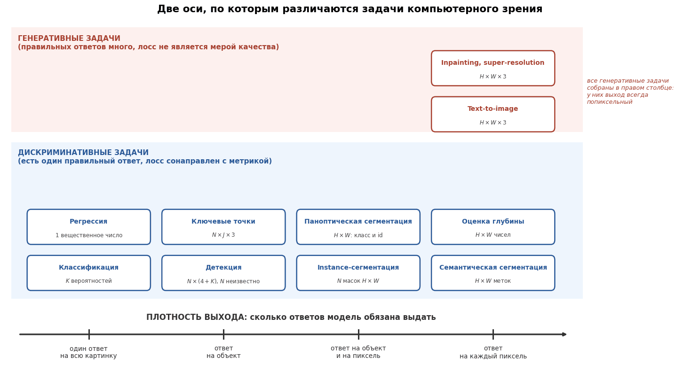
Голубая нижняя зона — дискриминативные задачи, розовая верхняя — генеративные. Горизонтальная ось внизу — плотность выхода: слева направо от одного ответа на всю картинку к ответу на каждый пиксель. В карточках подписан размер выхода: у классификации $K$ вероятностей, у детекции $N \times (4+K)$ при заранее неизвестном $N$, у сегментации и глубины $H \times W$ чисел. Обратите внимание, что все генеративные задачи собраны в правом столбце — у них выход всегда попиксельный. Это не совпадение, а следствие определения. Генеративная задача по смыслу означает «выдай изображение», а изображение — это и есть попиксельный тензор.
Практическое следствие: у генеративных моделей нельзя оценить качество, сравнив выход с эталоном попиксельно. Метрики там сравнивают распределения: насколько похоже облако сгенерированных картинок на облако настоящих — см. Метрики генеративных моделей.
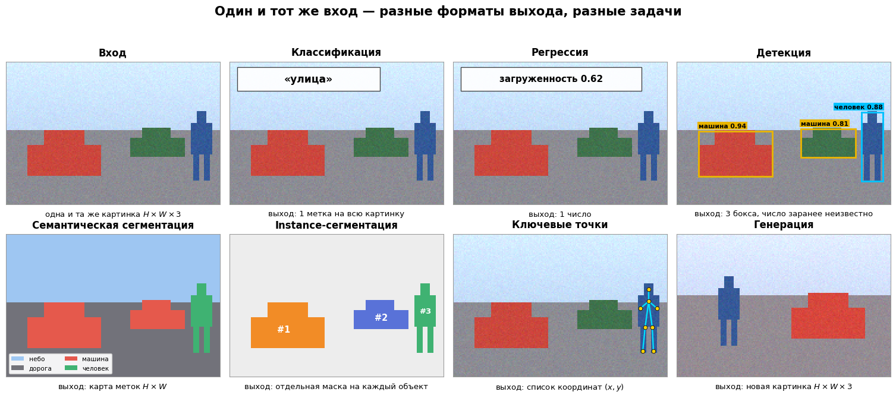
Одна и та же синтетическая сцена — голубое небо, серая дорога, красная машина слева, тёмно-зелёная машина в центре, тёмно-синий человек справа. Верхний ряд: вход, классификация (одна метка «улица»), регрессия (одно число 0.62), детекция (три рамки — две жёлтые для машин со скорами 0.94 и 0.81 и голубая для человека со скором 0.88). Нижний ряд: семантическая сегментация, где обе машины окрашены одним красным цветом класса; instance-сегментация, где та же пара машин разведена по цветам — оранжевый объект №1 и синий объект №2; ключевые точки — жёлтые узлы и голубые рёбра скелета на человеке; генерация — совсем другая сцена, которой на входе не было. Задачи различаются не входом, а тем, что требуется на выходе. Сводная таблица
Ниже — таблица, к которой стоит возвращаться при разборе остальных вопросов страницы. Каждая её строка развёрнута дальше в отдельный вопрос: детекция — в блоке 3, сегментация — в блоке 4, ключевые точки и глубина — в блоке 5, генерация — в блоке 6.
Задача Вход Выход Типичный лосс Типичная метрика Классификация (multi-class) изображение одна метка из $K$ Cross-Entropy поверх softmax accuracy, macro-$F_1$, ROC-AUC Классификация (multi-label) изображение подмножество из $K$ меток BCE по каждому классу независимо mAP по классам, macro-$F_1$ Регрессия изображение одно вещественное число MSE / MAE / Huber MAE, RMSE, $R^2$ Детекция изображение множество $(\text{bbox}, \text{class}, \text{score})$ переменной длины Focal/CE за класс + IoU-лосс за бокс mAP@[.50:.95] Семантическая сегментация изображение карта меток $H \times W$ CE + Dice mIoU, Dice Instance-сегментация изображение набор масок отдельных объектов лосс детектора + BCE по маске mask AP Паноптическая сегментация изображение things + stuff, каждый пиксель ровно в одном сегменте комбинированный $PQ = SQ \times RQ$ Ключевые точки изображение (часто + bbox) набор $(x, y, \text{visible})$ MSE по гауссову heatmap OKS-AP, PCK Оценка глубины изображение вещественная карта $H \times W$ SILog / BerHu AbsRel, $\delta < 1.25$ Генерация шум / текст / изображение изображение MSE по предсказанному шуму FID, CLIPScore Главный тезис всего раздела: тип выхода определяет и лосс, и метрику, и формат разметки — а не наоборот.
Читать таблицу нужно слева направо и относиться к этому как к цепочке следствий:
- Решили, что нужен ответ на каждый пиксель $\to$ выход есть карта $H \times W$.
- Значит, лосс должен считаться попиксельно $\to$ CE по каждому пикселю, плюс Dice против дисбаланса.
- Значит, метрика должна мерить совпадение областей $\to$ IoU/Dice, а не accuracy.
- Значит, разметчик обязан обвести контур, а не поставить рамку $\to$ разметка дорожает в разы.
Полка в супермаркете, на ней 40 товаров. Что придётся размечать при разных постановках:
- Классификация («есть ли пустоты на полке»): 1 клик на фото. Секунды.
- Детекция (найти каждую упаковку): 40 рамок. Минуты.
- Instance-сегментация (обвести контур каждой упаковки): 40 полигонов по 15–30 точек. Десятки минут.
- Ключевые точки (углы каждой упаковки): 40 объектов по 4 точки, плюс отметка видимости.
Часто именно эта строка бюджета, а не точность модели, решает, какую постановку выбрать. Подробный разбор компромисса — в Выбор постановки задачи.
В таблице нет колонки «архитектура» — и это осознанно. Одна и та же ResNet-50 или ViT стоит backbone почти в любой строке; см. ResNet и ViT.
Также в таблице нет двух больших семейств задач, которые формально относятся к CV, но живут по своим правилам:
- Метрическое обучение (поиск похожих, распознавание лиц, re-identification) — выход есть эмбеддинг, а качество меряется в задаче поиска.
- Мультимодальные задачи (image captioning, visual QA) — выход текстовый, см. Pixtral.
- «Сегментация — это просто более точная детекция». Нет: это другой формат выхода. Детекция выдаёт список переменной длины, сегментация — тензор фиксированной формы. Отсюда разные лоссы, разные метрики и совершенно разные технические проблемы.
- Выбирать метрику по привычке, а не по формату выхода. Accuracy для детекции не определена в принципе: нет фиксированного набора объектов, по которому считать долю правильных ответов.
- Считать, что задачу задаёт датасет. Датасет COCO содержит одновременно рамки, маски и ключевые точки — на нём обучают три разные задачи. Задачу задаёт то, что вы просите на выходе.
- Путать «переменное число выходов» с «переменным размером входа». Вход можно привести к фиксированному размеру ресайзом. Число объектов ресайзом не фиксируется — это принципиально другая трудность.
- Считать низкий лосс генеративной модели признаком хороших картинок. У дискриминативных задач лосс сонаправлен с метрикой, у генеративных — нет.
Чем задача компьютерного зрения задаётся формально?
Тройкой: формат входа, формат выхода и способ измерения качества. Вход почти во всех задачах одинаков — тензор $H \times W \times 3$, поэтому задачи различает именно формат выхода. Он же тянет за собой лосс, метрику и формат разметки.
По каким двум осям удобно раскладывать задачи CV?
Первая ось — плотность выхода: один ответ на всю картинку (классификация, регрессия), ответ на каждый объект (детекция, ключевые точки, instance-сегментация), ответ на каждый пиксель (семантическая сегментация, глубина, генерация). Вторая ось — дискриминативность против генеративности: есть ли у картинки единственный правильный ответ.
Почему детекция технически неудобнее классификации?
Потому что число объектов заранее неизвестно, а нейросеть выдаёт тензор фиксированной формы. Нельзя просто «регрессировать 4 числа»: непонятно, сколько выходов заводить и какой выход какому объекту соответствует. Из этой трудности выросли якоря, назначение таргетов, NMS и венгерский матчинг.
Почему у генеративных задач лосс не является мерой качества?
Потому что правильных ответов много: по запросу «кот на подоконнике» верны миллионы разных картинок. Эталона для попиксельного сравнения нет. Лосс диффузионной модели измеряет точность предсказания подмешанного шума, а не красоту результата, поэтому качество меряют метриками сравнения распределений вроде FID.
Оцените порядок размера выхода для классификации, детекции и сегментации на картинке $512 \times 512$.
Классификация на 1000 классов — около 1000 чисел. Детекция при 10 объектах — порядка 60 значимых чисел, но переменной длины. Семантическая сегментация на 19 классов — $512 \cdot 512 \cdot 19 \approx 5$ млн чисел. Разница в четыре порядка объясняет, почему у сегментации основная проблема — память, а у детекции — переменное число ответов.
Почему таксономия по архитектурам хуже таксономии по выходу?
Потому что одна и та же ResNet-50 стоит backbone и в классификаторе, и в детекторе, и в сегментаторе — архитектура не отвечает на вопрос, какая задача решается. Пайплайны разных задач отличаются головой, а не стволом, поэтому различать их надо по формату выхода.
-
Backbone, neck и head: из чего собран любой пайплайн CV
Почти любая современная модель компьютерного зрения разрезается на три части.
- Backbone (ствол) — свёрточная сеть или трансформер, который превращает картинку в карты признаков. Как правило, предобучен на ImageNet.
- Neck (шея) — узел, сводящий вместе признаки разных масштабов: FPN, PAN, ASPP. Иногда отсутствует.
- Head (голова) — небольшой блок из нескольких слоёв, который превращает признаки в формат выхода конкретной задачи.
Если совсем простыми словами: ствол отвечает на вопрос «что вообще видно на картинке», а голова — на вопрос «в каком виде это нужно записать».
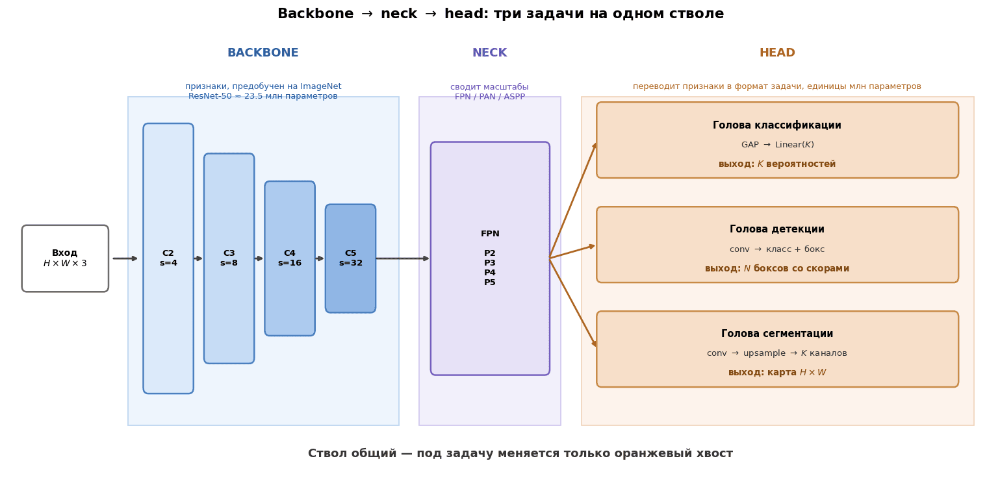
Слева направо: вход $H \times W \times 3$, голубая зона BACKBONE со стадиями C2–C5 (прямоугольники укорачиваются по мере роста stride с 4 до 32 — падает пространственное разрешение), сиреневая зона NECK с FPN и уровнями P2–P5, оранжевая зона HEAD с тремя разными головами. Три оранжевые стрелки выходят из одного и того же места — из neck, и это главное, что показывает схема: под задачу меняется только хвост, а ствол остаётся общим. Backbone последовательно уменьшает пространственное разрешение и увеличивает число каналов. Для ResNet-50 на входе $224 \times 224 \times 3$ это выглядит так:
- после первой свёртки $7 \times 7$ со страйдом 2 и max pooling — $56 \times 56 \times 64$;
- после первой стадии residual-блоков (C2) — те же $56 \times 56$, но уже $256$ каналов;
- дальше $28 \times 28 \times 512$ (C3), $14 \times 14 \times 1024$ (C4), $7 \times 7 \times 2048$ (C5).
То есть картинка «сжимается» в 32 раза по каждой стороне, но каждая клетка описывается 2048 числами вместо 3. Обмен пространственного разрешения на семантическое богатство — это и есть работа ствола. Механика самих свёрток и пулингов разобрана в Свёрточный слой и Пулинг.
Ствол почти никогда не пишут с нуля. Берут готовую архитектуру из зоопарка:
- ResNet — до сих пор рабочая лошадка и базовая точка отсчёта в статьях;
- EfficientNet и MobileNetV2 — когда важна скорость на слабом железе;
- ViT, Swin, ConvNeXt — современные сильные стволы для больших датасетов.
Стволы взаимозаменяемы: в конфиге детектора строка
backbone: resnet50меняется наbackbone: convnext_tinyбез переписывания остального кода.Многомасштабность: почему мелкие объекты теряются
Stride карты признаков — во сколько раз она мельче входа. Карта со stride 16 означает: одна её клетка соответствует квадрату $16 \times 16$ пикселей исходной картинки.
Стандартные обозначения стадий ResNet: $C_2$ (stride 4), $C_3$ (stride 8), $C_4$ (stride 16), $C_5$ (stride 32). Индекс — это $\log_2$ от stride.
То есть: чем больше номер стадии, тем грубее сетка и тем меньше клеток приходится на один объект.
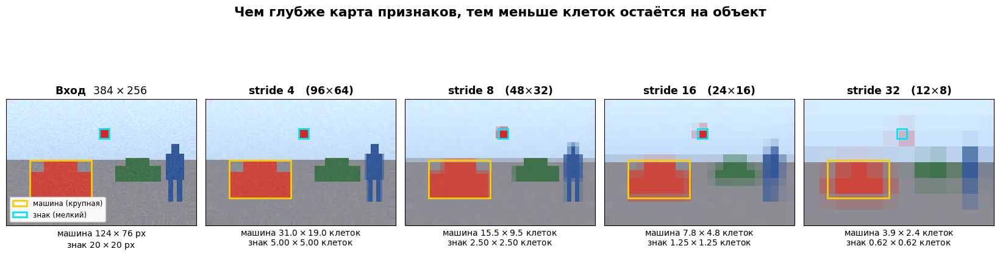
Пять панелей слева направо: вход $384 \times 256$ и карты признаков со stride 4, 8, 16 и 32 (в скобках — размер сетки: $96\times64$, $48\times32$, $24\times16$, $12\times8$). Жёлтой рамкой отмечена крупная машина $124 \times 76$ px, голубой — мелкий знак $20 \times 20$ px. Под каждой панелью посчитано, сколько клеток остаётся на объект. Машина доживает до stride 32 с запасом в $3.9 \times 2.4$ клетки, а знак к этому моменту занимает $0.62 \times 0.62$ клетки и на последней панели виден лишь как бледное розовое пятно, размазанное по соседним клеткам. Соблазн понятен: $C_5$ — самая семантически богатая карта, она «знает» про объекты больше всех. Но на ней объект размером 20 пикселей занимает меньше одной клетки. Восстановить его положение с точностью до пикселя из такой карты невозможно — информация физически усреднена.
Обратная сторона: на $C_2$ разрешение отличное, но признаки там низкоуровневые — края и текстуры, а не «это колесо машины». Один слой не даёт одновременно и точную локализацию, и высокоуровневую семантику.
Именно этот конфликт и снимает neck. FPN (Feature Pyramid Network) берёт глубокую семантику с $C_5$, поднимает её обратно вверх по разрешению и складывает с деталями из $C_4$, $C_3$, $C_2$. На выходе получается пирамида $P_2 \dots P_5$: карты всех разрешений, и все с высокоуровневой семантикой.
Устройство FPN и механика апсемплинга разобраны в Пулинг и пирамиды признаков, а сама идея складывать выход с обходным сигналом — в Skip-connections.
Альтернативный neck для сегментации — ASPP: вместо пирамиды разрешений он берёт несколько параллельных свёрток с разным разрежением (dilation) на одной карте.
Receptive field (рецептивное поле) нейрона — область исходной картинки, которая на него влияет.
У ResNet-50 на стадии $C_5$ теоретическое рецептивное поле — сотни пикселей, то есть каждая клетка «видит» почти всё изображение. Это хорошо для контекста («на фоне дороги значит машина, а не игрушка»), но означает, что точная граница объекта в этой клетке уже не закодирована.
Практическое правило: чем больше рецептивное поле, тем лучше классификация и тем хуже локализация.
Head: где начинаются различия между задачами
Возьмём один и тот же ResNet-50 и посмотрим, чем отличаются пайплайны:
- Классификация. Голова: global average pooling ($7 \times 7 \times 2048 \to 2048$) и один линейный слой $2048 \to K$. Около 2 млн параметров при $K = 1000$.
- Детекция (RetinaNet). Голова: две ветки по четыре свёртки $3\times3$ — одна предсказывает класс, вторая смещения бокса — применяются к каждому уровню пирамиды.
- Сегментация (DeepLab). Голова: ASPP, свёртка $1\times1$ на $K$ каналов и билинейный апсемплинг обратно до $H \times W$.
Ствол во всех трёх случаях идентичен вплоть до весов. Различия начинаются после него.
Из этого вытекает устройство всех современных фреймворков —
mmdetection,detectron2,ultralytics. Модель там собирается из конфига по кирпичам:backbone,neck,head, и заменить один кирпич можно, не трогая остальные.Практический вывод для собеседования: на вопрос «чем YOLO отличается от U-Net» правильный ответ начинается не с перечисления слоёв, а с формата выхода и, следовательно, головы.
Transfer learning: как это обучают
Обучать ствол с нуля на своих 3000 картинках бессмысленно: низкоуровневые признаки — края, углы, текстуры, цветовые переходы — одинаковы для всех изображений на свете, и выучивать их заново на маленькой выборке значит гарантированно переобучиться.
Предобучение на ImageNet (1.2 млн картинок) даёт готовые признаки, и на своей задаче остаётся дообучить верхние слои. Типичный выигрыш на выборке в несколько тысяч картинок — единицы, а иногда и десятки процентных пунктов качества.
Голова инициализируется случайно, а ствол — осмысленными весами. Если пустить общий большой learning rate, первые же шаги со случайной головой дадут огромные градиенты и разрушат предобученный ствол. Это явление называют catastrophic forgetting.
Два стандартных приёма против этого:
- Заморозка. Первые 1–3 эпохи
requires_grad = Falseна стволе: учится только голова. Затем ствол размораживают. - Разные LR. Стволу дают learning rate в 10 раз меньше, чем голове: например, $10^{-4}$ против $10^{-3}$. В PyTorch это делается через параметрические группы оптимизатора.
Часто добавляют и warmup — первые несколько сотен шагов LR линейно растёт от нуля.
Датасет: 4000 фотографий склада, 3 класса, backbone ResNet-50 с весами ImageNet.
- Эпохи 1–2: ствол заморожен, LR головы $10^{-3}$.
- Эпохи 3–20: ствол разморожен, LR ствола $10^{-4}$, LR головы $10^{-3}$, косинусное затухание.
- Аугментации — флипы, масштаб, цветовой джиттер; см. Аугментация данных.
- Батч 8 на одну GPU.
Пункт 4 важнее, чем кажется: при батче 8 статистики BatchNorm в стволе шумные. Поэтому в детекции BN в backbone обычно замораживают (frozen BN) или заменяют на GroupNorm.
Полезная интуиция про распределение веса модели:
- ResNet-50 целиком — около 25.6 млн параметров, из них примерно 23.5 млн в стволе.
- FPN-neck — единицы миллионов.
- Голова детектора или сегментатора — тоже единицы миллионов.
То есть основной вес модели — в стволе. Отсюда два вывода: скорость инференса определяется в основном выбором backbone, а замена головы почти не меняет размер модели.
- Обучать с нуля там, где хватило бы предобучения. На выборке меньше десятков тысяч картинок случайная инициализация ствола почти всегда проигрывает — иногда катастрофически.
- Один общий LR для ствола и случайно инициализированной головы. Первые шаги ломают предобученные веса. Лечится заморозкой, warmup и раздельными LR.
- Ожидать точной локализации мелких объектов от глубокой карты. Объект в 20 пикселей на карте со stride 32 занимает меньше клетки. Нужен либо FPN, либо работа на более высоком разрешении.
- Забыть про BatchNorm при маленьком батче. При батче 2–8 статистики BN шумят и портят предобученный ствол. В детекции BN в backbone обычно замораживают.
- Считать neck обязательным. Простому классификатору он не нужен: там между стволом и головой стоит только global average pooling.
- Путать stride и размер ядра. Stride карты — это накопленный коэффициент уменьшения от входа, а не параметр одного слоя.
Из каких трёх частей состоит типичный пайплайн CV и за что отвечает каждая?
Backbone извлекает признаки и обычно предобучен на ImageNet; neck (FPN, PAN, ASPP) сводит вместе признаки разных масштабов; head превращает признаки в формат выхода конкретной задачи. Ствол отвечает на вопрос «что видно», голова — «в каком виде это записать».
Чем отличаются детекционный и сегментационный пайплайны?
Практически только головой. Backbone может быть побайтово одинаковым — та же ResNet-50 с теми же весами ImageNet. Разные форматы выхода требуют разных голов, разных лоссов и разных метрик, но не разных стволов.
Что такое stride карты признаков и почему на глубоких картах теряются мелкие объекты?
Stride — во сколько раз карта мельче входа: клетка карты со stride 16 отвечает квадрату $16\times16$ пикселей входа. Объект размером 20 пикселей на карте со stride 32 занимает меньше одной клетки, то есть его положение физически усреднено и восстановить его точно уже нельзя.
Зачем нужен neck, если можно взять самую глубокую карту?
Потому что глубокая карта даёт хорошую семантику, но плохую локализацию, а мелкая — наоборот. FPN берёт семантику с глубокой карты, поднимает её по разрешению и складывает с деталями мелких карт, давая пирамиду, где на всех разрешениях есть высокоуровневые признаки.
Почему нельзя дообучать предобученный ствол с тем же LR, что и случайно инициализированную голову?
Потому что случайная голова на первых шагах даёт большие градиенты, которые проходят в ствол и разрушают осмысленные предобученные веса. Стандартные лекарства: заморозить ствол на первые эпохи, дать ему LR примерно в 10 раз меньше и использовать warmup.
Почему в детекции часто замораживают BatchNorm в backbone?
Потому что детекторы обучают с маленьким батчем (2–8 картинок из-за высокого разрешения), а BatchNorm при таком батче считает шумные статистики среднего и дисперсии. Замороженный BN использует статистики, накопленные при предобучении на ImageNet, и ведёт себя стабильнее.
-
Данные и разметка: форматы, стоимость, ловушки
Разметка (аннотация) — это файл или структура данных, которая для каждого изображения хранит ровно тот объект, который модель должна выдать на выходе. Постановка задачи и формат разметки — это одно и то же, записанное с двух сторон:
- классификация $\to$ одно число (индекс класса) на картинку;
- детекция $\to$ список рамок с классами;
- сегментация $\to$ карта меток размером с изображение;
- ключевые точки $\to$ упорядоченный список координат.
Из этого следует главный практический вывод: выбирая постановку, вы одновременно выбираете и цену данных. Разобрать это до начала проекта дешевле, чем после.
На собеседовании про архитектуры спрашивают все, а про данные — редко. При этом в реальном проекте качество почти всегда упирается не в выбор между ResNet и ViT, а в то, насколько согласованно люди разметили границы объектов и не утекли ли соседние кадры одного видео в валидацию.
Если на вопрос «как бы вы решали такую задачу» вы начинаете с бюджета разметки и схемы сплита, это сильный сигнал о практическом опыте.
Форматы разметки
COCO JSON — один файл на всю выборку. Внутри три списка:
images(id, имя файла, ширина, высота),annotations(id,image_id,category_id,bbox,segmentation,area,iscrowd),categories. Бокс хранится как $[x_{\min},\, y_{\min},\, w,\, h]$ в пикселях. Формат по умолчанию для детекции и инстанс-сегментации.Pascal VOC XML — один XML на изображение. Бокс задан четырьмя абсолютными координатами $[x_{\min},\, y_{\min},\, x_{\max},\, y_{\max}]$. Есть флаги
difficultиtruncated.YOLO-txt — один текстовый файл на изображение, по строке на объект:
class_id x_center y_center width height. Все четыре числа нормированы на размер картинки и лежат в $[0, 1]$.PNG-маски — картинка того же размера, где значение пикселя равно индексу класса (для семантической сегментации) или индексу экземпляра (для инстанс-сегментации). Хранится обычно в 8-битном палитровом PNG.
RLE (run-length encoding) — маска, сжатая в строку «сколько подряд нулей, сколько подряд единиц». Именно в этом виде COCO хранит маски: PNG на каждый объект был бы неподъёмным по размеру.
Keypoints-JSON — расширение COCO: поле
keypoints— плоский список $[x_1, y_1, v_1, x_2, y_2, v_2, \dots]$, где $v$ — флаг видимости ($0$ — нет в разметке, $1$ — размечена, но закрыта, $2$ — видна).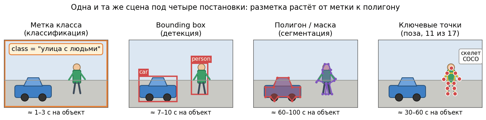
Четыре панели с одинаковой нарисованной сценой: голубое небо, серая дорога, синий автомобиль слева и зелёный человек справа. Слева направо: метка класса — вся картинка обведена оранжевой рамкой и подписана class = улица с людьми, снизу подпись примерно 1–3 с на объект; bounding box — два красных прямоугольника с подписями car и person, примерно 7–10 с на объект; полигон и маска — контуры автомобиля и человека, залитые полупрозрачным красным и фиолетовым, с точками вершин по периметру, примерно 60–100 с на объект; ключевые точки — жёлтый скелет из отрезков с красными узлами поверх человека, примерно 30–60 с на объект. Одна и та же сцена требует принципиально разного объёма ручной работы. Картинка $640 \times 480$, объект класса «человек» ($\text{class\_id} = 0$), рамка от $(100,\, 50)$ до $(220,\, 350)$.
Формат Запись COCO "bbox": [100, 50, 120, 300]— левый верх, ширина, высотаPascal VOC <xmin>100</xmin><ymin>50</ymin><xmax>220</xmax><ymax>350</ymax>YOLO 0 0.25 0.4167 0.1875 0.625Проверим YOLO: центр по $x$ равен $(100 + 220)/2 = 160$, делим на ширину $640$ — получаем $0.25$. Центр по $y$: $(50 + 350)/2 = 200$, делим на $480$ — получаем $0.4167$. Ширина $120/640 = 0.1875$, высота $300/480 = 0.625$.
Самая частая ошибка конвертации — перепутать
[x, y, w, h]и[x1, y1, x2, y2]. Признак: боксы предсказываются в правильном месте, но с абсурдными размерами, а mAP держится около нуля при визуально осмысленных картинках.Перед обучением всегда отрисуйте 20 случайных примеров разметки поверх картинок и посмотрите глазами. Это ловит:
- перепутанные $x$ и $y$ (боксы повёрнуты на 90°);
- забытую нормировку (все боксы схлопнулись в левый верхний угол);
- сдвиг на единицу в индексах классов (
personподписан какbicycle); - маски, не совпадающие с изображением по размеру после ресайза.
Ни один из этих багов не выдаёт исключения — модель спокойно обучится и покажет плохую метрику.
Сколько это стоит
Порядки величин на один объект, усреднённые по индустрии:
- метка класса на всю картинку — $1$–$3$ секунды;
- bounding box — $7$–$10$ секунд;
- ключевые точки (17 точек COCO) — $30$–$60$ секунд;
- полигон или точная маска — $60$–$100$ секунд.
Разброс между меткой и полигоном — примерно сорок раз. Это не абстракция: при бюджете в 200 часов разметчика вы получите либо $\approx 250\,000$ размеченных картинок для классификации, либо $\approx 8\,000$ объектов для сегментации.
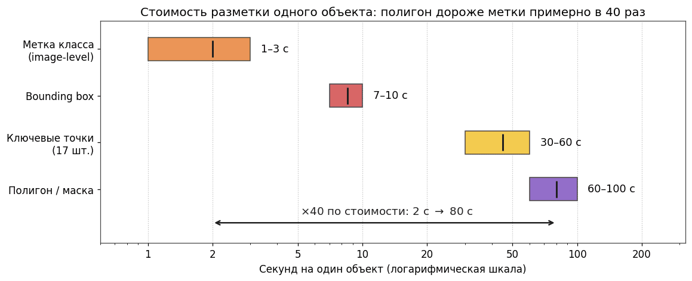
Горизонтальная столбчатая диаграмма: по вертикали четыре типа разметки сверху вниз — метка класса, bounding box, ключевые точки, полигон или маска; по горизонтали секунды на один объект в логарифмической шкале с делениями 1, 2, 5, 10, 20, 50, 100, 200. Каждый тип показан не одним значением, а интервалом: оранжевый брусок 1–3 с, красный 7–10 с, жёлтый 30–60 с, фиолетовый 60–100 с; чёрная вертикальная чёрточка внутри бруска отмечает середину интервала. Внизу двусторонняя чёрная стрелка от 2 до 80 секунд с подписью ×40 по стоимости. Логарифмическая ось нужна именно потому, что разброс двухпорядковый. Аргумент на собеседовании звучит так: «нам нужно понять, есть ли дефект на детали. Сегментация даст форму дефекта, но при бюджете в $N$ часов мы разметим в сорок раз меньше примеров, чем при классификации. Если продукту достаточно ответа „да/нет“ и координат с точностью до рамки, начинаем с детекции».
Практическая лестница, по которой обычно и идут:
- Слабая разметка сначала. Собрать метки уровня картинки, обучить классификатор, посмотреть на потолок качества.
- Уточнять только там, где нужно. Разметить боксами лишь те классы, где важна локализация.
- Полигоны — точечно. Обычно достаточно нескольких сотен масок для дообучения поверх модели, натренированной на боксах.
Подробный разбор того, как выбор постановки связан с продуктовым требованием, — в отдельном вопросе.
Шум разметки
Разметка — это результат работы людей, и она никогда не точна. Три источника ошибок:
- Границы. Где именно кончается тень объекта? Обводить ли ручку чемодана? Два аккуратных разметчика дают маски, у которых IoU редко выше $0.85$–$0.90$.
- Несогласованность инструкции. Считать ли отражение в витрине человеком? Размечать ли объект, видимый на четверть? Если инструкция не отвечает, каждый разметчик решает по-своему.
- Пропуски. На плотной сцене человек просто устаёт и не размечает часть мелких объектов. Модель находит их, метрика считает их false positive — и штрафует за правильный ответ.
Чтобы измерить шум, дают одну и ту же выборку двум разметчикам и считают согласие:
- для классификации — каппа Коэна: $\kappa = \dfrac{p_o - p_e}{1 - p_e}$, где $p_o$ — доля совпадений, $p_e$ — доля совпадений, ожидаемая при случайной разметке. Значение $\kappa > 0.8$ считается высоким согласием, $0.6$–$0.8$ — приемлемым;
- для детекции — доля объектов, у которых боксы двух разметчиков дают $\text{IoU} \ge 0.5$, и средний IoU по этим парам;
- для сегментации — средний Dice между масками двух разметчиков.
Это число — потолок метрики. Если разметчики согласуются между собой на уровне $\text{IoU} = 0.85$, ждать от модели $\text{IoU} = 0.95$ бессмысленно: выше согласия людей измерить нечем. Именно поэтому mAP на COCO не бывает близким к единице.
- Разметить валидацию заново и аккуратно. Шум в train модель отчасти усредняет, шум в val делает метрику бессмысленной. Валидация — это то место, где экономить нельзя.
- Сгладить метки. Label smoothing в классификации мешает сети становиться сверхуверенной в потенциально неверной метке.
- Пересечь разметчиков. Разметить 5 % выборки дважды и посчитать согласие — это стоит дёшево и сразу говорит, чего ждать от модели.
- Не гнаться за последними процентами. Если модель уже внутри разброса аннотаторов, дальнейший рост метрики означает подгонку под конкретный шум разметки, а не под задачу.
Сплит и утечки
Утечка — ситуация, когда информация из валидации присутствует в обучении. В CV она почти всегда возникает из-за групповой структуры данных, которую случайный сплит игнорирует:
- кадры одного видео: соседние кадры отличаются на доли процента пикселей. Разложив их случайно, вы фактически кладёте одну и ту же картинку в train и в val;
- снимки одного пациента: КТ-срезы одного человека похожи между собой сильнее, чем срезы разных людей;
- фотографии одного товара / одной детали / одной сцены: несколько ракурсов одного объекта — это один объект, а не несколько наблюдений;
- дубликаты и почти-дубликаты: одна и та же картинка, скачанная из двух источников.
Общая теория разделения выборки — в train/val/test split, а способ сохранить доли классов — в стратификации.
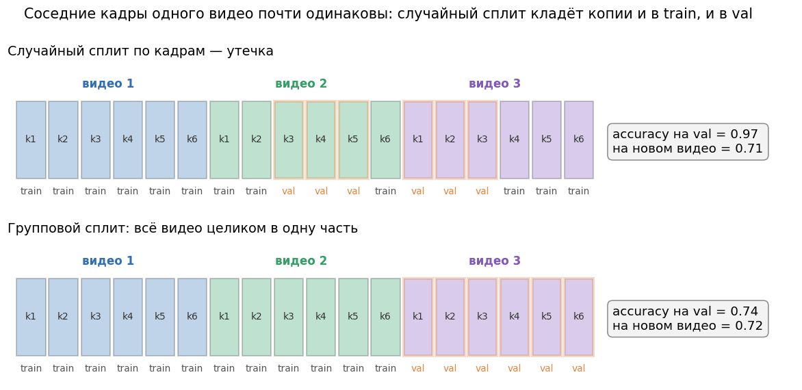
Две горизонтальные полосы по 18 прямоугольников-кадров: голубые кадры видео 1, зелёные видео 2, фиолетовые видео 3, по шесть кадров в каждом. Кадры, попавшие в валидацию, обведены оранжевой рамкой и подписаны снизу словом val, остальные подписаны train. Сверху случайный сплит по кадрам: видео 1 целиком ушло в train, а val-кадры выпали вперемешку внутри видео 2 (кадры k3, k4, k5) и видео 3 (кадры k1, k2, k3), то есть у каждого val-кадра в обучении лежит его сосед по времени; справа в рамке приписано accuracy на val = 0.97, на новом видео = 0.71. Снизу групповой сплит: в валидацию целиком уходит третье, фиолетовое видео, и результат честный — accuracy на val = 0.74, на новом видео = 0.72. Разрыв в 26 пунктов между валидацией и продакшеном в верхнем случае и есть цена утечки. Проект по контролю качества: 300 видео с конвейера, из каждого нарезано по 200 кадров, всего $60\,000$ картинок.
- Случайный сплит 80/20. Валидация — $12\,000$ кадров, почти для каждого в обучении лежит его сосед по времени. Accuracy на валидации $0.97$. На новом видео из следующей смены — $0.71$.
- Сплит по видео (
GroupKFoldсgroups = video_id). Валидация — 60 видео целиком. Accuracy $0.74$. На новом видео — $0.72$.
Второй результат хуже по числу и честнее по сути: он предсказывает поведение в продакшене. Первый вводит в заблуждение и приводит к решению «выкатываем», после которого модель проваливается.
Реализация:
GroupKFold,StratifiedGroupKFoldиз scikit-learn или ручной сплит по списку уникальных идентификаторов групп. Общая механика $k$-fold при этом не меняется — меняется только то, что перемешиваются группы, а не отдельные объекты.Аугментации и таргет
В классификации аугментация меняет только картинку: метка «кошка» остаётся «кошкой» после поворота. В детекции, сегментации и позе так нельзя. Любое геометрическое преобразование обязано быть применено и к картинке, и к таргету:
- поворот, отражение, сдвиг, масштаб, кроп $\to$ те же координаты пересчитываются для боксов, полигонов, масок и точек;
- горизонтальное отражение в позе $\to$ дополнительно нужно поменять местами левые и правые ключевые точки, иначе сеть учится на скелете, у которого левое колено оказалось справа;
- кроп $\to$ объекты, вышедшие за границу, нужно обрезать по рамке кадра, а объекты, от которых осталось меньше нескольких процентов площади, — выбросить, иначе сеть учится детектировать хвостик пикселя.
Цветовые аугментации (яркость, контраст, шум, размытие) таргет не трогают — они безопасны для всех постановок.
Библиотеки вроде
albumentationsделают синхронное преобразование сами, если передать таргет в правильном поле (bboxes,masks,keypoints). Ошибка почти всегда в том, что таргет передали мимо и трансформировалась одна картинка. Общий разбор аугментаций — в отдельном вопросе.- Лосс локализации не падает ниже некоторого уровня, а лосс классификации при этом сходится нормально.
- На визуализации предсказаний боксы систематически смещены или отражены относительно объектов.
- Отключение всех геометрических аугментаций улучшает метрику — верный признак, что они ломали таргет.
- Начинать с сегментации, потому что «так точнее». Точнее — да, но в сорок раз дороже по разметке. Сначала посчитайте, какого объёма данных хватит, и только потом выбирайте постановку.
- Считать разметку истиной в последней инстанции. Она шумная. Её согласованность — потолок вашей метрики, и его надо измерить, а не угадать.
- Делать случайный сплит на данных с групповой структурой. Кадры видео, снимки пациента, ракурсы товара обязаны целиком уходить в одну часть. Иначе валидация врёт в вашу пользу.
- Не удалять дубликаты перед сплитом. Один и тот же кадр из двух источников — это та же утечка, только менее заметная.
- Аугментировать картинку, забыв про таргет. Молчаливая ошибка: исключения нет, метрика просто не растёт.
- Не смотреть глазами на разметку. Двадцать отрисованных примеров ловят больше багов, чем час чтения кода конвертера.
- Экономить на валидации. Шумный train модель переживёт, шумный val сделает все ваши решения случайными.
Какие форматы разметки применяются в CV и чем они отличаются?
COCO JSON — один файл на выборку со списками images, annotations и categories, бокс хранится как $[x_{\min}, y_{\min}, w, h]$ в пикселях. Pascal VOC — один XML на картинку с четырьмя абсолютными углами $[x_{\min}, y_{\min}, x_{\max}, y_{\max}]$. YOLO-txt — строка на объект с нормированными в $[0,1]$ центром, шириной и высотой. Сегментация хранится либо PNG-маской со значением пикселя, равным индексу класса или экземпляра, либо в RLE — сжатой строке «столько нулей, столько единиц». Ключевые точки хранят плоским списком $[x, y, v]$ с флагом видимости $v$. Главный источник багов — путаница между $[x, y, w, h]$ и $[x_1, y_1, x_2, y_2]$ и забытая нормировка.
Сколько стоит разметка разных типов и как это влияет на выбор постановки?
Метка класса — примерно 1–3 секунды на объект, bounding box — 7–10 секунд, набор из 17 ключевых точек — 30–60 секунд, полигон или точная маска — 60–100 секунд. Разброс между меткой и полигоном примерно сорокакратный, поэтому при фиксированном бюджете разметки сегментационный датасет будет примерно в сорок раз меньше классификационного. Отсюда рабочая стратегия: начинать со слабой разметки, уточнять её боксами только там, где действительно нужна локализация, и добавлять полигоны точечно.
Что такое шум разметки и как измерить его величину?
Шум — расхождение между разметкой и «истиной»: неоднозначные границы объектов, неполная инструкция, пропущенные мелкие объекты. Измеряют его через согласие двух независимых разметчиков на одной и той же выборке: каппа Коэна для классификации, доля пар с $\text{IoU} \ge 0.5$ и средний IoU для детекции, средний Dice для сегментации. Это число — потолок метрики: если люди согласуются на уровне $\text{IoU} = 0.85$, требовать от модели $0.95$ бессмысленно.
Что такое групповая утечка и как её избежать?
Утечка возникает, когда почти одинаковые объекты попадают и в обучение, и в валидацию: соседние кадры одного видео, срезы одного пациента, ракурсы одного товара, дубликаты. Случайный сплит их разделяет и завышает метрику — типичный пример: accuracy 0.97 на валидации против 0.71 на новом видео. Лечится групповым сплитом: вся группа целиком уходит в одну часть выборки (GroupKFold, StratifiedGroupKFold или ручной сплит по идентификатору группы), а дубликаты удаляются до разбиения.
Почему в детекции и сегментации аугментация устроена сложнее, чем в классификации?
Потому что таргет геометрически привязан к пикселям. Любой поворот, отражение, сдвиг, масштабирование или кроп нужно применить и к картинке, и к боксам, полигонам, маскам и точкам одновременно. При горизонтальном отражении в задаче позы дополнительно меняются местами левые и правые ключевые точки. При кропе объекты обрезаются по границе кадра, а почти исчезнувшие — выбрасываются. Ошибка не даёт исключения: лосс локализации просто перестаёт падать, а отключение геометрических аугментаций неожиданно улучшает метрику.
Как за тридцать секунд проверить, что разметка загружена правильно?
Отрисовать 20 случайных примеров разметки поверх соответствующих изображений и посмотреть глазами. Это ловит перепутанные $x$ и $y$ (боксы повёрнуты), забытую нормировку (всё схлопнулось в угол), сдвиг индексов классов на единицу и рассогласование размеров масок и картинок после ресайза. Ни одна из этих ошибок не выбрасывает исключение — модель обучится и покажет низкую метрику без всякого объяснения.
-
Как честно мерить качество в CV
Протокол оценки — это набор правил, отвечающих на четыре вопроса, прежде чем будет посчитано хоть одно число:
- Как разбита выборка — что именно попадает в валидацию и по какому признаку;
- Что считается — какая метрика и на каком пороге;
- Как усредняется — по объектам, по классам, по группам;
- Как это связано с продуктом — какое число увидит бизнес и какое ограничение оно обязано выполнить.
Метрика без протокола — просто число. Одна и та же модель на одних и тех же данных даёт разброс в десятки пунктов в зависимости от ответов на эти четыре вопроса.
Про mAP, IoU и Dice, FID есть отдельные разборы: там речь о том, как устроена формула. Здесь речь о другом — как организовать измерение так, чтобы полученное число что-то означало. Формулу можно знать назубок и всё равно получить цифру, которая развалится в продакшене.
Разбиение выборки
Обычный $k$-fold перемешивает объекты. В компьютерном зрении объекты почти никогда не независимы, поэтому перемешивать нужно группы:
- по пациенту в медицине: все срезы, снимки и исследования одного человека — в одну часть;
- по сцене или локации: все кадры с одного перекрёстка, одного цеха, одной полки в магазине;
- по камере или устройству: у каждой камеры свой шум, баланс белого и геометрия объектива;
- по времени: если данные накапливались месяцами, валидация должна быть из более поздних дней, чем обучение.
Реализация —
GroupKFoldилиStratifiedGroupKFold. Если групп мало (пять камер), делают leave-one-group-out: обучаемся на четырёх камерах, валидируемся на пятой, и так пять раз. Полученный разброс между фолдами — самое честное представление о том, как модель переживёт шестую камеру.До сплита выборку нужно дедуплицировать. Точные дубликаты ловятся хешем файла, почти-дубликаты — перцептивным хешем (
phash,dhash) или расстоянием между эмбеддингами предобученной сети.Особенно опасны данные, собранные парсингом: одна и та же фотография товара встречается на десятке сайтов, и без дедупликации она гарантированно попадёт и в train, и в val. Симптом: метрика на валидации заметно выше, чем на любой новой партии данных, при том что сплит вроде бы групповой.
Порог и продуктовое ограничение
Сеть выдаёт непрерывный score. Всё остальное — «сработала / не сработала», «объект есть / объекта нет» — получается применением порога к этому score. Порог не участвует в обучении и подбирается отдельно, уже после того как модель зафиксирована.
Ключевая мысль: порог выбирается не по максимуму $F_1$, а по продуктовому ограничению. Формально это задача условной оптимизации:
$$\max_{\tau} \ \text{recall}(\tau) \quad \text{при условии} \quad \text{precision}(\tau) \ge p_0$$
где $p_0$ задан бизнесом. Симметричный вариант — максимизировать precision при $\text{recall} \ge r_0$. Общая логика подбора порога под задачу разобрана в оптимизации метрик классификации.
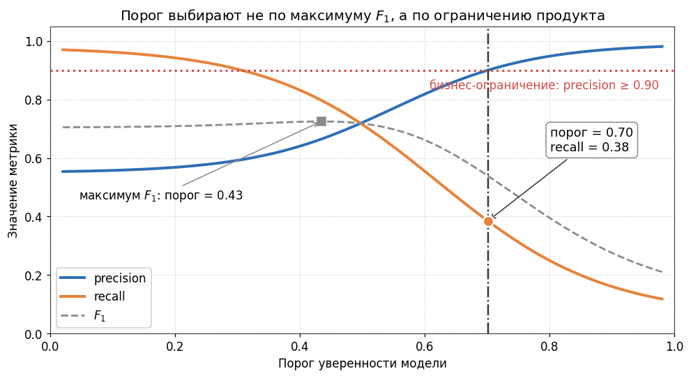
График с линейными осями: по горизонтали порог уверенности модели от 0 до 1, по вертикали значение метрики от 0 до 1. Синяя кривая precision монотонно растёт с 0.55 до 0.98, оранжевая кривая recall монотонно падает с 0.97 до 0.12, серая пунктирная кривая F1 имеет пологий максимум около 0.73 при пороге 0.43. Красная горизонтальная пунктирная линия на уровне 0.90 — это ограничение бизнеса precision не ниже 0.90. Чёрная штрихпунктирная вертикаль отмечает порог 0.70, при котором precision впервые достигает этого уровня; на кривой recall в этой точке оранжевый маркер и подпись recall = 0.38. Видно, что порог по ограничению и порог по максимуму F1 — это два разных числа, 0.70 против 0.43. Задача: модерация фотографий пользователей. Продукт говорит: «Ложная блокировка законной фотографии — жалоба и репутационный урон. Мы готовы пропустить часть нарушений, но точность блокировок должна быть не ниже $0.90$».
Правильный ход рассуждений:
- Построить PR-кривую на валидации, разбитой по пользователям (группа — пользователь, чтобы разные фото одного человека не растеклись).
- Найти минимальный порог, при котором $\text{precision} \ge 0.90$. По графику это $\tau = 0.70$.
- Прочитать recall на этом пороге: $0.38$.
- Сообщить продукту: «При вашем ограничении мы автоматически ловим 38 % нарушений. Остальные уходят на ручную модерацию — это $N$ задач в день».
- Отдельно оценить, что произойдёт при $\text{precision} \ge 0.80$: recall вырастет, скажем, до $0.62$. Это цена решения, выраженная в понятных продукту величинах.
Ответ «мы взяли порог $0.5$, потому что так по умолчанию» — слабый: $0.5$ ничем не обоснован и почти никогда не оптимален.
Порог — это подбираемый параметр. Подобрав его на тесте и там же измерив качество, вы получаете завышенную оценку. Схема правильная: обучение на train, подбор порога на val, единственное финальное измерение на отложенном test.
Калибровка
Модель калибрована, если среди объектов, которым она приписала уверенность $0.8$, действительно правы примерно 80 %. Формально:
$$P\bigl(y = \hat{y} \ \bigm|\ \hat{p} = p\bigr) = p \quad \text{для всех } p \in [0, 1]$$
Современные глубокие сети систематически сверхуверенны: обученные с кросс-энтропией, они выдают $0.99$ там, где реально правы в 85 % случаев. Причина в том, что кросс-энтропия продолжает толкать логиты вверх и после того, как класс уже угадан правильно. Общая постановка задачи вероятностной классификации — в отдельном вопросе.
Мера рассогласования — ECE (Expected Calibration Error). Предсказания раскладываются по $M$ корзинам уверенности, и в каждой сравнивается средняя уверенность со средней долей правильных ответов:
$$\text{ECE} = \sum_{m=1}^{M} \frac{|B_m|}{N} \bigl| \text{acc}(B_m) - \text{conf}(B_m) \bigr|$$
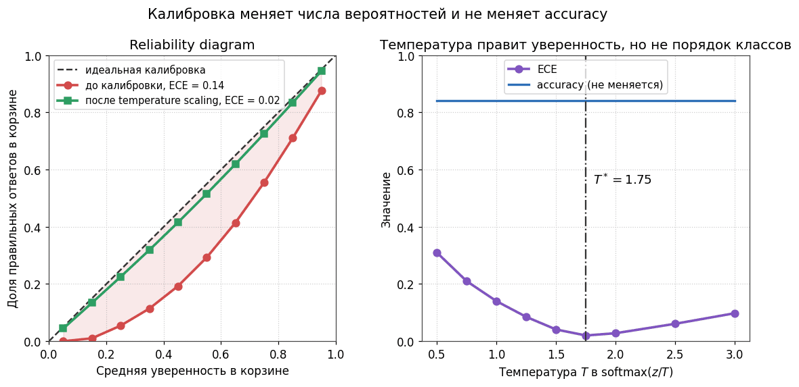
Две панели с линейными осями. Слева reliability diagram: по горизонтали средняя уверенность в корзине, по вертикали доля правильных ответов в корзине, обе от 0 до 1. Чёрная пунктирная диагональ — идеальная калибровка. Красная кривая с круглыми маркерами лежит заметно ниже диагонали, зазор залит бледно-розовым: это сверхуверенная модель до калибровки, ECE = 0.14. Зелёная кривая с квадратными маркерами практически совпадает с диагональю, ECE = 0.02 — та же модель после temperature scaling. Справа зависимость от температуры: по горизонтали T от 0.5 до 3.0, фиолетовая кривая ECE имеет минимум 0.020 при T = 1.75, отмеченном чёрной штрихпунктирной вертикалью, а синяя горизонтальная прямая accuracy = 0.842 не меняется ни при какой температуре. Простейший и самый рабочий метод калибровки — temperature scaling: логиты делятся на одно обучаемое число $T$ перед softmax:
$$\hat{p} = \mathrm{softmax}\left(\frac{z}{T}\right)$$
Температура $T > 1$ сглаживает распределение и снижает уверенность, $T < 1$ — заостряет. Единственный параметр $T$ подбирается на валидации минимизацией NLL или ECE.
Ключевое свойство: accuracy не меняется вообще. Деление всех логитов на одно положительное число не меняет их порядок, значит $\arg\max$ остаётся тем же самым — меняются только числа вероятностей. Именно поэтому калибровка почти бесплатна: она улучшает интерпретируемость уверенности, ничем не рискуя.
Где это критично:
- порог по уверенности имеет смысл только у калиброванной модели: «пропускать в ручную проверку всё, где уверенность ниже $0.9$» — рабочее правило при ECE $= 0.02$ и бессмысленное при ECE $= 0.20$;
- ансамбли и каскады, где вероятности разных моделей складываются или сравниваются;
- медицина и финансы, где вероятность показывается человеку и он принимает по ней решение.
TTA и другие честные приёмы
TTA — усреднение предсказаний по нескольким преобразованиям одного и того же изображения на инференсе: оригинал, горизонтальное отражение, несколько масштабов, кропы.
- Классификация: усредняются вероятности (или логиты) — прямолинейно.
- Сегментация: предсказанные карты нужно преобразовать обратно (отразить, вернуть масштаб) и только потом усреднять. Забытое обратное преобразование — классический баг, который сильно ухудшает результат.
- Детекция: боксы со всех вариантов сводятся вместе и прогоняются через NMS или weighted boxes fusion.
Типичный выигрыш — от $0.5$ до $2$ пунктов метрики ценой кратного роста времени инференса. TTA — законный приём, но при отчёте о качестве всегда указывайте, использовалась ли она: сравнивать модель с TTA и модель без неё некорректно.
Это самая частая логическая ошибка в отчётах.
- Модель оптимизирует дифференцируемый лосс (кросс-энтропию, Dice-loss, focal loss). Он нужен градиенту, а не человеку.
- Валидация считается в технической метрике (mAP, mIoU, accuracy). Она нужна, чтобы сравнивать модели между собой.
- Продукт живёт в бизнес-метрике: доля пропущенного брака, число ручных проверок в день, время оператора на задачу, деньги.
Между ними нет автоматической связи. Рост mAP с $0.42$ до $0.45$ может не изменить бизнес-метрику вообще — если прирост пришёлся на классы, которых в проде нет, или на пороги, которые продукт не использует. И наоборот: перенос порога без всякого переобучения может дать больше пользы, чем месяц работы над архитектурой.
Правильный формат отчёта содержит все три уровня: «mIoU вырос с $0.71$ до $0.74$; на рабочем пороге это означает падение доли пропущенного брака с $4.1\,\%$ до $2.8\,\%$; при текущем потоке это $\approx 90$ деталей в сутки».
- Определена группа для сплита (пациент, видео, камера, сцена) и сплит сделан по ней.
- Выборка дедуплицирована до сплита.
- Есть отложенный тест, который не использовался ни для выбора архитектуры, ни для подбора порога.
- Проверено, что распределение классов и условий съёмки в val похоже на продовое — иначе метрика измеряет не то.
- Порог зафиксирован по продуктовому ограничению на валидации.
- Проверена калибровка, если уверенность где-то используется как число.
- Указано, применялась ли TTA и какая.
- Метрика посчитана с доверительным интервалом (бутстрап по объектам валидации) — «$0.74$» и «$0.74 \pm 0.03$» это разные утверждения.
- Есть перевод в бизнес-метрику.
Регуляризационные приёмы, которые влияют на разрыв train/val, разобраны в борьбе с переобучением.
- Случайный сплит при групповой структуре данных. Даёт завышенную метрику и решение выкатывать модель, которая в продакшене не работает.
- Подбор порога на тесте. Тест перестаёт быть отложенным, оценка становится оптимистичной.
- Порог $0.5$ по умолчанию. Он не обоснован ничем и почти никогда не оптимален под конкретное ограничение.
- Считать уверенность сети вероятностью без проверки. Некалиброванная сеть выдаёт $0.99$ там, где права в 85 % случаев.
- Сравнивать модель с TTA и модель без TTA. Это сравнение двух разных пайплайнов, а не двух моделей.
- Отчитываться одним числом без интервала. На валидации в 500 объектов разница в один пункт неотличима от шума.
- Останавливаться на технической метрике. Пока метрика не переведена в единицы, которыми меряет продукт, невозможно понять, стоила ли работа своих денег.
Что такое групповая валидация и когда она обязательна?
Это разбиение выборки не по отдельным объектам, а по группам: пациент, видео, сцена, камера, локация, период времени. Обязательна всегда, когда объекты внутри группы похожи сильнее, чем объекты разных групп, — то есть почти всегда в CV. Реализуется через GroupKFold и StratifiedGroupKFold, а при малом числе групп — через leave-one-group-out, где разброс метрики между фолдами и есть честная оценка переносимости. Перед сплитом выборку обязательно дедуплицируют, включая почти-дубликаты по перцептивному хешу или эмбеддингам.
Как правильно выбирать порог уверенности?
Не по максимуму $F_1$, а по продуктовому ограничению: максимизировать recall при условии, что precision не ниже заданного бизнесом уровня $p_0$ (или наоборот). Практически: строится PR-кривая на валидации, находится минимальный порог, удовлетворяющий ограничению, и на нём читается вторая метрика. Например, при требовании $\text{precision} \ge 0.90$ порог оказывается 0.70, а recall на нём — 0.38, тогда как максимум $F_1$ достигается при пороге 0.43. Порог подбирают на валидации, а не на тесте, иначе итоговая оценка завышена.
Что такое калибровка вероятностей и как её измеряют?
Модель калибрована, если среди объектов с уверенностью $p$ доля правильных ответов равна $p$. Глубокие сети, обученные кросс-энтропией, систематически сверхуверенны. Рассогласование измеряют через ECE: предсказания раскладывают по корзинам уверенности и суммируют взвешенные модули разности между средней уверенностью и долей правильных ответов в корзине. Наглядное представление — reliability diagram: кривая сверхуверенной модели лежит ниже диагонали.
Как работает temperature scaling и почему он не меняет accuracy?
Логиты делятся на одно обучаемое положительное число $T$ перед softmax; $T$ подбирается на валидации минимизацией NLL или ECE. Деление всех логитов на одну положительную константу не меняет их относительный порядок, поэтому $\arg\max$ и, значит, accuracy остаются прежними — меняются только значения вероятностей. В типичном примере ECE падает с 0.14 до 0.02 при $T = 1.75$, а accuracy остаётся 0.842.
Что такое TTA и в чём подвох при её применении к сегментации и детекции?
Test-time augmentation — усреднение предсказаний по нескольким преобразованиям одного изображения на инференсе: отражения, масштабы, кропы. В классификации просто усредняются вероятности. В сегментации предсказанные карты нужно сначала преобразовать обратно в исходную геометрию и только потом усреднять — забытое обратное преобразование ухудшает результат. В детекции боксы со всех вариантов сводятся вместе и прогоняются через NMS или weighted boxes fusion. Типичный выигрыш 0.5–2 пункта ценой кратного роста времени инференса, и наличие TTA обязательно указывают в отчёте.
Чем обучающая метрика отличается от продуктовой и зачем это различать?
Лосс дифференцируем и нужен градиенту; техническая метрика (mAP, mIoU, accuracy) нужна для сравнения моделей; продуктовая метрика измеряется в долях пропущенного брака, числе ручных проверок, времени оператора и деньгах. Автоматической связи между ними нет: рост mAP на три пункта может не изменить бизнес-метрику, если прирост пришёлся на классы или пороги, которых нет в проде, а простой перенос порога иногда даёт больше пользы, чем месяц работы над архитектурой. Поэтому отчёт содержит все три уровня и обязательно доверительный интервал метрики.
-
Классификация изображений: постановка, лоссы, метрики
Классификация изображений — задача, в которой на вход подаётся картинка $x \in \mathbb{R}^{H \times W \times 3}$, а на выходе требуется указать, к какому из $K$ заранее фиксированных классов она относится.
Формат выхода — вектор из $K$ чисел, интерпретируемых как уверенность модели в каждом классе. Размер выхода фиксирован и не зависит от содержимого картинки: это самая простая строка сводной таблицы задач.
Если совсем простыми словами: модель отвечает на вопрос «что это?» одной меткой на всю картинку, ничего не сообщая о том, где именно объект находится и сколько его.
- Бинарная. Два взаимоисключающих класса: «дефект / нет дефекта». Один выход, сигмоида.
- Multi-class. $K$ взаимоисключающих классов: «кошка / собака / лошадь». Ровно один правильный ответ. $K$ выходов, softmax.
- Multi-label. $K$ независимых меток, каждая может быть включена или выключена: на фото одновременно «собака», «человек», «трава». $K$ выходов, $K$ независимых сигмоид.
Различие между двумя последними — не терминологическая мелочь: от него зависит и функция активации, и лосс, и метрика.
Softmax или набор сигмоид
Softmax превращает вектор логитов $z = (z_1, \dots, z_K)$ в распределение вероятностей:
$$p_i = \frac{e^{z_i}}{\sum_{j=1}^{K} e^{z_j}}$$
Здесь $z_i$ — сырой выход последнего линейного слоя для класса $i$ (любое вещественное число), $p_i$ — итоговая вероятность класса $i$. Знаменатель — сумма по всем классам.
Ключевое свойство прямо из формулы: $\sum_i p_i = 1$ всегда. То есть классы конкурируют за фиксированный «бюджет» вероятности: чтобы один класс вырос, другой обязан упасть. Именно это и означает «взаимоисключающие классы».
Для multi-label каждый класс оценивается своей сигмоидой:
$$p_i = \sigma(z_i) = \frac{1}{1 + e^{-z_i}}$$
Здесь знаменателя по всем классам нет — каждый выход считается сам по себе. Поэтому $\sum_i p_i$ может быть любым числом от 0 до $K$.
То есть модель отвечает не «какой из классов здесь», а $K$ раз подряд на вопрос «есть ли здесь класс $i$, да или нет».
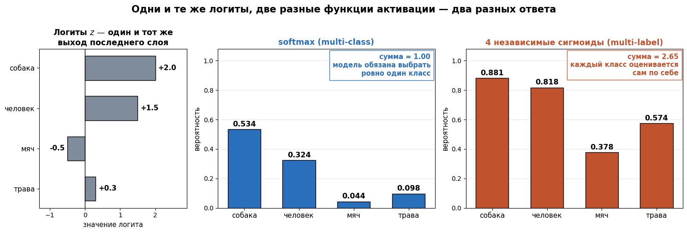
Один и тот же вектор логитов $z = (+2.0, +1.5, -0.5, +0.3)$ для классов собака, человек, мяч, трава — на левой панели он показан серыми горизонтальными столбцами. В центре синие столбцы softmax: $0.534$, $0.324$, $0.044$, $0.098$, сумма ровно $1.00$. Справа красные столбцы независимых сигмоид: $0.881$, $0.818$, $0.378$, $0.574$, сумма $2.65$. Обратите внимание на класс трава: softmax оценивает его в $0.098$, сигмоида — в $0.574$, то есть по одним и тем же логитам два подхода дают противоположные решения при пороге $0.5$. На фотографии одновременно есть и собака, и человек, и трава — все три метки верны. Softmax обязан распределить между ними единицу, поэтому даже при идеальном обучении он не сможет выдать высокие вероятности всем трём: уверенность в одной метке автоматически отнимает уверенность у остальных.
На картинке выше это видно буквально: softmax присваивает траве $0.098$, хотя логит у неё положительный. Набор сигмоид даёт $0.574$ — и трава проходит порог.
Ошибка эта не гипотетическая: она регулярно всплывает в модерации контента, где у одного изображения бывает сразу несколько нарушений.
В PyTorch
nn.CrossEntropyLossпринимает сырые логиты и применяетlog_softmaxвнутри. Если поставить softmax в самой модели и передать его выход в этот лосс, softmax применится дважды — обучение не упадёт с ошибкой, но пойдёт заметно хуже.Симметрично:
nn.BCEWithLogitsLossтоже ждёт логиты и применяет сигмоиду внутри, аnn.BCELoss— уже вероятности. Перепутать эти две пары — одна из самых частых ошибок в чужом коде.Функции потерь
Формулы Cross-Entropy и Binary Cross-Entropy, их вывод и связь с максимизацией правдоподобия разобраны в отдельном вопросе — Функции потерь классификации. Здесь важна только привязка к постановке:
- multi-class $\to$ softmax + CE, один правильный класс на объект;
- multi-label $\to$ сигмоиды + BCE, суммирование по всем $K$ классам независимо.
Если 95% выборки — класс «норма», модель быстро выучивает выдавать «норму» всегда: это уже даёт лосс лучше случайного. Лечение — веса классов:
$$L = -\sum_{i=1}^{K} w_i \, y_i \log p_i$$
где $w_i$ — вес класса $i$, $y_i$ — индикатор истинного класса, $p_i$ — предсказанная вероятность. Типичный выбор $w_i \propto 1 / n_i$, где $n_i$ — число примеров класса $i$ в обучающей выборке.
Практическая оговорка: сильные веса (скажем, $1{:}100$) делают градиенты шумными и часто дают модель, которая уверенно кричит «дефект» на всём подряд. На практике веса ограничивают сверху или берут $w_i \propto 1/\sqrt{n_i}$.
Focal Loss — там же разобраны формула и её поведение — решает другую проблему: не редкость класса, а то, что сумма лосса по огромному числу лёгких примеров перевешивает вклад трудных.
Множитель $(1 - p_t)^\gamma$ гасит вклад примеров, на которых модель уже уверена. Для классификации изображений его применяют реже, чем в детекции: там дисбаланс фон/объект достигает $1{:}1000$ и Focal обязателен — см. Лоссы детекции.
Обычный таргет для CE — «жёсткий» вектор $(0, \dots, 1, \dots, 0)$. Чтобы получить лосс, близкий к нулю, модель обязана выдать $p = 1$, а это требует бесконечно большого логита. Сеть начинает бесконечно раздувать веса.
Label smoothing заменяет таргет на мягкий: истинному классу присваивается $1 - \varepsilon$, а $\varepsilon$ равномерно размазывается по остальным $K - 1$ классам. Типичное значение $\varepsilon = 0.1$.
Эффект: модель становится менее самоуверенной, её вероятности лучше калиброваны, качество на ImageNet обычно растёт на несколько десятых процентного пункта. Аналогичную роль играют Mixup и CutMix — см. Аугментация данных.
Метрики
Accuracy — доля картинок, на которых предсказанный класс совпал с истинным.
Top-5 accuracy — доля картинок, на которых истинный класс попал в пятёрку самых вероятных ответов. Метрика появилась ради ImageNet, где 1000 классов и среди них десятки пород собак: требовать точного попадания там местами несправедливо даже к человеку.
Общая теория precision, recall, $F_1$ и матрицы ошибок — в Метрики бинарной классификации и Метрики многоклассовой классификации.
Контроль качества на производстве: 10 000 снимков деталей, из них 100 бракованных (1%).
Модель, которая всегда отвечает «годная», получает:
- accuracy $= 9900 / 10000 = 99.0\%$;
- recall по браку $= 0 / 100 = 0$;
- пропущено 100 из 100 дефектов.
Формально почти отличная модель, практически — бесполезная. Целевой класс редкий, и accuracy его просто не замечает.
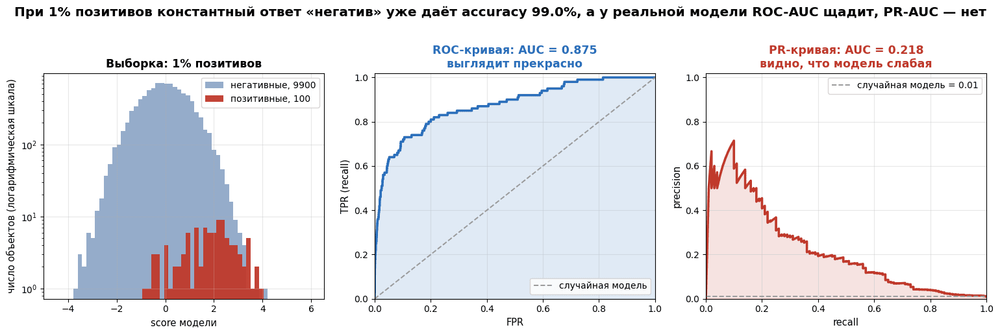
Три панели. Слева гистограмма скоров реальной модели на той же выборке: серо-голубые столбцы — 9900 негативов, красные — 100 позитивов, вертикальная ось логарифмическая, иначе красные столбцы были бы неразличимы. В центре синяя ROC-кривая с AUC $= 0.875$ и серой пунктирной диагональю случайной модели — по ней модель выглядит сильной. Справа красная PR-кривая с AUC $= 0.218$ и серым пунктиром на уровне $0.01$, соответствующим случайной модели; precision обваливается уже при recall около $0.2$. Одна и та же модель, две метрики, противоположные впечатления. Причина расхождения — в знаменателях.
ROC-кривая строится в осях FPR и TPR. FPR $= FP / (FP + TN)$, а $TN$ при дисбалансе огромен (9900 негативов). Поэтому даже сотня ложных срабатываний почти не двигает FPR, и кривая выглядит красиво.
PR-кривая строится в осях recall и precision, а precision $= TP / (TP + FP)$ — здесь негативов в знаменателе нет вовсе. Сотня ложных срабатываний против сотни позитивов рушит precision вдвое, и это сразу видно.
Практическое правило: при дисбалансе сильнее $1{:}20$ смотрите на PR-AUC, ROC-AUC оставьте для сбалансированных задач.
При $K > 2$ классов $F_1$ надо как-то усреднить, и вариантов два.
- Macro — посчитать $F_1$ отдельно для каждого класса и взять невзвешенное среднее. Все классы равноправны, редкий класс весит столько же, сколько частый.
- Micro — просуммировать $TP$, $FP$, $FN$ по всем классам и посчитать $F_1$ один раз. Каждый объект равноправен, поэтому частые классы доминируют.
Для однометочной multi-class задачи micro-$F_1$ математически совпадает с accuracy — это полезно помнить, чтобы не отчитываться одним и тем же числом дважды.
Дефектоскопия, 1000 снимков, три класса: норма (900), дефект-А (90), дефект-Б (10). Матрица ошибок (строки — истина, столбцы — предсказание):
пред. норма пред. А пред. Б истина: норма 890 8 2 истина: А 40 50 0 истина: Б 6 2 2 Считаем по классам:
- норма: $P = 890/936 = 0.951$, $R = 890/900 = 0.989$, $F_1 = 0.970$;
- дефект-А: $P = 50/60 = 0.833$, $R = 50/90 = 0.556$, $F_1 = 0.667$;
- дефект-Б: $P = 2/4 = 0.500$, $R = 2/10 = 0.200$, $F_1 = 0.286$.
Итого: accuracy $= (890 + 50 + 2)/1000 = 94.2\%$, что совпадает с micro-$F_1$. А macro-$F_1$ $= (0.970 + 0.667 + 0.286)/3 = 0.641$.
Разрыв 94.2% против 0.641 — это и есть цена того, что редкий дефект-Б ловится в двух случаях из десяти. Отчитываться здесь надо macro-метрикой.
Где это применяется
- Медицинская диагностика. Рентген, гистология, снимки сетчатки. Особенности: сильный дисбаланс, цена ложноотрицательного ответа несопоставимо выше ложноположительного, порог сдвигают в сторону recall. Часто классы упорядочены (стадии заболевания) — тогда путать стадию 1 со стадией 4 хуже, чем со стадией 2, и обычная CE этого не учитывает.
- Модерация контента. Насилие, оружие, 18+, наркотики — на одном изображении могут быть сразу несколько. Это multi-label, сигмоиды и BCE, каждому классу свой порог.
- Дефектоскопия на производстве. Дисбаланс до $1{:}1000$, редкие классы дефектов, требование объяснимости. Метрика — PR-AUC или recall при фиксированной precision.
- Агрономия. Болезни листьев по фотографии с телефона: сотни классов, огромный домен-сдвиг между лабораторными снимками и полевыми, сильные аугментации обязательны.
- Softmax для multi-label. Классы начинают отбирать вероятность друг у друга, и одновременно высокие уверенности становятся недостижимы. Нужны независимые сигмоиды и BCE.
- Отчитываться accuracy при дисбалансе. При 1% позитивов константный ответ даёт 99%. Смотрите PR-AUC, macro-$F_1$ и recall по редкому классу.
- Двойной softmax.
nn.CrossEntropyLossуже содержитlog_softmax— softmax в модели ставить не нужно. - Путать macro и micro. Для однометочной задачи micro-$F_1$ равен accuracy и ничего нового не сообщает; редкие классы видны только в macro.
- Порог 0.5 по умолчанию. Порог — свободный параметр, который подбирают по валидации под нужный баланс precision и recall, а вовсе не физическая константа.
- Игнорировать порядок классов. Для упорядоченных категорий (стадии болезни, оценки качества) обычная CE считает все ошибки одинаковыми; лучше работает ordinal-подход — см. Регрессия по изображению.
Чем multi-class отличается от multi-label и как это отражается в модели?
В multi-class классы взаимоисключающие: ровно один правильный ответ, поэтому используется softmax и Cross-Entropy. В multi-label метки независимы и их может быть сразу несколько, поэтому используется $K$ независимых сигмоид и BCE. Это разные активации, разные лоссы и разные метрики.
Почему softmax принципиально не подходит для multi-label?
Потому что softmax нормирует вероятности на единицу: $\sum_i p_i = 1$. Классы конкурируют за фиксированный бюджет, и модель не может одновременно выдать высокую уверенность нескольким верным меткам — рост одной автоматически снижает остальные.
Почему accuracy плоха при дисбалансе и что использовать вместо неё?
При 1% позитивов константный ответ «негатив» даёт accuracy 99% при нулевом recall. Accuracy усредняет по объектам, а редкий целевой класс почти не влияет на среднее. Использовать надо PR-AUC, macro-$F_1$ и recall по целевому классу.
В чём разница между ROC-AUC и PR-AUC и когда какая метрика уместна?
В знаменателях. FPR делится на число негативов, которых при дисбалансе очень много, поэтому ложные срабатывания почти не двигают ROC-кривую. Precision делится на число предсказанных позитивов, и ложные срабатывания бьют по ней сразу. При дисбалансе сильнее $1{:}20$ надо смотреть PR-AUC.
Что делает label smoothing и зачем?
Заменяет жёсткий таргет мягким: истинному классу присваивается $1 - \varepsilon$, а $\varepsilon$ размазывается по остальным $K-1$ классам, типично $\varepsilon = 0.1$. Это снимает стимул бесконечно раздувать логиты ради вероятности, равной единице, улучшает калибровку и обычно немного повышает качество.
Чем отличаются macro- и micro-усреднение $F_1$?
Macro усредняет $F_1$ по классам без весов, поэтому редкий класс влияет наравне с частым. Micro суммирует $TP$, $FP$ и $FN$ по всем классам и считает $F_1$ один раз, поэтому частые классы доминируют; для однометочной multi-class задачи micro-$F_1$ равен accuracy.
-
Тонкая классификация и длинный хвост
Тонкая классификация (fine-grained classification) — та же классификация изображений: вход $x \in \mathbb{R}^{H \times W \times 3}$, выход — один из $K$ классов. Отличие в структуре классов: все они принадлежат одной общей категории и различаются мелкими локальными деталями.
Канонические примеры:
- породы собак (120 классов в Stanford Dogs) — различаются формой ушей, длиной морды, текстурой шерсти;
- виды птиц (200 классов в CUB-200-2011) — цветом полоски на крыле, формой клюва;
- модели автомобилей (196 классов в Stanford Cars) — решёткой радиатора, формой фар;
- типы дефектов на производстве — царапина, скол, вмятина, потёртость выглядят почти одинаково на общем плане.
В обычной классификации «кошка / автомобиль / самолёт» классы различаются глобальной формой: общий силуэт объекта уже почти однозначно задаёт ответ. Сети достаточно грубых признаков низкого разрешения.
В тонкой классификации силуэты одинаковы. Различие сидит в области размером в несколько десятков пикселей — форма уха, узор на крыле, изгиб фары. Отсюда два следствия:
- Межклассовое расстояние мало, внутриклассовое велико. Две фотографии хаски в разных позах и при разном освещении отличаются в пространстве признаков сильнее, чем фотография хаски от фотографии маламута в той же позе.
- Разрешение становится гиперпараметром первой важности. При входе $224 \times 224$ различающая деталь может занимать $8 \times 8$ пикселей и после серии страйдов исчезнуть до последней карты признаков вообще. Переход на $384 \times 384$ или $448 \times 448$ обычно даёт больше, чем смена архитектуры.
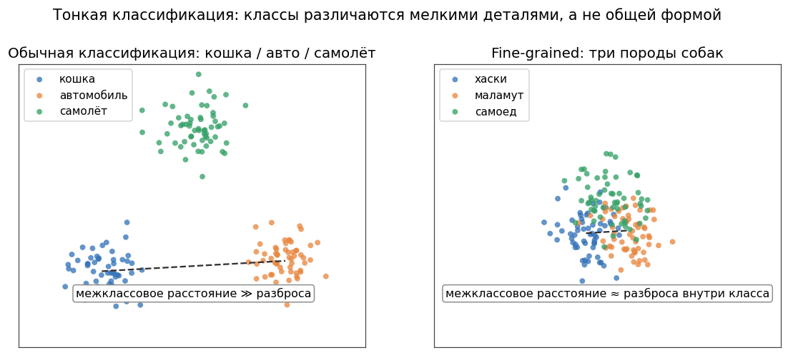
Две панели с двумерными облаками точек в пространстве эмбеддингов, оси без делений. Слева обычная классификация: три плотных, далеко разнесённых кластера — синий кошка, оранжевый автомобиль, зелёный самолёт; чёрная пунктирная линия между центрами синего и оранжевого кластеров заметно длиннее диаметра любого из них, подпись гласит межклассовое расстояние много больше разброса. Справа fine-grained: те же цвета обозначают три породы собак — хаски, маламут, самоед — но кластеры сильно перекрываются и образуют одно общее облако, а подпись под пунктирной линией между центрами гласит, что межклассовое расстояние примерно равно разбросу внутри класса. Обе панели построены в одинаковом масштабе осей, поэтому сравнение расстояний корректно. Что работает в тонкой классификации
1. Высокое разрешение входа. Простейший и самый надёжный рычаг. Переход с $224$ на $384$ пикселя на fine-grained-датасетах типично даёт $+3$–$6$ пунктов accuracy — больше, чем замена ResNet-50 на существенно более тяжёлую сеть при том же разрешении. Цена — квадратичный рост вычислений и уменьшение batch size.
2. Механизмы внимания внутри backbone. Сети, которые умеют перевзвешивать признаки, лучше находят различающую деталь:
- SE-блок взвешивает каналы: усиливает те карты признаков, которые для данной картинки информативны;
- CBAM добавляет к канальному вниманию пространственное: явно отвечает на вопрос «в каком месте картинки смотреть».
На fine-grained такие блоки дают заметный прирост, потому что задача в буквальном смысле состоит в том, чтобы найти небольшую область и посмотреть на неё внимательнее.
3. Двухшаговая схема localize-then-classify. Сначала находится информативная область (детектором, картой внимания или простым эвристическим кропом по активациям), потом она увеличивается и классифицируется отдельной головой. Это старая, но по-прежнему рабочая идея: она вручную делает то, чего мы ждём от внимания.
В тонкой классификации аугментации нужно подбирать осторожнее, чем обычно, — они легко уничтожают ту самую деталь, по которой различаются классы.
Помогают: случайные кропы с большим
scale, лёгкие цветовые сдвиги, RandAugment с умеренной силой, Mixup и CutMix (усредняют не только картинки, но и метки, что борется с переуверенностью).Вредят: агрессивные
CutoutиRandomErasing, которые с заметной вероятностью закрывают именно различающую область; сильные цветовые искажения там, где цвет и есть признак класса (окрас породы, цвет полоски на крыле); низкое разрешение при ресайзе.Общий разбор приёмов — в аугментации данных.
Длинный хвост
Длинный хвост — распределение классов, при котором несколько классов встречаются на порядки чаще остальных. В реальных данных это правило, а не исключение: породы собак в фотобанке, виды дефектов на конвейере, товары в каталоге — всё распределено по степенному закону.
Формально дисбаланс описывают imbalance factor — отношением размера самого частого класса к самому редкому. В академических бенчмарках вроде ImageNet-LT он равен $256$, в реальных промышленных данных легко доходит до $10^4$.
Эффект: обученная кросс-энтропией сеть тратит почти всю ёмкость на голову распределения. Accuracy при этом выглядит прилично — просто потому, что тестовая выборка тоже перекошена и почти целиком состоит из частых классов.
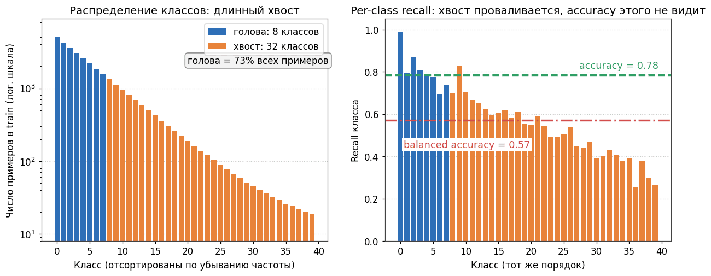
Две панели. Слева распределение классов: 40 столбцов, по горизонтали классы, отсортированные по убыванию частоты, по вертикали число примеров в train в логарифмической шкале от 10 до 9000. Первые восемь столбцов синие — это голова, дающая 73 процента всех примеров, остальные 32 оранжевые — хвост; частота падает от 5000 примеров до 20. Справа recall каждого класса при том же порядке классов и той же раскраске, вертикальная ось линейная от 0 до 1: у головы recall 0.7–1.0, у хвоста он сползает к 0.3 и ниже. Зелёная пунктирная горизонталь на уровне 0.78 — обычная accuracy, взвешенная частотами классов; красная штрихпунктирная горизонталь на уровне 0.57 — balanced accuracy, то есть простое среднее по классам. Разрыв в 21 пункт между двумя линиями и есть то, что accuracy скрывает. Возьмём датасет из примера выше: 8 частых классов дают 73 % всех примеров. Модель отлично работает на них и плохо — на 32 редких.
- accuracy $= 0.78$. Выглядит как рабочая модель.
- balanced accuracy (среднее recall по классам, каждый класс с весом $1/K$) $= 0.57$. Выглядит как модель, которая половину классов не различает.
Оба числа посчитаны по одним и тем же предсказаниям. Разница в $21$ пункт — это ровно та информация, которую accuracy прячет.
Что смотреть вместо accuracy:
- per-class recall — таблица или график по всем классам, а не одно число;
- balanced accuracy — макро-среднее recall;
- macro-$F_1$ — макро-среднее $F_1$, если важны и ложные срабатывания;
- разрезы head / medium / tail — три числа по группам классов (например, $> 100$, $20$–$100$, $< 20$ примеров). Именно так отчитываются в статьях про long-tailed recognition.
Методы борьбы с дисбалансом
Самый прямой подход — менять частоту, с которой классы попадают в батч.
- Over-sampling редких: повторять их примеры чаще. Риск — переобучение на конкретные несколько картинок хвоста.
- Under-sampling частых: выбрасывать часть данных головы. Риск — потерять полезное разнообразие.
- Class-balanced sampling: вероятность выбрать класс $c$ берут пропорциональной $n_c^{q}$, где $n_c$ — размер класса. При $q = 1$ это обычное равномерное по объектам сэмплирование (instance-balanced), при $q = 0$ — строго равномерное по классам (class-balanced). Промежуточное $q = 0.5$ (square-root sampling) обычно работает лучше обеих крайностей.
- Двухстадийная схема (decoupling): сначала обучить всю сеть на естественном распределении, затем заморозить backbone и переобучить только классификационную голову на сбалансированном сэмплировании. Простая и на удивление сильная схема: признаки лучше учатся на несбалансированных данных, а классификатор — на сбалансированных.
Второй подход — оставить сэмплирование как есть, но дать редким классам больший вес в лоссе.
Class-balanced loss. Наивный вес $1/n_c$ переоценивает совсем редкие классы. Идея эффективного числа примеров: близкие примеры одного класса частично дублируют друг друга, поэтому реальный вклад класса растёт медленнее, чем $n_c$:
$$E_{n_c} = \frac{1 - \beta^{n_c}}{1 - \beta}, \qquad w_c \propto \frac{1}{E_{n_c}}$$
где $\beta \in [0, 1)$ — гиперпараметр (типично $0.99$ или $0.999$). При $\beta \to 0$ веса равны, при $\beta \to 1$ они стремятся к $1/n_c$.
LDAM (Label-Distribution-Aware Margin). Вместо весов вводится отступ, зависящий от размера класса: редкому классу требуется большее превосходство логита, чтобы ответ засчитался:
$$L = -\log \frac{e^{z_y - \Delta_y}}{e^{z_y - \Delta_y} + \sum_{j \neq y} e^{z_j}}, \qquad \Delta_c = \frac{C}{n_c^{1/4}}$$
Смысл: у редкого класса мало примеров, поэтому его граница решения плохо оценена и склонна съезжать. Принудительный отступ отодвигает границу от редкого класса и делает её устойчивее. Обычно LDAM комбинируют с отложенным перевзвешиванием (deferred re-weighting): первые эпохи учатся без весов, последние — со взвешенным лоссом.
Focal loss тоже иногда помогает, но он борется не с редкостью класса, а с лёгкостью примера — это разные вещи, и на длинном хвосте он слабее специализированных методов.
В табличных задачах стандартный ответ на дисбаланс — SMOTE: синтезировать новые объекты редкого класса как выпуклые комбинации соседей в признаковом пространстве.
В пикселях это не работает. Линейная комбинация двух фотографий собаки — не фотография собаки, а полупрозрачное наложение двух картинок. Пространство изображений не выпукло относительно семантики.
Что работает вместо этого:
- SMOTE в пространстве эмбеддингов, а не пикселей: интерполировать признаки предпоследнего слоя и обучать на них только классификационную голову — это осмысленно;
- Mixup и CutMix — по форме похожи на интерполяцию, но метки смешиваются в тех же пропорциях, что и картинки, и это работает как регуляризация, а не как порождение новых объектов класса;
- генеративная аугментация — дорисовывать примеры редких классов диффузионной моделью. Работает, но требует осторожности: сеть быстро начинает учить артефакты генератора.
- Розница и маркетплейсы. Распознать конкретный SKU: две упаковки одного бренда различаются надписью на этикетке. Классов десятки тысяч, распределение продаж — жёсткий длинный хвост.
- Производство. Классифицировать тип дефекта. Царапина, скол и потёртость на общем плане почти неразличимы; редкие типы дефектов встречаются раз в тысячу деталей.
- Медицина. Различить подтипы патологии на гистологии или рентгене: различие — в текстуре области размером в сотню пикселей, а редкие нозологии по определению редки.
- Биология и экология. Определение вида по фотографии (iNaturalist) — эталонный пример: 10 000 классов и естественный степенной хвост.
- Автомобильная аналитика. Марка и модель по фотографии для платных парковок и страховых компаний.
- Мерить качество одной accuracy. На длинном хвосте она описывает поведение на нескольких частых классах и молчит про остальные. Минимум — balanced accuracy и per-class recall.
- Резать разрешение ради скорости. В тонкой классификации различающая деталь занимает десятки пикселей: ресайз до $224$ может просто удалить признак класса.
- Применять SMOTE к пикселям. Смесь двух изображений не принадлежит ни одному классу. Интерполировать имеет смысл эмбеддинги, а не картинки.
- Агрессивный Cutout и RandomErasing. С заметной вероятностью стирают именно ту область, по которой различаются классы.
- Балансировать сэмплирование с самого начала обучения. Признаки лучше учатся на естественном распределении; балансировать разумнее на втором этапе, переобучая только голову.
- Считать дисбаланс и тонкость одной проблемой. Это две независимые сложности: датасет может быть fine-grained и сбалансированным (CUB-200) или грубым и перекошенным. Лечатся они разными средствами.
- Оценивать модель на такой же перекошенной валидации. Если и train, и val перекошены одинаково, метрика не увидит провала на хвосте. Полезно иметь отдельный сбалансированный тестовый набор.
Что такое тонкая классификация и чем она отличается от обычной?
Формально это та же задача: одна картинка на входе, один класс из $K$ на выходе. Отличие в структуре классов: все они принадлежат одной общей категории — породы собак, виды птиц, модели автомобилей, типы дефектов — и различаются мелкими локальными деталями, а не глобальным силуэтом. Отсюда два следствия: межклассовое расстояние в пространстве признаков сравнимо с внутриклассовым разбросом, и разрешение входа становится гиперпараметром первой важности, потому что различающая деталь может занимать десяток пикселей.
Какие приёмы работают в тонкой классификации?
Во-первых, высокое разрешение входа: переход с 224 на 384 пикселя типично даёт больше, чем замена архитектуры на более тяжёлую при том же разрешении. Во-вторых, механизмы внимания внутри backbone — SE-блок перевзвешивает каналы, CBAM добавляет к этому пространственное внимание, то есть явно отвечает на вопрос, в каком месте картинки смотреть. В-третьих, двухшаговая схема localize-then-classify: сначала найти информативную область, потом увеличить её и классифицировать отдельно. Аугментации подбирают осторожно: Cutout и сильные цветовые искажения могут уничтожить сам признак класса.
Что такое длинный хвост и почему accuracy на нём вводит в заблуждение?
Длинный хвост — распределение, где несколько классов встречаются на порядки чаще остальных; отношение размеров самого частого и самого редкого класса в реальных данных доходит до $10^4$. Accuracy взвешивает классы их частотой, поэтому определяется почти целиком головой распределения: в типичном примере accuracy 0.78 при balanced accuracy 0.57, то есть разрыв в 21 пункт полностью скрыт. Смотреть надо per-class recall, balanced accuracy, macro-$F_1$ и разрезы head / medium / tail.
Какие есть методы борьбы с дисбалансом классов?
Первая группа — ресэмплинг: over-sampling редких, under-sampling частых, class-balanced sampling с вероятностью класса, пропорциональной $n_c^{q}$, где $q = 1$ даёт обычное равномерное по объектам сэмплирование, $q = 0$ — строго равномерное по классам, а $q = 0.5$ — промежуточный square-root вариант, обычно лучший; и двухстадийная схема decoupling, где backbone учится на естественном распределении, а затем замораживается и переобучается только голова на сбалансированном сэмплировании. Вторая группа — перевзвешивание лосса: class-balanced loss с весами, обратными эффективному числу примеров $E_{n_c} = (1 - \beta^{n_c})/(1 - \beta)$, и LDAM с зависящим от размера класса отступом $\Delta_c = C / n_c^{1/4}$, который отодвигает границу решения от редкого класса.
Почему SMOTE плохо переносится на изображения и что использовать вместо него?
SMOTE строит новые объекты как выпуклые комбинации соседей. В пространстве пикселей выпуклая комбинация двух фотографий — это полупрозрачное наложение, а не новое изображение класса: пространство картинок не выпукло относительно семантики. Осмысленные замены: интерполяция в пространстве эмбеддингов с дообучением только классификационной головы; Mixup и CutMix, где вместе с картинками в тех же пропорциях смешиваются и метки, что работает как регуляризация; генеративная дорисовка примеров редких классов диффузионной моделью, с осторожностью из-за риска выучить артефакты генератора.
Где тонкая классификация и длинный хвост встречаются на практике?
В рознице — распознавание конкретного SKU, где упаковки одного бренда различаются только надписью, а продажи распределены степенным законом. На производстве — классификация типа дефекта, где царапина, скол и потёртость почти неразличимы, а редкие типы встречаются раз в тысячу деталей. В медицине — подтипы патологии, различающиеся текстурой небольшой области. В биологии — определение вида по фотографии, где классов десять тысяч и хвост естественный. Важно помнить, что тонкость и дисбаланс — две независимые проблемы и лечатся разными средствами.
-
Регрессия по изображению: когда ответ — число
Регрессия по изображению — задача, где по картинке $x \in \mathbb{R}^{H \times W \times 3}$ требуется предсказать вещественное число $\hat{y} \in \mathbb{R}$ (реже — небольшой вектор чисел).
Архитектурно от классификации это отличается ровно одной строкой: последний линейный слой выдаёт не $K$ логитов, а один выход, и никакой softmax к нему не применяется.
Если совсем простыми словами: модель отвечает не «что это?», а «сколько?». И вот из этого «сколько» вытекают совсем другие лоссы, другие метрики и другой набор ловушек.
Разница не в архитектуре, а в структуре пространства ответов.
У классификации ответы дискретны и неупорядочены: спутать кошку с собакой ровно настолько же плохо, насколько спутать кошку с самолётом. Метрика — доля попаданий.
У регрессии ответы упорядочены и между ними есть расстояние: ошибиться на 2 года лучше, чем на 20. Метрика измеряет величину промаха, а не факт промаха.
Отсюда практический вывод: если у ваших категорий есть естественный порядок (стадии заболевания, баллы качества, размеры), классификация выбрасывает эту информацию.
- Возраст по фотографии лица. Классика жанра, датасеты IMDB-WIKI и UTKFace. Разметка шумная: реальный возраст в подписи к фото часто указан с ошибкой в несколько лет.
- Оценка качества снимка. Резкость, шум, экспозиция — одно число от 0 до 1. Применяется в камерах смартфонов для выбора лучшего кадра из серии и в системах приёма документов.
- Угол поворота документа. Скан лежит криво, надо предсказать $\theta \in [-180^\circ, 180^\circ)$, чтобы развернуть перед OCR.
- Дистанция до объекта по одной камере — например, в системах помощи водителю.
- Оценка массы или объёма. Вес животного по фотографии в загоне, калорийность порции еды по снимку тарелки.
Функции потерь
Обозначим ошибку на одном объекте $e = \hat{y} - y$, где $\hat{y}$ — предсказание модели, $y$ — истинное значение.
$$\text{MSE} = \frac{1}{n}\sum_{i=1}^{n} e_i^2, \qquad \text{MAE} = \frac{1}{n}\sum_{i=1}^{n} |e_i|$$
То есть MSE усредняет квадраты ошибок, MAE — их модули. Квадрат растёт быстрее модуля, поэтому MSE непропорционально сильно наказывает за крупные промахи.
Статистический смысл: минимум MSE достигается на условном среднем целевой величины, минимум MAE — на условной медиане. Это и есть корень всех практических различий между ними. Подробнее — в Функции потерь регрессии.
$$L_\delta(e) = \begin{cases} \tfrac{1}{2} e^2, & |e| \leq \delta \\[4pt] \delta \left(|e| - \tfrac{1}{2}\delta\right), & |e| > \delta \end{cases}$$
Здесь $\delta$ — порог, отделяющий «нормальные» ошибки от «выбросов». Внутри зоны $|e| \leq \delta$ лосс ведёт себя как MSE (гладкий, с градиентом, убывающим у минимума), снаружи — как MAE (линейный, с ограниченным градиентом).
Обе ветви подобраны так, чтобы функция и её производная были непрерывны в точке $|e| = \delta$ — без этого оптимизация дёргалась бы на границе.
Smooth L1 из детекции — тот же Huber при $\delta = 1$, отмасштабированный; см. Лоссы детекции.
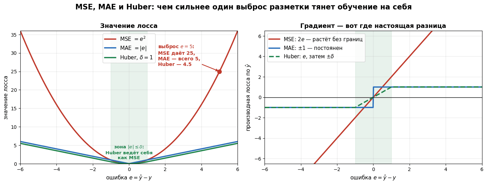
Слева значение лосса как функция ошибки $e = \hat{y} - y$: красная парабола MSE, синяя галочка MAE, зелёная кривая Huber при $\delta = 1$, которая идёт чуть ниже синей и в светло-зелёной полосе $|e| \leq \delta$ совпадает по форме с параболой. В точке $e = 5$ красная точка: MSE даёт 25, MAE — 5, Huber — 4.5. Справа производные тех же лоссов: красная прямая $2e$ растёт без границ и уходит за пределы графика, синяя ступенька MAE постоянна и равна $\pm 1$, зелёный пунктир Huber внутри полосы тоже линеен, но идёт вдвое положе красной прямой (производная $e$ против $2e$), а снаружи упирается в горизонтальные полки $\pm \delta$. Именно правая панель объясняет разницу: ограничен ли вклад одного выброса в градиент. Возьмём батч из 32 фотографий для оценки возраста. На 31 из них модель ошибается на 3 года, на одной разметка просто неверна (в подписи 20, на фото человеку 60), и модель ошибается на 40 лет.
Вклад в MSE: $31 \cdot 3^2 = 279$ против $1 \cdot 40^2 = 1600$. Одна ошибочно размеченная картинка даёт в шесть раз больше лосса, чем весь остальной батч.
Градиент MSE равен $2e$, то есть у выброса он в 13 раз больше, чем у обычного примера. Шаг оптимизатора на этом батче почти целиком определяется мусорной меткой.
С MAE вклад того же выброса — $40$ против $93$, а градиент вообще ограничен единицей. Поэтому на шумной разметке берут MAE или Huber, а MSE оставляют для задач с чистыми метками и физически осмысленным штрафом за большие ошибки.
Обратная сторона: иногда крупная ошибка действительно катастрофична, и её и надо наказывать квадратично.
Пример: оценка дистанции до препятствия в системе помощи водителю. Ошибка на полметра безобидна, ошибка на десять метров — авария. Здесь квадратичный штраф отражает реальную цену ошибки, и MSE уместна.
Правило: выбирайте лосс по функции цены ошибки в вашем домене, а не по привычке.
Метрики
Метрики регрессии в целом разобраны в Метрики регрессии; здесь — что именно из них смотрят в CV.
- MAE — средняя абсолютная ошибка. Измеряется в тех же единицах, что и целевая величина: «модель ошибается в среднем на 4.2 года». Самая интерпретируемая метрика, её и показывают заказчику.
- RMSE $= \sqrt{\text{MSE}}$ — тоже в единицах цели, но чувствительна к хвостам. Всегда $\text{RMSE} \geq \text{MAE}$, и разрыв между ними — индикатор наличия выбросов.
- $R^2 = 1 - \text{SS}_{\text{res}} / \text{SS}_{\text{tot}}$ — доля объяснённой дисперсии. $R^2 = 0$ означает «не лучше, чем всегда предсказывать среднее по выборке».
MAPE $= \frac{100\%}{n}\sum |e_i| / |y_i|$ выглядит удобно — ошибка в процентах, — но делится на истинное значение.
Если целевая величина может быть близка к нулю, метрика становится бессмысленной. Оценка возраста младенца: истина 0.5 года, предсказание 1.5 года. Абсолютная ошибка — один год, вполне терпимо; MAPE для этого объекта — 200%, и он один перекошивает всю метрику по выборке.
Правило: MAPE применима только когда целевая величина заведомо отделена от нуля — вес животного, дистанция в метрах при минимуме в несколько метров.
Среднее прячет хвост. Две модели с одинаковым MAE могут вести себя совершенно по-разному: одна ошибается на 2 единицы всегда, вторая — на 1 единицу в 95% случаев и на 20 в оставшихся 5%.
Для продукта это разные модели. Поэтому вместе с MAE смотрят перцентили абсолютной ошибки: p50 (медиана), p90, p95, p99. Продуктовое требование часто формулируется именно так: «в 95% случаев ошибка не превышает 5 лет».
Подробный разбор приёма — в Перцентили ошибок.
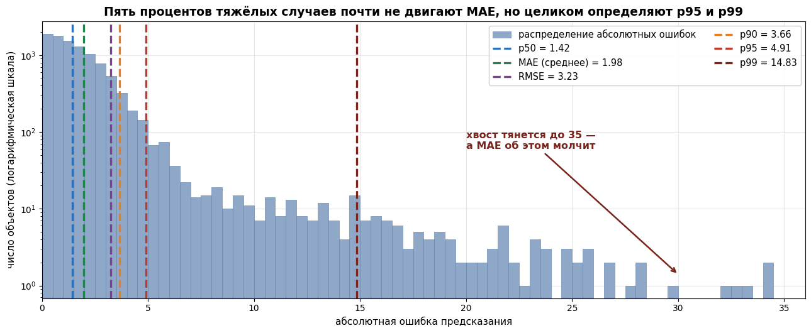
Гистограмма абсолютных ошибок на 10 000 объектов, вертикальная ось логарифмическая — без этого хвост был бы не виден вовсе. Вертикальными пунктирами отмечены (слева направо) синий p50 = 1.42, зелёный MAE = 1.98, фиолетовый RMSE = 3.23, оранжевый p90 = 3.66, красный p95 = 4.91 и тёмно-бордовый p99 = 14.83. Первые пять линий сгрудились левее пяти единиц, а хвост распределения тянется до 35: p99 отстоит от MAE в семь с половиной раз. Разрыв между RMSE 3.23 и MAE 1.98 — тот самый индикатор тяжёлого хвоста. Регрессия или классификация по корзинам
Неочевидный, но очень рабочий приём: решать регрессию как классификацию.
Диапазон целевой величины режется на корзины, модель обучается как обычный классификатор с softmax и CE, а численный ответ получается как математическое ожидание по предсказанному распределению:
$$\hat{y} = \sum_{i=1}^{K} c_i \, p_i$$
где $c_i$ — центр корзины $i$, а $p_i$ — предсказанная вероятность попасть в неё.
Канонический пример — DEX (Deep EXpectation, Rothe et al., 2015) для оценки возраста: 101 корзина по годам от 0 до 100, softmax по ним, ответ равен $\sum_i i \cdot p_i$. Этот подход выиграл соревнование ChaLearn LAP и с тех пор стал стандартом для возраста.
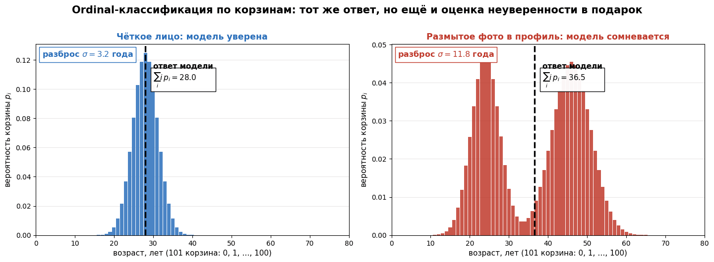
Два предсказанных распределения по 101 возрастной корзине. Слева синий случай — чёткое лицо: один узкий пик около 28 лет, разброс $\sigma = 3.2$ года, ответ $\sum_i i\,p_i = 28.0$ отмечен чёрным пунктиром и попадает в вершину пика. Справа красный случай — размытое фото в профиль: распределение бимодальное, с пиками около 24 и 46 лет, разброс $\sigma = 11.8$ года. Ответ $36.5$ формально тот же по способу вычисления, но чёрный пунктир падает во впадину между пиками — в возраст, который модель считает как раз маловероятным. Прямая регрессия выдала бы то же самое число 36.5 и никак не сообщила бы, что это компромисс, а не оценка. Три причины, и все практические.
- Мягкая цель обучения. MSE-регрессия обязана попасть точно в число, а классификатор лишь распределяет вероятность между соседними корзинами. Градиенты получаются устойчивее, а обучение — менее чувствительным к шуму разметки.
- Модель может выразить сомнение. Прямая регрессия физически способна выдать только одно число. Распределение по корзинам передаёт форму неуверенности — узкий пик, широкое плато или два конкурирующих варианта.
- Бесплатная оценка неопределённости. Разброс $\sigma = \sqrt{\sum_i (c_i - \hat{y})^2 p_i}$ считается из тех же вероятностей и служит готовым сигналом «эту картинку лучше отдать человеку».
Цена: появляется гиперпараметр — число корзин, и ответ ограничен диапазоном корзин.
Между чистой регрессией и жёсткой классификацией по корзинам есть удобная середина: обучать классификатор не на one-hot таргете, а на гауссовом распределении вокруг истинного значения.
Для истины 30 лет таргет выглядит как колокол с центром 30 и $\sigma \approx 2$ года, а лоссом служит KL-дивергенция или CE с мягкими метками. Так модель прямо узнаёт, что корзина 29 гораздо ближе к правде, чем корзина 50, — чего обычная CE по one-hot таргету не сообщает.
Ровно та же идея лежит в основе heatmap-регрессии для ключевых точек — см. Ключевые точки и поза.
Циклические величины: отдельная ловушка
Задача: предсказать угол поворота документа $\theta \in [0^\circ, 360^\circ)$. Истина $359^\circ$, предсказание $1^\circ$.
Реальная ошибка — 2 градуса, документ практически ровный. Но MSE видит $(359 - 1)^2 = 128\,164$ и обрушивает на модель гигантский градиент за фактически верный ответ.
Проблема в том, что у циклической величины $0$ и $360$ — одна и та же точка, а линейный выход этого не знает.
Стандартное решение — заменить один выход на два и учить модель предсказывать пару $(\sin\theta, \cos\theta)$:
- лосс — обычный MSE по двум числам, часто плюс мягкий штраф за отклонение $\sin^2 + \cos^2$ от единицы;
- восстановление угла — $\hat{\theta} = \operatorname{atan2}(\widehat{\sin\theta}, \widehat{\cos\theta})$.
Для пары $359^\circ$ и $1^\circ$ синусы и косинусы почти совпадают, поэтому лосс честно оказывается близким к нулю. Разрыв исчез.
Тот же приём применим ко всему циклическому: направление ветра, фаза, время суток, ориентация объекта.
- MSE на шумной разметке. Один неверно размеченный объект в батче может дать больше градиента, чем весь остальной батч. На возрасте, весе, оценках качества берите MAE или Huber.
- Отчитываться только средним. MAE прячет хвост. Всегда показывайте ещё p90/p95, а разрыв между RMSE и MAE читайте как индикатор выбросов.
- MAPE у величины, проходящей около нуля. Деление на истинное значение взрывает метрику. Для возраста младенцев или углов около нуля MAPE неприменима.
- Прямая регрессия угла или другой циклической величины. Разрыв на границе периода даёт огромный лосс за верный ответ; регрессируйте $(\sin\theta, \cos\theta)$.
- Не нормировать целевую величину. Если цель — вес в граммах от 500 до 8000, сырые значения дают огромный лосс и неустойчивые градиенты. Стандартизуйте цель при обучении и возвращайте в исходный масштаб на инференсе.
- Забывать про диапазон. Модель, регрессирующая возраст, спокойно выдаст $-3$ года. Если величина неотрицательна, ограничьте выход — например,
softplusили предсказанием логарифма.
Чем регрессия по изображению отличается от классификации, кроме последнего слоя?
Структурой пространства ответов. У классификации классы неупорядочены и любая ошибка одинаково плоха; у регрессии ответы упорядочены, между ними есть расстояние, и метрика измеряет величину промаха, а не факт промаха. Отсюда другие лоссы (MSE, MAE, Huber) и другие метрики (MAE, RMSE, $R^2$).
Почему MSE опасна на шумной разметке и что использовать вместо неё?
Потому что вклад ошибки растёт квадратично, а градиент линейно: при ошибке 40 против обычных 3 один выброс даёт в шесть раз больше лосса, чем весь остальной батч из 31 объекта. Минимум MSE — условное среднее, оно чувствительно к выбросам. Лучше MAE (минимум в медиане, ограниченный градиент) или Huber.
Как устроен Huber и зачем он нужен?
$L_\delta(e) = \tfrac12 e^2$ при $|e| \leq \delta$ и $\delta(|e| - \tfrac12 \delta)$ иначе. Внутри порога он ведёт себя как MSE (гладкий у минимума), снаружи — как MAE (ограниченный градиент). Обе ветви согласованы так, что функция и производная непрерывны в точке $\delta$.
Почему кроме MAE смотрят перцентили ошибок?
Потому что среднее прячет хвост: две модели с одинаковым MAE могут ошибаться совершенно по-разному. p90 и p95 показывают, что происходит в худших случаях, а разрыв между RMSE и MAE служит индикатором выбросов. Продуктовые требования обычно формулируются именно в перцентилях.
В чём идея подхода DEX и чем он лучше прямой регрессии?
Диапазон режется на корзины (для возраста — 101 корзина по годам), модель обучается как классификатор с softmax и CE, а ответ вычисляется как ожидание $\sum_i i \cdot p_i$. Это даёт более мягкую цель обучения, позволяет модели выразить сомнение формой распределения и бесплатно даёт оценку неопределённости через разброс распределения.
Как правильно регрессировать угол и почему нельзя напрямую?
Нельзя, потому что у циклической величины $0^\circ$ и $360^\circ$ — одна точка: при истине $359^\circ$ и предсказании $1^\circ$ реальная ошибка два градуса, а MSE видит $358^2$. Правильно предсказывать пару $(\sin\theta, \cos\theta)$ с обычным MSE и восстанавливать угол через $\operatorname{atan2}$.
-
Метрическое обучение: верификация, поиск, re-ID
Метрическое обучение (metric learning, representation learning) — задача, в которой модель учится отображать изображение в вектор фиксированной длины так, чтобы расстояние между векторами отражало смысловую похожесть объектов:
$$f_\theta: \mathbb{R}^{H \times W \times 3} \to \mathbb{R}^d, \qquad d(f(x_1),\, f(x_2)) \ \text{мало} \iff x_1 \text{ и } x_2 \text{ — один объект}$$
Выход — не класс и не число, а эмбеддинг: вектор размерности $d$ (типично $128$, $256$ или $512$). Общее понятие эмбеддинга разобрано отдельно.
Вопрос, на который отвечает модель, — не «какой это класс», а «насколько эти две картинки похожи».
Классификация — closed-set задача: множество классов фиксировано при обучении, у сети есть выходной слой ровно на $K$ нейронов, и на инференсе она может выдать только один из этих $K$ ответов. Появился новый класс — нужен новый слой и переобучение.
Метрическое обучение — open-set: классы на инференсе не видели при обучении вообще.
Разберём на системе контроля доступа. Классификатор пришлось бы переобучать при каждом новом сотруднике: 500 сотрудников — 500 выходных нейронов, пришёл 501-й — переобучаем. Метрическая модель обучается один раз на большом корпусе лиц, а нового сотрудника достаточно сфотографировать один раз: его эмбеддинг кладётся в базу, и дальше сравнение идёт по расстоянию. Веса сети не трогаются никогда.
Это и есть главный ответ на вопрос «зачем не классификация»: число классов не ограничено, добавление класса стоит одну фотографию.
- Вход при обучении — не отдельная картинка, а пара, тройка или батч с известными метками идентичности. Именно структура батча несёт обучающий сигнал.
- Выход — вектор $z \in \mathbb{R}^d$, почти всегда $L_2$-нормированный: $\|z\| = 1$. После нормировки скалярное произведение равно косинусу угла, а евклидово расстояние монотонно с ним связано: $\|z_1 - z_2\|^2 = 2 - 2\cos\theta$. Поэтому «косинусная близость» и «евклидово расстояние на сфере» — одно и то же с точностью до монотонного преобразования.
- Вход при инференсе — одна картинка. Выход — её эмбеддинг, который дальше сравнивается с базой.
Лоссы
Самый ранний лосс. На вход подаётся пара $(x_1, x_2)$ и метка $y$: $1$ — тот же объект, $0$ — разные. Обозначим $d = \|f(x_1) - f(x_2)\|$:
$$L = y \cdot d^2 + (1 - y)\cdot \max(0,\ m - d)^2$$
Смысл по слагаемым:
- положительная пара ($y = 1$): штраф $d^2$ тянет векторы друг к другу, оптимум — совпадение;
- отрицательная пара ($y = 0$): штраф $\max(0, m - d)^2$ отталкивает векторы, но только пока $d < m$. Как только расстояние превысило отступ $m$, штраф равен нулю и градиента нет.
Отступ $m$ обязателен: без него сеть могла бы бесконечно раздвигать негативы, вместо того чтобы работать над трудными случаями.
Проблема contrastive loss в том, что он задаёт абсолютные требования к расстояниям, а нам нужны относительные: неважно, чему равно $d(A,P)$, важно, чтобы оно было меньше $d(A,N)$.
Triplet loss берёт тройку: якорь $A$, позитив $P$ (тот же объект) и негатив $N$ (другой объект):
$$L = \max\bigl(0,\ d(A, P) - d(A, N) + \alpha\bigr)$$
Требование: негатив должен быть дальше позитива как минимум на отступ $\alpha$. Если это уже выполнено, лосс равен нулю и тройка не даёт градиента.
В батче из $N$ объектов число возможных троек порядка $N^3$. Если брать их случайно, подавляющее большинство окажется лёгкими: негатив и так далеко, лосс равен нулю, градиента нет. Обучение встаёт: батчи большие, а сигнал почти нулевой.
Поэтому тройки отбирают:
- hard negative — ближайший негатив в батче, $\arg\min_N d(A,N)$. Даёт самый сильный градиент, но провоцирует коллапс: если разметка шумная, «самый близкий негатив» часто оказывается на самом деле позитивом с ошибочной меткой, и сеть схлопывает все эмбеддинги в точку;
- semi-hard negative — негатив, который дальше позитива, но ближе, чем на отступ: $d(A,P) < d(A,N) < d(A,P) + \alpha$. Это компромисс, предложенный в FaceNet, и на практике он самый устойчивый;
- batch-hard — в батче, собранном как $P$ личностей по $K$ фотографий, для каждого якоря берётся самый дальний позитив и самый близкий негатив внутри батча. Стандартная схема в person re-ID.
Формирование батча здесь — часть метода, а не техническая деталь. Обычный случайный батч для triplet loss не годится.
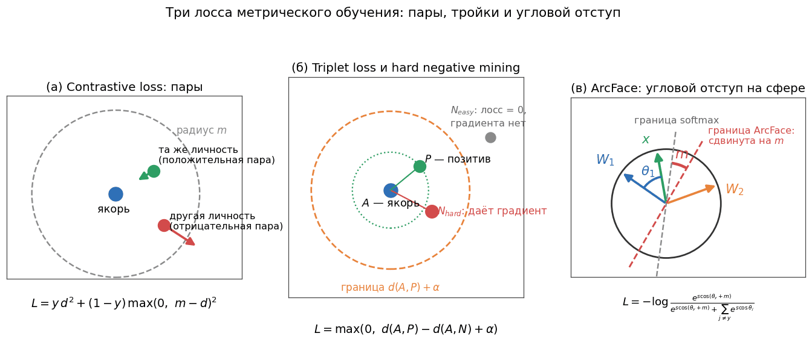
Три схемы в пространстве эмбеддингов. Слева contrastive loss: синяя точка-якорь в центре, вокруг серая пунктирная окружность радиуса m; зелёная точка положительной пары с зелёной стрелкой, направленной к якорю, и красная точка отрицательной пары с красной стрелкой, направленной от якоря наружу; внизу формула L = y d^2 + (1-y) max(0, m-d)^2. В центре triplet loss: синий якорь A, зелёная точка P на зелёной пунктирной окружности радиуса d(A,P), оранжевая штриховая окружность большего радиуса — граница d(A,P) + alpha; красная точка N_hard лежит внутри этой границы и даёт градиент, серая точка N_easy лежит снаружи и даёт нулевой лосс; внизу формула L = max(0, d(A,P) - d(A,N) + alpha). Справа ArcFace: чёрная единичная окружность, синий вектор W1 и оранжевый W2 — веса двух классов, зелёный вектор x — эмбеддинг; синяя дуга theta1 показывает угол между x и W1, красная дуга m — угловой отступ между серой штриховой границей softmax и красной штриховой границей ArcFace, сдвинутой в сторону класса; внизу формула ArcFace с cos(theta_y + m). Triplet loss требует хитрого сэмплирования и сходится медленно. Современный стандарт для лиц — лоссы с угловым отступом, которые выглядят как обычный softmax, но работают как метрическое обучение.
Идея в три шага:
- Нормировать и эмбеддинг $z$, и столбцы весов классификатора $W_j$: $\|z\| = 1$, $\|W_j\| = 1$. Тогда логит $W_j^{\top} z = \cos\theta_j$ — просто косинус угла между эмбеддингом и «центром класса».
- Убрать смещение $b$ и умножить логиты на масштаб $s$ (типично $s = 32$ или $64$), иначе косинусы в диапазоне $[-1, 1]$ дают слишком пологий softmax.
- Добавить отступ к углу истинного класса.
ArcFace (additive angular margin) добавляет отступ к самому углу:
$$L = -\log \frac{e^{s\cos(\theta_y + m)}}{e^{s\cos(\theta_y + m)} + \sum_{j \neq y} e^{s\cos\theta_j}}, \qquad m \approx 0.5\ \text{рад}$$
CosFace (additive cosine margin) вычитает отступ из косинуса: $\cos\theta_y - m$, типично $m \approx 0.35$.
Смысл одинаков: сеть обязана не просто угадать класс, а угадать его с запасом. Граница решения отодвигается, между классами появляется зазор, и эмбеддинги становятся пригодными для сравнения по косинусу с объектами, которых в обучении не было.
Почему это удобнее triplet loss: обучение идёт как обычная классификация по всему обучающему множеству личностей, никакого сэмплирования троек не нужно, сходимость быстрая и стабильная. После обучения классификационная голова выбрасывается, а используется только backbone, выдающий эмбеддинг.
Метрики
Метрическую модель нельзя оценивать accuracy: у неё нет фиксированных классов. Стандартный набор:
Recall@K — доля запросов, для которых хотя бы один правильный ответ попал в топ-$K$ выдачи по расстоянию. Основная метрика image retrieval. Монотонно растёт с $K$ по определению.
mAP@K — усреднённая по запросам средняя точность в топ-$K$. В отличие от Recall@K учитывает все релевантные объекты и их порядок, поэтому строже. Общая механика такая же, как в метриках рекомендаций.
CMC-кривая и Rank-$k$ — стандарт person re-ID и распознавания лиц по галерее. CMC (Cumulative Match Characteristic) в точке $k$ — доля запросов, у которых правильный ответ оказался не ниже ранга $k$. Rank-1 — первое значение кривой, самое цитируемое число.
TAR@FAR — стандарт верификации «один к одному» (это тот же человек или нет). Фиксируется допустимая доля ложных принятий FAR (False Accept Rate) и измеряется доля верных принятий TAR при этом пороге. Пишут в виде
TAR@FAR=1e-6. Причина такой формы: в системе доступа цена ложного пропуска несопоставима с ценой ложного отказа, поэтому качество меряют при экстремально малом FAR.ROC на парах — обобщение TAR@FAR: строится по всем парам «тот же / другой» с косинусом в роли score. Даёт AUC и весь график целиком.
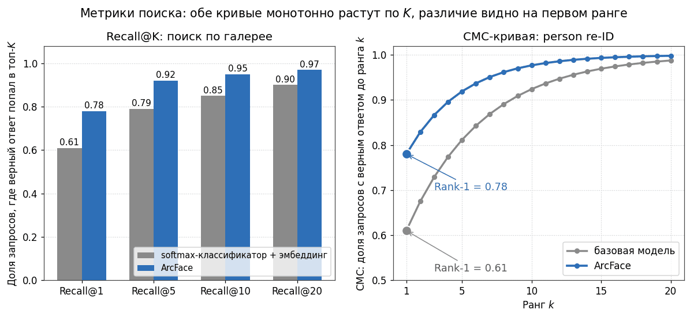
Две панели с линейными вертикальными осями. Слева столбчатая диаграмма Recall@K для K = 1, 5, 10, 20: серые столбцы — базовая модель с softmax-классификатором, синие — ArcFace; значения подписаны над столбцами и составляют 0.61 против 0.78 при K = 1, 0.79 против 0.92 при K = 5, 0.85 против 0.95 при K = 10, 0.90 против 0.97 при K = 20. Справа CMC-кривая для person re-ID: по горизонтали ранг k от 1 до 20, по вертикали доля запросов с верным ответом до этого ранга, вертикальная ось обрезана снизу на 0.5. Серая кривая базовой модели стартует с Rank-1 = 0.61, синяя кривая ArcFace — с Rank-1 = 0.78, обе монотонно растут и к рангу 20 подходят к 0.99. Первая точка CMC-кривой численно совпадает с Recall@1 — это одна и та же величина. Чтобы понимать порядок величин:
- Распознавание лиц, LFW (простой академический бенчмарк): accuracy верификации $> 0.995$ у любой современной модели — бенчмарк давно насыщен.
- Распознавание лиц, IJB-C (сложный бенчмарк):
TAR@FAR=1e-6порядка $0.85$–$0.93$ у сильных моделей. Именно это число что-то значит, а не accuracy на LFW. - Person re-ID, Market-1501: Rank-1 около $0.95$, mAP около $0.88$ у современных моделей. Разрыв между Rank-1 и mAP нормален: найти хоть один правильный кадр проще, чем поднять наверх все.
- Image retrieval, Stanford Online Products: Recall@1 порядка $0.80$–$0.85$.
Обратите внимание: у person re-ID mAP всегда заметно ниже Rank-1, и это не признак поломки, а свойство метрики.
- Распознавание лиц и СКУД. Один снимок при оформлении пропуска — и сотрудник в системе. Порог подбирается по требуемому FAR: для проходной на завод и для разблокировки телефона он разный на несколько порядков.
- Поиск товара по фото. Пользователь фотографирует вещь, система ищет ближайшие эмбеддинги в каталоге из миллионов позиций. Ровно та же схема, что в эмбеддингах рекомендательных систем: вектор + приближённый поиск ближайших соседей (HNSW, IVF-PQ).
- Дедупликация фотобанка. Найти все копии и почти-копии изображения: пороговое расстояние вместо обучения классификатора «дубликат / не дубликат».
- Person re-ID между камерами. Один и тот же человек прошёл мимо камеры на входе и мимо камеры в зале — связать треки. Классификация невозможна в принципе: «классов» столько, сколько посетителей, и они меняются каждый день.
- Верификация подписи, документов, деталей. Всюду, где вопрос звучит как «это тот же объект?», а не «какой это объект?».
Практическая схема выглядит так:
- Офлайн: прогнать всю базу через сеть, получить $N$ векторов, построить индекс приближённого поиска (FAISS, HNSW, ScaNN).
- Онлайн: прогнать запрос через сеть (один forward), найти $k$ ближайших соседей в индексе, применить порог расстояния.
- Добавление нового объекта: один forward и вставка вектора в индекс. Переобучения нет.
Стоимость масштабирования базы — почти нулевая для модели и логарифмическая для индекса. Именно поэтому метрическое обучение выигрывает в задачах, где множество объектов постоянно меняется.
- Решать open-set задачу классификатором. Каждый новый человек, товар или деталь требует переобучения. Метрическая модель обучается один раз, а объект добавляется одной фотографией.
- Забыть $L_2$-нормировку эмбеддингов. Без неё косинус и евклидово расстояние перестают быть согласованы, порог расстояния теряет смысл, а обучение с угловым отступом ломается.
- Брать тройки случайно. Подавляющее большинство случайных троек уже удовлетворяет отступу и даёт нулевой градиент; обучение стоит на месте.
- Брать только самые трудные негативы. При шумной разметке ближайший негатив часто оказывается позитивом с неверной меткой, и эмбеддинги схлопываются в точку. Semi-hard устойчивее.
- Мерить качество accuracy. У модели нет фиксированного набора классов. Нужны Recall@K, mAP@K, CMC / Rank-1 и TAR@FAR.
- Отчитываться accuracy на LFW. Бенчмарк насыщен: у всех $> 0.995$, число ничего не различает. Значимая метрика — TAR при малом FAR на сложном наборе.
- Подбирать порог расстояния на тех же данных, где меряете качество. Порог — параметр; он подбирается на валидации и проверяется на отложенном наборе.
- Не проверять галерею на дубликаты. Если в галерее лежат почти одинаковые снимки одного объекта, Recall@K завышается механически.
Что такое метрическое обучение и чем оно отличается от классификации?
Модель учится отображать картинку в вектор фиксированной длины так, чтобы расстояние между векторами отражало смысловую похожесть. Классификация — closed-set задача: множество классов фиксировано при обучении, выходной слой имеет ровно $K$ нейронов, новый класс требует переобучения. Метрическое обучение — open-set: классы на инференсе не видели при обучении вообще, добавление нового объекта стоит одну фотографию, вектор которой кладётся в базу, а веса сети не меняются. Вопрос модели — не «какой это класс», а «насколько эти две картинки похожи».
Как устроены contrastive и triplet loss и зачем в них отступ?
Contrastive работает с парами: $L = y\,d^2 + (1-y)\max(0, m-d)^2$ — положительная пара стягивается, отрицательная отталкивается, но только пока расстояние меньше отступа $m$. Triplet работает с тройками якорь-позитив-негатив: $L = \max(0, d(A,P) - d(A,N) + \alpha)$ — требуется, чтобы негатив был дальше позитива хотя бы на $\alpha$. Отступ нужен, чтобы лосс не тратил градиент на уже решённые случаи и сеть не раздвигала негативы бесконечно. Triplet задаёт относительное требование к расстояниям, что ближе к сути задачи, чем абсолютные требования contrastive.
Что такое hard negative mining и почему без него triplet loss не обучается?
В батче из $N$ объектов возможных троек порядка $N^3$, и почти все они лёгкие: негатив уже дальше позитива на отступ, лосс равен нулю, градиента нет. Поэтому тройки отбирают. Hard negative — ближайший негатив, даёт сильнейший градиент, но при шумной разметке провоцирует коллапс эмбеддингов в точку. Semi-hard — негатив дальше позитива, но ближе, чем на отступ, — компромисс из FaceNet, самый устойчивый на практике. Batch-hard формирует батч как $P$ личностей по $K$ снимков и берёт для каждого якоря самый дальний позитив и самый близкий негатив; это стандарт в person re-ID.
Как устроен ArcFace и чем он удобнее triplet loss?
Эмбеддинг и столбцы весов классификатора нормируются, смещение убирается, поэтому логит равен косинусу угла между эмбеддингом и центром класса; логиты умножаются на масштаб $s$ (32–64). К углу истинного класса добавляется отступ: $\cos(\theta_y + m)$ при $m \approx 0.5$ радиана у ArcFace, у CosFace отступ вычитается из косинуса, $\cos\theta_y - m$ при $m \approx 0.35$. Сеть обязана угадать класс с запасом, между классами появляется зазор. Обучение идёт как обычная классификация по всем личностям без сэмплирования троек, сходится быстро и стабильно; после обучения классификационная голова выбрасывается и используется только backbone.
Какими метриками оценивают метрическую модель?
Recall@K — доля запросов, где хотя бы один правильный ответ попал в топ-$K$; монотонно растёт с $K$. mAP@K учитывает все релевантные объекты и их порядок, поэтому строже. CMC-кривая и Rank-1 — стандарт person re-ID и поиска по галерее: доля запросов, у которых верный ответ не ниже ранга $k$; Rank-1 численно совпадает с Recall@1. TAR@FAR — стандарт верификации один-к-одному: доля верных принятий при фиксированной доле ложных, обычно при FAR порядка $10^{-6}$, потому что цена ложного пропуска несопоставима с ценой ложного отказа. Accuracy не применима: фиксированного набора классов нет.
В каких доменах применяют метрическое обучение и как выглядит инференс?
Распознавание лиц и СКУД, поиск товара по фотографии, дедупликация фотобанка, person re-ID между камерами, верификация подписей и документов — везде, где вопрос звучит как «это тот же объект», а множество объектов постоянно меняется. Инференс: офлайн прогнать базу через сеть и построить индекс приближённого поиска (FAISS, HNSW, ScaNN); онлайн сделать один forward для запроса, найти $k$ ближайших соседей и применить порог расстояния; добавление объекта — один forward и вставка вектора в индекс, без переобучения.
-
Детекция объектов: постановка и формат выхода
Детекция объектов (object detection) — задача, в которой по изображению нужно выдать множество переменной длины: для каждого найденного объекта — прямоугольную рамку (bounding box, «бокс»), метку класса и уверенность модели:
$$\hat{y} = \{(\mathbf{b}_i,\, c_i,\, s_i)\}_{i=1}^{N}, \qquad \mathbf{b}_i \in \mathbb{R}^4,\; c_i \in \{1,\dots,K\},\; s_i \in [0,1]$$
Здесь $\mathbf{b}_i$ — четыре числа, задающие рамку, $c_i$ — класс объекта, $s_i$ — score (уверенность), $K$ — число классов, а $N$ — число найденных объектов, которое заранее неизвестно.
Если совсем простыми словами: модель должна не просто сказать «на фото есть машины», а обвести каждую машину рамкой и сказать, насколько она в этом уверена.
Именно $N$ отличает детекцию от всех задач блоков 1–2. На одном кадре может быть 0 объектов, на другом 1, на третьем 300 (толпа, стая птиц, полка в магазине). Нейросеть же — это функция с фиксированной формой выхода: слой на 4 числа всегда выдаёт ровно 4 числа.
То есть нельзя просто «отрегрессировать 4 координаты»: даже если на картинке ровно один объект, такая модель развалится на кадре с двумя, а на пустом кадре выдумает бокс из ничего.
Вся конструкция детекторов — якоря, сетки ячеек, RPN, обучаемые queries в DETR, NMS в конце — это разные способы обойти одно и то же препятствие: сделать выход фиксированного размера, из которого потом вырезается множество произвольной длины. При этом backbone у детектора ровно тот же, что у классификатора, — отличается только голова. Как именно она устроена, разбирается в моделях детекции.
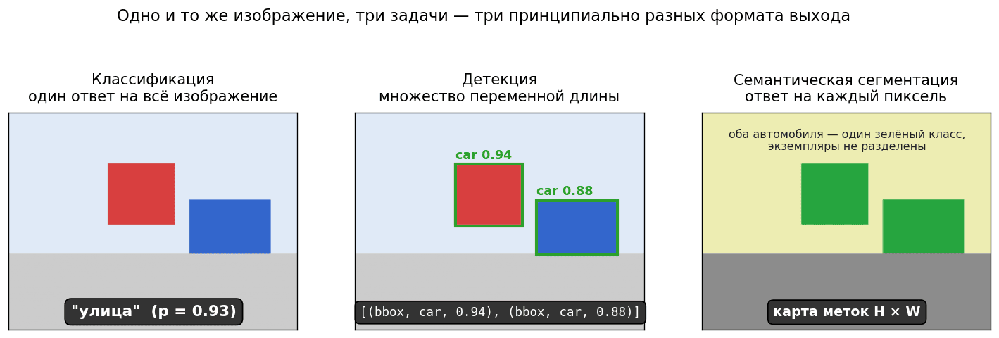
Одно синтетическое изображение (красный и синий прямоугольники — два автомобиля), три задачи, три формата выхода. Слева классификация: один ответ на весь кадр, метка улица с вероятностью 0.93. В центре детекция: два зелёных бокса с подписями car 0.94 и car 0.88, а формально — список из двух элементов вида (bbox, класс, score), длина которого меняется от кадра к кадру. Справа семантическая сегментация: карта меток размера H на W, где небо бледно-жёлтое, дорога серая, а оба автомобиля закрашены одним зелёным классом — экземпляры здесь не разделены, и посчитать по такой карте, что машин именно две, нельзя. Классификация отвечает на вопрос «что на картинке», один ответ на весь кадр. Детекция отвечает на «что и где», причём столько раз, сколько объектов нашлось.
Практическое следствие: у классификации ошибка бинарна (угадал класс или нет), а у детекции ошибка бывает четырёх сортов сразу — неверный класс, смещённая рамка, пропущенный объект, выдуманный объект. Поэтому и метрика нужна другая — см. mAP.
Сегментация даёт ответ на каждый пиксель. У семантической сегментации при этом нет понятия экземпляра: две слипшиеся машины дадут одно связное зелёное пятно, и сказать «их две» по карте меток нельзя.
Детекция, наоборот, экземпляры разделяет, но форма объекта в ней огрублена до прямоугольника. Задача, где нужно и то и другое — instance-сегментация — устроена как детекция плюс маска внутри каждого бокса.
Как записывают бокс
Одну и ту же рамку записывают тремя разными способами, и все три встречаются в реальных проектах:
xyxy(Pascal VOC, torchvision) — $(x_1, y_1, x_2, y_2)$: координаты левого верхнего и правого нижнего углов в пикселях.xywh(COCO) — $(x_1, y_1, w, h)$: левый верхний угол плюс ширина и высота в пикселях.cxcywhnormalized (YOLO) — $(c_x, c_y, w, h)$: центр рамки и её размеры, делённые на ширину $W$ и высоту $H$ изображения, то есть все четыре числа лежат в $[0, 1]$.
Начало координат — левый верхний угол, ось $y$ направлена вниз (как в памяти растрового изображения), а не вверх, как в школьной системе координат.
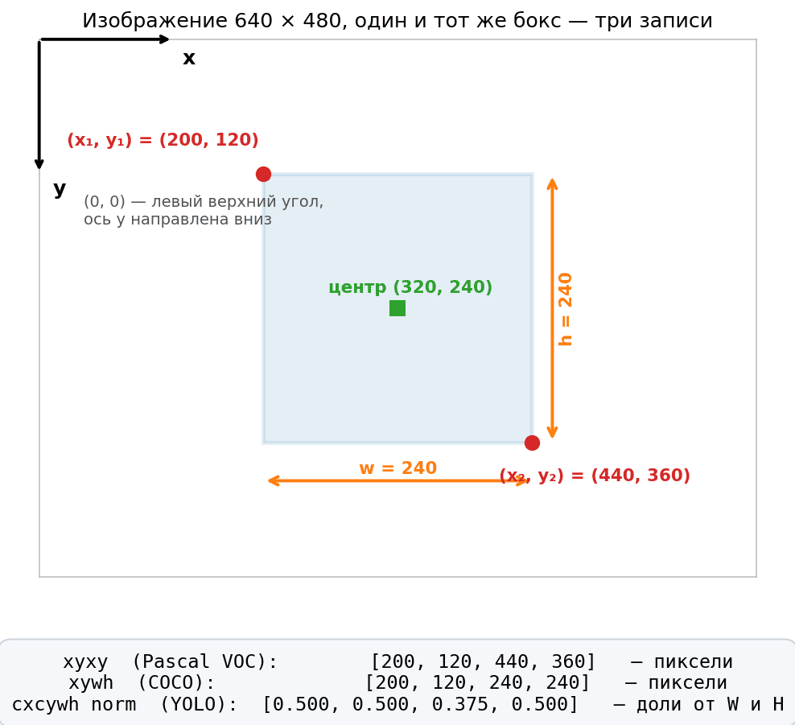
Одна рамка на изображении 640 на 480, записанная тремя способами. Красными точками отмечены углы (200, 120) и (440, 360), зелёным квадратом — центр (320, 240), оранжевые двусторонние стрелки показывают w = 240 и h = 240. Чёрные стрелки в левом верхнем углу напоминают, что начало координат там же, а ось y растёт вниз. Внизу три строки моноширинным шрифтом: xyxy даёт [200, 120, 440, 360], xywh — [200, 120, 240, 240], а cxcywh normalized — [0.500, 0.500, 0.375, 0.500]. Обратите внимание, что нормированные ширина и высота различаются (0.375 и 0.500) при одинаковых 240 пикселях: делители W = 640 и H = 480 разные. Изображение $640 \times 480$, объект занимает квадрат от точки $(200, 120)$ до точки $(440, 360)$.
xyxy: $(200,\, 120,\, 440,\, 360)$.xywh: $w = 440 - 200 = 240$, $h = 360 - 120 = 240$, значит $(200,\, 120,\, 240,\, 240)$.cxcywhnorm: центр $c_x = \frac{200 + 440}{2} = 320$, $c_y = \frac{120 + 360}{2} = 240$; делим: $c_x/W = 320/640 = 0.5$, $c_y/H = 240/480 = 0.5$, $w/W = 240/640 = 0.375$, $h/H = 240/480 = 0.5$. Итого $(0.500,\, 0.500,\, 0.375,\, 0.500)$.
Самое поучительное здесь — что квадратный объект в нормированном формате имеет разные ширину и высоту ($0.375 \ne 0.5$), потому что кадр не квадратный.
Пересчёт форматов на практике выглядит так:
def xyxy_to_cxcywh_norm(box, img_w, img_h): x1, y1, x2, y2 = box cx = (x1 + x2) / 2 / img_w cy = (y1 + y2) / 2 / img_h w = (x2 - x1) / img_w h = (y2 - y1) / img_h return cx, cy, w, h # (200, 120, 440, 360) на кадре 640x480 -> (0.5, 0.5, 0.375, 0.5) print(xyxy_to_cxcywh_norm((200, 120, 440, 360), 640, 480))Это самый частый источник «модель обучается, но mAP около нуля».
- Перепутан порядок.
xywhиxyxy— обе четвёрки чисел, ошибку не заметит ни один тензор. Признак: боксы систематически уезжают вправо-вниз и растут. - Забытая нормализация. Скормили YOLO пиксели вместо долей — все таргеты вылетают за $[0,1]$, лосс огромный, боксы схлопываются.
- Перепутаны $W$ и $H$. На квадратных картинках ошибка не проявляется вовсе, а на $640 \times 480$ даёт стабильное растяжение по одной оси. Отсюда правило: отлаживай на неквадратном кадре.
- Ось $y$ вверх. Разметка из инструментов, унаследовавших математическую систему координат, приходит перевёрнутой по вертикали.
- Off-by-one на границе. В
xyxyконвенций две: $x_2$ — либо последний пиксель объекта, либо первый пиксель за объектом. Разница в 1 пиксель на боксе шириной 10 — это 10% ширины и заметный сдвиг IoU у мелких объектов.
Единственный надёжный способ — нарисовать первые 20–30 картинок обучающей выборки вместе с боксами ровно тем кодом, который подаёт данные в модель, и посмотреть глазами. Проверка «числа в разумном диапазоне» пропускает и перепутанный порядок, и перевёрнутую ось.
Отдельно проверь, что аугментации пересчитывают боксы: горизонтальный флип, кроп и поворот меняют координаты, и библиотека аугментаций должна знать, что вместе с картинкой надо преобразовать и разметку.
Score и порог
$s_i$ — оценка уверенности модели в том, что в рамке действительно объект класса $c_i$. Модель выдаёт тысячи кандидатов на кадр; в финальный ответ попадают только те, у кого $s_i \ge \tau$, где $\tau$ — порог уверенности.
То есть порог — это не параметр модели, а ручка, которую крутят после обучения, не переобучая ничего.
Детектор нашёл на кадре 12 кандидатов класса «человек»: 4 настоящих человека и 8 ложных срабатываний с низкими score.
- $\tau = 0.25$: проходят 9 боксов — все 4 человека и 5 ложных. Полнота $4/4 = 1.0$, точность $4/9 \approx 0.44$.
- $\tau = 0.60$: проходят 4 бокса — 3 человека и 1 ложный. Полнота $3/4 = 0.75$, точность $3/4 = 0.75$.
- $\tau = 0.90$: проходит 1 бокс, он настоящий. Полнота $1/4 = 0.25$, точность $1.0$.
Одна и та же модель, три разных «качества». Поэтому сравнивать детекторы по числам при фиксированном пороге нельзя — mAP как раз усредняет по всем порогам сразу.
Порог диктует цена ошибки, а не эстетика:
- Досмотр багажа, поиск опухолей: пропуск стоит несопоставимо дороже ложной тревоги → низкий порог, оператор отсматривает лишнее.
- Автоматический штраф за проезд на красный: ложное срабатывание — это письмо невиновному человеку → высокий порог.
- Подсчёт товара на полке: порог подбирают так, чтобы итоговое число совпадало с ручным пересчётом на валидационных кадрах.
Вход, выход и место в общей картине
Классификация Детекция Семантическая сегментация Вход изображение $H \times W \times 3$ изображение $H \times W \times 3$ изображение $H \times W \times 3$ Выход одна метка множество $(\mathbf{b}, c, s)$ переменной длины карта меток $H \times W$ Размер выхода фиксированный переменный фиксированный Различает экземпляры нет да нет Типичный лосс Cross-Entropy классификационный + регрессия бокса CE + Dice Типичная метрика accuracy, $F_1$ mAP@[.50:.95] mIoU Полная таблица по всем задачам CV — в карте задач, а выбор постановки под конкретную бизнес-задачу — в финальном вопросе блока 7.
Где это применяют
В беспилотном транспорте детекция — базовый слой восприятия: машины, пешеходы, знаки, светофоры. Требования жёсткие: 30+ кадров в секунду на бортовом железе и почти нулевой пропуск пешехода. Отсюда популярность быстрых одностадийных детекторов и лёгких backbone вроде MobileNetV2.
В видеонаблюдении детекция обычно первая ступень конвейера: нашли человека боксом → вырезали кроп → отдали его в классификатор или в модуль re-identification.
Аудит полок: по фотографии стеллажа детектор находит каждую упаковку, дальше считается доля полки, занятая брендом, и наличие товара. Здесь до 300 объектов на кадре, они мелкие, плотные и почти одинаковые — классический стресс-тест для NMS.
Контроль СИЗ на стройке: детектируются человек, каска, жилет, а затем логикой проверяется, что каска геометрически «внутри» верхней трети бокса человека. Заметьте, что сама модель не отвечает на бизнес-вопрос — она выдаёт боксы, а правило поверх них пишут руками.
Аэрофотосъёмка с беспилотника: подсчёт машин на парковке, поиск повреждений кровли, оценка всхожести поля. Специфика — объекты крошечные (десятки пикселей), зато кадр огромный, поэтому его режут на перекрывающиеся тайлы и склеивают детекции обратно.
Медицина: узлы на КТ лёгких, микрокальцинаты на маммограмме, полипы на видео колоноскопии. Здесь детекция работает в режиме «второго мнения» — подсвечивает врачу подозрительные места, поэтому порог намеренно низкий: лучше показать лишнее, чем пропустить.
- «Детекция — это просто классификация плюс регрессия 4 чисел». Это верно для одного объекта. Вся сложность задачи — в неизвестном заранее числе объектов и в том, как сопоставить предсказания с истинными боксами.
- Считать score вероятностью того, что объект есть. Нейросети плохо калиброваны: score 0.9 не означает «в 90% случаев прав». Порог подбирают по валидации эмпирически, а не берут «естественные» 0.5.
- Сравнивать модели по числу найденных объектов. Модель с порогом 0.05 найдёт больше всех и будет худшей. Сравнение возможно только по метрике, усредняющей по порогам.
- Забывать про класс «фон». Подавляющее большинство кандидатов — фон, и дисбаланс здесь порядка $1{:}1000$. Обычная кросс-энтропия в таком режиме тонет в лёгких фоновых примерах; как с этим борются, разобрано в лоссах детекции.
- Тянуть детекцию туда, где нужна сегментация. Если объект вытянутый и изогнутый (провод, трещина, дорога), прямоугольник почти весь состоит из фона, и по нему нельзя посчитать ни площадь, ни форму.
Что подаётся на вход и что получается на выходе в задаче детекции?
На вход — изображение $H \times W \times 3$. На выходе — множество переменной длины $\{(\mathbf{b}_i, c_i, s_i)\}$: для каждого найденного объекта прямоугольная рамка из 4 чисел, метка класса и score уверенности. Число элементов $N$ заранее неизвестно и меняется от кадра к кадру.
Почему детекцию нельзя свести к регрессии четырёх координат?
Потому что нейросеть выдаёт выход фиксированной формы, а объектов на кадре может быть 0, 1 или 300. Модель, регрессирующая ровно 4 числа, не сможет описать два объекта и выдумает бокс на пустом кадре. Все конструкции детекторов — якоря, сетки, RPN, queries — это способы получить фиксированный по размеру набор кандидатов и потом отобрать из него нужное число.
Чем детекция отличается от семантической сегментации?
Детекция даёт огрублённую до прямоугольника форму, но разделяет экземпляры: две машины — два бокса. Семантическая сегментация даёт точную форму попиксельно, но экземпляры не разделяет: две слипшиеся машины дадут одно связное пятно одного класса, и посчитать их количество по карте меток нельзя.
Назовите три формата записи бокса и переведите один бокс между ними.
xyxy— углы в пикселях,xywh— левый верхний угол плюс размеры в пикселях,cxcywhnormalized — центр и размеры, поделённые на $W$ и $H$. Бокс от $(200,120)$ до $(440,360)$ на кадре $640 \times 480$:xyxy$(200,120,440,360)$,xywh$(200,120,240,240)$,cxcywhnorm $(0.5,\,0.5,\,0.375,\,0.5)$ — ширина и высота различаются, потому что кадр неквадратный.Что такое порог score и почему по нему нельзя сравнивать модели?
Порог $\tau$ отсекает предсказания с низкой уверенностью и настраивается уже после обучения. Понижая порог, любая модель увеличивает полноту и теряет точность, повышая — наоборот. Одна и та же модель при разных $\tau$ выглядит совершенно по-разному, поэтому для сравнения нужна метрика, усредняющая по всем порогам, — mAP.
Какие типы ошибок бывают у детектора?
Четыре: неверный класс, неточная рамка (низкий IoU с истинным боксом), пропущенный объект (false negative) и выдуманный объект (false positive, включая дубль на уже найденный объект). Именно поэтому accuracy здесь не работает и нужна метрика на основе precision-recall кривой.
-
IoU и NMS: как сравнивают боксы и убирают дубликаты
IoU (Intersection over Union, коэффициент Жаккара) — отношение площади пересечения двух прямоугольников к площади их объединения:
$$\text{IoU}(A, B) = \frac{|A \cap B|}{|A \cup B|} = \frac{|A \cap B|}{|A| + |B| - |A \cap B|}$$
Здесь $|A|$ и $|B|$ — площади рамок, $|A \cap B|$ — площадь их общей части. Вычитание пересечения во втором выражении нужно, чтобы общая часть не сосчиталась дважды.
То есть IoU отвечает на вопрос «какую долю от всего занятого двумя рамками места они занимают вместе». Диапазон $[0, 1]$: ноль — рамки не пересекаются вовсе, единица — совпадают пиксель в пиксель.
Напрашивающаяся альтернатива — сравнивать боксы по сумме модулей разностей координат. Но она не отражает суть: сдвиг на 10 пикселей для рамки размером $20 \times 20$ — катастрофа, а для рамки $500 \times 500$ — незаметная погрешность.
IoU безразмерен и автоматически нормирован на размер объекта: одна и та же относительная ошибка даёт одно и то же значение и для мелкого, и для крупного объекта. Именно поэтому его можно усреднять по объектам разного масштаба в одной метрике.
Пусть $A = (50, 50, 150, 150)$ — истинный бокс, $B = (100, 100, 200, 200)$ — предсказание (формат
xyxy).Пересечение. По каждой оси берём максимум из левых границ и минимум из правых: $x$ от $\max(50, 100) = 100$ до $\min(150, 200) = 150$, $y$ так же от $100$ до $150$. Получается квадрат $50 \times 50$, площадь $2500$.
Объединение. Обе рамки $100 \times 100$, площадь каждой $10000$:
$$|A \cup B| = 10000 + 10000 - 2500 = 17500$$
Итог: $\text{IoU} = \dfrac{2500}{17500} \approx 0.143$. При стандартном пороге $0.5$ такое предсказание не считается попаданием.
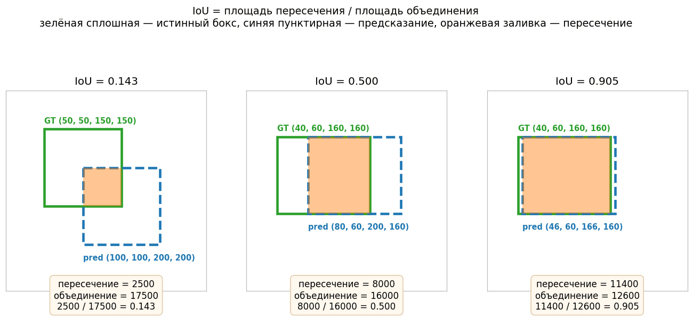
Три пары рамок, слева направо IoU = 0.143, 0.500 и 0.905. Везде зелёная сплошная рамка — истинный бокс (GT), синяя пунктирная — предсказание, оранжевая заливка — их пересечение; координаты подписаны прямо у рамок, а под каждой панелью выписан расчёт. Слева рамки 100 на 100 сдвинуты по диагонали на 50 пикселей: пересечение 2500, объединение 17500. В центре две рамки 120 на 100 сдвинуты по горизонтали ровно на 40 пикселей, что даёт пересечение 8000 при объединении 16000 — то есть IoU ровно 0.5, пограничное значение стандартного порога. Справа сдвиг всего 6 пикселей: 11400 против 12600, почти идеальное совпадение. Видно, что визуально приличное перекрытие на левой панели даёт всего 0.143 — IoU падает быстрее, чем подсказывает интуиция. Ровно 0.5. $A = (40, 60, 160, 160)$ и $B = (80, 60, 200, 160)$ — две рамки $120 \times 100$, сдвинутые по горизонтали на 40 пикселей. Пересечение $80 \times 100 = 8000$, объединение $12000 + 12000 - 8000 = 16000$, значит $\text{IoU} = 8000/16000 = 0.5$ ровно.
Почти совпадение. $A = (40, 60, 160, 160)$ и $B = (46, 60, 166, 160)$ — сдвиг всего на 6 пикселей. Пересечение $114 \times 100 = 11400$, объединение $12600$, $\text{IoU} = 11400/12600 \approx 0.905$.
Полезный ориентир: у двух одинаковых рамок ширины $w$, сдвинутых по одной оси на $d$, получается $\text{IoU} = \frac{w - d}{w + d}$. Сдвиг на треть ширины уже роняет IoU до $0.5$.
- $\text{IoU} \ge 0.5$ — «объект найден» в мягком смысле Pascal VOC. Рамка может быть заметно кривой.
- $\text{IoU} \ge 0.75$ — рамка действительно аккуратная.
- $\text{IoU} \ge 0.9$ — почти пиксельная точность, на реальных данных достижимо редко: сама разметка людьми колеблется на уровне $0.85$–$0.95$.
Отсюда и главная метрика COCO — усреднение по десяти порогам от $0.5$ до $0.95$, чтобы не поощрять модели, которые «попадают примерно».
IoU как функция потерь и проблема нулевого градиента
Хочется взять $\mathcal{L} = 1 - \text{IoU}$ — метрика оптимизируется напрямую. Но у этого лосса есть дыра.
Если рамки не пересекаются, $\text{IoU} = 0$ при любом расстоянии между ними. Значит, и лосс равен единице всегда, и его производная по координатам предсказания равна нулю. Градиент не говорит, в какую сторону двигать бокс — обучение в этой области просто стоит.
А в начале обучения непересекающихся пар как раз большинство: модель ещё не знает, где объекты.
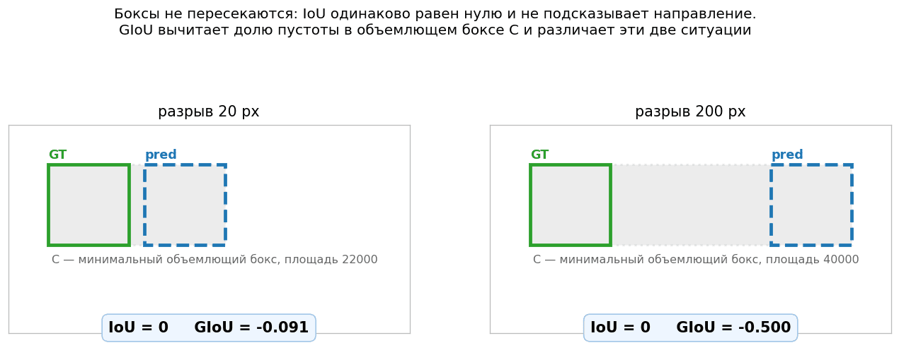
Две ситуации с одинаковым IoU = 0. Слева зелёная сплошная рамка GT и синяя пунктирная pred разделены разрывом 20 пикселей, справа — тем же боксом, но отодвинутым на 200 пикселей. Светло-серым с пунктирной границей показан C — минимальный объемлющий бокс, его площадь подписана: 22000 слева и 40000 справа. Под каждой панелью в голубой рамке итог: IoU = 0 в обоих случаях, тогда как GIoU равен -0.091 слева и -0.500 справа. Именно эта разница и даёт градиенту направление: GIoU знает, что левая конфигурация ближе к цели, а IoU — нет. GIoU (Generalized IoU) добавляет штраф за пустое место в минимальном прямоугольнике $C$, накрывающем обе рамки:
$$\text{GIoU}(A, B) = \text{IoU}(A, B) - \frac{|C| - |A \cup B|}{|C|}$$
где $C$ — наименьший прямоугольник, содержащий и $A$, и $B$, а $|C| - |A \cup B|$ — площадь пустоты внутри него.
То есть: «насколько рамки совпадают, минус насколько много воздуха между ними». Диапазон расширяется до $[-1, 1]$, а лосс $\mathcal{L}_{\text{GIoU}} = 1 - \text{GIoU}$ лежит в $[0, 2]$.
Возьмём $A = (50, 50, 150, 150)$, обе рамки $100 \times 100$, объединение всегда $20000$ (они не пересекаются).
Разрыв 20 пикселей, $B = (170, 50, 270, 150)$. Объемлющий бокс $C = (50, 50, 270, 150)$, его площадь $220 \cdot 100 = 22000$. Пустота $22000 - 20000 = 2000$:
$$\text{GIoU} = 0 - \frac{2000}{22000} \approx -0.091$$
Разрыв 200 пикселей, $B = (350, 50, 450, 150)$. Здесь $C = (50, 50, 450, 150)$, площадь $400 \cdot 100 = 40000$, пустота $20000$:
$$\text{GIoU} = 0 - \frac{20000}{40000} = -0.500$$
IoU в обоих случаях ноль, а GIoU отличается в пять с лишним раз — и градиент теперь тянет бокс в правильную сторону.
GIoU сдвигает бокс, но делает это медленно: он сначала «раздувает» предсказание, чтобы уменьшить пустоту. DIoU (Distance IoU) штрафует напрямую расстояние между центрами:
$$\text{DIoU}(A, B) = \text{IoU} - \frac{\rho^2(\mathbf{c}_A, \mathbf{c}_B)}{d^2}$$
где $\rho$ — евклидово расстояние между центрами рамок, а $d$ — длина диагонали объемлющего бокса $C$ (нормировка, чтобы величина не зависела от масштаба).
Для конфигурации с разрывом 20 пикселей: центры $(100,100)$ и $(220,100)$, $\rho^2 = 120^2 = 14400$; диагональ $C$ даёт $d^2 = 220^2 + 100^2 = 58400$, откуда $\text{DIoU} \approx -0.247$. При разрыве 200 пикселей — $-0.529$.
CIoU (Complete IoU) добавляет к DIoU третий член, отвечающий за совпадение соотношения сторон:
$$\text{CIoU} = \text{DIoU} - \alpha v, \qquad v = \frac{4}{\pi^2}\left(\arctan\frac{w^{gt}}{h^{gt}} - \arctan\frac{w}{h}\right)^2$$
Здесь $v$ — мера расхождения пропорций (ноль, если формы совпадают), а $\alpha = \frac{v}{(1 - \text{IoU}) + v}$ — вес, автоматически убывающий, когда рамки и так плохо пересекаются.
Смысл: без этого члена модель может подобрать правильный центр и правильную площадь, но выдать квадрат там, где объект вытянутый.
Три величины упорядочены по «подсказкам, которые они дают градиенту»: перекрытие (IoU) → перекрытие + расстояние (DIoU) → перекрытие + расстояние + форма (CIoU).
Современные детекторы почти всегда используют CIoU или его родственников (EIoU, SIoU) в сумме с классификационным лоссом. GIoU остаётся исторически важным — он первым показал, как чинится нулевой градиент. Подробнее о составе лоссов детектора — в отдельном вопросе.
Матчинг предсказаний с разметкой
При оценке качества (не при обучении) IoU нужен, чтобы решить, какое предсказание какому истинному объекту соответствует. Правило:
- Отсортировать предсказания по убыванию score.
- Для каждого по очереди найти истинный бокс того же класса с максимальным IoU среди ещё не занятых.
- Если этот максимум $\ge$ порога — предсказание объявляется попаданием, а истинный бокс помечается как занятый.
- Иначе — предсказание ложное.
Ключевое здесь пункт 3: один истинный объект может «закрыть» только одно предсказание. Второй бокс на тот же объект — ошибка, даже если он идеально точный. Как это превращается в метрику, разбирается в mAP.
NMS — подавление немаксимумов
Детектор выдаёт множество перекрывающихся кандидатов на один и тот же объект: соседние ячейки сетки и соседние якоря видят одну машину и все дружно на неё реагируют. NMS (Non-Maximum Suppression, подавление немаксимумов) оставляет от каждой такой группы один бокс — с наибольшим score.
Важно: это не обучаемая часть модели, а детерминированная постобработка. У неё один гиперпараметр — порог IoU $\tau_{\text{nms}}$.
Алгоритм целиком:
def nms(boxes, scores, iou_thr=0.5): order = sorted(range(len(boxes)), key=lambda i: -scores[i]) keep = [] while order: i = order.pop(0) # бокс с максимальным score keep.append(i) order = [j for j in order if iou(boxes[i], boxes[j]) <= iou_thr] return keep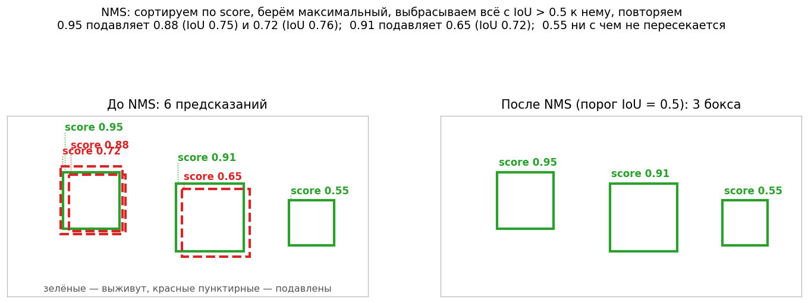
Слева до NMS: шесть предсказаний, у каждого подписан score. Зелёными сплошными рамками показаны те, что выживут (0.95, 0.91 и 0.55), красными пунктирными — те, что будут подавлены (0.88, 0.72 и 0.65). Справа результат: остались ровно три зелёных бокса. В подзаголовке выписан ход алгоритма — бокс со score 0.95 подавляет 0.88 (IoU 0.75) и 0.72 (IoU 0.76), затем 0.91 подавляет 0.65 (IoU 0.72), а 0.55 ни с чем не пересекается и остаётся. Обратите внимание, что подавление идёт строго от самого уверенного бокса вниз по score, а не по геометрии. Шесть предсказаний, порог $\tau_{\text{nms}} = 0.5$:
- Берём максимальный — score $0.95$, бокс $(100,100,200,200)$. Оставляем.
- Считаем IoU с остальными: с боксом score $0.88$ получается $0.747$, с боксом score $0.72$ — $0.758$. Оба выше $0.5$ → выбрасываем.
- Следующий по score из выживших — $0.91$, бокс $(300,120,420,240)$. Оставляем. Его IoU с боксом score $0.65$ равен $0.725$ → выбрасываем и его.
- Остался бокс score $0.55$: он ни с одним из оставленных не пересекается ($\text{IoU} = 0$), поэтому тоже проходит.
Итог: из шести кандидатов остаётся три. Заметьте, что бокс со score $0.55$ выжил не потому, что хорош, а потому, что одинок — NMS убирает дубликаты, но не ложные срабатывания.
Порог $\tau_{\text{nms}}$ управляет компромиссом «дубликаты против слипшихся объектов»:
- Слишком низкий ($0.3$): агрессивно выбрасываем. Два реально стоящих рядом человека сольются в одного — потеря полноты.
- Слишком высокий ($0.8$): почти ничего не подавляем, на каждом объекте остаётся гроздь дубликатов — потеря точности.
Стандартный диапазон — $0.5$–$0.7$; в COCO-пайплайнах обычно $0.6$–$0.65$. На плотных сценах (толпа, полка магазина) порог поднимают, иначе NMS сам становится главным источником пропусков.
Жёсткое удаление — грубая операция: сосед либо остаётся целиком, либо исчезает. Soft-NMS вместо удаления понижает score пропорционально перекрытию, например по гауссову правилу:
$$s_j \leftarrow s_j \cdot \exp\left(-\frac{\text{IoU}(b_i, b_j)^2}{\sigma}\right)$$
Бокс с высоким перекрытием получает score близкий к нулю и всё равно отсеется порогом, а бокс с умеренным перекрытием (второй человек в толпе) выживет с пониженной уверенностью. На плотных сценах это стабильно даёт $+1$–$2$ пункта mAP без переобучения модели.
- Class-wise (по умолчанию): NMS запускается независимо внутри каждого класса. Бокс «собака» и бокс «человек» на одном месте оба выживают — и это правильно, человек может держать собаку на руках.
- Class-agnostic: одна общая процедура по всем классам. Применяют там, где физически невозможно, чтобы два объекта занимали одно место, — например, при детекции документов на скане или машин с высоты.
Технический приём для class-wise режима: к координатам каждого бокса прибавляют смещение, пропорциональное номеру класса, и запускают один общий NMS — боксы разных классов после сдвига гарантированно не пересекаются.
- Путать порог NMS с порогом матчинга при оценке. Это два независимых числа: $\tau_{\text{nms}}$ управляет постобработкой предсказаний между собой, а порог IoU в mAP — сопоставлением предсказаний с разметкой.
- Считать, что при $\text{IoU} = 0$ лосс «просто большой». Он не просто большой, он константный: производная равна нулю, обучение стоит. Это и есть причина появления GIoU/DIoU/CIoU.
- Оптимизировать порог NMS по одному кадру. Оптимум сильно зависит от плотности сцены; подбирать надо по mAP на валидации.
- Считать NMS обязательным. DETR и его наследники обучаются с венгерским матчингом «одно предсказание — один объект» и обходятся без NMS вовсе.
- Забывать, что NMS не спасает от ложных срабатываний. Одинокий ложный бокс не с чем подавлять — он пройдёт. От FP спасают порог score и качество обучения, а не постобработка.
- Применять class-agnostic NMS по умолчанию. На сценах, где объекты разных классов законно перекрываются, это выбрасывает верные детекции и роняет mAP.
Что такое IoU и почему его используют вместо разности координат?
$\text{IoU} = |A \cap B| / |A \cup B|$ — доля площади, общей у двух рамок, в их суммарной площади. В отличие от разности координат он безразмерен и нормирован на размер объекта: одинаковая относительная ошибка даёт одинаковое значение и для мелкого, и для крупного объекта, поэтому IoU можно усреднять по объектам разного масштаба.
Посчитайте IoU для боксов $(50,50,150,150)$ и $(100,100,200,200)$.
Пересечение по обеим осям — от 100 до 150, то есть квадрат $50 \times 50$ площадью 2500. Каждая рамка $100 \times 100 = 10000$, объединение $10000 + 10000 - 2500 = 17500$. Итого $\text{IoU} = 2500/17500 \approx 0.143$ — при пороге 0.5 это не попадание.
Почему $1 - \text{IoU}$ плохо работает как функция потерь?
Для непересекающихся рамок IoU равен нулю независимо от расстояния между ними, поэтому лосс константен, а его градиент по координатам — нулевой. Модель не получает информации о том, куда двигать бокс, а в начале обучения непересекающихся пар как раз большинство.
Что добавляет GIoU и чем от него отличаются DIoU и CIoU?
GIoU вычитает долю пустоты в минимальном объемлющем боксе $C$, благодаря чему различает разную степень промаха: для разрывов 20 и 200 пикселей получается $-0.091$ и $-0.500$ при одинаковом $\text{IoU}=0$. DIoU вместо этого штрафует нормированное расстояние между центрами и сходится быстрее. CIoU добавляет к DIoU член согласования соотношения сторон, чтобы модель не выдавала квадрат на месте вытянутого объекта.
Опишите алгоритм NMS и назовите его гиперпараметр.
Отсортировать предсказания по убыванию score; взять верхний, добавить его в ответ; удалить все оставшиеся боксы, у которых IoU с ним выше порога; повторять, пока список не опустеет. Гиперпараметр один — порог IoU, обычно 0.5–0.7. Низкий порог склеивает соседние объекты, высокий оставляет дубликаты.
Что такое Soft-NMS и когда он нужен?
Вместо удаления перекрывающегося бокса Soft-NMS умножает его score на убывающую функцию от IoU (например, гауссову). Сильно перекрывающийся дубликат получает score около нуля и отсеивается порогом, а умеренно перекрывающийся сосед выживает с пониженной уверенностью. Это заметно помогает на плотных сценах — в толпе или на полке магазина, — где жёсткий NMS выбрасывает реальные объекты.
-
mAP: главная метрика детекции
Предсказание $(\mathbf{b}, c, s)$ объявляется true positive только при одновременном выполнении трёх условий:
- класс совпал с классом истинного объекта;
- $\text{IoU}(\mathbf{b}, \mathbf{b}^{gt}) \ge \tau_{\text{IoU}}$ — рамка достаточно точна;
- этот истинный объект ещё не занят другим, более уверенным предсказанием.
Всё остальное — false positive: неверный класс, кривая рамка, а также дубликат на уже найденный объект. Истинный объект, к которому не подошло ни одно предсказание, — это false negative (пропуск).
Если совсем простыми словами: попасть мало — надо ещё попасть первым, потому что за одного человека дают только один балл.
В классификации есть четыре клетки матрицы ошибок, и accuracy считается как доля верных ответов среди всех. В детекции клетка true negative пуста: «правильно не обнаруженный объект» — это любой из бесконечного числа прямоугольников, которые модель не нарисовала. Их количество не определено, поэтому в знаменатель accuracy подставлять нечего.
Остаются precision и recall, оба считаются без TN:
$$\text{precision} = \frac{TP}{TP + FP}, \qquad \text{recall} = \frac{TP}{TP + FN}$$
Точность — какая доля выданных боксов оказалась настоящими; полнота — какую долю настоящих объектов модель нашла. Общее определение обеих величин и разбор их поведения — в метриках бинарной классификации.
Без этого правила метрику можно было бы взломать: выдать на каждый объект по сто одинаковых рамок и получить стопроцентную полноту. Правило превращает 99 дубликатов в 99 false positive и обрушивает точность.
Именно поэтому NMS — не косметика, а необходимая часть пайплайна: без него метрика штрафует за каждый оставшийся дубль.
PR-кривая детектора
Precision и recall зависят от порога score, и вместо того чтобы фиксировать один порог, метрика перебирает все:
- Собрать все предсказания одного класса по всей выборке в один список.
- Отсортировать по убыванию score.
- Идти сверху вниз, на каждом шаге пересчитывая накопленные $TP$ и $FP$, а по ним — precision и recall.
Каждый шаг даёт точку $(\text{recall}, \text{precision})$. Соединив их, получаем PR-кривую. Двигаясь по списку вниз, мы фактически понижаем порог: recall монотонно растёт, precision скачет вверх-вниз.
Разбор на шести предсказаниях при четырёх истинных объектах одного класса:
# score тип накоплено $TP$ накоплено $FP$ precision recall 1 0.95 TP 1 0 $1/1 = 1.000$ $1/4 = 0.25$ 2 0.90 TP 2 0 $2/2 = 1.000$ $2/4 = 0.50$ 3 0.80 FP 2 1 $2/3 = 0.667$ $2/4 = 0.50$ 4 0.70 TP 3 1 $3/4 = 0.750$ $3/4 = 0.75$ 5 0.60 FP 3 2 $3/5 = 0.600$ $3/4 = 0.75$ 6 0.50 FP 3 3 $3/6 = 0.500$ $3/4 = 0.75$ 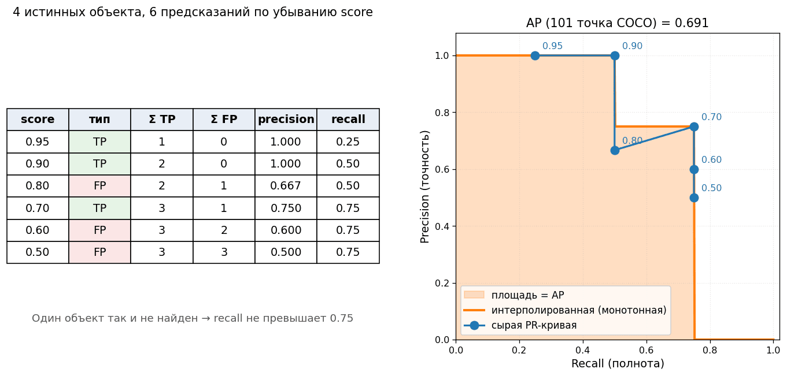
Слева таблица тех же шести предсказаний, отсортированных по убыванию score: строки типа TP подсвечены зелёным, FP — розовым, дальше идут накопленные суммы TP и FP и пересчитанные precision и recall. Справа сама PR-кривая: по горизонтальной оси recall, по вертикальной precision, обе шкалы линейные от 0 до 1. Синяя ломаная с круглыми маркерами — сырая кривая, у каждой точки подписан её score (0.95, 0.90, 0.80, 0.70, 0.60, 0.50). Оранжевая ступенчатая линия — та же кривая после монотонизации, а оранжевая заливка под ней и есть AP, равный 0.691 по 101-точечной схеме COCO. Хорошо видно, что после четвёртого предсказания recall упирается в 0.75 и дальше не растёт: один из четырёх объектов не найден вовсе, и правый край заливки обрывается вертикально вниз. Первые два предсказания верны, поэтому precision держится на единице. Третье — ложное: recall не изменился (новых объектов не найдено), а precision просела до $0.667$. Четвёртое снова верное — recall вырос до $0.75$, precision частично восстановилась до $0.75$.
Дальше идут только ложные срабатывания, и precision монотонно падает при неизменном recall — на графике это вертикальный обрыв вниз в точке $\text{recall} = 0.75$.
Максимум recall — $0.75$, а не $1.0$: четвёртый объект не найден ни одним предсказанием, это false negative. Никаким понижением порога его уже не достать.
Average Precision — площадь под PR-кривой. Сырая кривая пилообразна, поэтому её сначала монотонизируют: precision в точке $r$ заменяют на максимум precision по всем точкам с recall не меньше $r$:
$$p_{\text{interp}}(r) = \max_{\tilde r \,\ge\, r} p(\tilde r)$$
То есть каждой точке приписывается лучшее, чего модель достигает при этой или большей полноте. Это убирает случайные провалы и делает метрику устойчивой к перестановке соседних предсказаний.
Идём справа налево по recall:
- при $r \le 0.5$ максимум precision среди точек с $\text{recall} \ge 0.5$ равен $1.000$;
- при $0.5 < r \le 0.75$ максимум среди точек с $\text{recall} \ge 0.75$ равен $0.750$;
- при $r > 0.75$ точек нет — precision считается нулевой.
Получилась ступенька: $1.0$ до recall $0.5$, затем $0.75$ до recall $0.75$, дальше ноль. Именно её и рисует оранжевая линия на графике.
COCO не берёт геометрическую площадь, а усредняет $p_{\text{interp}}$ по фиксированной сетке из 101 значения recall $\{0.00,\, 0.01,\, \dots,\, 1.00\}$:
$$\text{AP} = \frac{1}{101}\sum_{r \in \{0,\,0.01,\,\dots,\,1\}} p_{\text{interp}}(r)$$
Смысл фиксированной сетки — сделать метрику сравнимой между моделями с разным числом предсказаний: площадь считается всегда по одним и тем же точкам.
На нашей ступеньке:
- $51$ узел сетки (от $0.00$ до $0.50$) даёт $p_{\text{interp}} = 1.00$;
- $25$ узлов (от $0.51$ до $0.75$) дают $0.75$;
- $25$ узлов (от $0.76$ до $1.00$) дают $0$.
$$\text{AP} = \frac{51 \cdot 1.00 + 25 \cdot 0.75 + 25 \cdot 0}{101} = \frac{69.75}{101} \approx 0.691$$
Для сравнения, «честная» геометрическая площадь под той же ступенькой равна $0.25 \cdot 1.0 + 0.25 \cdot 1.0 + 0.25 \cdot 0.75 = 0.6875$. Расхождение с $0.691$ — чисто артефакт дискретной сетки; на реальных выборках из тысяч предсказаний разница исчезающе мала.
От AP к mAP
mAP (mean Average Precision) — среднее AP по всем классам:
$$\text{mAP} = \frac{1}{K}\sum_{k=1}^{K} \text{AP}_k$$
Усреднение именно по классам, а не по объектам, принципиально: иначе метрику определял бы один многочисленный класс (в COCO это «человек»), а редкие классы не влияли бы ни на что.
Побочный эффект — редкий класс с десятком объектов в валидации весит столько же, сколько класс с десятью тысячами, поэтому его AP шумный и скачет между запусками.
- mAP@0.5 (стандарт Pascal VOC, в отчётах пишут
mAP50илиAP50) — порог IoU фиксирован на $0.5$. Мягкая метрика: рамка может быть заметно кривой и всё равно засчитается. - mAP@[.50:.95] (основная метрика COCO, часто пишут просто
APилиmAP) — AP считается при десяти порогах IoU $0.50,\, 0.55,\, \dots,\, 0.95$ и усредняется. Метрика вознаграждает не только «нашёл», но и «нашёл точно».
Число «mAP 45» без указания стандарта бессмысленно: одна и та же модель показывает, например, $0.68$ по VOC-схеме и $0.43$ по COCO-схеме.
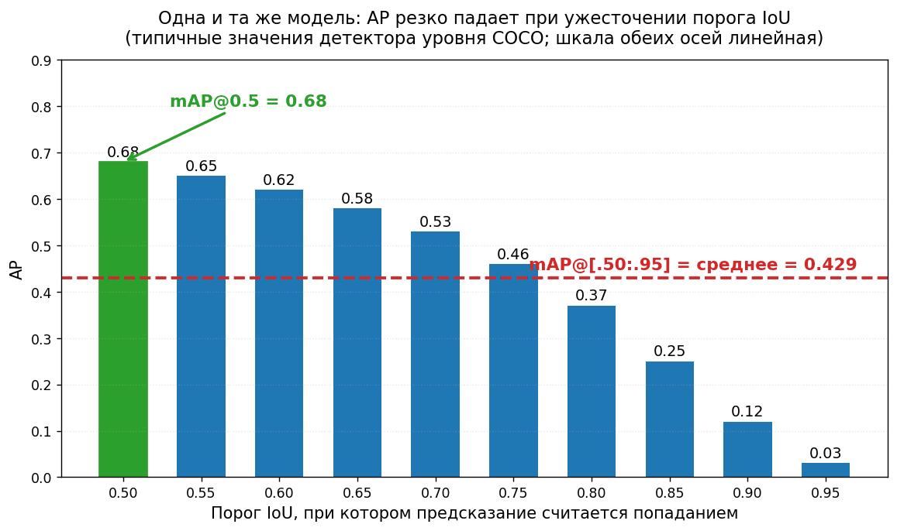
Столбчатая диаграмма для одной и той же модели: по горизонтальной оси десять порогов IoU от 0.50 до 0.95 с шагом 0.05, по вертикальной — AP, обе шкалы линейные. Первый столбец зелёный и подписан стрелкой mAP@0.5 = 0.68, остальные девять синие. Значения падают монотонно: 0.68, 0.65, 0.62, 0.58, 0.53, 0.46, 0.37, 0.25, 0.12, 0.03. Красная горизонтальная пунктирная линия на уровне 0.429 — это и есть mAP@[.50:.95], среднее по всем десяти столбцам. Картинка объясняет, почему число по COCO-схеме всегда заметно ниже числа по VOC-схеме: жёсткие пороги 0.9 и 0.95 почти обнуляют вклад и тянут среднее вниз. COCO дополнительно считает AP отдельно для трёх групп объектов по площади бокса в пикселях:
- $AP_S$ (small) — площадь меньше $32^2 = 1024$ px;
- $AP_M$ (medium) — от $32^2$ до $96^2 = 9216$ px;
- $AP_L$ (large) — больше $96^2$ px.
Это самый полезный диагностический разрез. Типичная картина у современных детекторов: $AP_L \approx 0.60$, $AP_M \approx 0.45$, $AP_S \approx 0.25$. Если $AP_S$ проваливается сильнее обычного, лечат это увеличением входного разрешения и работой с многомасштабными признаками — FPN и пулингом.
Average Recall $AR@k$ — усреднённая по порогам IoU полнота при ограничении «не более $k$ детекций на изображение» ($k = 1, 10, 100$).
Метрика отвечает на вопрос «сколько объектов модель в принципе способна найти, если разрешить ей выдавать много боксов». Диагностическая ценность в сравнении с AP: если $AR@100$ высокий, а mAP низкий — объекты находятся, но ранжируются плохо, то есть проблема в классификационной голове, а не в локализации.
Чтобы понимать порядок величин (val2017, 80 классов):
- Быстрые модели реального времени — mAP@[.50:.95] в районе $0.37$–$0.45$.
- Тяжёлые современные детекторы — $0.50$–$0.58$.
- mAP@0.5 у тех же моделей — примерно $0.60$–$0.72$.
Значений около $1.0$ не бывает. Потолок задан самой разметкой: люди размечают одну и ту же рамку с разбросом, и согласие двух аннотаторов по IoU редко превышает $0.9$. Поэтому mAP $= 0.55$ — это очень сильный результат, а не «сеть работает наполовину».
- Считать accuracy для детектора. Клетки true negative не существует, знаменатель не определён. Единственная корректная схема — precision-recall и производные от неё метрики.
- Ужасаться числу mAP $= 0.45$. Это не «сеть угадывает в 45% случаев», а усреднённая по классам и по десяти порогам IoU площадь под PR-кривой. Сравнивать её надо с числами других моделей на том же датасете, а не с интуицией про проценты.
- Сравнивать mAP@0.5 с mAP@[.50:.95]. Разница между стандартами доходит до 25 пунктов на одной и той же модели. В отчёте всегда указывай схему.
- Сравнивать mAP на разных датасетах. $0.55$ на COCO и $0.55$ на своём датасете из трёх классов — величины несопоставимые: mAP зависит от числа классов, размеров объектов и качества разметки.
- Забывать правило «один GT — один TP». Дубликаты не «не считаются», они считаются ложными срабатываниями и активно портят метрику.
- Смотреть только на итоговый mAP. Разрезы $AP_S/AP_M/AP_L$ и $AR@100$ говорят, что именно чинить: разрешение, назначение таргетов или классификационную голову. Общее число этого не говорит.
Когда предсказание детектора считается true positive?
Когда одновременно выполнены три условия: совпал класс, IoU с истинным боксом не меньше порога и этот истинный объект ещё не занят более уверенным предсказанием. Всё остальное — false positive, включая дубликат на уже найденный объект. Непокрытый истинный объект — false negative.
Почему в детекции нельзя пользоваться accuracy?
Потому что нет true negative: «правильно не обнаруженный объект» — это любой из бесконечного числа не нарисованных прямоугольников, и их количество не определено. Без TN нельзя составить знаменатель accuracy, остаются только precision и recall, которые считаются без этой клетки.
Как строится PR-кривая детектора и что такое AP?
Все предсказания класса сортируются по убыванию score, и на каждом шаге пересчитываются накопленные TP и FP, а по ним precision и recall. Полученные точки образуют PR-кривую. AP — площадь под ней после монотонизации: precision в точке $r$ заменяется на максимум precision при recall не меньше $r$. COCO усредняет эту величину по 101 равномерному узлу recall.
Посчитайте AP для шести предсказаний и четырёх объектов из примера.
После монотонизации получается ступенька: precision 1.00 до recall 0.50, затем 0.75 до recall 0.75, дальше ноль (четвёртый объект не найден). На сетке COCO это 51 узел со значением 1.00, 25 узлов со значением 0.75 и 25 нулей: $\text{AP} = (51 + 18.75)/101 \approx 0.691$.
В чём разница между mAP@0.5 и mAP@[.50:.95]?
Первая считает AP при единственном пороге IoU 0.5 — она мягкая и прощает неточные рамки. Вторая усредняет AP по десяти порогам от 0.50 до 0.95 с шагом 0.05 и требует ещё и точной локализации. На одной и той же модели разница достигает 25 пунктов, поэтому схему обязательно указывают: например, 0.68 против 0.43.
Зачем нужны разрезы $AP_S$, $AP_M$, $AP_L$ и $AR@k$?
Это диагностика. Разрезы по площади бокса (меньше $32^2$, от $32^2$ до $96^2$, больше $96^2$ пикселей) показывают, на объектах какого масштаба модель проваливается: низкий $AP_S$ лечат разрешением и многомасштабными признаками. $AR@100$ показывает потолок полноты: если он высокий при низком mAP, объекты находятся, но плохо ранжируются, и чинить надо классификационную голову, а не локализацию.
-
Модели детекции: от R-CNN до DETR
Детектор должен выдать множество переменной длины из троек (бокс, класс, score) — см. постановку задачи. Сеть же выдаёт тензор фиксированной формы. Вся история архитектур — это три разных ответа на вопрос, как одно превратить в другое:
- Двухстадийные — сначала нагенерировать кандидатов, потом разобрать каждого отдельно (R-CNN, Fast/Faster R-CNN).
- Одностадийные — засеять кадр десятками тысяч фиксированных позиций, для каждой предсказать «объект/фон + поправку», лишнее срезать NMS (SSD, YOLO, RetinaNet, FCOS).
- Set prediction — сразу выдать фиксированный набор из $N$ слотов, где большинство слотов пустые (DETR).
Каркас backbone $\to$ neck $\to$ голова у всех трёх одинаков, и backbone берётся один и тот же — ResNet, ConvNeXt, Swin, MobileNetV2 для мобильных. Различается только хвост.
Двухстадийные: от R-CNN к Faster R-CNN
Selective search (не нейросетевой алгоритм, склеивающий похожие по цвету и текстуре пиксели) выдаёт $\sim 2000$ кандидатов; каждый вырезается, растягивается до $227 \times 227$ и отдельно прогоняется через CNN, дальше SVM даёт класс, а регрессия двигает границы.
Итого 2000 прогонов сети на кадр — около 47 секунд на GPU 2014 года.
Два кандидата, сдвинутых на 10 пикселей, содержат почти одни и те же пиксели: свёртки 1998 раз пересчитывают уже посчитанное. Дальнейшая эволюция — устранение этой избыточности:
Модель Что убрали Время на кадр mAP на VOC-2007 R-CNN — $\sim 47$ с 66.0 Fast R-CNN повторные свёртки $\sim 2$ с (из них $\sim 1.8$ с — selective search) 70.0 Faster R-CNN selective search $\sim 0.2$ с 73.2 Числа — из статей, на железе 2015 года. Важен не абсолют, а ускорение в 200 раз при выросшем качестве.
Перестановка порядка действий: прогнать весь кадр через backbone, а участки под кандидатов вырезать уже из готовой карты признаков.
Кандидаты разного размера, а голове нужен фиксированный тензор — это решает RoI Pooling: область делится на сетку $7 \times 7$, в каждой ячейке берётся максимум, на выходе всегда $7 \times 7 \times C$. По сути max pooling с окном под конкретный прямоугольник.
Оставшееся узкое место — selective search на CPU. Его заменили на RPN (Region Proposal Network): свёрточная голова поверх той же карты признаков скользит окном $3 \times 3$ и для каждого якоря выдаёт objectness (объект или фон, без класса) и поправку к координатам; берут $\sim 1000$ лучших предложений.
Выигрыш: proposals считаются на GPU и на уже посчитанных признаках, то есть почти бесплатно.
RoI Pooling округляет координаты дважды: переводя бокс в клетки карты и деля регион на ячейки. Бокс шириной 143 px на карте со stride 16 занимает $143/16 = 8.94$ клетки, а округляется до 8 — сдвиг в 0.94 клетки, то есть 15 пикселей исходного кадра. Для рамки терпимо, для попиксельной маски — нет.
RoIAlign (Mask R-CNN, 2017) не округляет: дробные координаты берутся билинейной интерполяцией. Одна эта правка арифметики дала около $+3$ AP по маскам в целом, а на строгом пороге $\text{AP}_{75}$ — с $21.6$ до $32.1$.
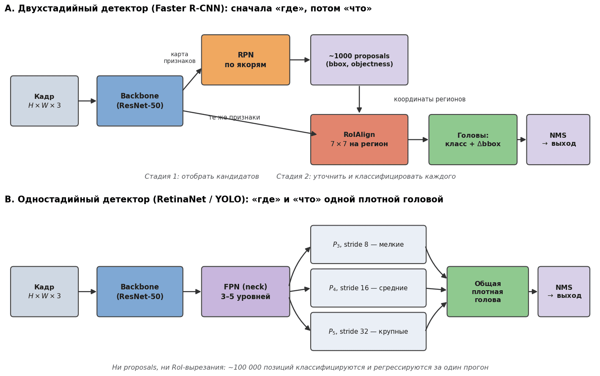
Панель A (сверху) — Faster R-CNN: оранжевый блок RPN по якорям выдаёт около 1000 proposals, их координаты вместе с той же картой признаков идут в красный блок RoIAlign, вырезающий на каждый регион тензор $7\times7$, дальше зелёные головы класса и поправки бокса и NMS. Панель B (снизу) — RetinaNet или YOLO: после backbone стоит фиолетовый neck FPN с тремя уровнями ($P_3$ со stride 8 для мелких объектов, $P_4$ со stride 16 для средних, $P_5$ со stride 32 для крупных), и все три уходят в одну общую плотную голову. Различие видно сразу: во второй схеме нет ни proposals, ни вырезания регионов. Одностадийные: без proposals
Одностадийный детектор отказывается от кандидатов: он заранее засевает кадр фиксированной сеткой позиций и для каждой сразу предсказывает класс и координаты.
Выгода — один проход сети. Цена — новая проблема: позиций около $100\,000$, а объектов десяток, и обучение тонет в фоне (см. лоссы детекции).
SSD (2016) первым снял предсказания не с одной карты, а с нескольких уровней: ранние карты высокого разрешения — под мелкие объекты, поздние огрублённые — под крупные.
Слабое место: ранние карты «глупые», семантики там ещё нет. Это чинит FPN — она достраивает путь сверху вниз, подмешивая семантику глубоких слоёв в карты высокого разрешения (устройство пирамиды — в вопросе про пулинг).
Детекционная специфика FPN — распределение ответственности: $P_3$ (stride 8) отвечает за мелкие объекты примерно от $32 \times 32$ px, $P_4$ (stride 16) — за средние, $P_5$–$P_7$ (stride 32–128) — за крупные, вплоть до $512 \times 512$.
То есть объект приписывают уровню, где он занимает разумное число клеток: на stride 32 человек вдалеке высотой 20 px не занимает и одной клетки и физически неразличим.
RetinaNet = ResNet + FPN + две простые головы + Focal Loss. Этого хватило, чтобы впервые обойти Faster R-CNN по AP на COCO при большей скорости.
Вывод для собеседования: отставание одностадийных было вызвано не архитектурой, а функцией потерь — точнее, дисбалансом фон/объект.
Якоря и жизнь без них
Якорь — заранее заданный прямоугольник фиксированного размера и соотношения сторон, привязанный к клетке сетки признаков. Сеть предсказывает не координаты, а поправку $(\Delta x, \Delta y, \Delta w, \Delta h)$ к нему: подвинуть и растянуть готовую рамку проще, чем угадать четыре числа с нуля.
У RetinaNet это 3 масштаба $\times$ 3 отношения сторон ($1{:}2$, $1{:}1$, $2{:}1$) = 9 якорей на клетку; при пяти уровнях FPN и получаются $\sim 100\,000$ якорей на кадр.
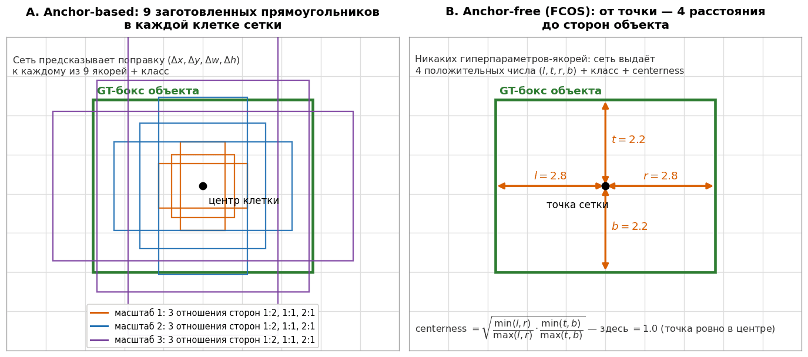
Одна сцена в двух постановках; зелёным в обеих панелях — GT-бокс, чёрная точка — центр клетки сетки. Слева (A, anchor-based) из точки нарисованы 9 якорей: оранжевые — мелкий масштаб, синие — средний, фиолетовые — крупный, в каждом по три отношения сторон 1:2, 1:1 и 2:1; сеть предсказывает поправку к каждому. Справа (B, anchor-free, FCOS) якорей нет — оранжевыми двусторонними стрелками показаны четыре расстояния от точки до сторон объекта: $l = 2.8$, $r = 2.8$, $t = 2.2$, $b = 2.2$. Точка попала ровно в центр объекта, поэтому её centerness равен 1.0. - Гиперпараметры. Масштабы и отношения сторон подбираются под датасет: якоря под COCO плохо ловят вытянутые объекты — столбы, текстовые строки, катетеры.
- Комбинаторный взрыв. 9 якорей на клетку — вдевятеро больше выходов сети и вдевятеро острее дисбаланс с фоном.
- Провалы на нетипичных формах. Если у узкого объекта максимальный IoU с любым якорем ниже порога, ни один якорь не станет позитивным и объект вообще не попадёт в обучение (числовой разбор — в лоссах).
FCOS убирает якоря совсем. Каждая точка карты признаков внутри GT-бокса считается позитивной и предсказывает четыре положительных числа $(l, t, r, b)$ — расстояния до левой, верхней, правой и нижней границ.
Точки у самого края дают косые предсказания, поэтому есть третья голова — centerness:
$$\text{centerness} = \sqrt{\frac{\min(l, r)}{\max(l, r)} \cdot \frac{\min(t, b)}{\max(t, b)}}$$
то есть число от 0 до 1: единица ровно в центре объекта, ноль у границ. На инференсе им домножают score, и краевые предсказания сами уезжают вниз списка, где их срезает NMS.
Ещё радикальнее: сеть предсказывает heatmap центров (по каналу на класс) плюс два числа в каждом пике — ширину и высоту. Детекция сводится к поиску локальных максимумов, и NMS не нужен вовсе: max-pooling $3 \times 3$ по heatmap уже оставляет только пики. Тот же приём карты откликов работает в ключевых точках.
YOLO: почему именно она стоит в проде
You Only Look Once: кадр делится на сетку $7 \times 7$, каждая клетка предсказывает 2 бокса и распределение по классам — 98 боксов на кадр против 2000 у R-CNN.
Точность первой версии была скромной (63.4 mAP на VOC против 73.2 у Faster R-CNN), но скорость — 45 FPS против 5. Именно это открыло детекции дорогу в реальное время.
- v2–v3 (2016–2018): якоря, подобранные $k$-means по датасету, предсказания с трёх масштабов, backbone Darknet-53.
- v4–v5 (2020): инженерный пакет — mosaic-аугментация (склейка четырёх кадров в один, см. аугментации), CIoU-лосс, EMA весов.
- v8–v11 (2023–2024): anchor-free, decoupled head (класс и бокс считают отдельные ветки), DFL для координат, назначение таргетов через TAL.
То есть современная YOLO — это FCOS-подобный детектор в вылизанной инженерной обвязке, а не архитектура из статьи 2015 года.
Дело не в mAP, а в линейке размеров под один API:
n,s,m,l,x— от 3 до 68 млн параметров, одинаковый обучающий цикл и формат данных.Типичный сценарий: прототип обучают на
yolov8m, потом переходят наyolov8n, теряют $\sim 13$ пунктов mAP, но получают вчетверо меньшую латентность и укладываются в бюджет edge-устройства. Такой обмен делается сменой одной строки.DETR: детекция как предсказание множества
DETR (DEtection TRansformer) формулирует детекцию как предсказание множества фиксированного размера. Декодер трансформера получает $N = 100$ обучаемых векторов — object queries — и через cross-attention к признакам кадра превращает каждый в тройку (бокс, класс, score), где класс может быть служебным «пусто» ($\varnothing$).
Модель всегда выдаёт ровно 100 ответов: если на кадре 7 объектов, 93 слота говорят «здесь ничего нет».
Чтобы посчитать лосс, надо решить, какое из 100 предсказаний отвечает за какой GT-объект. DETR ищет биективное (один-к-одному) соответствие минимальной суммарной стоимости — классическая задача о назначениях, её решает венгерский алгоритм за $O(N^3)$.
Следствие: за каждый объект отвечает ровно одно предсказание, дублировать объект невыгодно уже на обучении. Поэтому NMS не нужен — впервые за всю историю детекции.
В оригинале DETR обучался 500 эпох на COCO там, где Faster R-CNN даёт сравнимое качество за 12. Причина — матчинг нестабилен на ранних итерациях: за один объект от эпохи к эпохе отвечают разные queries, и таргеты «прыгают».
Развитие семейства — борьба со сходимостью: Deformable DETR (внимание к нескольким точкам вместо всей карты — 50 эпох, 43.8 AP), DINO (denoising-обучение — 49.0 AP за 12 эпох).
Что выбрать
Модель mAP@[.50:.95] на COCO Латентность (порядок) Параметров Faster R-CNN R50-FPN $\approx 37{-}40$ $\sim 60$ мс 41 млн RetinaNet R50-FPN $\approx 36$ $\sim 55$ мс 38 млн YOLOv8n $\approx 37$ $\sim 2$ мс 3 млн YOLOv8x $\approx 54$ $\sim 15$ мс 68 млн DETR-R50 $\approx 42$ $\sim 36$ мс 41 млн DINO-R50 $\approx 49$ $\sim 85$ мс 47 млн Это порядки величин, а не паспортные характеристики: латентность меняется в разы от модели GPU, разрешения входа (640 против 1333), точности вычислений (FP32 / FP16 / INT8) и наличия TensorRT, а mAP — от протокола и длины обучения. Переносится только относительный порядок: качество растёт логарифмически по времени, каждый следующий пункт AP стоит всё дороже.
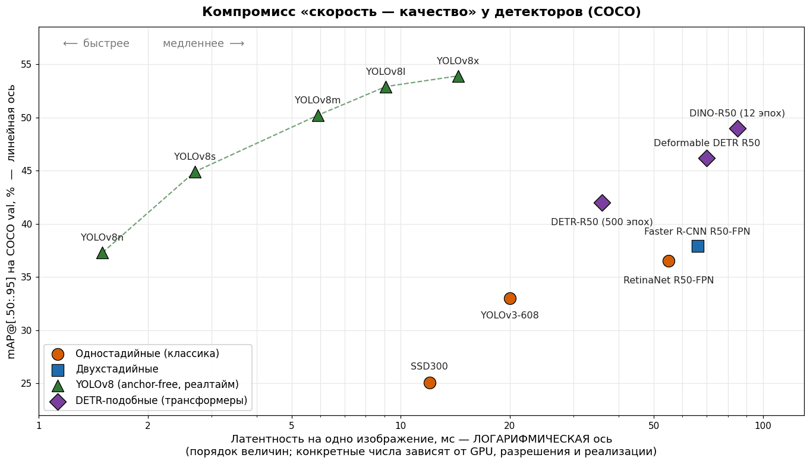
По горизонтали — латентность на изображение в миллисекундах, ось ЛОГАРИФМИЧЕСКАЯ (отметки 1, 2, 5, 10, 20, 50, 100); по вертикали — mAP@[.50:.95] на COCO val в процентах, ось линейная. Зелёные треугольники на пунктире — линейка YOLOv8 от n (1.5 мс, 37.3) до x (14.4 мс, 53.9): вся кривая лежит выше и левее остальных. Оранжевые кружки — классические одностадийные SSD300 (12 мс, 25.1), YOLOv3-608 (20 мс, 33.0), RetinaNet R50-FPN (55 мс, 36.5); синий квадрат — Faster R-CNN R50-FPN (66 мс, 37.9); фиолетовые ромбы — DETR-R50 (36 мс, 42.0), Deformable DETR (70 мс, 46.2), DINO-R50 (85 мс, 49.0). Модели 2015–2017 годов сегодня доминируются по обоим критериям сразу, а трансформерные детекторы платят за качество латентностью. - Видеопоток 30 FPS, десятки камер на видеокарту — YOLO размера
n/s: бюджет меньше 5 мс на кадр. - Плотная сцена (толпа, стеллаж, микроскопия) — DETR-подобные: NMS с фиксированным порогом систематически удаляет объекты, стоящие вплотную.
- 300 размеченных картинок — предобученная на COCO модель; решают transfer learning и аугментации, а не архитектура.
- «Одностадийные быстрые, но неточные». Устарело на 2017 год: RetinaNet, а затем YOLOv8x обходят двухстадийные и по AP, и по скорости. Разница была в лоссе, а не в числе стадий.
- Сравнивать mAP из разных статей напрямую. Разное разрешение, разная длина обучения, разные аугментации. Faster R-CNN с расписанием $3\times$ и современными аугментациями догоняет модели, которые «обходят» его в таблицах 2020 года.
- Считать RPN классификатором объектов. RPN отвечает только «объект или фон» и классов не знает; класс появляется на второй стадии.
- Думать, что anchor-free лучше сам по себе. Выигрыш в AP даёт в основном новое назначение таргетов, а не отсутствие якорей как таковое.
- Ждать от DETR ускорения. DETR убирает NMS, но быстрее не становится: экономия на постобработке ничтожна рядом со стоимостью декодера.
Чем двухстадийный детектор отличается от одностадийного?
Двухстадийный сначала генерирует $\sim 1000$ кандидатов (RPN), затем для каждого отдельно вырезает признаки через RoIAlign и уточняет класс и координаты. Одностадийный засевает кадр сеткой из $\sim 100\,000$ позиций и предсказывает всё за один проход плотной головой, без вырезания признаков.
Что такое RPN и чем он заменил selective search?
Свёрточная голова поверх карты признаков backbone: для каждого якоря предсказывает objectness (объект или фон, без класса) и поправку к координатам. В отличие от selective search работает на GPU и на уже посчитанных признаках, поэтому proposals почти бесплатны — время на кадр упало с $\sim 2$ с до $\sim 0.2$ с.
Зачем RoIAlign вместо RoI Pooling?
RoI Pooling дважды округляет координаты до целых клеток: бокс шириной 143 px на карте со stride 16 занимает 8.94 клетки, а округляется до 8 — сдвиг около 15 пикселей кадра. RoIAlign берёт дробные координаты билинейной интерполяцией; в Mask R-CNN это дало около $+3$ AP по маскам.
Что такое якорь и чем якоря плохи?
Заранее заданный прямоугольник фиксированного размера и соотношения сторон, привязанный к клетке сетки; сеть предсказывает поправку к нему. Минусы: масштабы и отношения сторон подбираются под датасет, число выходов растёт в 9 раз, а нетипичные по форме объекты могут не набрать нужного IoU ни с одним якорем и выпасть из обучения.
Как FCOS обходится без якорей и зачем ему centerness?
Каждая точка внутри GT-бокса предсказывает четыре расстояния до его сторон $(l, t, r, b)$. Точки у края дают плохие боксы, поэтому третья голова выдаёт centerness $= \sqrt{\frac{\min(l,r)}{\max(l,r)} \cdot \frac{\min(t,b)}{\max(t,b)}}$ — число от 0 до 1, равное единице в центре. На инференсе им домножают score, и краевые предсказания уходят вниз списка.
Почему DETR не нужен NMS и чем он за это платит?
Лосс строится на биективном соответствии предсказаний и GT, которое находит венгерский алгоритм: за каждый объект отвечает ровно одно из $N = 100$ предсказаний, поэтому дубли невыгодны уже на обучении. Плата — медленная сходимость: 500 эпох против 12 у Faster R-CNN, потому что на ранних итерациях матчинг нестабилен и таргеты прыгают между queries.
-
Лоссы детекции и назначение таргетов
Детектор учится двум вещам сразу, поэтому лосс — взвешенная сумма слагаемых:
$$L = \lambda_{\text{cls}} L_{\text{cls}} + \lambda_{\text{box}} L_{\text{box}} \; (+ \; \lambda_{\text{dfl}} L_{\text{dfl}})$$
где $L_{\text{cls}}$ отвечает за «что это за объект и объект ли вообще», $L_{\text{box}}$ — за «где именно проходят границы», а $\lambda$ — веса, уравнивающие масштабы слагаемых.
Но перед тем как что-то считать, надо ответить на вопрос, которого нет в классификации: какие из ста тысяч позиций сети вообще считаются объектами. Это называется назначением таргетов (label assignment), и на практике оно влияет на качество сильнее, чем выбор формулы лосса.
Корневая проблема: дисбаланс фон/объект
Одностадийный детектор оценивает $\sim 100\,000$ якорей на кадр (см. модели детекции). Объектов на типичном кадре COCO — около семи, а позитивных якорей набирается несколько десятков.
Соотношение позитивов к негативам получается порядка 1 : 1000 и хуже — и это не «редкий класс», а норма для каждой итерации обучения. Ни в классификации, ни в сегментации такого перекоса нет.
Возьмём кадр со $100\,000$ якорей, из которых 10 позитивных. Пусть сеть уже неплохо обучена: фон она распознаёт с вероятностью $p = 0.99$, а по объектам ещё сомневается — $p_t = 0.40$.
Вклад в кросс-энтропию $L = -\log p_t$:
- один лёгкий негатив: $-\log 0.99 = 0.0101$ — вроде бы ничтожно;
- все 99 990 негативов: $99\,990 \cdot 0.0101 \approx \mathbf{1005}$;
- один позитив: $-\log 0.40 = 0.916$;
- все 10 позитивов: $\approx \mathbf{9.16}$.
Фон даёт в $1005 / 9.16 \approx \mathbf{110}$ раз больший вклад, чем объекты. Градиент почти целиком состоит из уточнения того, что сеть и так знает.
Формула и график Focal Loss разобраны отдельно — здесь важен только эффект. Множитель $(1 - p_t)^\gamma$ при $\gamma = 2$ давит уверенные предсказания: лёгкий негатив с $p = 0.99$ получает множитель $(1 - 0.99)^2 = 10^{-4}$, то есть его вклад падает в 10 000 раз, тогда как позитив с $p_t = 0.40$ — только в $(1 - 0.4)^2 = 0.36$, менее чем втрое.
С учётом балансирующего $\alpha = 0.25$ те же числа дают: негативы $\approx 0.075$, позитивы $\approx 0.825$. Соотношение перевернулось: теперь объекты весят в 11 раз больше фона.
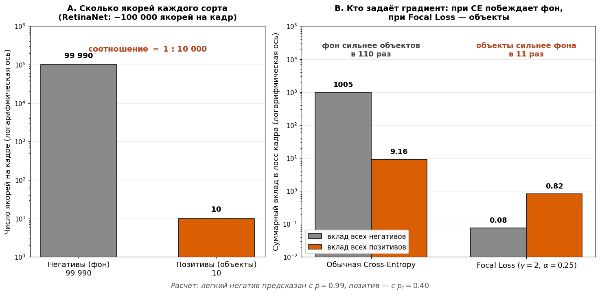
Панель A (слева) — сколько якорей каждого сорта на кадре, ось Y логарифмическая: серый столбик негативов доходит до 99 990, оранжевый столбик позитивов — до 10, соотношение примерно 1 : 10 000. Панель B (справа) — суммарный вклад в лосс, ось Y тоже логарифмическая, серым вклад всех негативов, оранжевым вклад всех позитивов. Левая пара столбиков — обычная кросс-энтропия: 1005 против 9.16, фон сильнее объектов в 110 раз. Правая пара — Focal Loss с $\gamma=2$ и $\alpha=0.25$: 0.08 против 0.82, объекты сильнее фона в 11 раз. Расчёт сделан для лёгкого негатива с $p = 0.99$ и позитива с $p_t = 0.40$. - Hard negative mining — вручную отобрать самые трудные негативы (с наибольшим лоссом) и учиться только на них.
- Фиксированное соотношение 1 : 3 в SSD: на каждый позитив берутся три худших негатива, остальные выбрасываются.
- OHEM (Online Hard Example Mining) — то же самое, но пересчитывается на каждом батче.
Все три — жёсткий отбор с гиперпараметрами. Focal Loss делает то же самое плавно: ничего не выбрасывается, просто лёгким примерам назначается почти нулевой вес.
При старте обучения сеть выдаёт $p \approx 0.5$ на всех $100\,000$ якорях, и суммарный лосс от негативов взрывается. RetinaNet решает это специальной инициализацией bias последнего слоя:
$$b = -\log \frac{1 - \pi}{\pi}, \qquad \pi = 0.01$$
то есть сеть с самого начала считает, что вероятность объекта в любой позиции $\approx 1\%$. Без этого первые итерации расходятся — типичная ошибка при самостоятельной реализации.
Лоссы за координаты бокса
Простейший вариант — регрессировать четыре числа и штрафовать разницу. У него две беды:
- Зависимость от масштаба. Ошибка в 10 пикселей на боксе $20 \times 20$ — катастрофа, на боксе $500 \times 500$ — незаметна. А лосс в обоих случаях одинаков, значит крупные объекты перетягивают обучение на себя.
- Расхождение с метрикой. Оценивают детектор по IoU и mAP, а оптимизируют сумму по четырём независимым координатам. Четыре одинаковых по $L_1$ ошибки могут дать очень разный IoU.
Первую беду частично лечат нормировкой: координаты предсказывают не в пикселях, а в долях от размера якоря.
Компромисс между $L_2$ (гладкий, но взрывается на выбросах) и $L_1$ (устойчивый, но с изломом в нуле):
$$\text{Smooth}L_1(x) = \begin{cases} \dfrac{0.5 x^2}{\beta}, & |x| < \beta \\[6pt] |x| - 0.5\beta, & \text{иначе} \end{cases}$$
где $x$ — ошибка по одной координате, а $\beta$ — порог переключения ($\beta = 1$ в Faster R-CNN, $\beta = 1/9$ в RetinaNet).
То есть при малых ошибках функция ведёт себя как квадратичная и даёт затухающий градиент около нуля, а при больших — как линейная, поэтому грубые промахи и ошибки разметки не разносят обучение. Это ровно Huber loss с точностью до масштабирования.
Логичный шаг — сделать лоссом саму метрику: $L = 1 - \text{IoU}$. Такой лосс инвариантен к масштабу и учитывает четыре координаты совместно.
Беда в том, что у непересекающихся боксов $\text{IoU} = 0$ при любом расстоянии между ними — градиент нулевой, учиться не на чем. Это чинят GIoU (добавляет штраф за пустоту в объемлющем прямоугольнике), DIoU (штраф за расстояние между центрами) и CIoU (плюс штраф за расхождение соотношений сторон). Геометрия всех четырёх разобрана в вопросе про IoU и NMS.
Distribution Focal Loss (из Generalized Focal Loss, используется в YOLOv8) исходит из наблюдения: граница объекта часто объективно размыта — где именно кончается размытая в движении рука или край тени?
Вместо одного числа сеть предсказывает дискретное распределение по $n + 1$ возможным положениям границы (обычно $n = 16$), а итоговая координата — матожидание:
$$\hat{y} = \sum_{i=0}^{n} P(y_i) \cdot y_i$$
Сам DFL — это кросс-энтропия, которая толкает вероятностную массу к двум соседним корзинам, между которыми лежит истинная граница $y$:
$$\text{DFL} = -\big[(y_{i+1} - y)\log P(y_i) + (y - y_i)\log P(y_{i+1})\big]$$
Побочный, но ценный эффект: по «остроте» распределения видно, насколько сеть уверена в границе, и это можно использовать как отдельный сигнал качества.
Назначение таргетов: то, что решает больше лосса
Назначение таргетов — правило, по которому каждая из $\sim 100\,000$ позиций объявляется позитивной (отвечает за конкретный GT-объект), негативной (фон) или игнорируемой.
Это делается до вычисления лосса и определяет, чему сеть вообще будет учиться. Ошибка здесь не лечится никакой функцией потерь: если позиция помечена фоном, сеть будет старательно учиться не видеть там объект.
Правило простое: якорь позитивен, если его IoU с каким-нибудь GT выше верхнего порога; негативен, если IoU со всеми GT ниже нижнего порога; в промежутке — игнорируется (не даёт градиента вовсе, чтобы не путать сеть пограничными случаями).
Пороги у разных моделей свои: в RPN у Faster R-CNN это $0.7$ и $0.3$ (плюс страховка: за каждым GT принудительно закрепляется якорь с максимальным IoU, даже если он не дотянул до $0.7$), а на второй стадии RoI считается позитивным при $\text{IoU} \geq 0.5$. У RetinaNet — $0.5$ и $0.4$, то есть зона игнорирования узкая.
Слабое место — порог фиксирован и одинаков для всех объектов. У большого объекта таких якорей десятки, у маленького или вытянутого может не оказаться ни одного.
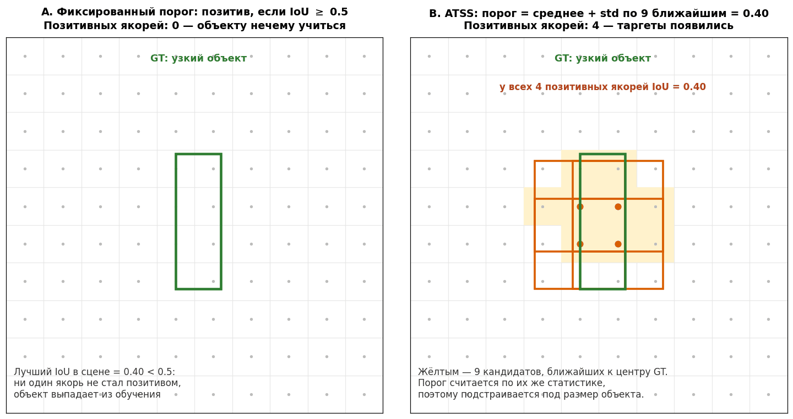
Одна сцена, два правила назначения; зелёным в обеих панелях — GT-бокс узкого вытянутого объекта, серые точки — центры клеток сетки. Слева (A) фиксированный порог IoU $\geq$ 0.5: лучший IoU в сцене равен всего 0.40, поэтому позитивных якорей ноль и объект полностью выпадает из обучения. Справа (B) ATSS: жёлтым залиты 9 клеток-кандидатов, ближайших к центру GT; порог считается как среднее плюс стандартное отклонение их IoU и получается равным 0.40, после чего позитивными становятся 4 якоря (оранжевые квадраты с оранжевыми точками центров), у всех IoU = 0.40. Порог подстроился под размер объекта вместо того, чтобы отбросить его. ATSS (Adaptive Training Sample Selection, 2020) убирает магическое число. Для каждого GT-объекта берутся $k$ ближайших по центру якорей на каждом уровне FPN, и порог вычисляется по их же статистике:
$$t_g = \text{mean}(\text{IoU кандидатов}) + \text{std}(\text{IoU кандидатов})$$
Смысл прост: у крупного объекта IoU кандидатов высокие — порог сам поднимается и отбирает только лучших; у мелкого или вытянутого все IoU низкие — порог опускается, и позитивы всё равно находятся.
Замена max-IoU на ATSS даёт около $+1.5$ AP на COCO без единого изменения в архитектуре и лоссе.
Следующий шаг — заметить, что хороший позитив это не только высокий IoU, но и позиция, где сеть уже уверена в классе.
- SimOTA (YOLOX) формулирует назначение как задачу оптимального транспорта: стоимость пары «якорь — объект» складывается из классификационной и локализационной части, а число позитивов на объект динамическое (сумма топ-10 IoU).
- TAL (Task Alignment Learning, YOLOv8) ранжирует кандидатов по совместной оценке $t = s^{\alpha} \cdot u^{\beta}$, где $s$ — предсказанная вероятность класса, $u$ — IoU с GT.
Обе схемы зависят от текущих предсказаний сети и меняются по ходу обучения — назначение перестало быть чисто геометрическим правилом.
Функция потерь определяет, насколько сильно штрафовать ошибку. Назначение определяет, что вообще считается ошибкой. Второе первичнее.
Наглядно: если узкий объект не получил ни одного позитивного якоря (панель A на картинке выше), то сеть на каждой итерации получает сигнал «здесь фона» — и никакой CIoU вместо Smooth $L_1$ этого не исправит, потому что регрессионное слагаемое для этого объекта просто не считается.
Отсюда практическое правило: замена Smooth $L_1$ на CIoU обычно даёт доли пункта AP, а переход с max-IoU на ATSS или TAL — полтора-два пункта. Если качество не растёт, сначала смотрите на статистику позитивов, а не на лосс.
YOLOv8 (anchor-free, TAL, три слагаемых):
$$L = 7.5 \cdot L_{\text{CIoU}} + 0.5 \cdot L_{\text{BCE}} + 1.5 \cdot L_{\text{DFL}}$$
Веса выглядят произвольными, но у них есть смысл: слагаемые имеют разный численный масштаб (BCE по десяткам тысяч позиций против CIoU по десяткам позитивов), и $\lambda$ уравнивают их вклад в градиент.
Практический совет: подбирать эти веса вручную почти никогда не окупается. Гораздо больше даёт проверка того, сколько позитивов реально назначается на объект — если в среднем меньше одного, проблема не в весах.
- «Дисбаланс решается взвешиванием классов». Взвешивание помогает при перекосе между классами объектов. Здесь перекос между объектом и фоном в $10^3$–$10^4$ раз, и обычные веса классов его не берут — нужны Focal Loss или отбор примеров.
- Включить Focal Loss без правки инициализации bias. Первые итерации расходятся; лечится $b = -\log\frac{1-\pi}{\pi}$ при $\pi = 0.01$.
- Считать $L = 1 - \text{IoU}$ универсальной заменой Smooth $L_1$. На непересекающихся боксах градиент нулевой; в чистом виде IoU-лосс не обучается с нуля, нужны GIoU/DIoU/CIoU.
- Считать позитивами всё, что попало внутрь GT-бокса. Точки у самого края дают косые предсказания; их отсекают centerness (FCOS), центральная область (center sampling) или качественная оценка в TAL.
- Игнорировать «игнорируемые» якоря. Промежуточная зона (у RetinaNet — IoU между 0.4 и 0.5) введена намеренно: если пограничные случаи помечать фоном, сеть учится подавлять почти правильные предсказания.
- Подбирать $\lambda$ вместо проверки assignment. Самая частая причина «модель не учится» — объекты, которым не досталось ни одного позитива.
В чём главная особенность обучения детектора по сравнению с классификацией?
Экстремальный дисбаланс фон/объект: на кадре $\sim 100\,000$ якорей и около десятка объектов, то есть соотношение порядка 1 : 1000. При обычной кросс-энтропии суммарный вклад лёгких негативов превышает вклад позитивов примерно в 110 раз, и градиент состоит почти целиком из уточнения фона.
Что конкретно даёт Focal Loss в детекции?
Множитель $(1 - p_t)^\gamma$ при $\gamma = 2$ снижает вклад уверенно распознанного негатива ($p = 0.99$) в $10^4$ раз, а вклад позитива с $p_t = 0.4$ — менее чем втрое. В приведённом примере соотношение переворачивается: объекты начинают весить в 11 раз больше фона. Обязательная деталь — инициализация bias последнего слоя $b = -\log\frac{1-\pi}{\pi}$ при $\pi = 0.01$, иначе первые итерации расходятся.
Почему не регрессировать координаты обычным $L_2$?
$L_2$ зависит от масштаба (одна и та же ошибка в пикселях критична для мелкого бокса и незаметна для крупного), взрывается на выбросах разметки и оптимизирует четыре координаты независимо, тогда как метрика — IoU, зависящий от них совместно. Практический компромисс — Smooth $L_1$ (квадратичная при $|x| < \beta$, линейная дальше) или IoU-семейство.
Зачем нужны GIoU/DIoU/CIoU, если есть IoU?
У непересекающихся боксов $\text{IoU} = 0$ независимо от расстояния между ними, поэтому градиент лосса $1 - \text{IoU}$ равен нулю и обучение стоит. GIoU добавляет штраф за пустоту в минимальном объемлющем прямоугольнике, DIoU — за расстояние между центрами, CIoU — ещё и за расхождение соотношений сторон.
Что такое DFL и зачем предсказывать распределение вместо числа?
Distribution Focal Loss предсказывает дискретное распределение по $n+1$ возможным положениям границы, а координатой берёт его матожидание $\hat{y} = \sum_i P(y_i) y_i$. Границы объектов часто объективно размыты, и распределение это отражает: сам лосс толкает вероятностную массу к двум корзинам, между которыми лежит истинная граница. Побочно острота распределения показывает уверенность сети в границе.
Что важнее — функция потерь или назначение таргетов, и почему?
Назначение. Лосс задаёт, насколько сильно штрафовать ошибку, а назначение — что вообще считается ошибкой. Если узкий объект не набрал IoU $\geq 0.5$ ни с одним якорем, у него нет позитивов, регрессионное слагаемое для него не считается, и никакой CIoU этого не исправит. Численно: замена Smooth $L_1$ на CIoU даёт доли пункта AP, а переход с max-IoU на ATSS — около $+1.5$ AP без изменений в архитектуре.
-
Детекция на практике: мелкие объекты, толпа, домен
Постановка детекции, IoU и NMS, mAP, архитектуры и лоссы разобраны отдельно. Здесь — то, что отличает работающий детектор от обученного: набор ситуаций, в которых стандартный пайплайн ломается, и приёмов, которыми это лечат.
Все они сводятся к четырём вопросам:
- Что делать, когда объекты слишком мелкие для входного разрешения?
- Что делать, когда объекты сильно перекрываются?
- Что делать, когда рамка плохо описывает форму объекта?
- Что делать, когда данные на инференсе не такие, как на обучении?
Мелкие объекты
COCO даёт три разреза по площади бокса: $AP_S$ (менее $32^2$ px), $AP_M$, $AP_L$. Типичная картина у современного детектора: $AP_L \approx 0.60$, $AP_M \approx 0.45$, $AP_S \approx 0.25$. Разрыв между большими и мелкими объектами — больше чем вдвое, и он не сокращается сменой архитектуры.
Три причины, и все три структурные:
- Ресайз. Кадр $4000 \times 3000$ подаётся в сеть как $640 \times 480$. Масштаб $0.16$: объект в $60$ пикселей превращается в $10$. Информации в нём почти не остаётся.
- Страйды. К последним слоям backbone разрешение падает в $32$ раза. Объект в $10$ пикселей на входе занимает треть одной ячейки финальной карты признаков. Даже FPN, поднимающий признаки на уровни со страйдом $8$ и $4$, спасает лишь частично.
- Назначение таргетов. Anchor-based детектор назначает якорь объекту по IoU. У мелкого объекта IoU с любым якорем низкий — объект просто не получает ни одного положительного якоря и не участвует в обучении. Anchor-free детекторы страдают меньше, но и у них мелкий объект даёт мало положительных точек.
Прямое решение — не ресайзить кадр целиком, а разрезать его на перекрывающиеся тайлы и детектировать в каждом отдельно.
Схема:
- Разрезать кадр на сетку тайлов с перекрытием $15$–$25\,\%$. Перекрытие обязательно: объект на границе тайла иначе будет обрезан в обоих и не найден ни в одном.
- Прогнать детектор по каждому тайлу как по обычной картинке.
- Пересчитать координаты боксов из системы тайла в систему полного кадра.
- Свести все боксы вместе и прогнать глобальный NMS, чтобы убрать дубли из зон перекрытия.
SAHI (Slicing Aided Hyper Inference) — популярная реализация этой схемы, которая дополнительно прогоняет детектор по полному кадру и объединяет результат с тайловым: так крупные объекты, не влезающие в тайл, тоже находятся.
Цена — время инференса растёт пропорционально числу тайлов. При сетке $4 \times 3$ это в $12$ раз (плюс проход по полному кадру). Поэтому tiling применяют там, где счёт идёт на кадры в минуту, а не в секунду: аэрофотосъёмка, спутники, инспекция по фото.
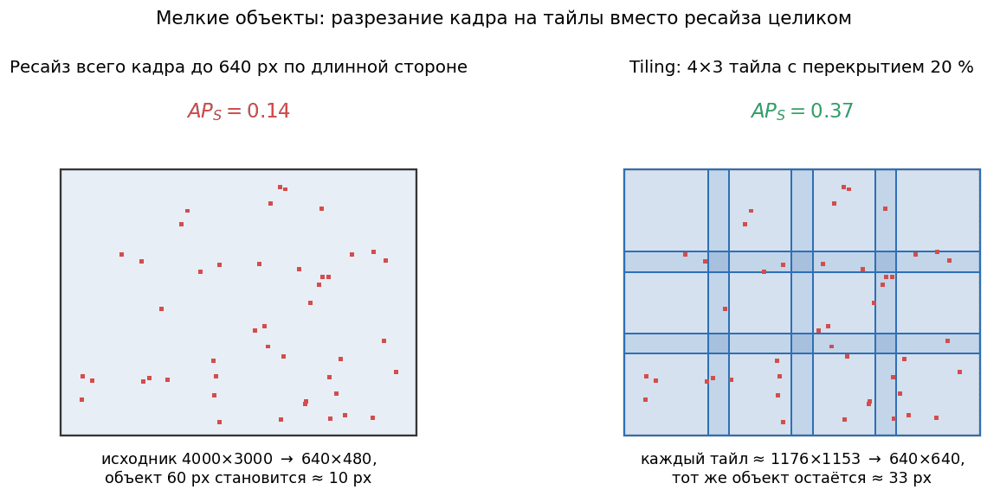
Две схемы одного и того же аэрокадра, изображённого светло-голубым прямоугольником с 45 разбросанными красными точками-объектами. Слева ресайз всего кадра до 640 пикселей по длинной стороне: исходник 4000×3000 сжимается до 640×480, объект размером 60 px становится примерно 10 px, сверху красным подписано AP_S = 0.14. Справа тот же кадр разрезан синей сеткой на 4×3 тайла с перекрытием 20 процентов — зоны перекрытия видны как более тёмные полосы; каждый тайл размером примерно 1176×1153 ресайзится до 640×640, и тот же объект остаётся примерно 33 px, сверху зелёным подписано AP_S = 0.37. Отношение размеров объекта 33 к 10 в точности равно коэффициенту разрезания. - Просто поднять разрешение входа. С $640$ до $1280$ — вчетверо больше пикселей, вчетверо больше вычислений и вчетверо меньше batch size при той же памяти. Работает всегда, но упирается в железо.
- Использовать более мелкие уровни FPN. Добавить уровень $P_2$ со страйдом $4$: сильно дороже по памяти, но именно там живут мелкие объекты. Механика понижения разрешения разобрана в пулинге.
- Пересмотреть якоря. Если якоря заданы вручную, их размеры должны покрывать реальное распределение размеров объектов в вашем датасете, а не в COCO. Кластеризация размеров боксов $k$-means — базовый приём.
- Копировать мелкие объекты (copy-paste augmentation). Вырезать мелкие объекты и вклеивать их в другие места кадра, увеличивая число положительных примеров.
Толпа и перекрытия
NMS устроен так: отсортировать боксы по score и удалять те, у которых IoU с уже принятым боксом выше порога $\tau_{\text{NMS}}$ (обычно $0.5$).
Скрытое допущение: если два бокса сильно пересекаются, это один объект, найденный дважды. В плотной сцене допущение неверно. Два человека в толпе, стоящие вплотную, дают рамки с $\text{IoU} = 0.6$–$0.7$ по разметке. NMS с порогом $0.5$ гарантированно удалит одного из них, и это будет засчитано как пропуск.
Получается вилка:
- Понизить порог NMS ($0.3$) — больше подавления, меньше дубликатов, но ещё больше пропусков в толпе.
- Повысить порог ($0.7$) — меньше пропусков, но дубликаты выживают и становятся false positive, роняя precision.
Единственно правильного значения нет: порог NMS — гиперпараметр, который подбирается на валидации под конкретную сцену, ровно как порог уверенности.
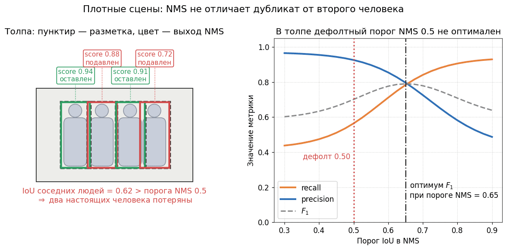
Две панели. Слева схема плотной сцены: четыре серых силуэта людей стоят вплотную на светлом фоне, каждый обведён чёрным пунктирным прямоугольником разметки; поверх наложены боксы детектора — два зелёных с подписями score 0.94 и score 0.91 оставлены, два красных с подписями score 0.88 и score 0.72 подавлены. Внизу красным: IoU соседних людей = 0.62 больше порога NMS 0.5, значит два настоящих человека потеряны. Справа график с линейными осями: по горизонтали порог IoU в NMS от 0.3 до 0.9, по вертикали значение метрики. Оранжевая кривая recall растёт с 0.44 до 0.93, синяя кривая precision падает с 0.97 до 0.49, серая пунктирная F1 имеет максимум при пороге 0.65 — он отмечен чёрной штрихпунктирной вертикалью. Красная точечная вертикаль на 0.50 показывает значение по умолчанию, которое в этой сцене заметно хуже оптимального. Soft-NMS. Вместо удаления пересекающегося бокса его score понижается пропорционально IoU:
$$s_i \leftarrow s_i \cdot e^{-\text{IoU}(\mathbf{b}_i, \mathbf{b}_{\max})^2 / \sigma}$$
Бокс не исчезает совсем, а опускается в ранжировании. Если он всё-таки был вторым человеком, он останется в выдаче с меньшим score и может пройти по итоговому порогу. Даёт $+1$–$2$ пункта mAP на плотных сценах бесплатно.
Repulsion loss и CrowdDet. Специальные лоссы, которые явно штрафуют предсказание за приближение к чужому истинному боксу. Заставляют сеть выдавать боксы, привязанные к «своему» объекту, а не размазанные между двумя соседями.
Set prediction без NMS. DETR и его наследники предсказывают фиксированное множество объектов с венгерским назначением один-к-одному. NMS в них не нужен вовсе — а значит, нет и его проблемы в толпе. Это главный практический аргумент в пользу DETR-подобных моделей на плотных сценах.
Флаг
iscrowd. В COCO области с неразличимой толпой размечены одним боксом с флагомiscrowd=1и исключаются из подсчёта false positive. Если вы размечаете свой датасет с плотными сценами, аналогичный механизм стоит завести — иначе метрика будет наказывать модель за верные детекции внутри толпы.Форма рамки
Стандартный бокс выровнен по осям (axis-aligned). Для вытянутого объекта под углом он катастрофически неинформативен: рамка вокруг наклонённого на $45°$ корабля содержит примерно вдвое больше фона, чем объекта. Следствия:
- IoU между разметкой и предсказанием низкий даже при визуально точной локализации;
- рамки соседних объектов сильно пересекаются, и NMS удаляет верные детекции;
- отношение сторон уходит далеко за пределы якорей, рассчитанных на COCO.
Где это критично: аэро- и спутниковая съёмка (корабли, самолёты, автомобили на парковке), детекция текста и таблиц в документах, инспекция протяжённых дефектов (трещины, сварные швы), сцены со стеллажами.
Решение — повёрнутые боксы (OBB, oriented bounding box). Выход расширяется до пяти чисел $(x, y, w, h, \theta)$ или до четырёх углов. Что меняется в пайплайне:
- IoU считается как площадь пересечения многоугольников, а не прямоугольников;
- NMS становится rotated NMS;
- лосс сталкивается с разрывом по углу: $\theta = 89°$ и $\theta = -89°$ описывают почти одинаковую рамку, но численно далеки. Лечится либо параметризацией через $(\sin 2\theta, \cos 2\theta)$, либо гауссовыми лоссами (GWD, KLD), которые сравнивают боксы как двумерные гауссианы и разрыва не имеют;
- разметка дороже: разметчик рисует четырёхугольник, а не тянет прямоугольник.
Датасеты и модели: DOTA, HRSC2016 как бенчмарки; отдельные головы вроде
yolo-obbв современных фреймворках.Разрешение против батча
Память GPU при обучении расходуется в основном на активации, а они пропорциональны $B \cdot H \cdot W$. Значит, при фиксированной карте:
$$B \cdot H \cdot W \approx \text{const}$$
Удвоив сторону входа, вы вчетверо уменьшаете batch size. Это не бесплатно:
- маленький батч ломает BatchNorm. При $B = 2$ статистики по батчу шумные, и BN начинает мешать. Лечится переходом на GroupNorm, синхронизированным BN между GPU (SyncBN) или заморозкой BN-статистик (Frozen BN — стандарт в детекции);
- маленький батч требует пересмотра learning rate. Эмпирическое линейное правило: уменьшили батч вдвое — уменьшите LR вдвое;
- шаги становятся шумнее, обучение — дольше по числу эпох.
Практический порядок действий:
- Начать с разрешения, при котором самый мелкий объект, который надо находить, занимает хотя бы $20$–$30$ пикселей. Это считается из данных, а не угадывается.
- Если такое разрешение не влезает — включить накопление градиентов (gradient accumulation) и mixed precision.
- Если и это не помогает — переходить на tiling: он даёт эффект большого разрешения при малом входе сети.
- Не решать проблему уменьшением разрешения: потерянный на ресайзе объект не восстановит никакая архитектура.
Аугментации, ломающие боксы
Общее правило — аугментация обязана трансформировать таргет вместе с картинкой. В детекции есть дополнительные тонкости:
- Кроп. Объекты, от которых после кропа осталось менее $\approx 20$–$30\,\%$ площади, надо выбрасывать, а не оставлять с обрезанной рамкой. Иначе сеть учится детектировать край объекта как объект целиком.
- Поворот на произвольный угол. Осевая рамка после поворота раздувается: описанный прямоугольник вокруг повёрнутого прямоугольника всегда больше исходного. Многократные повороты систематически увеличивают боксы. Для осевых боксов безопасны только повороты на $90°$ и отражения.
- Mosaic (склейка четырёх картинок в одну, стандарт в YOLO). Мощная аугментация, но создаёт много обрезанных объектов на швах; почти всегда её отключают на последних эпохах обучения.
- MixUp в детекции. Работает не как в классификации: боксы обеих картинок объединяются, а не смешиваются. Иногда помогает, часто мешает.
- Copy-paste. Вырезать объект по маске и вклеить в другой кадр. Один из лучших приёмов для редких классов и мелких объектов, но требует масок, а не только боксов.
Доменный сдвиг
Детектор, обученный на данных одной камеры, на другой обычно теряет от $10$ до $30$ пунктов mAP. Что именно меняется:
- оптика: фокусное расстояние, дисторсия, глубина резкости $\to$ другие видимые размеры и формы объектов;
- сенсор и ISP: шум, баланс белого, гамма, компрессия JPEG;
- ракурс и высота установки: объекты выглядят иначе, меняется типичное отношение сторон;
- условия съёмки: время суток, погода, тип освещения (дневной свет против натриевых ламп);
- состав сцены: другой фон, другая плотность объектов, другое распределение классов.
Что помогает:
- фотометрические аугментации — самое дешёвое и самое действенное: яркость, контраст, насыщенность, гамма, шум, размытие, JPEG-артефакты. Они прямо моделируют разброс между сенсорами;
- разнообразие источников в обучении. Данные с пяти камер обобщаются на шестую заметно лучше, чем данные с одной, даже при том же общем объёме;
- валидация по камерам (leave-one-camera-out) — единственный способ узнать величину падения до выката, а не после;
- дообучение на небольшой выборке с новой камеры. Несколько сотен размеченных кадров обычно возвращают большую часть потерянной метрики;
- тестовая нормализация статистик. Пересчитать статистики BatchNorm на неразмеченных данных целевой камеры — приём, который иногда даёт несколько пунктов бесплатно.
Вопрос: «У нас детектор дефектов на конвейере, mAP на валидации $0.62$, а после установки на вторую линию упал до $0.38$. Что делаете?»
Ответ по шагам:
- Диагностика, а не переобучение. Посмотреть на разрезы: упал $AP_S$ (изменился масштаб — другая высота камеры) или упал по всем размерам (изменилась картинка — другой сенсор или свет)? Упал recall или precision?
- Посмотреть глазами на 50 кадров с новой линии рядом с 50 кадрами со старой. Половина проблем видна сразу.
- Проверить простые гипотезы: другое разрешение камеры и, значит, другой эффективный масштаб объектов; другой формат сжатия; другой ракурс.
- Дешёвые лечения по порядку: усилить фотометрические аугментации и переобучить; пересчитать BN-статистики на новых данных; подобрать пороги score и NMS отдельно для новой линии.
- Если не хватило — разметить $300$–$500$ кадров с новой линии и дообучить. Обычно этого достаточно.
- Организационный вывод: валидация с самого начала должна была быть по линиям, а не случайной, — тогда падение было бы известно заранее.
- Уменьшать разрешение ради скорости при мелких объектах. Информация теряется безвозвратно, никакая архитектура её не вернёт.
- Оставлять порог NMS равным $0.5$ в плотных сценах. В толпе он удаляет настоящие объекты. Порог подбирается на валидации, как и порог уверенности.
- Считать любой сильно пересекающийся бокс дубликатом. В толпе два человека дают IoU $0.6$–$0.7$ по разметке.
- Использовать осевые боксы для наклонённых вытянутых объектов. Рамка вокруг корабля под $45°$ состоит из фона больше чем наполовину; нужны повёрнутые боксы.
- Поворачивать картинку на произвольный угол при осевых боксах. Рамки раздуваются на каждом повороте, разметка систематически портится.
- Не выбрасывать обрезанные кропом объекты. Сеть учится считать краешек объекта полноценным объектом.
- Оставлять якоря от COCO на своих данных. Распределение размеров и отношений сторон у вас другое; якоря считаются по вашему датасету.
- Валидироваться случайным сплитом при нескольких камерах. Падение на новой камере обнаруживается уже в продакшене.
- Смотреть только на общий mAP. Разрезы $AP_S / AP_M / AP_L$ и $AR@100$ говорят, что именно чинить; одно число этого не говорит.
Почему детекторы плохо находят мелкие объекты и что с этим делают?
Три структурные причины: ресайз кадра (объект в 60 px при масштабе 0.16 превращается в 10 px), страйды backbone (к последним слоям разрешение падает в 32 раза, и объект занимает треть ячейки карты признаков) и назначение таргетов (у мелкого объекта низкий IoU с любым якорем, поэтому он не получает положительных примеров). Типичный разрыв на COCO: $AP_L \approx 0.60$ против $AP_S \approx 0.25$. Лечится повышением разрешения входа, добавлением мелких уровней FPN, пересчётом якорей по своему датасету, copy-paste-аугментацией мелких объектов и, радикально, тайлингом.
Как устроен tiling и в чём его цена?
Кадр режется на сетку тайлов с перекрытием 15–25 процентов, детектор прогоняется по каждому тайлу отдельно, координаты боксов пересчитываются в систему полного кадра, затем всё сводится глобальным NMS для удаления дублей из зон перекрытия. SAHI дополнительно прогоняет детектор по полному кадру, чтобы найти крупные объекты, не влезающие в тайл. Перекрытие обязательно, иначе объект на границе будет обрезан в обоих соседних тайлах. Цена — время инференса растёт пропорционально числу тайлов, поэтому приём применяют в аэросъёмке и инспекции по фото, а не в реальном времени.
Почему NMS ломается в толпе и какие есть альтернативы?
NMS исходит из допущения, что сильно пересекающиеся боксы — это один объект, найденный дважды. В плотной сцене два человека, стоящие вплотную, дают по разметке IoU 0.6–0.7, и NMS с порогом 0.5 гарантированно удаляет одного из них как «дубликат». Понижение порога усугубляет пропуски, повышение оставляет настоящие дубликаты. Альтернативы: Soft-NMS, который не удаляет бокс, а понижает его score пропорционально IoU; специальные лоссы вроде repulsion loss и CrowdDet; DETR-подобные модели с венгерским назначением один-к-одному, которым NMS не нужен вовсе; флаг iscrowd в разметке, исключающий области толпы из подсчёта ложных срабатываний.
Когда нужны повёрнутые боксы и что меняется в пайплайне?
Когда объекты вытянуты и произвольно ориентированы: корабли и самолёты на аэроснимках, текст и таблицы в документах, трещины и сварные швы. Осевая рамка вокруг наклонённого на 45 градусов объекта содержит больше фона, чем объекта, IoU низкий даже при точной локализации, а рамки соседей сильно пересекаются. Выход расширяется до $(x, y, w, h, \theta)$ или четырёх углов; IoU считается как пересечение многоугольников, NMS становится rotated NMS; лосс сталкивается с разрывом по углу между $89°$ и $-89°$, что лечится параметризацией через $\sin 2\theta, \cos 2\theta$ или гауссовыми лоссами GWD и KLD; разметка дороже, потому что рисуется четырёхугольник.
Как связаны входное разрешение и размер батча и как выбирать компромисс?
Активации при обучении пропорциональны $B \cdot H \cdot W$, поэтому при фиксированной памяти удвоение стороны входа вчетверо уменьшает батч. Маленький батч ломает BatchNorm (лечится GroupNorm, SyncBN или замороженным BN — стандартом в детекции), требует пропорционального снижения learning rate и делает шаги шумнее. Разрешение выбирают из данных: самый мелкий объект, который надо находить, должен занимать хотя бы 20–30 пикселей. Если не влезает — накопление градиентов и mixed precision, затем тайлинг. Уменьшать разрешение нельзя: потерянный объект не восстановит никакая архитектура.
Что такое доменный сдвиг между камерами и как его смягчить?
Смена камеры меняет оптику и дисторсию, шум и цветопередачу сенсора, ракурс и высоту установки, освещение и состав сцены; падение mAP составляет типично 10–30 пунктов. Помогают: фотометрические аугментации (яркость, контраст, гамма, шум, размытие, JPEG-артефакты) как самый дешёвый и действенный приём; разнообразие источников в обучении; валидация leave-one-camera-out, чтобы узнать величину падения до выката; дообучение на 300–500 размеченных кадрах с новой камеры; пересчёт BatchNorm-статистик на неразмеченных данных целевого домена; отдельный подбор порогов score и NMS под новую площадку.
-
Сегментация: семантическая, инстанс и паноптическая
Сегментация — это задача, в которой модель выдаёт ответ на каждый пиксель изображения, а не один ответ на всю картинку и не по одному ответу на объект.
Если совсем простыми словами: классификация отвечает на вопрос «что здесь изображено», детекция — «где примерно находятся объекты», а сегментация — «какому объекту или классу принадлежит вот этот конкретный пиксель». Для картинки $512 \times 512$ это $262\,144$ отдельных ответа вместо одного.
Формулировка «ответ на каждый пиксель» неполна: непонятно, надо ли отличать двух разных людей друг от друга и надо ли размечать небо и дорогу. Разные ответы на эти два вопроса дают три разные задачи с тремя разными форматами выхода, тремя наборами метрик и разной стоимостью разметки.
Постановка Что на выходе Различает экземпляры Размечает фон (stuff) Семантическая карта меток $H \times W$ нет да Instance набор масок объектов + класс + score да нет Паноптическая карта $H \times W$ + id сегмента да да Выход — одна карта меток размера $H \times W$: в каждой ячейке лежит номер класса от $0$ до $C-1$. Внутри сети это тензор $H \times W \times C$ логитов, поверх которого берётся $\arg\max$ по каналам.
Экземпляры не различаются: если три человека стоят вплотную, все их пиксели получат одну и ту же метку «человек», и на выходе это будет одна связная оранжевая область. Сосчитать по такой карте, сколько людей на кадре, нельзя.
Выход — набор масок переменной длины: для каждого найденного объекта своя бинарная маска, свой класс и свой score. Ровно как в детекции, только вместо прямоугольника — маска.
Два следствия: фон не размечается вообще (небо и дорога не являются объектами и в выходе не появляются), а маски разных объектов могут перекрываться — если один человек частично заслоняет другого, модель вправе выдать две пересекающиеся маски.
Выход — карта, в которой у каждого пикселя есть и класс, и id сегмента, причём каждый пиксель принадлежит ровно одному сегменту: ни дыр, ни перекрытий.
Классы делятся на два сорта. Things — счётные объекты (человек, машина, собака), у них есть отдельные экземпляры. Stuff — несчётные области (небо, дорога, трава, стена), у них экземпляров нет, вся область — один сегмент. Паноптика — это объединение двух предыдущих задач: things берутся из instance-сегментации, stuff — из семантической.
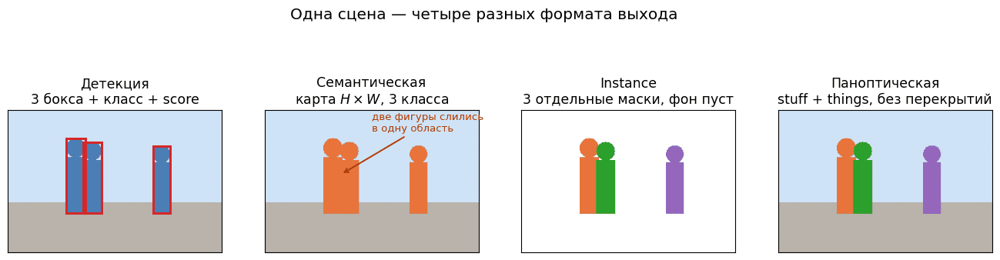
Одна и та же синтетическая сцена (небо, дорога, три человека) в четырёх форматах выхода. Слева направо: детекция — три красных прямоугольника поверх картинки; семантическая карта — три класса цветом, причём две левые фигуры стоят вплотную и слились в одну оранжевую область, экземпляры неразличимы; instance — три отдельные маски разных цветов (оранжевая, зелёная, фиолетовая), а фон белый, потому что в этой постановке он не размечается; паноптическая — те же три экземпляра разными цветами плюс размеченные небо и дорога, каждый пиксель ровно в одном сегменте. Пусть на кадре три человека, двое стоят вплотную.
- Семантическая ответит: «вот эта область — люди». Площадь посчитать можно, количество — нет: двое слипшихся дадут одну связную область.
- Instance ответит: «объект №1, объект №2, объект №3», каждый со своей маской. Ответ на вопрос «сколько людей» — три.
- Паноптическая ответит то же самое про людей плюс «вот это небо, вот это асфальт».
Отсюда практическое правило: если нужно считать объекты — семантической сегментации не хватит.
Чем сегментация отличается от детекции
Детекция описывает объект прямоугольником, выровненным по осям кадра. Для компактного объекта это разумно, но для вытянутого под углом или изогнутого прямоугольник почти не несёт информации о форме: внутри него преимущественно фон.
То есть бокс отвечает на вопрос «в этой части кадра что-то есть», а маска — «вот ровно эти пиксели и есть объект».
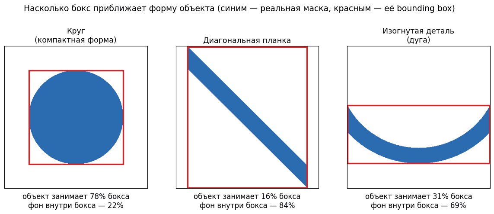
Три формы: синим — настоящая маска объекта, красной рамкой — её bounding box. Слева круг заполняет 78% площади бокса (фон — 22%), в середине диагональная планка заполняет лишь 16% (фон — 84%), справа изогнутая дуга заполняет 31% (фон — 69%). Для компактных объектов бокс — приличное приближение, для вытянутых под углом и изогнутых он почти целиком состоит из фона. Замер площади поля по спутниковому снимку: поле неправильной формы занимает $31\%$ площади своего бокса. Оценка площади по боксу завысит результат более чем втрое — такой ответ бесполезен.
То же с медициной: объём опухоли считается по маске, по боксу его оценить нельзя. И с промышленностью: длина царапины — это длина её маски, а бокс вокруг диагональной царапины на $84\%$ состоит из целого металла.
Маска содержит больше информации, но и стоит дороже по всем статьям — по разметке, по вычислениям (выход $H \times W \times C$ против нескольких чисел на объект) и по памяти. Если задача решается боксом, маска не нужна. Разбор этого выбора — в вопросе «Выбор постановки».
Формально семантическая сегментация — это классификация, применённая к каждому пикселю: та же кросс-энтропия, тот же softmax, только не один раз, а $H \cdot W$ раз.
Но одно отличие принципиально: ответы в соседних пикселях не независимы. Классификатор картинок волен ошибаться на отдельных примерах, а сегментатор, ошибающийся в отдельных пикселях, выдаёт «крапчатую» маску с дырами, непригодную для замера площади. Отсюда вся возня с многомасштабным контекстом и постобработкой границ.
Форматы разметки
Разметка хранится как изображение того же размера, где значение пикселя — индекс класса (0, 1, 2, …), а не цвет. Обычно это одноканальный PNG, иногда с палитрой для наглядного просмотра.
Формат для семантической сегментации: прост, читается одной строкой, но не различает экземпляры (все люди на карте — одно и то же число).
Объект задаётся списком координат вершин контура: $[x_1, y_1, x_2, y_2, \dots]$. Так устроена разметка объектов в COCO.
Плюс — компактность и разрешение-независимость (полигон можно растеризовать в любой размер). Минус — объекты с дырками или распавшиеся на несколько кусков (человек за столбом) требуют нескольких полигонов, и правила их сложения у разных инструментов различаются.
Маска разворачивается в одномерную последовательность и кодируется длинами подряд идущих одинаковых значений. Хранится не сама маска, а чередующиеся длины серий нулей и единиц, начиная с нулей.
Это стандартное представление масок в COCO, и именно в нём считаются площадь и пересечения масок — по сериям это делается за время, пропорциональное числу серий, а не числу пикселей.
Строка пикселей
0 0 0 0 0 1 1 1 1 1 0 0 0 0 0 1 1 1 1 1.Идём слева направо и записываем длины серий, начиная с нулей: 5 нулей, 5 единиц, 5 нулей, 5 единиц. Кодировка —
[5, 5, 5, 5]. Двадцать чисел превратились в четыре.Порядок величин на реальной маске: несжатая маска $1024 \times 1024$ — это $1\,048\,576$ значений (около 1 МБ в один байт на пиксель). У компактного объекта в ней порядка тысячи серий, то есть RLE — единицы килобайт, и он ложится прямо в JSON-аннотацию.
Разворачивание маски в одномерный массив в COCO идёт по столбцам (Fortran-порядок), а
numpyпо умолчанию разворачивает по строкам. Перепутанный порядок даёт маску, транспонированную относительно правильной, — и молча, без ошибки, если изображение квадратное. Это одна из самых частых ошибок при работе с COCO-масками вручную.Порядок цифр из практики: бокс — около 7 секунд на объект, аккуратный полигон — около 80 секунд, то есть примерно в десять раз дороже.
Отсюда типичный сценарий: сначала размечают боксы и обучают детектор, а на маски переходят, только когда доказано, что бокса для задачи не хватает. Полуавтоматическая разметка (модель предлагает маску, человек правит) сокращает разрыв, но не убирает его.
Где бокса принципиально мало
- Медицина. Объём опухоли, площадь поражения лёгких, границы органа перед операцией — всё это площади и объёмы, то есть счёт пикселей. Бокс не даёт ни того, ни другого.
- Спутники и агро. Площадь поля, границы вырубки, разлив нефти, длина дороги — контуры произвольной формы, никак не прямоугольные.
- Автопилот. Свободное пространство (drivable area) — это область произвольной формы, а не набор прямоугольников.
- Видеосвязь. Замена фона требует маски человека попиксельно: по боксу вырезался бы прямоугольник вместе с куском комнаты.
- Промышленный контроль. Царапины, трещины, потёки — тонкие вытянутые дефекты, у которых важна длина и площадь, а бокс вокруг них почти пустой.
- «Instance-сегментация — это семантическая плюс постобработка». Разделить слипшиеся объекты по семантической карте связными компонентами не выйдет: два касающихся человека дают одну компоненту. Экземпляры нужно предсказывать, а не выделять постфактум.
- «Паноптика — это просто объединение двух выходов». Наивное объединение даёт пиксели, попавшие в два сегмента сразу, и пиксели без сегмента. Паноптический формат требует непротиворечивого разбиения, и разрешение конфликтов — часть задачи.
- Считать объекты по семантической карте. Число связных компонент не равно числу объектов: слипшиеся сливаются, а объект за столбом распадается на два куска.
- Ресайзить маску билинейной интерполяцией. Индексы классов нельзя усреднять: между классом 1 и классом 3 получится «класс 2», которого в этом месте нет. Маски масштабируются только методом ближайшего соседа.
- Путать «фон» в instance и в семантике. В семантической карте фон — полноценный класс 0, который участвует в лоссе. В instance-постановке фона в разметке нет вообще.
Чем отличаются семантическая, instance- и паноптическая сегментация?
Семантическая выдаёт карту меток $H \times W$ и не различает экземпляры: три слипшихся человека — одна область. Instance выдаёт набор отдельных масок с классом и score, но не размечает фон, и маски могут перекрываться. Паноптическая размечает и things (счётные объекты, с разделением на экземпляры), и stuff (небо, дорога), причём каждый пиксель попадает ровно в один сегмент — без дыр и перекрытий.
Почему по семантической карте нельзя сосчитать объекты?
Потому что метка пикселя говорит только о классе, а не о том, какому именно объекту пиксель принадлежит. Два человека, стоящие вплотную, образуют одну связную область с одной и той же меткой, и алгоритм подсчёта связных компонент даст единицу вместо двойки. Обратная ошибка тоже возможна: один объект, заслонённый столбом, распадается на две компоненты.
Чем маска принципиально лучше бокса и когда это важно?
Бокс — прямоугольник, выровненный по осям, поэтому у вытянутых под углом и изогнутых объектов он состоит в основном из фона: у диагональной планки объект занимает лишь около 16% площади бокса, у дуги — около 31%, тогда как у круга — 78%. Как только задача требует площади, объёма, длины контура или попиксельного вырезания объекта — бокса не хватает: это медицина, спутниковые снимки, замена фона, контроль тонких дефектов.
Какие бывают форматы разметки масок и в чём разница?
PNG-маска — изображение, где значение пикселя есть индекс класса; проста, но не различает экземпляры. Полигон — список координат вершин контура, компактен и не привязан к разрешению, но требует нескольких контуров для объектов с дырами. RLE — кодирование длинами серий подряд идущих одинаковых значений; это стандарт COCO, он компактен, ложится в JSON и позволяет считать площади и пересечения по сериям, а не по пикселям.
Почему маску нельзя ресайзить билинейной интерполяцией?
Потому что в маске лежат индексы классов, а не интенсивности, и усреднять их бессмысленно: между классом 1 и классом 3 интерполяция даст класс 2, которого в этом месте нет вообще. Маски масштабируют только методом ближайшего соседа. Билинейно можно интерполировать карту вероятностей — то есть до взятия $\arg\max$, но не после.
Почему сегментацию не делают всегда, раз она информативнее детекции?
Из-за стоимости. Разметка аккуратного полигона занимает около 80 секунд на объект против примерно 7 секунд на бокс — порядка десятикратной разницы в цене датасета. К этому добавляются более тяжёлый выход $H \times W \times C$, больше вычислений и памяти. Поэтому на маски переходят тогда, когда доказано, что бокс задачу не решает.
-
Метрики сегментации: IoU, Dice, mIoU и PQ
Предсказание и разметка в сегментации — это два множества пикселей. Значит, и метрика должна сравнивать множества: насколько сильно они перекрываются.
Все метрики этого вопроса строятся из трёх чисел, посчитанных по пикселям: $TP$ — пиксели, которые модель отнесла к классу и они действительно этого класса; $FP$ — модель отнесла, а на самом деле нет (лишнее); $FN$ — не отнесла, а надо было (пропущенное). Определения самих $TP/FP/FN$ — в вопросе про метрики бинарной классификации.
Почему pixel accuracy бесполезна
Снимок $512 \times 512$ — это $262\,144$ пикселя. Пусть опухоль занимает $2\%$ кадра, то есть $5\,243$ пикселя; остальные $256\,901$ — фон.
Возьмём модель, которая на любом входе отвечает «весь кадр — фон». Она не нашла ни одного пикселя опухоли, но:
$$\text{pixel accuracy} = \frac{256\,901}{262\,144} \approx 0.98$$
Девяносто восемь процентов — у модели, которая не работает вообще. При этом $TP = 0$, поэтому $\text{IoU} = 0$ и $\text{Dice} = 0$: они показывают правду.
Pixel accuracy — это доля верно предсказанных пикселей по всему кадру, а кадр почти целиком состоит из фона. Метрика измеряет в основном то, насколько хорошо модель угадывает фон, а это тривиально.
То есть чем реже интересующий нас класс, тем сильнее accuracy завышена. Это в точности та же ловушка, что и accuracy при дисбалансе классов в обычной классификации, только доведённая до предела: в сегментации дисбаланс 1:50 и 1:1000 — норма, а не исключение.
IoU и Dice устроены иначе: в них вообще не входит $TN$ — количество верно угаданных фоновых пикселей. Поэтому раздуть их, угадывая фон, невозможно.
IoU и Dice
IoU (Intersection over Union) — отношение площади пересечения предсказанной маски $P$ и эталонной $G$ к площади их объединения:
$$\text{IoU} = \frac{|G \cap P|}{|G \cup P|} = \frac{TP}{TP + FP + FN}$$
То есть: сколько пикселей модель угадала, делённое на сколько пикселей вообще задействовано — и разметкой, и предсказанием. Значения от $0$ (не пересекаются) до $1$ (совпали).
Геометрия и матчинг по IoU для прямоугольников разбираются в вопросе про IoU и NMS; здесь формула та же, только вместо площадей прямоугольников — счёт пикселей произвольной формы.
Dice — удвоенное пересечение, делённое на сумму площадей:
$$\text{Dice} = \frac{2|G \cap P|}{|G| + |P|} = \frac{2\,TP}{2\,TP + FP + FN}$$
Ключевое наблюдение: это в точности $F_1$-мера, посчитанная по пикселям. Подставьте $\text{precision} = \frac{TP}{TP+FP}$ и $\text{recall} = \frac{TP}{TP+FN}$ в формулу $F_1 = \frac{2 \cdot P \cdot R}{P + R}$ — получится та же дробь. Поэтому всё, что известно про $F_1$, переносится на Dice без изменений.
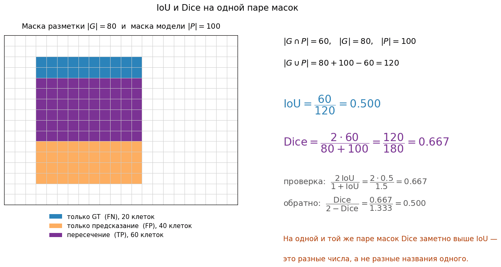
Слева на клетчатой сетке — две маски: синим показаны 20 клеток, которые есть только в разметке (FN), оранжевым — 40 клеток, которые есть только в предсказании (FP), фиолетовым — 60 клеток пересечения (TP). Итого разметка $|G| = 80$, предсказание $|P| = 100$. Справа расчёт: IoU $= 60/120 = 0.500$, Dice $= 120/180 = 0.667$ — на одной и той же паре масок два разных числа. Возьмём числа с картинки: $|G \cap P| = 60$, $|G| = 80$, $|P| = 100$, значит $TP = 60$, $FP = 40$, $FN = 20$.
$$\text{IoU} = \frac{60}{80 + 100 - 60} = \frac{60}{120} = 0.500, \qquad \text{Dice} = \frac{2 \cdot 60}{80 + 100} = \frac{120}{180} \approx 0.667$$
Эти две метрики жёстко связаны — по одной всегда восстанавливается другая:
$$\text{Dice} = \frac{2\,\text{IoU}}{1 + \text{IoU}}, \qquad \text{IoU} = \frac{\text{Dice}}{2 - \text{Dice}}$$
Проверка: $\frac{2 \cdot 0.5}{1.5} = 0.667$ и $\frac{0.667}{2 - 0.667} = 0.500$. Сходится.
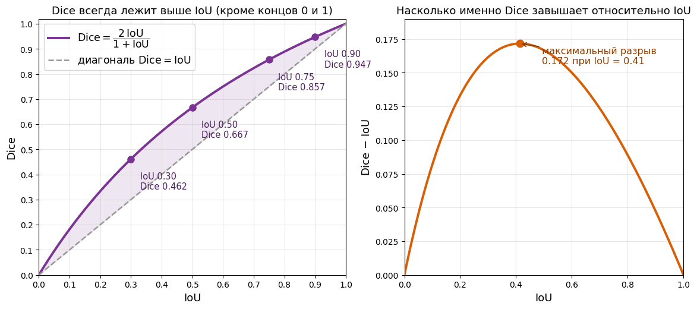
Слева фиолетовая кривая Dice как функция IoU лежит выше серой пунктирной диагонали Dice = IoU везде, кроме концов 0 и 1; отмечены точки IoU 0.30 → Dice 0.462, IoU 0.50 → Dice 0.667, IoU 0.75 → Dice 0.857, IoU 0.90 → Dice 0.947. Справа оранжевая кривая показывает саму разность Dice − IoU: она максимальна в середине диапазона и достигает 0.172 при IoU = 0.41, а к обоим концам обращается в ноль. Обе панели в линейных осях. Из формулы $\text{Dice} = \frac{2\,\text{IoU}}{1+\text{IoU}}$ следует, что при $0 < \text{IoU} < 1$ всегда $\text{Dice} > \text{IoU}$, причём разрыв максимален в середине диапазона.
Практический вывод: «Dice 0.90» и «IoU 0.90» — совсем не одно и то же. Dice $0.90$ соответствует IoU $\approx 0.82$, а IoU $0.90$ — это Dice $\approx 0.95$. Сравнивать две работы, одна из которых отчиталась в Dice, а другая в IoU, без пересчёта нельзя — разница легко достигает 10 пунктов на ровном месте.
Усреднение: mIoU
mIoU (mean IoU) — среднее значение IoU по классам: считается IoU отдельно для каждого класса, затем берётся обычное среднее по $C$ классам.
$$\text{mIoU} = \frac{1}{C}\sum_{c=1}^{C} \text{IoU}_c$$
Усреднение именно по классам, а не по пикселям, — принципиально: иначе редкие классы (светофор, велосипедист) утонули бы в частых (дорога, небо), и метрика снова превратилась бы в замаскированную pixel accuracy.
Есть два способа посчитать $\text{IoU}_c$ для класса, и они дают разные результаты:
- Накопительно по датасету (dataset-level). Суммируем $TP$, $FP$, $FN$ по всем изображениям, и только потом делим. Так считает Cityscapes и большинство бенчмарков семантической сегментации.
- Поизображенчески (image-level). Считаем IoU на каждом кадре, потом усредняем по кадрам.
Второй способ даёт каждому кадру одинаковый вес независимо от размера объекта, поэтому кадр с крошечным объектом влияет на итог так же сильно, как кадр с огромным. Числа расходятся заметно, и сравнивать значения, посчитанные разными способами, нельзя.
Если на кадре класса нет и модель его не предсказала, то $TP = FP = FN = 0$, и IoU $= 0/0$ — не определён. Конвенции в разных репозиториях разные:
- считать $1$ — модель ведь права, что ничего не нашла;
- пропустить класс в усреднении на этом кадре;
- считать $0$ — самый пессимистичный вариант.
Разброс между этими вариантами на датасете с редкими классами достигает нескольких пунктов mIoU. При поизображенческом усреднении проблема острая, при накопительном по датасету — почти не возникает, потому что нули складываются с ненулевыми вкладами других кадров. Всегда проверяйте, какая конвенция зашита в код, прежде чем сравнивать своё число с числом из статьи.
Границы: чего IoU не видит
Пусть объект — круг радиуса $100$ пикселей, площадь $\pi \cdot 100^2 \approx 31\,416$. Модель обвела его на $3$ пикселя уже: радиус $97$, площадь $\pi \cdot 97^2 \approx 29\,559$.
$$\text{IoU} = \frac{29\,559}{31\,416} \approx 0.94$$
Теперь тот же промах в 3 пикселя, но объект мелкий — радиус $10$ (площадь $\approx 314$), предсказан радиусом $7$ (площадь $\approx 154$):
$$\text{IoU} = \frac{154}{314} \approx 0.49$$
Одна и та же по абсолютной величине ошибка границы даёт $0.94$ на крупном объекте и $0.49$ на мелком. IoU почти не чувствует качество границы у больших объектов — потому что вклад приграничного кольца в общую площадь тем меньше, чем объект крупнее.
Boundary IoU считает обычный IoU, но не по всей маске, а только по приграничной полосе шириной $d$ пикселей у обеих масок: маска пересекается с полосой вдоль своего контура, и уже эти полосы сравниваются.
Смысл: метрика перестаёт зависеть от размера объекта и начинает измерять ровно то, что визуально считается «аккуратностью обводки». Её берут там, где важен контур — в медицине, при вырезании объекта для композитинга, в задачах измерения.
Instance и паноптика
Для instance-сегментации метрика — тот же mAP, что и в детекции, со всей механикой сортировки по score, PR-кривой и усреднения по порогам IoU (полный разбор с числовым примером — в вопросе про mAP).
Единственное отличие: при матчинге предсказания с эталоном IoU считается между масками, а не между прямоугольниками. Поэтому в отчётах по COCO рядом стоят две колонки — $AP^{bbox}$ и $AP^{mask}$, и $AP^{mask}$ всегда ниже: попасть маской точнее, чем боксом, труднее.
Для паноптической сегментации нужна метрика, которая одновременно наказывает и за неверную форму сегмента, и за лишние/пропущенные сегменты. Это PQ:
$$PQ = \underbrace{\frac{\sum_{(p,g) \in TP} \text{IoU}(p, g)}{|TP|}}_{SQ} \times \underbrace{\frac{|TP|}{|TP| + \frac{1}{2}|FP| + \frac{1}{2}|FN|}}_{RQ}$$
SQ (segmentation quality) — средний IoU по совпавшим парам сегментов: насколько аккуратно обведены те объекты, которые вообще нашлись. RQ (recognition quality) — это ровно $F_1$ по сегментам: сколько объектов нашлось и сколько придумалось лишних.
Разложение удобно тем, что сразу видно, где проблема: низкий SQ — модель находит объекты, но обводит их криво; низкий RQ — обводит хорошо, но теряет или выдумывает сегменты.
В паноптике сегмент предсказания и сегмент эталона считаются совпавшими, если $\text{IoU} > 0.5$. Этот порог выбран не случайно: при $\text{IoU} > 0.5$ у каждого эталонного сегмента может быть не более одного такого предсказания, поскольку два непересекающихся предсказания не могут одновременно перекрывать один сегмент более чем наполовину.
Поэтому в паноптике не нужен ни жадный матчинг, ни венгерский алгоритм: соответствие определено однозначно самим порогом. Это прямое следствие того, что паноптический выход не допускает перекрытий.
Пусть в эталоне 5 сегментов. Модель выдала 5 сегментов, из которых 3 совпали с эталонными (IoU $0.90$, $0.80$ и $0.75$), 2 оказались лишними ($FP = 2$), и 2 эталонных остались ненайденными ($FN = 2$).
$$SQ = \frac{0.90 + 0.80 + 0.75}{3} = \frac{2.45}{3} \approx 0.817$$
$$RQ = \frac{3}{3 + \frac{1}{2}\cdot 2 + \frac{1}{2}\cdot 2} = \frac{3}{5} = 0.600$$
$$PQ = 0.817 \times 0.600 \approx 0.49$$
Проверка, что $RQ$ — это $F_1$: $\frac{2 \cdot 3}{2 \cdot 3 + 2 + 2} = \frac{6}{10} = 0.6$. Совпало. Итоговые $0.49$ при среднем IoU найденных сегментов $0.82$ показывают, что модель обводит прилично, а вот находит плохо — и чинить надо recognition, а не границы.
- Отчитываться в pixel accuracy. При доле объекта в 2% тривиальная модель «весь кадр — фон» даёт 98%. Эта метрика не годится ни для чего, кроме грубого дебага.
- Сравнивать Dice с IoU напрямую. Dice систематически выше: Dice $0.90$ — это IoU $\approx 0.82$. Перед сравнением работ пересчитайте по формуле $\text{IoU} = \frac{\text{Dice}}{2-\text{Dice}}$.
- Не уточнять способ усреднения. «mIoU 0.78» без указания, накопительно по датасету или по кадрам, и как обработаны пустые маски, — число, которое невозможно воспроизвести.
- Считать, что высокий IoU означает аккуратные границы. У крупного объекта промах в 3 пикселя по контуру стоит около 6 пунктов IoU. Если важен контур — берите Boundary IoU.
- Путать $PQ$ с $mIoU$ по классам. $PQ$ работает на уровне сегментов (экземпляров), а не пикселей класса, и штрафует за лишние и потерянные объекты, чего mIoU не делает вовсе.
- Считать mIoU по классам, отсутствующим в валидации. Класс, которого нет ни на одном кадре валидации, при конвенции «считать 0» утянет mIoU вниз, а при конвенции «считать 1» — вверх, и оба числа бессмысленны.
Почему pixel accuracy не годится как метрика сегментации?
Потому что она измеряет долю верно предсказанных пикселей по всему кадру, а кадр почти целиком состоит из фона. При объекте на 2% площади модель, отвечающая «весь кадр — фон», получает 98% accuracy, не найдя ни одного пикселя объекта. IoU и Dice устроены так, что верно угаданный фон ($TN$) в них не входит вообще, поэтому накрутить их угадыванием фона нельзя.
Как связаны IoU и Dice и почему их нельзя сравнивать напрямую?
$\text{IoU} = \frac{TP}{TP+FP+FN}$, $\text{Dice} = \frac{2TP}{2TP+FP+FN}$, и они однозначно пересчитываются друг в друга: $\text{Dice} = \frac{2\,\text{IoU}}{1+\text{IoU}}$, $\text{IoU} = \frac{\text{Dice}}{2-\text{Dice}}$. Dice всегда не меньше IoU, а разрыв максимален в середине диапазона и достигает 0.172 при IoU около 0.41. Поэтому Dice 0.90 соответствует IoU примерно 0.82 — это разные числа, и сравнение без пересчёта даёт систематическую ошибку.
Что такое Dice с точки зрения обычной классификации?
Это в точности $F_1$-мера, посчитанная по пикселям: если подставить попиксельные precision и recall в $F_1 = \frac{2PR}{P+R}$, получится формула Dice. Соответственно, Dice наследует всё поведение $F_1$ — в частности, он игнорирует $TN$ и потому устойчив к дисбалансу фон/объект.
Что такое mIoU и какие подводные камни у его подсчёта?
Это среднее IoU по классам, а не по пикселям, — иначе редкие классы утонули бы в частых. Подводных камня два. Первый: IoU класса можно считать накопительно по всему датасету или отдельно на каждом кадре с последующим усреднением, и эти числа различаются. Второй: если класса на кадре нет и модель его не предсказала, IoU равен $0/0$, и разные репозитории считают его единицей, нулём или пропускают — разброс достигает нескольких пунктов.
Почему IoU плохо чувствует качество границы и что с этим делают?
Потому что вклад приграничной полосы в общую площадь падает с ростом объекта. Промах в 3 пикселя по контуру круга радиуса 100 даёт IoU около 0.94, а тот же промах на круге радиуса 10 — около 0.49. Если контур важен, берут Boundary IoU: он считает то же пересечение к объединению, но только внутри узкой полосы вдоль границы обеих масок, и потому не зависит от размера объекта.
Как устроена метрика PQ и что означают её сомножители?
$PQ = SQ \times RQ$, где $SQ$ — средний IoU по совпавшим парам сегментов (насколько аккуратно обведено найденное), а $RQ = \frac{|TP|}{|TP| + \frac12|FP| + \frac12|FN|}$ — это $F_1$ по сегментам (сколько объектов найдено и сколько выдумано). Сегменты считаются совпавшими при IoU выше 0.5, и такой матчинг однозначен, так как два непересекающихся предсказания не могут перекрывать один сегмент больше чем наполовину. Разложение на два множителя позволяет сразу понять, страдает у модели обводка или распознавание.
-
Лоссы сегментации: CE, Dice, Tversky и их комбинации
Метрики сегментации — IoU и Dice — считаются по бинарным маскам, а бинаризация (порог, $\arg\max$) не дифференцируема: её производная равна нулю почти всюду. Градиентный спуск по такой функции невозможен.
Поэтому обучение идёт по суррогату: функции, которая считается по вероятностям $p_i \in [0,1]$, дифференцируема и при этом ведёт себя похоже на метрику. Весь этот вопрос — про то, какие суррогаты бывают и чем они отличаются.
Лоссы сегментации принято делить на четыре группы: попиксельные (distribution-based), региональные (по площади перекрытия), граничные и составные.
Группа 1. Попиксельные лоссы
Семантическая сегментация — это классификация каждого пикселя, поэтому базовый лосс — обычная кросс-энтропия, усреднённая по всем пикселям:
$$L_{CE} = -\frac{1}{H \cdot W}\sum_{i=1}^{H \cdot W} \sum_{c=1}^{C} g_{i,c} \log p_{i,c}$$
где $i$ — номер пикселя, $c$ — класс, $g_{i,c}$ — единица, если пиксель $i$ принадлежит классу $c$, и ноль иначе, $p_{i,c}$ — предсказанная вероятность.
То есть: берём для каждого пикселя вероятность, которую модель дала правильному классу, штрафуем за её малость и усредняем по кадру.
Хороша тем, что даёт плотный и устойчивый градиент: каждый пиксель вносит свой вклад независимо, знаменателей нет, взрываться нечему. Поэтому в начале обучения, когда модель предсказывает шум, CE ведёт себя предсказуемо.
Плоха тем, что она не знает про дисбаланс. Если объект занимает 2% кадра, то 98% слагаемых суммы относятся к фону, и модель выгодно улучшать именно на фоне. Это ровно та же проблема, что и дисбаланс фон/объект в детекции.
Простейшее лечение — дать классам разные веса $w_c$:
$$L_{wCE} = -\frac{1}{H \cdot W}\sum_i \sum_c w_c\, g_{i,c} \log p_{i,c}$$
Веса берут обратно пропорциональными частоте класса: $w_c \propto 1/f_c$, где $f_c$ — доля пикселей класса в обучающей выборке. При $f_{\text{объект}} = 0.02$ и $f_{\text{фон}} = 0.98$ это даёт объекту вес примерно в 49 раз больший.
На практике чистое $1/f_c$ слишком агрессивно и раскачивает обучение, поэтому берут смягчённые варианты — $1/\sqrt{f_c}$ или $1/\log(1.02 + f_c)$ (второе — из ENet).
Focal Loss гасит вклад лёгких примеров множителем $(1 - p_t)^\gamma$ — полная формула, разбор и график есть в вопросе про лоссы классификации.
Специфика сегментации: «лёгкие примеры» здесь — это пиксели в глубине больших однородных областей (середина неба, середина дороги), которые модель угадывает с вероятностью 0.999 и которых десятки тысяч. Focal переносит вес на приграничные и редкие пиксели. Типичное $\gamma = 2$.
Группа 2. Региональные лоссы
Это прямой дифференцируемый суррогат метрики Dice — «мягкий Dice», в котором вместо бинарной маски стоят вероятности:
$$L_{Dice} = 1 - \frac{2\sum_i p_i g_i + \varepsilon}{\sum_i p_i + \sum_i g_i + \varepsilon}$$
где $p_i \in [0,1]$ — предсказанная вероятность переднего плана в пикселе $i$, $g_i \in \{0,1\}$ — эталон, $\varepsilon$ — сглаживающая константа (обычно $1$).
Отличие от метрики ровно одно: в метрике $p_i$ бинаризованы порогом, здесь — оставлены вещественными. Благодаря этому выражение дифференцируемо, а при $p_i \to \{0,1\}$ оно переходит в настоящий Dice.
В формуле Dice нет слагаемого за верно угаданный фон. Пиксели, где $g_i = 0$ и $p_i = 0$, не дают вклада ни в числитель, ни в знаменатель — они просто не участвуют.
Поэтому предсказание «весь кадр — фон» даёт числитель $0$ и $L_{Dice} \approx 1$, то есть максимальный штраф, независимо от того, насколько мал объект. CE в той же ситуации выдаёт число, близкое к нулю. Это и есть главный аргумент в пользу региональных лоссов.
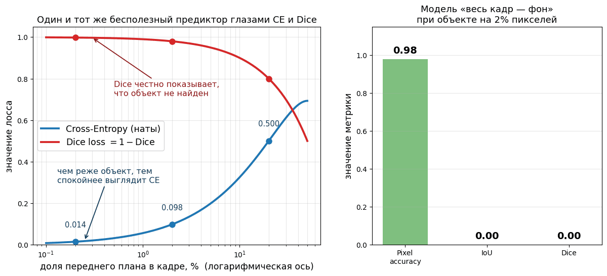
Слева: неинформативная модель, выдающая в каждом пикселе одну и ту же вероятность, равную априорной доле объекта. По горизонтали доля переднего плана в процентах в логарифмической шкале от 0.1% до 50%, по вертикали значение лосса в линейной шкале. Синяя кривая — cross-entropy: чем реже объект, тем она меньше (0.014 при 0.2%, 0.098 при 2%, 0.500 при 20%), то есть бесполезная модель выглядит всё лучше. Красная кривая — Dice loss: она, наоборот, стремится к единице, честно показывая, что объект не найден. Справа: та же мысль в метриках для модели, отвечающей весь кадр — фон при объекте на 2% пикселей — pixel accuracy равна 0.98, а столбики IoU и Dice имеют нулевую высоту. У Dice есть знаменатель $\sum_i p_i + \sum_i g_i$, и он мал, когда маска мала. Производная дроби содержит этот знаменатель в квадрате, поэтому при крошечном объекте небольшое изменение нескольких пикселей резко меняет лосс.
Практическое следствие: на кадрах с очень мелкими объектами Dice-градиент скачет, и обучение с чистым Dice с нуля часто расходится или застревает. Именно поэтому Dice почти никогда не используют в одиночку.
Обобщение Dice, в котором ошибки двух типов штрафуются с разными весами:
$$T = \frac{TP}{TP + \alpha \cdot FP + \beta \cdot FN}, \qquad L_{Tversky} = 1 - T$$
где $TP = \sum_i p_i g_i$, $FP = \sum_i p_i (1 - g_i)$, $FN = \sum_i (1 - p_i) g_i$ — те же величины, посчитанные по вероятностям.
Два частных случая проверяются подстановкой: при $\alpha = \beta = 0.5$ получается ровно Dice, при $\alpha = \beta = 1$ — ровно IoU. Всё остальное — промежуточные варианты с перекосом.
$\alpha$ — цена лишнего (ложной тревоги, $FP$), $\beta$ — цена пропущенного ($FN$).
- $\beta > \alpha$ — пропуск дороже: модель учится обводить шире, предпочитая перестраховаться. Стандартный выбор в медицине ($\alpha = 0.3$, $\beta = 0.7$): пропустить опухоль несопоставимо хуже, чем показать врачу лишнее подозрительное пятно, которое он отбракует за секунду.
- $\alpha > \beta$ — лишнее дороже: модель обводит осторожнее. Так настраивают автоматические конвейеры без человека в контуре, где каждая ложная тревога останавливает линию.
То есть Tversky — это ручка, которой бизнес-цена ошибки заводится прямо в обучение, а не подкручивается порогом постфактум.
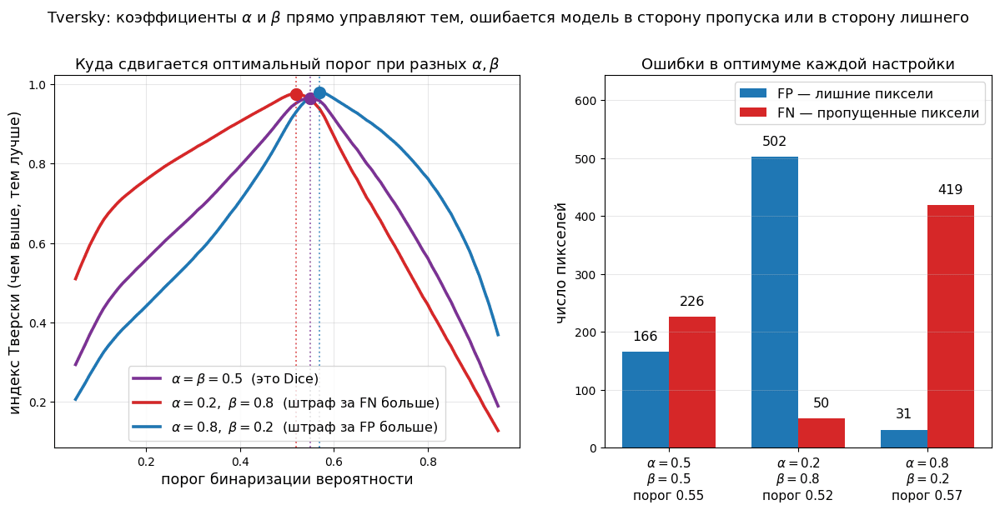
Слева: индекс Тверски (вертикальная ось) в зависимости от порога бинаризации вероятности (горизонтальная ось), обе шкалы линейные. Фиолетовая кривая — сбалансированный случай alpha = beta = 0.5, то есть Dice, оптимум при пороге 0.55; красная — alpha 0.2, beta 0.8, оптимум сдвинут влево, к порогу 0.52; синяя — alpha 0.8, beta 0.2, оптимум сдвинут вправо, к порогу 0.57. Справа: сколько ошибок остаётся в оптимуме каждой настройки — синие столбики FP, красные FN. При сбалансированном Dice это 166 и 226 пикселей; при усиленном штрафе за пропуск (beta 0.8) FN падает до 50, но FP вырастает до 502; при усиленном штрафе за лишнее (alpha 0.8) FP падает до 31, а FN подскакивает до 419. Комбинация двух идей: к индексу Тверски применяется степенной множитель, как в Focal Loss:
$$L_{FTL} = (1 - T)^{\gamma}$$
Здесь $T$ — индекс Тверски на кадре (чем ближе к 1, тем лучше предсказание), а $\gamma$ — показатель степени. Обозначим $x = 1 - T$ — «недобор» до идеала: у хорошо предсказанного кадра $x$ близок к нулю, у плохого — к единице.
Направление эффекта задаёт производная $\frac{d}{dx}x^{\gamma} = \gamma x^{\gamma - 1}$:
- при $\gamma > 1$ множитель $x^{\gamma}$ гасит уже хорошие кадры (при малом $x$ значение $x^\gamma \ll x$), и обучение концентрируется на трудных кадрах с большим $x$ — та же логика, что у Focal Loss;
- при $\gamma < 1$ (типично $\gamma = 3/4$) производная, наоборот, взрывается при $x \to 0$, то есть лосс усиливает вклад кадров, которые уже почти правильные, и дожимает мелкие остаточные ошибки.
Отсюда и практика: $\gamma = 4/3$ берут, когда часть кадров модель проваливает целиком и их надо вытянуть; $\gamma = 3/4$ — когда качество в целом приличное и добирают доли IoU на почти правильных масках. Конкретное значение всё равно подбирают по валидации.
Dice — суррогат Dice, но не IoU. Lovász-Softmax — суррогат непосредственно IoU, построенный не эвристически, а математически: функция потерь Жаккара рассматривается как функция на множестве ошибок, и к ней применяется расширение Ловаса — стандартный способ продолжить субмодулярную функцию с вершин куба на весь куб выпуклым образом.
Результат — кусочно-линейная выпуклая функция, которая на бинарных предсказаниях в точности равна $1 - \text{IoU}$. На практике её обычно используют не с нуля, а как лосс для дообучения уже сошедшейся модели: она даёт заметную прибавку именно к mIoU, но сама по себе обучается хуже, чем CE.
Группа 3. Граничные лоссы
Региональные лоссы измеряют перекрытие площадей и почти не различают, аккуратен ли контур: у крупного объекта смещение границы на пару пикселей почти не меняет ни Dice, ни IoU.
Boundary loss считает интеграл предсказания, взвешенный картой расстояний до истинной границы: чем дальше ошибочный пиксель от контура, тем дороже он стоит. HD loss приближает расстояние Хаусдорфа — максимальное отклонение контура — через те же карты расстояний.
Обе применяются там, где контур и есть результат: планирование облучения по границе опухоли, обмер деталей, вырезание объекта для композитинга.
Пока модель предсказывает шум, «границы» у предсказания случайны, и штраф по расстоянию до истинного контура — это градиент по случайной величине.
Стандартный приём — планировщик веса: обучение начинается с чисто регионального лосса, и вес граничного слагаемого $\lambda$ линейно растёт от $0$ к концу обучения. Схема $L = (1-\lambda) L_{Dice} + \lambda L_{boundary}$ с $\lambda: 0 \to 1$ — типовой рецепт.
Группа 4. Составные лоссы
Рабочая лошадка практической сегментации — простая сумма, обычно с равными весами:
$$L = L_{CE} + L_{Dice}$$
Это первое, что стоит попробовать на новой задаче, и то, что чаще всего остаётся в финальном решении.
Два слагаемых закрывают слабости друг друга.
- CE даёт стабильность. Плотный градиент в каждом пикселе, никаких знаменателей, предсказуемое поведение на старте обучения — когда Dice ещё скачет, CE уже уверенно ведёт модель.
- Dice даёт направление к метрике. Он не обманывается дисбалансом и оптимизирует ровно то, по чему модель будут оценивать.
То есть CE отвечает за то, чтобы обучение вообще сошлось, а Dice — за то, чтобы оно сошлось к правильной цели. По отдельности первый уводит в «всё фон», второй разваливается на мелких объектах.
- Сбалансированные классы, много данных — чистая CE работает нормально, усложнять незачем.
- Умеренный дисбаланс (объект 1–10% кадра) — CE + Dice, веса 1:1. Стандартный дефолт.
- Сильный дисбаланс, медицина, важна полнота — Focal + Tversky с $\beta > \alpha$.
- Нужно выжать mIoU на бенчмарке — обучение на CE + Dice, затем дообучение с Lovász-Softmax.
- Важен контур — CE + Dice с постепенным подключением Boundary loss.
Пустые маски и способ агрегации
Если на кадре объекта нет ($\sum_i g_i = 0$) и модель ничего не предсказала ($\sum_i p_i = 0$), то без сглаживания Dice равен $0/0$.
Ровно для этого нужен $\varepsilon$: при $\varepsilon = 1$ выражение превращается в $\frac{0 + 1}{0 + 0 + 1} = 1$, то есть $L_{Dice} = 0$ — модель права и не штрафуется. А если она на пустом кадре что-то всё же предсказала, знаменатель вырастает, дробь падает, и штраф близок к максимальному. Поведение корректное — но только благодаря $\varepsilon$.
Суммы в Dice можно брать двумя способами, и это разные лоссы:
- По изображению (затем усреднить по батчу) — ближе к тому, как считается метрика, но кадры с пустыми и крошечными масками дают шумный градиент.
- По батчу целиком (одна дробь на весь батч) — устойчивее: кадры с большими объектами стабилизируют знаменатель, и пустые кадры не взрывают лосс.
Batch Dice обычно обучается спокойнее, но слегка расходится с метрикой. При маленьком batch size разница особенно заметна — как и в случае с BatchNorm, малые батчи здесь работают против вас.
- Обучать с нуля на чистом Dice. На мелких объектах градиент нестабилен, и обучение часто не сходится. Dice почти всегда идёт в паре с CE.
- Забыть $\varepsilon$ в Dice. Первый же кадр без объекта даёт $0/0$ и
NaNв весах. - Брать веса weighted CE строго как $1/f_c$. При доле класса $0.001$ это вес 1000, и обучение раскачивается. Смягчайте: $1/\sqrt{f_c}$ или логарифмическая схема.
- Считать Dice loss по softmax, включая канал фона. Фон занимает почти весь кадр, его Dice всегда близок к единице, и, попав в среднее, он маскирует провал по нужным классам. Обычно фоновый канал из Dice исключают.
- Крутить $\alpha$ и $\beta$ Tversky, не глядя на FP и FN раздельно. Итоговый Dice может почти не меняться, тогда как баланс пропусков и ложных тревог меняется в разы — а именно он и есть бизнес-результат.
- Включать Boundary loss с первой эпохи. Пока предсказание — шум, штраф по расстоянию до контура бессмыслен. Нужен планировщик веса.
- Считать, что лосс заменяет метрику. Лосс — суррогат, обучаемый по вероятностям; отчитываться нужно по метрике на бинаризованных масках.
Почему нельзя обучать сегментацию прямо по метрике IoU или Dice?
Потому что метрика считается по бинарным маскам, а бинаризация порогом или $\arg\max$ не дифференцируема — её градиент нулевой почти всюду. Поэтому обучаются по суррогату: функции от вероятностей $p_i \in [0,1]$, которая дифференцируема и переходит в метрику при $p_i \to \{0,1\}$. Мягкий Dice — ровно такой суррогат.
Чем Dice loss принципиально лучше cross-entropy при дисбалансе?
Тем, что в формуле Dice нет вклада верно угаданного фона: пиксели с $g_i = 0$ и $p_i = 0$ не входят ни в числитель, ни в знаменатель. Поэтому предсказание «весь кадр — фон» даёт $L_{Dice} \approx 1$ независимо от размера объекта, тогда как CE при доле объекта 2% выдаёт около 0.098, а при 0.2% — около 0.014, то есть выглядит почти оптимальной.
Почему тогда Dice не используют в одиночку?
Из-за нестабильности градиента. У Dice есть знаменатель $\sum p_i + \sum g_i$, который мал при мелких масках, а производная содержит его в квадрате — небольшое изменение нескольких пикселей резко меняет лосс. Плюс на пустых масках без сглаживающей $\varepsilon$ получается $0/0$. Поэтому на практике берут CE + Dice: CE даёт плотный устойчивый градиент и сходимость, Dice тянет к метрике и лечит дисбаланс.
Как устроен Tversky и зачем нужны $\alpha$ и $\beta$?
$T = \frac{TP}{TP + \alpha FP + \beta FN}$, где $\alpha$ — цена лишнего пикселя, $\beta$ — цена пропущенного. При $\alpha = \beta = 0.5$ это в точности Dice, при $\alpha = \beta = 1$ — IoU. Задавая $\beta > \alpha$ (в медицине типично 0.3 и 0.7), мы делаем пропуск дороже ложной тревоги, и модель учится обводить шире: в эксперименте это уменьшает FN с 226 до 50 пикселей ценой роста FP со 166 до 502.
Что такое Lovász-Softmax и чем он отличается от Dice loss?
Это суррогат непосредственно IoU, а не Dice, построенный через расширение Ловаса — стандартный способ выпукло продолжить субмодулярную функцию с вершин куба внутрь. Получается кусочно-линейная выпуклая функция, совпадающая с $1 - \text{IoU}$ на бинарных предсказаниях. На практике её применяют для дообучения уже сошедшейся модели: прибавку к mIoU она даёт, но с нуля обучается хуже, чем CE.
Зачем нужны граничные лоссы и почему их нельзя включать сразу?
Региональные лоссы почти не различают качество контура: у крупного объекта смещение границы на пару пикселей мало меняет Dice. Boundary loss взвешивает ошибку картой расстояний до истинного контура, HD loss приближает расстояние Хаусдорфа. Включать их с первой эпохи нельзя: пока предсказание — шум, его «границы» случайны, и градиент бессмыслен. Поэтому вес граничного слагаемого наращивают планировщиком от нуля по ходу обучения.
-
Модели сегментации: от U-Net до SAM
Почти все модели сегментации устроены одинаково. Энкодер — обычный backbone (например, ResNet), который последовательно понижает разрешение и наращивает число каналов. Декодер возвращает разрешение обратно к $H \times W$ и выдаёт по логиту на класс в каждом пикселе.
Если совсем простыми словами: энкодер сжимает картинку в компактное описание «что здесь есть», теряя при этом «где именно», а декодер восстанавливает «где именно» обратно до полного разрешения.
Чтобы понять, что изображено на пикселе, нужен широкий контекст: отличить дорогу от тротуара по одному пикселю невозможно, нужен большой кусок кадра. Контекст растёт вместе с рецептивным полем, а рецептивное поле растёт за счёт пулинга и страйдов — то есть за счёт понижения разрешения.
Но сегментации нужен ответ в каждом пикселе, а после пяти понижений вдвое от кадра $512 \times 512$ остаётся карта $16 \times 16$: один её элемент отвечает за квадрат $32 \times 32$ пикселя, и границы объектов в нём безнадёжно размазаны.
Вся история архитектур сегментации — это разные способы получить и широкий контекст, и точные границы одновременно.
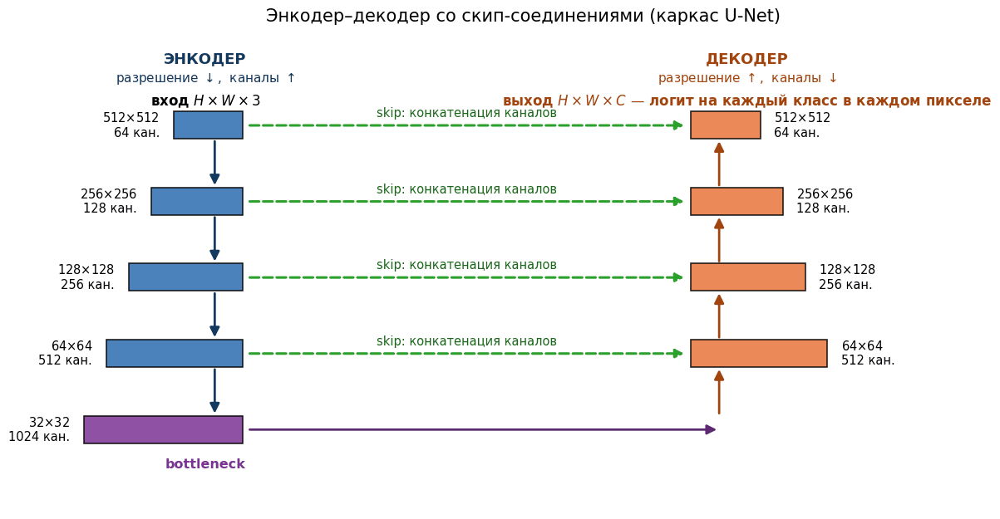
Каркас U-Net. Слева синим — энкодер: разрешение падает с 512x512 до 32x32, число каналов растёт с 64 до 1024. Внизу фиолетовым — бутылочное горлышко. Справа оранжевым — декодер, который поднимает разрешение обратно и снижает число каналов. Зелёные пунктирные стрелки — скип-соединения: карта признаков каждого уровня энкодера конкатенируется по каналам с одноимённым уровнем декодера. На выходе тензор H x W x C — логит на каждый класс в каждом пикселе. Как поднимают разрешение обратно
Транспонированная свёртка (она же deconvolution) — обучаемый слой: каждый входной пиксель «раскладывается» ядром на несколько выходных, а перекрывающиеся вклады складываются. Параметры учатся вместе с сетью.
Upsample + свёртка — необучаемая интерполяция (билинейная или ближайший сосед) поднимает разрешение, после чего идёт обычная свёртка $3 \times 3$, которая всё «дочищает».
У транспонированной свёртки с ядром $k$ и шагом $s$ разные выходные пиксели получают разное число слагаемых, если $k$ не делится на $s$ нацело.
Классический случай $k = 3$, $s = 2$: посчитаем, сколько входных элементов попадает в каждый выходной. Чётные позиции получают по 2 вклада, нечётные — по 1. В двумерном случае это перемножается: получаются значения 4, 2 и 1 в регулярной решётке.
То есть даже на постоянном входе выход оказывается неровным — на нём проступает шахматная сетка, которая потом видна на масках и особенно на генерируемых изображениях.
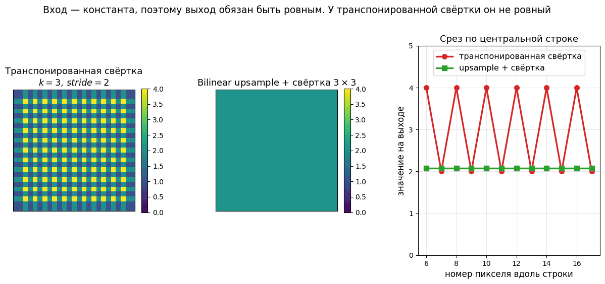
Вход — константа из единиц, поэтому идеальный выход обязан быть однородным. Слева результат транспонированной свёртки с ядром 3 и шагом 2 в палитре viridis: жёлтые клетки со значением 4, бирюзовые со значением 2 и тёмно-синие со значением 1 образуют регулярную шахматную решётку. В центре результат схемы bilinear upsample плюс свёртка 3x3 — сплошной однородный цвет, соответствующий одному значению около 2.07. Справа срез по центральной строке в линейных осях: красная ломаная скачет между 4 и 2 через пиксель, зелёная линия идёт ровно. Артефакты лечатся тремя способами: брать $k$, кратное $s$ (например $k = 4$, $s = 2$), заменять транспонированную свёртку на upsample + conv, или использовать pixel shuffle (перестановку каналов в пространство).
В современных сегментационных декодерах чаще всего берут именно bilinear upsample + свёртка $3\times3$: артефактов нет по построению, параметров меньше, качество не хуже.
U-Net: скипы возвращают границы
Симметричный энкодер–декодер, в котором карта признаков каждого уровня энкодера конкатенируется по каналам с одноимённым по разрешению уровнем декодера. Механика самих скип-соединений — в отдельном вопросе; здесь важна их конкретная роль.
Энкодер знает что изображено, но потерял точное где. Скип приносит в декодер карту высокого разрешения из ранних слоёв, где ещё сохранились края и текстуры. Декодер получает одновременно семантику (снизу, из бутылочного горлышка) и геометрию (сбоку, по скипу) — и может поставить границу на нужный пиксель, а не на нужный квадрат $32 \times 32$.
В ResNet skip-connection — это поэлементное сложение, число каналов не меняется. В U-Net скип — это конкатенация: каналы энкодера приписываются к каналам декодера, и их число складывается ($256 + 256 = 512$), после чего следующая свёртка сводит их обратно.
Разница содержательная: сложение смешивает два сигнала необратимо, конкатенация оставляет сети свободу решить, сколько веса дать деталям, а сколько — семантике. Ценой памяти.
U-Net вышла в 2015 году для сегментации клеток на микроскопии — задачи с несколькими десятками размеченных изображений. Она и сегодня остаётся дефолтом там, где данных мало: медицина, промышленный контроль, спутники.
Причины: мало параметров, устойчивое обучение на малых выборках, простая замена энкодера на любой предобученный backbone (U-Net с энкодером ResNet-34 или EfficientNet — типовая рабочая конфигурация). Плюс она стала архитектурой-основой в диффузионных моделях.
DeepLab: контекст без потери разрешения
Свёртка, у которой между элементами ядра вставлены пропуски: ядро $3 \times 3$ с коэффициентом расширения $r$ читает не 9 соседних пикселей, а 9 пикселей, разнесённых с шагом $r$.
Эффективный размер ядра:
$$k_{\text{eff}} = k + (k - 1)(r - 1)$$
Для $k = 3$ и $r = 6$: $k_{\text{eff}} = 3 + 2 \cdot 5 = 13$. То есть свёртка охватывает область $13 \times 13$, имея при этом всё те же 9 весов и ту же стоимость вычислений.
Ключевое свойство: рецептивное поле растёт без понижения разрешения — не нужно ни пулинга, ни страйда. Именно это и разрешает конфликт «контекст против точности».
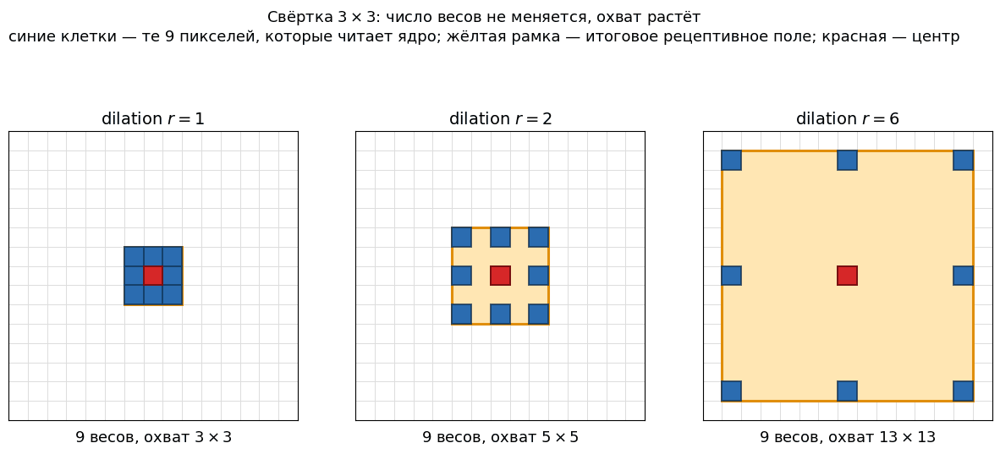
Свёртка 3x3 при трёх значениях dilation. Синие клетки — те 9 пикселей, которые реально читает ядро, красная клетка в центре — позиция выхода, жёлтая рамка — итоговое рецептивное поле. Слева r = 1: обычная свёртка, охват 3x3, 9 соседних клеток. В центре r = 2: между весами появляется пропуск, охват вырастает до 5x5. Справа r = 6: те же 9 весов разнесены широко, охват 13x13. Во всех трёх случаях весов ровно 9 и стоимость одинакова — растёт только площадь, которую видит свёртка. Atrous Spatial Pyramid Pooling — параллельные ветки atrous-свёрток с разными $r$ (в DeepLabv3 это $6$, $12$, $18$ при output stride 16), плюс ветка $1\times1$ и ветка глобального image pooling. Их выходы конкатенируются.
Смысл: объекты на кадре бывают разного размера, и одного масштаба контекста не хватает. Ветка с $r = 6$ ловит мелкие объекты, с $r = 18$ — крупные, глобальный пулинг добавляет контекст всего кадра. Модель сама взвешивает, что важнее в данном месте.
Финальная версия семейства добавляет к ASPP лёгкий декодер: выход ASPP (обычно stride 16) поднимается в 4 раза, конкатенируется с картой низкого уровня из энкодера (stride 4, после свёртки $1\times1$ для сжатия каналов), и результат дочищается парой свёрток $3\times3$ перед финальным подъёмом.
То есть v3+ — это признание, что даже с atrous одной пирамиды мало: скипы в духе U-Net всё равно нужны для точных границ.
Альтернативный ответ на тот же вопрос. Pyramid Pooling Module усредняет карту признаков в сетки $1\times1$, $2\times2$, $3\times3$ и $6\times6$, каждый результат сжимается свёрткой $1\times1$, поднимается обратно до исходного размера и конкатенируется с исходной картой.
Ветка $1\times1$ — это контекст всего изображения (что за сцена вообще: улица, комната, поле), $6\times6$ — локальные регионы. Разница с ASPP в средстве: DeepLab расширяет рецептивное поле свёрткой, PSPNet — усреднением по областям.
Instance: Mask R-CNN
Faster R-CNN плюс третья, параллельная ветка: к головам классификации и регрессии бокса добавляется маленькая свёрточная голова, предсказывающая бинарную маску внутри региона.
Маска предсказывается на сетке $28 \times 28$ отдельно для каждого класса ($C$ каналов), а лосс — попиксельный BCE, считаемый только по каналу истинного класса. Благодаря этому классы не конкурируют между собой за пиксель: задача «где объект» отделена от задачи «какой это класс».
RoI Pooling вырезает признаки региона из общей карты и квантует координаты до целых ячеек — дважды: при переводе координат бокса в сетку признаков и при разбиении региона на бины.
На карте со страйдом 16 одна ячейка соответствует $16 \times 16$ пикселям изображения. Ошибка округления даже в половину ячейки — это 8 пикселей сдвига на исходном кадре. Для классификации региона это неважно, для маски — катастрофа: вся маска съезжает.
RoIAlign убирает квантование: координаты остаются вещественными, а значения в точках выборки берутся билинейной интерполяцией по четырём соседним ячейкам. Замена RoI Pooling на RoIAlign дала в статье Mask R-CNN около $+3$ пунктов mask AP в целом, а на строгом пороге — $\text{AP}_{75}$ с $21.6$ до $32.1$, то есть примерно в полтора раза относительно. Редкий случай, когда одна техническая деталь решает столько же, сколько архитектура: чем строже порог IoU, тем сильнее видно квантование координат.
Трансформеры и универсальные модели
Иерархический трансформер-энкодер (Mix Transformer) плюс предельно лёгкая голова из нескольких MLP, которая просто сводит признаки четырёх масштабов к одному разрешению и конкатенирует их.
Две особенности. Во-первых, нет позиционных эмбеддингов: вместо них в блок FFN вставлена depthwise-свёртка $3\times3$, из которой сеть и получает информацию о положении. Это важно практически — модель, обученная на одном разрешении, не ломается на другом, тогда как обычный ViT требует интерполяции позиционных эмбеддингов.
Во-вторых, вся тяжесть перенесена в энкодер: голова почти ничего не весит. Самая маленькая версия SegFormer-B0 — около 3.8 млн параметров, что делает её пригодной для мобильных сценариев.
Единая архитектура для всех трёх постановок сразу — семантической, instance и паноптической. Идея: любая сегментация есть предсказание набора масок с метками, а не попиксельная классификация.
Модель держит $N$ обучаемых запросов (queries); каждый запрос через cross-attention к карте признаков порождает одну маску и одну метку класса — ровно как object queries в DETR, только вместо бокса маска. Семантическая сегментация получается склейкой масок одного класса, instance — сохранением их раздельности, паноптика — разрешением перекрытий по score.
Ключевой приём — masked attention: запрос смотрит не на всю карту признаков, а только на область своей текущей маски. Это резко ускоряет сходимость, которая была главной болью DETR-подобных моделей. Механика самого cross-attention — в отдельном вопросе.
Модель промптовой сегментации: на вход, кроме изображения, подаётся подсказка — точка, бокс или грубая маска, — и SAM выдаёт маску объекта в этом месте. Класс на выходе не предсказывается вообще: модель отвечает на вопрос «где границы вот этого», а не «что это».
Обучена на SA-1B: 11 млн изображений и 1.1 млрд масок, собранных полуавтоматически в три этапа — сначала с помощью разметчиков, затем со всё большей долей автоматики.
Архитектурно: тяжёлый ViT-энкодер прогоняется по картинке один раз, а лёгкий декодер отвечает на каждый промпт за миллисекунды — поэтому интерактивная разметка работает в реальном времени.
SAM — не замена дообученной модели, а инструмент разметки и zero-shot заготовка. Он не знает ваших классов и в специализированных доменах (медицинские снимки, микроскопия, спутники) заметно уступает небольшой U-Net, дообученной на паре сотен размеченных примеров.
Типичный сценарий: SAM ускоряет разметку в несколько раз (кликнул — получил маску, поправил), на этой разметке обучается своя компактная модель, и в продакшен идёт именно она.
Модель Постановка Ключевая идея Когда брать U-Net семантическая скипы + симметричный декодер мало данных, медицина, дефекты DeepLabv3+ семантическая atrous + ASPP + лёгкий декодер объекты разного масштаба, городские сцены PSPNet семантическая пирамида пулинга сцены, где важен глобальный контекст Mask R-CNN instance детектор + маскная ветка + RoIAlign нужно считать объекты, проверенная классика SegFormer семантическая иерархический трансформер + MLP-голова нужен баланс скорости и качества Mask2Former все три набор масок через queries единый пайплайн, максимум качества SAM промптовая сегментация по подсказке, без классов разметка, zero-shot, интерактив - Считать транспонированную свёртку обязательной. Она даёт шахматные артефакты при $k$, не кратном $s$. Bilinear upsample + свёртка $3\times3$ проще, легче и обычно не хуже.
- Путать скип U-Net со скипом ResNet. В U-Net — конкатенация (каналы складываются в числе), в ResNet — поэлементное сложение (число каналов не меняется). Это разные механизмы с разной ценой по памяти.
- Думать, что atrous увеличивает число параметров. Нет: весов остаётся ровно $k^2$, растёт только охват. Растёт зато потребление памяти, потому что карта не понижается в разрешении.
- Брать слишком большой $r$. При очень больших коэффициентах расширения соседние выходные пиксели читают непересекающиеся наборы входных — возникает эффект гребёнки (gridding), и мелкие объекты просто проваливаются между зубцами. Поэтому в ASPP берут набор разных $r$, а не один большой.
- Использовать RoI Pooling для масок. Квантование координат при страйде 16 даёт до 8 пикселей сдвига на исходном кадре. Для масок нужен RoIAlign.
- Ожидать от SAM классов. SAM выдаёт границы, но не говорит, что это. Классификацию нужно навешивать сверху отдельно.
- Брать Mask2Former на задачу с тремя сотнями размеченных кадров. Трансформерные модели требуют много данных или хорошей предобученности; на маленьком датасете U-Net с предобученным энкодером почти всегда выигрывает.
В чём главный конфликт при проектировании сегментационной сети и как его решают?
Для понимания класса пикселя нужен широкий контекст, а он растёт за счёт понижения разрешения пулингом и страйдами; но сегментации нужен точный ответ в каждом пикселе, а после пяти понижений от кадра $512\times512$ остаётся карта $16\times16$. Решают тремя способами: скипами из энкодера в декодер (U-Net), atrous-свёртками, которые растят рецептивное поле без понижения разрешения (DeepLab), и пирамидами контекста (ASPP, PSPNet).
Откуда берутся шахматные артефакты и как их убрать?
У транспонированной свёртки с ядром $k$ и шагом $s$, где $k$ не делится на $s$, разные выходные пиксели получают разное число перекрывающихся вкладов. При $k = 3$, $s = 2$ это даёт значения 4, 2 и 1 в регулярной решётке даже на постоянном входе. Лечится выбором $k$, кратного $s$ (например 4 и 2), заменой на bilinear upsample плюс свёртку $3\times3$, или pixel shuffle.
Зачем U-Net скип-соединения и чем они отличаются от скипов ResNet?
Энкодер сохраняет семантику, но теряет пространственную точность, поэтому декодеру нужны высокочастотные детали — края и текстуры — из ранних слоёв. В U-Net скип реализован как конкатенация по каналам: числа каналов складываются, и следующая свёртка сама решает, сколько веса дать деталям, а сколько семантике. В ResNet скип — это поэлементное сложение, при котором число каналов не меняется.
Что такое atrous-свёртка и какое у неё эффективное рецептивное поле?
Это свёртка с пропусками между элементами ядра: ядро читает $k^2$ пикселей, разнесённых с шагом $r$. Эффективный размер $k_{\text{eff}} = k + (k-1)(r-1)$, то есть $3\times3$ при $r = 6$ охватывает $13\times13$. Число весов и стоимость не меняются, а рецептивное поле растёт без понижения разрешения. Слишком большой $r$ вреден: возникает эффект гребёнки, и мелкие объекты проваливаются между зубцами — поэтому в ASPP используют набор разных $r$ (6, 12, 18) плюс глобальный пулинг.
Как Mask R-CNN предсказывает маски и почему понадобился RoIAlign?
К головам Faster R-CNN добавляется параллельная свёрточная ветка, выдающая маску $28\times28$ отдельным каналом на каждый класс; лосс — попиксельный BCE только по каналу истинного класса, поэтому классы не конкурируют за пиксель. RoI Pooling дважды квантует координаты до целых ячеек, а при страйде 16 ошибка в половину ячейки — это 8 пикселей на исходном кадре, и маска съезжает. RoIAlign отказывается от квантования и берёт значения билинейной интерполяцией по вещественным координатам.
Чем Mask2Former отличается от классической попиксельной сегментации и что такое SAM?
Mask2Former трактует любую сегментацию как предсказание набора масок с метками: $N$ обучаемых запросов через cross-attention порождают по маске и классу, а три постановки различаются лишь способом сборки результата. Приём masked attention, при котором запрос смотрит только на область своей текущей маски, резко ускоряет сходимость. SAM решает другую задачу — промптовую сегментацию: по точке, боксу или грубой маске он выдаёт границы объекта, но не его класс; обучен на SA-1B (11 млн изображений, 1.1 млрд масок) и на практике служит ускорителем разметки и zero-shot инструментом, а не заменой дообученной модели.
-
Ключевые точки и оценка позы
Оценка позы (pose estimation, keypoint detection) — задача, где для каждого объекта на изображении надо предсказать фиксированный упорядоченный набор координат:
$$\{(x_j,\ y_j,\ v_j)\}_{j=1}^{J}$$
где $j$ — номер сустава в заранее оговорённом скелете, $x_j, y_j$ — его координаты в пикселях, а $v_j$ — флаг видимости.
Если совсем простыми словами: сеть должна расставить точки по анатомическим ориентирам — вот нос, вот левый локоть, вот правая лодыжка — и сделать это в строго определённом порядке.
Индустриальный стандарт — разметка COCO из $J = 17$ точек: нос, два глаза, два уха, два плеча, два локтя, два запястья, два бедра, два колена, две лодыжки.
Флаг видимости $v_j$ принимает три значения:
- $v = 0$ — точка не размечена (её вообще нет в аннотации);
- $v = 1$ — точка размечена, но закрыта другим объектом или частью тела;
- $v = 2$ — точка видима.
Различение $v = 1$ и $v = 0$ принципиально: закрытое колено сеть обязана угадать по позе, а неразмеченное — просто не должно участвовать в лоссе.
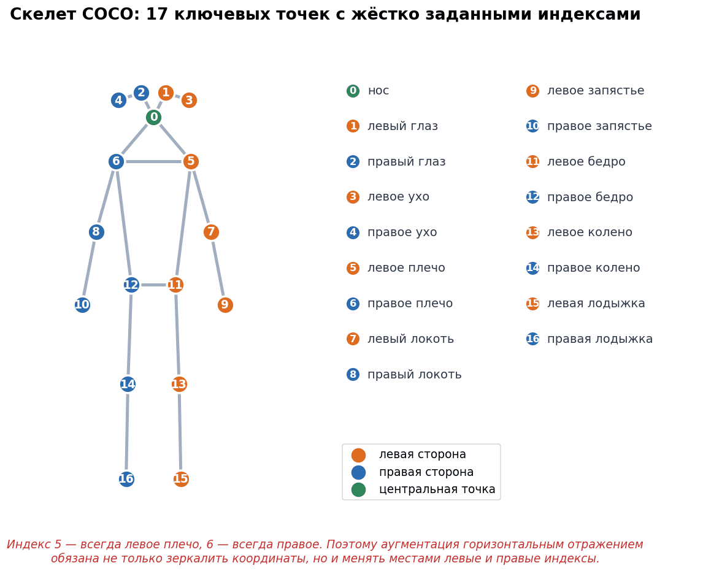
Скелет COCO из 17 точек. Номер внутри кружка — индекс сустава в аннотации; справа расшифровка в два столбца. Оранжевые точки — левая сторона тела, синие — правая, зелёная (индекс 0, нос) — центральная. Человек нарисован лицом к зрителю, поэтому его левое плечо (5, оранжевое) оказывается в правой половине картинки. Ключевое свойство — порядок жёсткий: индекс 5 это всегда левое плечо, что бы ни было на кадре. Чем эта задача отличается от соседних
В детекции выход — множество переменной длины: на кадре может быть 0 объектов, а может 300, и порядок в этом множестве ничего не значит.
Здесь наоборот: на одного человека всегда ровно 17 слотов, и слот номер 5 зарезервирован под левое плечо. Сеть не «ищет точки», а заполняет заранее известную анкету. Поэтому венгерский матчинг и NMS внутри одного человека не нужны — соответствие предсказаний и разметки задано индексом.
В сегментации ответ нужен на каждый из $H \times W$ пикселей. Здесь содержательных ответов всего $2J = 34$ числа на человека — на порядки меньше.
Но, как мы увидим ниже, самый точный способ их получить всё равно проходит через плотное представление: сеть предсказывает карты, а координаты извлекаются из них уже постобработкой.
Два способа предсказать координату
Голова сети выдаёт $2J$ чисел напрямую — обычно после global average pooling и полносвязного слоя. Лосс — обычный $L_1$ или $L_2$ по координатам:
$$L = \frac{1}{J}\sum_{j=1}^{J} \mathbb{1}[v_j > 0] \cdot \lVert (\hat{x}_j, \hat{y}_j) - (x_j, y_j) \rVert$$
Индикатор $\mathbb{1}[v_j > 0]$ выключает из суммы неразмеченные точки.
Это ровно та же схема, что и в обычной регрессии по изображению, просто выходов не один, а 34.
Голова выдаёт $J$ карт размера $H' \times W'$ — по одной на сустав. Карта обычно в 4 раза мельче входа: для входа $256 \times 192$ это $64 \times 48$.
Таргет для карты $j$ — не единичный пиксель, а гауссово пятно вокруг истинной точки:
$$H_j(p) = \exp\left(-\frac{\lVert p - (x_j, y_j) \rVert^2}{2\sigma^2}\right), \qquad \sigma \approx 2\ \text{px}$$
то есть в самой точке значение 1, на расстоянии 2 пикселя $\approx 0.61$, на расстоянии 4 пикселя $\approx 0.14$. Лосс — MSE между предсказанной и целевой картой.
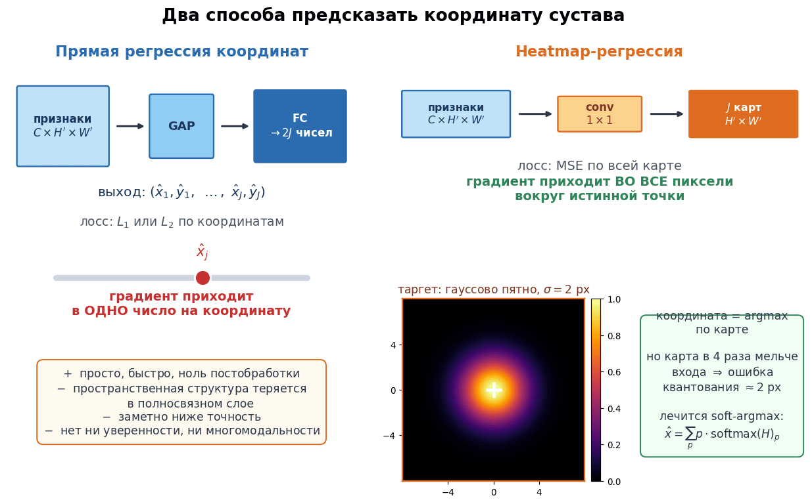
Слева синим — прямая регрессия: признаки, global average pooling, полносвязный слой, на выходе 2J чисел, и градиент приходит ровно в одно число на координату (красная точка на серой шкале). Справа оранжевым — heatmap-регрессия: свёртка 1x1 превращает признаки в J карт, таргетом служит гауссово пятно с сигмой 2 пикселя (тепловая карта в палитре inferno, шкала справа от 0 до 1, белый крест — истинная точка). Зелёным подписано главное преимущество: градиент приходит во все пиксели вокруг точки, а не в одно число. - Задача становится плотной. Вместо одного скалярного отклика сеть получает сигнал в сотнях пикселей вокруг истинной точки. Это резко облегчает оптимизацию — по сути, задача превращается в попиксельную регрессию, а такие задачи свёрточные сети решают заметно лучше.
- Сохраняется пространственная структура. Прямая регрессия обязана «сплющить» карту признаков в вектор через полносвязный слой — а это как раз та операция, которая уничтожает информацию о том, где находится признак. Heatmap работает в исходной геометрии.
- Виден профиль уверенности. Высота пика показывает уверенность, а два пика — что сеть не может выбрать между двумя кандидатами (например, при пересечении рук двух людей). У прямой регрессии на выходе просто число, и по нему ничего не понять.
Координата берётся как $\arg\max$ по карте — а карта в 4 раза мельче входа. Значит, лучшее, что можно получить, — это центр ячейки шага 4, и типичная ошибка составляет около 2 пикселей во входном масштабе просто из-за округления, даже если сеть предсказала пик идеально.
Для метрики, чувствительной к паре пикселей, это существенно.
Soft-argmax (integral regression): вместо взятия максимума карта нормируется softmax и берётся математическое ожидание координаты:
$$\hat{x} = \sum_{p} p_x \cdot \operatorname{softmax}(H)_p, \qquad \hat{y} = \sum_{p} p_y \cdot \operatorname{softmax}(H)_p$$
где $p_x, p_y$ — координаты пикселя $p$. То есть координата — «центр тяжести» карты, а он спокойно попадает между узлами сетки. Это даёт субпиксельную точность и заодно делает всю цепочку дифференцируемой end-to-end: можно учить сразу по координатному лоссу.
Более простой инженерный приём (DARK, а до него — эвристика из Stacked Hourglass): сдвинуть найденный $\arg\max$ на четверть пикселя в сторону соседа с бо́льшим значением. Дёшево и даёт заметный прирост.
Один человек и много людей
Сначала обычный детектор находит боксы людей, затем каждый бокс вырезается, ресайзится к фиксированному размеру (обычно $256 \times 192$) и подаётся в отдельную сеть-оценщик позы.
Плюсы: каждый человек попадает в сеть крупно и в стандартном масштабе — отсюда высокая точность. Минусы: время растёт линейно с числом людей, и ошибки детектора наследуются целиком (не нашёл человека — точек не будет вообще).
Сеть за один проход находит все точки всех людей на кадре, а затем их надо сгруппировать по людям. Два классических механизма группировки:
- PAF (Part Affinity Fields, OpenPose) — дополнительно предсказываются векторные поля вдоль конечностей; чтобы понять, принадлежат ли локоть и запястье одному человеку, интеграл поля вдоль отрезка между ними должен быть большим.
- Associative embedding — каждой точке приписывается вектор-«тег»; сеть учится делать теги точек одного человека близкими, а разных — далёкими, после чего группировка сводится к кластеризации.
Плюсы: время не зависит от числа людей. Минусы: точность ниже, особенно на мелких людях, и группировка сама может ошибаться.
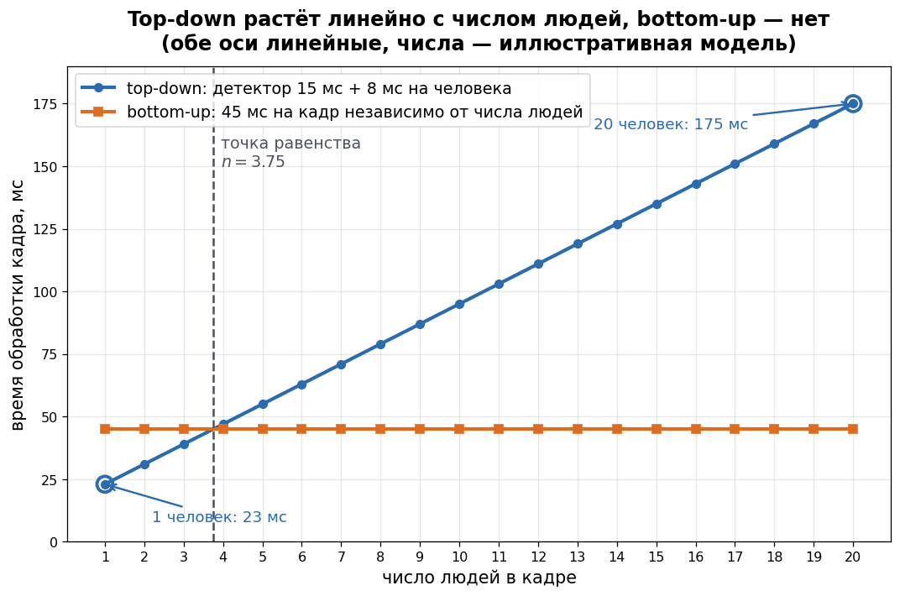
Иллюстративная модель времени работы, обе оси линейные. Синяя линия с кружками — top-down: постоянные 15 мс на детектор плюс 8 мс на каждого человека, поэтому она растёт линейно (23 мс при одном человеке, 175 мс при двадцати). Оранжевая линия с квадратами — bottom-up: ровные 45 мс независимо от числа людей. Серый пунктир отмечает точку равенства n = 3.75: до неё выгоднее top-down, после — bottom-up. - Один человек крупным планом (фитнес-приложение, примерочная, анализ техники упражнения) — однозначно top-down: и быстрее, и точнее.
- Толпа на площади, стадион, кадр с потолочной камеры цеха — bottom-up: 30 человек в кадре превратят top-down в 4 кадра в секунду.
- Промежуточный случай (2–5 человек в кадре) — считайте по своим замерам; граница, как на графике выше, находится в районе 3–5 человек и сильно зависит от того, насколько тяжёлая у вас поза-сеть относительно детектора.
Модели
- Convolutional Pose Machines и Stacked Hourglass (2016) — первые сильные heatmap-архитектуры с многократным «сжали–восстановили» и промежуточным контролем на каждой стадии.
- SimpleBaseline (2018) — ResNet плюс три транспонированные свёртки. Показала, что сложные архитектуры не обязательны, если хорошо настроить обучение.
- HRNet (2019) — ключевая идея области: вместо схемы «упасть в низкое разрешение и восстановиться» сеть держит ветку высокого разрешения через всю глубину, параллельно с ветками низкого, и постоянно обменивается между ними информацией. Для задач точной локализации это оказалось принципиально лучше — HRNet стал стандартным backbone не только для позы, но и для сегментации.
- ViTPose (2022) — простой ViT-энкодер плюс лёгкая декодер-голова; масштабируется вместе с размером трансформера.
- RTMPose, MediaPipe Pose / BlazePose — реалтайм на CPU и на телефоне, часто на базе MobileNet-подобных backbone.
Метрики
Прямое сравнение расстояний в пикселях бессмысленно: ошибка в 10 пикселей на человеке во весь кадр и на человеке высотой 40 пикселей — это совершенно разные ошибки. Поэтому вводят OKS (Object Keypoint Similarity):
$$\text{OKS} = \frac{\sum_j \exp\left(-\dfrac{d_j^2}{2 s^2 k_j^2}\right) \cdot \mathbb{1}[v_j > 0]}{\sum_j \mathbb{1}[v_j > 0]}$$
- $d_j$ — расстояние в пикселях между предсказанной и истинной точкой $j$;
- $s^2$ — площадь объекта в пикселях (нормировка на масштаб человека);
- $k_j$ — константа сустава, в реализации COCO $k_j = 2\sigma_j$, где $\sigma_j$ — эмпирическое стандартное отклонение разметки этого сустава между разными аннотаторами;
- индикатор выбрасывает неразмеченные точки.
То есть OKS $\in [0, 1]$ — это средняя «попадаемость» точек с поправкой на размер человека и на то, насколько данный сустав вообще размечается согласованно.
Люди-разметчики ставят нос почти в одну и ту же точку, а бедро — очень по-разному: анатомический ориентир там нечёткий, и разброс между аннотаторами велик.
Отсюда $\sigma_{\text{нос}} = 0.026$, но $\sigma_{\text{бедро}} = 0.107$ — вчетверо больше. Метрика учитывает это и не наказывает модель за ту неточность, которую сама разметка не воспроизводит. Это редкий и очень здравый пример метрики, откалиброванной по шуму разметки.
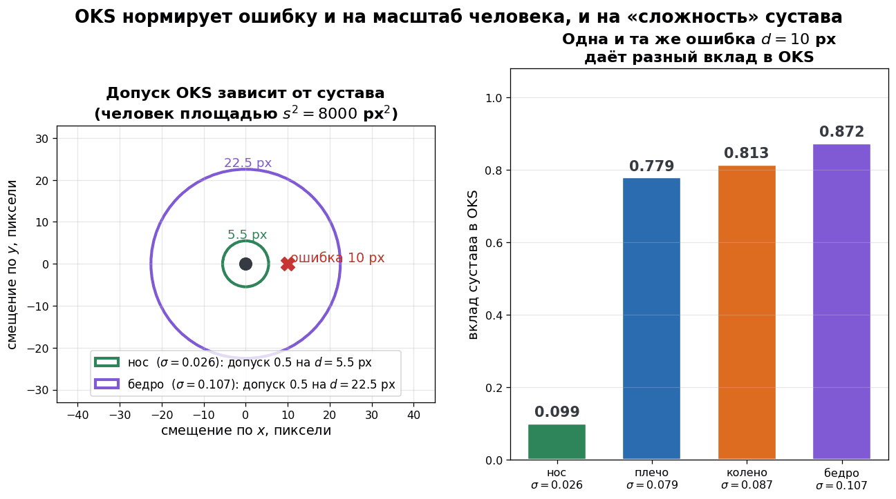
Слева: человек площадью 8000 квадратных пикселей, окружности показывают, на каком расстоянии вклад сустава в OKS падает до 0.5. Зелёная маленькая окружность — нос (сигма 0.026), радиус всего 5.5 px; фиолетовая большая — бедро (сигма 0.107), радиус 22.5 px. Красный крестик — ошибка в 10 пикселей: для носа она уже вне допуска, для бедра — глубоко внутри. Справа тот же вывод столбиками (ось Y линейная, от 0 до 1): при одинаковой ошибке 10 px вклад носа 0.099, плеча 0.779, колена 0.813, бедра 0.872. Человек площадью $s^2 = 8000$ px$^2$ (то есть $s \approx 89.4$), размечено 5 точек. Считаем вклад каждой: знаменатель под экспонентой $2 s^2 k_j^2$ при $k_j = 2\sigma_j$.
Сустав $\sigma_j$ $d_j$, px $2 s^2 k_j^2$ вклад нос 0.026 3 43.3 0.812 левое плечо 0.079 6 399.4 0.914 левое бедро 0.107 10 732.7 0.872 левое колено 0.087 9 484.4 0.846 левая лодыжка 0.089 12 506.9 0.753 $$\text{OKS} = \frac{0.812 + 0.914 + 0.872 + 0.846 + 0.753}{5} = 0.839$$
Этого хватает, чтобы предсказание засчиталось при порогах 0.50, 0.65 и 0.75, но не при 0.85.
Возьмём те же самые ошибки в пикселях (3, 6, 10, 9, 12), но человек вчетверо мельче по площади: $s^2 = 2000$ px$^2$.
Вклады падают до 0.435, 0.697, 0.579, 0.512, 0.321, и OKS $= 0.509$ вместо 0.839.
Это и есть смысл нормировки: ошибка в 12 пикселей на человеке во весь рост — мелочь, а на человеке размером с ладонь — грубый промах, и метрика обязана их различать.
Дальше OKS играет ровно ту же роль, что IoU в детекции: он задаёт, считать ли предсказание попаданием. Предсказания сортируются по score, матчатся с разметкой по OKS, строится PR-кривая, и считается AP@[.50:.95] — среднее по 10 порогам OKS от 0.50 до 0.95. Вся механика подробно разобрана в вопросе про mAP.
Ориентир: сильные модели на COCO keypoints дают AP порядка 75–80.
- PCK (Percentage of Correct Keypoints) — доля точек, попавших в радиус $\alpha \cdot L$, где $L$ — нормировочная длина (размер головы — тогда пишут PCKh, или размер туловища), типично $\alpha = 0.5$. Проще OKS, но несопоставима между статьями с разной нормировкой.
- MPJPE (Mean Per Joint Position Error) — средняя ошибка в миллиметрах для 3D-позы. PA-MPJPE — то же после выравнивания скелетов по Прокрусту (то есть с точностью до поворота, сдвига и масштаба): отделяет ошибку формы позы от ошибки её положения в пространстве.
Где это применяется
- Фитнес и реабилитация — подсчёт повторений и контроль техники: угол в колене на приседе, прямая ли спина. Здесь важны абсолютные углы, поэтому нужна высокая точность локализации.
- Спортивная аналитика — траектории игроков, биомеханика броска, автоматическая разметка эпизодов.
- Motion capture без костюма — анимация и VFX из обычного видео.
- Эргономика и охрана труда — детекция опасных поз (подъём груза с круглой спиной, работа с поднятыми руками).
- Жестовое управление и сурдоперевод — там же скелеты кистей (21 точка на руку).
- Animal pose — этология, ветеринария, животноводство: скелеты со своей топологией и своими $\sigma_j$.
- Горизонтальное отражение при аугментации без перестановки индексов. Самый типовой баг в задаче. Отзеркалили картинку — левое плечо человека визуально стало правым, но в разметке оно осталось под индексом 5. Сеть получает противоречивые таргеты и учится хуже, а не лучше. Нужна пара «flip координат + swap левых и правых индексов», и такая же перестановка каналов при flip-test на инференсе.
- Неучёт видимости в лоссе. Если по неразмеченным точкам ($v = 0$) считать MSE как по нулевому таргету, сеть будет активно учиться не находить закрытые суставы.
- Сравнение PCK из разных статей. PCK при нормировке на голову, на туловище и на диагональ бокса — три разные величины. Сравнивать можно только внутри одного протокола; OKS-AP в этом смысле надёжнее.
- Ожидание, что heatmap-модель даст точность лучше stride. Без soft-argmax или сдвига пика вы упираетесь в квантование около 2 пикселей, сколько ни учи сеть.
- Оценка top-down модели в отрыве от детектора. Метрика на GT-боксах всегда красивее, чем на боксах реального детектора. В отчёте надо честно указывать, на каких боксах померено.
Что подаётся на вход и что получается на выходе в задаче оценки позы?
На вход — изображение (в top-down подходе ещё и бокс человека). На выходе — фиксированный упорядоченный набор из $J$ троек $(x_j, y_j, v_j)$: координаты сустава и флаг его видимости. В скелете COCO $J = 17$, и индекс жёстко закреплён за суставом: 5 — всегда левое плечо.
Чем эта задача принципиально отличается от детекции?
В детекции выход — множество переменной длины, в котором порядок ничего не значит, поэтому нужен матчинг предсказаний с разметкой и NMS. Здесь длина выхода фиксирована, а соответствие задано индексом сустава: сеть не ищет объекты, а заполняет заранее известную анкету из 17 слотов.
Почему heatmap-регрессия точнее прямой регрессии координат?
Три причины. Задача становится плотной — градиент приходит в сотни пикселей вокруг истинной точки, а не в одно число. Сохраняется пространственная структура: не нужен полносвязный слой, который «сплющивает» карту признаков и теряет информацию о положении. И на выходе видна уверенность и многомодальность — по высоте и числу пиков. Плата — ошибка квантования около 2 пикселей из-за того, что карта в 4 раза мельче входа; лечится soft-argmax или сдвигом пика.
Что такое OKS и зачем в нём константы $k_j$?
OKS — аналог IoU для точек: среднее по размеченным суставам от $\exp(-d_j^2 / (2 s^2 k_j^2))$. Деление на площадь объекта $s^2$ уравнивает крупных и мелких людей. Константы $k_j = 2\sigma_j$ калиброваны по разбросу самих разметчиков: нос размечают согласованно ($\sigma = 0.026$), бедро — очень по-разному ($\sigma = 0.107$), поэтому одна и та же ошибка в 10 пикселей даёт вклад 0.099 для носа и 0.872 для бедра. Дальше по OKS считается тот же AP@[.50:.95], что и в детекции.
Top-down или bottom-up — как выбрать?
Top-down (детектор, затем поза на каждом кропе) точнее, потому что каждый человек попадает в сеть крупно и в стандартном масштабе, но время растёт линейно с числом людей и ошибки детектора наследуются. Bottom-up находит все точки за один проход и потом группирует их по людям (PAF или associative embedding) — время постоянное, но точность ниже на мелких людях. Граница выгодности обычно проходит в районе 3–5 человек в кадре.
Какая ошибка в аугментациях специфична именно для ключевых точек?
Горизонтальное отражение. Отзеркалив изображение, надо не только пересчитать координаты, но и поменять местами левые и правые индексы суставов — иначе то, что физически стало правым плечом, останется в разметке под индексом левого, и сеть будет получать противоречивые таргеты. Та же перестановка каналов нужна и при flip-test на инференсе.
-
Оценка глубины по изображению
Оценка глубины (depth estimation) — задача, где для каждого пикселя изображения надо предсказать расстояние от камеры до соответствующей точки сцены. Выход — вещественная карта $\hat{D} \in \mathbb{R}^{H \times W}$.
Если совсем простыми словами: на вход обычная плоская фотография, на выход — картинка того же размера, где вместо цвета в каждом пикселе записано число метров.
По формату выхода это плотная попиксельная задача, как семантическая сегментация, но выход непрерывный, а не категориальный: вместо softmax по классам — одно вещественное число, вместо cross-entropy — регрессионный лосс.
- Стерео — две камеры на известном расстоянии; глубина считается по сдвигу одной и той же точки между кадрами.
- Активные датчики — LiDAR, ToF-камеры, структурированный свет: измеряют напрямую и точно.
- Монокулярная оценка — по одному обычному кадру, чисто нейросетевая задача.
Первые два — геометрия и физика, третий — машинное обучение. Ниже разобраны все три, потому что на собеседовании обычно спрашивают, почему нельзя обойтись первыми двумя.
Стерео: откуда берётся геометрия
Две камеры смотрят на одну сцену с расстояния $B$ друг от друга (база). Одна и та же точка сцены проецируется в левый и правый кадр в разные позиции; горизонтальный сдвиг между ними называется диспаратностью $d$ (в пикселях).
$$Z = \frac{f \cdot B}{d}$$
- $Z$ — глубина в метрах;
- $f$ — фокусное расстояние в пикселях;
- $B$ — база в метрах;
- $d$ — диспаратность в пикселях.
То есть: чем сильнее точка «прыгает» между левым и правым кадром, тем она ближе. Далёкие объекты почти не смещаются, диспаратность у них стремится к нулю.
Пусть $f = 700$ px, $B = 0.5$ м.
- $d = 35$ px $\Rightarrow Z = \dfrac{700 \cdot 0.5}{35} = 10$ м.
- $d = 7$ px $\Rightarrow Z = 50$ м.
- $d = 3.5$ px $\Rightarrow Z = 100$ м.
Теперь испортим диспаратность на один пиксель — типичная ошибка алгоритма сопоставления:
- на 10 метрах: $d$ из диапазона $34\ldots36$ даёт $Z$ от 9.72 до 10.29 м — разброс 0.57 м;
- на 100 метрах: $d$ из диапазона $2.5\ldots4.5$ даёт $Z$ от 77.8 до 140 м — разброс 62 м.
Один и тот же один пиксель ошибки стоит полметра вблизи и шестьдесят метров вдали.
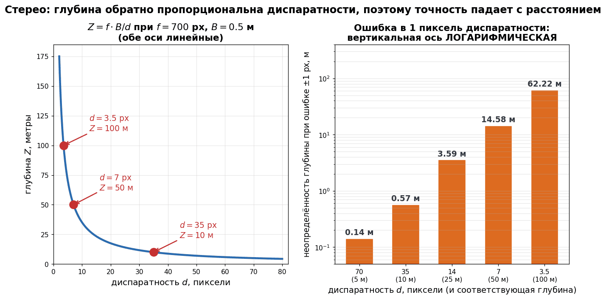
Слева синяя кривая — гипербола Z = f·B/d при f = 700 px и B = 0.5 м, обе оси линейные; красными точками отмечены три случая из расчёта: 35 px это 10 м, 7 px это 50 м, 3.5 px это 100 м. Справа оранжевые столбики — во сколько метров обходится ошибка диспаратности в один пиксель на разных дистанциях; вертикальная ось ЛОГАРИФМИЧЕСКАЯ, иначе первые столбики были бы неразличимы: 0.14 м на пяти метрах, 0.57 м на десяти, 3.59 м на двадцати пяти, 14.58 м на пятидесяти и 62.22 м на ста. - Точность падает квадратично с расстоянием — из формулы: $\left|\frac{\partial Z}{\partial d}\right| = \frac{fB}{d^2} = \frac{Z^2}{fB}$. Именно поэтому у стереокамер есть паспортная рабочая дистанция, за которой они бесполезны.
- Однотонные поверхности (белая стена, чистое небо, асфальт) не дают сопоставить точки — диспаратность неопределима.
- Нужна калибровка и жёсткая механика: сдвинулась одна камера на миллиметр — весь результат уехал.
LiDAR измеряет расстояние временем полёта лазерного импульса и даёт точность в единицы сантиметров независимо от дистанции. Но: 64-лучевой автомобильный сканер выдаёт порядка $10^5$ точек за оборот, тогда как в кадре $1920 \times 1080$ содержится примерно $2 \cdot 10^6$ пикселей. То есть глубина известна в единицах процентов пикселей, всё остальное надо достраивать (задача depth completion).
Плюс цена, габариты, чувствительность к дождю и снегу. Отсюда и интерес к тому, чтобы получить глубину из обычной камеры.
Монокулярная глубина
По одному кадру глубина математически не определяется. Объект вдвое больше и вдвое дальше даёт на матрице ровно ту же проекцию. Никакая геометрия здесь не поможет — информации физически нет.
Сеть решает задачу не геометрически, а по выученным априорным признакам: относительные размеры знакомых объектов (человек примерно 1.7 м, легковой автомобиль примерно 4.5 м), сходящиеся линии перспективы, градиент текстуры (плитка вдали мельче), степень размытия, тени и загораживания (что перед чем).
Ровно так же оценивает расстояние человек с одним закрытым глазом — и ошибается там же, где ошибается сеть: в незнакомых сценах и на макросъёмке.
Прямое следствие: монокулярная модель восстанавливает глубину с точностью до неизвестного положительного множителя. Форма поверхности верна, абсолютные метры — нет.
В более общей постановке (MiDaS) неопределённость ещё шире: модель предсказывает обратную глубину (disparity-like величину) с точностью до аффинного преобразования $a \cdot \hat{p} + b$, $a > 0$.
Отсюда два режима:
- metric depth — модель обучена под конкретный домен и тип камеры и выдаёт метры (KITTI, NYU Depth v2);
- relative depth — модель обобщает на любые сцены, но метры получаются только после подгонки масштаба.
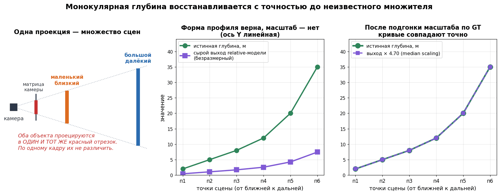
Слева схема: чёрный квадрат — камера, красный отрезок — её матрица, оранжевый брусок это маленький близкий объект, синий — большой далёкий. Серые пунктирные лучи показывают, что оба попадают ровно в один и тот же красный отрезок на матрице, поэтому по одному кадру их не различить. В центре линейная ось Y: зелёная кривая с кружками — истинная глубина шести точек сцены от 2 до 35 метров, фиолетовая с квадратами — сырой безразмерный выход relative-модели; форма профиля та же, значения меньше. Справа тот же выход, умноженный на 4.70 по median scaling: фиолетовый пунктир лёг точно поверх зелёной кривой. При оценке relative-модели её выход подгоняют по ground truth — обычно median scaling (домножить на медиану отношения истинной глубины к предсказанной) или least-squares scale-and-shift.
Значит, опубликованные метрики такой модели получены с подсказкой от разметки, а метрики metric-модели — нет. Сравнивать их напрямую нельзя, и в отчёте протокол нормировки надо указывать явно.
Функции потерь
Ключевой лосс области, введён Eigen et al. Обозначим ошибку в логарифмах:
$$g_i = \log \hat{d}_i - \log d_i$$
$$L = \frac{1}{n}\sum_{i} g_i^2 - \frac{\lambda}{n^2}\left(\sum_{i} g_i\right)^2$$
- $n$ — число пикселей с валидной разметкой;
- первое слагаемое — обычный MSE в логарифмическом пространстве;
- второе — квадрат среднего отклонения, вычитаемый с весом $\lambda \approx 0.5\text{–}0.85$.
То есть: если модель ошиблась во всех пикселях одинаково (умножила всю карту на константу), то все $g_i$ равны между собой, и второй член почти полностью гасит первый. Лосс не наказывает за неверный глобальный масштаб, но наказывает за неверную форму. При $\lambda = 1$ инвариантность к масштабу полная, на практике берут чуть меньше, чтобы модель всё же тяготела к правильным метрам.
В логарифмическом пространстве равные ошибки соответствуют равным относительным ошибкам. Промах на 0.5 м на дистанции 2 м и промах на 20 м на дистанции 80 м дают одинаковый вклад — что и требуется: глубина покрывает диапазон в два-три порядка, и без логарифма лосс полностью определялся бы дальними пикселями.
$$L_{\text{BerHu}}(e) = \begin{cases} |e|, & |e| \le c \\[4pt] \dfrac{e^2 + c^2}{2c}, & |e| > c \end{cases}$$
где $e = \hat{d} - d$, а порог $c$ обычно берут как $0.2 \cdot \max_i |e_i|$ по батчу.
Это зеркало Huber: у Huber $L_2$ на малых ошибках и $L_1$ на больших, здесь наоборот — $L_1$ на малых и $L_2$ на больших. Смысл: мелкие ошибки (а их подавляющее большинство) не должны душить градиент, зато крупные промахи — как раз то, что надо чинить в первую очередь, и квадратичный рост даёт им повышенный вес.
К основному лоссу почти всегда добавляют штраф за несовпадение градиентов: карта глубины должна быть гладкой внутри объектов и резко ломаться на их границах. Типичная форма — градиент глубины, взвешенный экспонентой от градиента яркости:
$$L_{\text{smooth}} = \sum_i \left( |\partial_x \hat{d}_i| e^{-|\partial_x I_i|} + |\partial_y \hat{d}_i| e^{-|\partial_y I_i|} \right)$$
То есть: там, где картинка однородная ($\partial I \approx 0$, множитель близок к 1), глубину заставляют быть гладкой; там, где в картинке резкий перепад, штраф почти отключается и скачок глубины разрешён.
Самый интересный сюжет области — self-supervised глубина (SfMLearner, Monodepth2). Ground truth глубины нет вообще, есть только видео.
Схема: сеть предсказывает глубину для кадра $t$, вторая сеть — относительную позу камеры между кадрами $t$ и $t{+}1$. По глубине и позе соседний кадр перепроецируется в текущий, и минимизируется разница яркостей:
$$L_p = \alpha \cdot \frac{1 - \text{SSIM}(I_t, \hat{I}_t)}{2} + (1 - \alpha) \cdot \lVert I_t - \hat{I}_t \rVert_1, \qquad \alpha = 0.85$$
Логика: правильная глубина — та, при которой перепроецированный соседний кадр совпадает с текущим. Разметка заменяется геометрической согласованностью видео.
- Движущиеся объекты. Схема предполагает, что двигалась только камера. Машина, едущая с той же скоростью, что и наша, выглядит неподвижной — и сеть выучивает для неё бесконечную глубину («дыра» в карте). Лечится auto-masking: пиксель выбрасывается из лосса, если перепроецированный кадр совпадает с текущим хуже, чем исходный соседний кадр без всякой перепроекции.
- Однотонные поверхности и окклюзии. На белой стене любая глубина даёт одинаковую яркость — градиента нет. При окклюзии пиксель просто отсутствует в соседнем кадре. Лечится min-reprojection: берут минимум лосса по нескольким соседним кадрам, а не среднее.
Метрики
$$\text{AbsRel} = \frac{1}{n}\sum_i \frac{|\hat{d}_i - d_i|}{d_i}, \qquad \text{SqRel} = \frac{1}{n}\sum_i \frac{(\hat{d}_i - d_i)^2}{d_i}$$
$$\text{RMSE} = \sqrt{\frac{1}{n}\sum_i (\hat{d}_i - d_i)^2}, \qquad \text{RMSE}_{\log} = \sqrt{\frac{1}{n}\sum_i (\log \hat{d}_i - \log d_i)^2}$$
AbsRel безразмерна и потому основная: она автоматически уравнивает вклад ближних и дальних пикселей. RMSE меряется в метрах и полезна как «сколько метров я в среднем вру», но в ней доминируют дальние пиксели.
$$\delta_k = \frac{1}{n} \left| \left\{ i : \max\left(\frac{\hat{d}_i}{d_i},\ \frac{d_i}{\hat{d}_i}\right) < 1.25^{\,k} \right\} \right|$$
То есть доля пикселей, где предсказание отличается от истины не более чем в $1.25^k$ раз. Симметричный максимум двух отношений нужен, чтобы недооценка и переоценка штрафовались одинаково.
- $\delta_1$: порог $1.25$ — расхождение до 25%;
- $\delta_2$: порог $1.25^2 = 1.5625$ — до 56%;
- $\delta_3$: порог $1.25^3 \approx 1.953$ — почти вдвое.
В отличие от AbsRel, эта метрика устойчива к выбросам: один пиксель с чудовищной ошибкой ухудшит её ровно на $1/n$.
$d$ (истина), м $\hat{d}$ (предсказание), м $\max(\hat{d}/d,\ d/\hat{d})$ $< 1.25$? 10.0 9.5 1.053 да 20.0 26.0 1.300 нет 5.0 4.2 1.190 да 40.0 44.0 1.100 да 2.0 3.0 1.500 нет $$\delta_1 = \frac{3}{5} = 0.6, \qquad \text{AbsRel} = 0.222, \qquad \text{RMSE} = 3.28\ \text{м}$$
Обратите внимание: пиксель с $d = 2$, $\hat{d} = 3$ даёт в RMSE вклад всего 1 метр — почти незаметный на фоне промаха в 6 метров на дистанции 20. Но по относительной шкале это худшее предсказание из пяти. Именно поэтому в этой задаче смотрят на AbsRel и $\delta_1$, а не на RMSE.
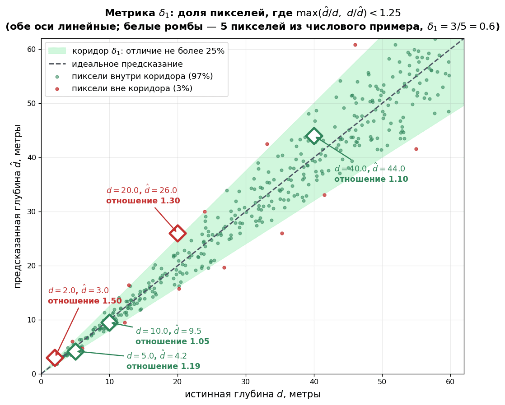
Обе оси линейные: по горизонтали истинная глубина, по вертикали предсказанная. Светло-зелёная полоса — коридор дельта-1, где отношение не выходит за 1.25; серый пунктир по диагонали — идеальное предсказание. Мелкие зелёные точки (97% облака) лежат внутри коридора, красные (3%) — снаружи. Крупные белые ромбы — пять пикселей из числового примера: три обведены зелёным (отношения 1.05, 1.19 и 1.10), два красным (1.30 и 1.50), что и даёт дельта-1 = 3/5 = 0.6. Хорошо видно, что коридор расширяется с ростом глубины: это относительная, а не абсолютная терпимость. На KITTI (уличные сцены, глубина до 80 м) сильные монокулярные модели дают AbsRel около 0.06–0.10 и $\delta_1$ около 0.90–0.96. Self-supervised модели без разметки заметно скромнее — AbsRel порядка 0.10–0.12.
На NYU Depth v2 (помещения, до 10 м) хорошие результаты — AbsRel около 0.05–0.09.
Как и в детекции, эти числа несопоставимы между датасетами: диапазон глубин и плотность разметки принципиально разные.
Модели
- Eigen et al. (2014) — первая нейросетевая монокулярная глубина: две сети, грубая на всё изображение и уточняющая локально. Там же появился SILog.
- Monodepth / Monodepth2 (2017–2019) — self-supervised обучение по стереопарам и по видео, min-reprojection и auto-masking.
- MiDaS (2019) — ключевой прорыв в обобщении. Идея: обучаться сразу на смеси очень разных датасетов (уличных, интерьерных, стоковых фото, кадров из 3D-фильмов), у которых масштаб глубины несопоставим или неизвестен. Чтобы это стало возможно, вводится scale-and-shift-invariant лосс: перед сравнением предсказание выравнивается с разметкой по масштабу и сдвигу методом наименьших квадратов. Так модель учится форме сцены, а не метрам конкретного датасета.
- DPT (2021) — тот же рецепт на ViT-энкодере вместо свёрточного: глобальный контекст с первого слоя даёт заметно более связные карты.
- Depth Anything (2024) — масштабирование данных: учитель размечает десятки миллионов неразмеченных фотографий, ученик обучается на этой псевдоразметке.
- ZoeDepth, Metric3D — возвращают метрические метры, добавляя к relative-модели голову, которая привязывает масштаб (в том числе по параметрам камеры).
Практический вывод: современные модели глубины де-факто стали foundation-моделями — их берут готовыми и применяют zero-shot, а не обучают с нуля под свою задачу.
- Автопилот и ADAS — дистанция до препятствия, свободное пространство, дополнение разреженного LiDAR до плотной карты.
- Робототехника — планирование захвата предмета, обход препятствий, навигация.
- Портретный режим на телефоне — размытие фона по карте глубины (там же обычно работает и сегментация человека).
- AR — корректная окклюзия: виртуальный объект должен скрываться за реальным столом, а не рисоваться поверх.
- 3D-реконструкция помещений и обмер грузов — оценка габаритов по фото.
- Условие для генерации — карта глубины как управляющий сигнал в ControlNet: сохранить композицию сцены, сменив содержание (см. диффузию).
- Путать disparity и глубину. MiDaS и DPT выдают величину, монотонно связанную с обратной глубиной: большое значение — близко, малое — далеко. Наивное «инвертирование» $1/\hat{p}$ без предварительного выравнивания scale-and-shift даёт бессмысленную карту, особенно на дальнем плане, где $\hat{p}$ близко к нулю.
- Ждать метров от relative-модели. Она их не выдаёт по построению. Нужны метры — либо metric-модель, либо якорь: известный размер объекта, показания другого датчика, параметры камеры.
- Сравнивать AbsRel моделей с разной нормировкой. Median scaling по GT — это подсказка от разметки; сравнение с моделью без такой подсказки некорректно.
- Оценивать по RMSE. Как показал пример выше, RMSE в метрах почти целиком определяется дальними пикселями и маскирует грубые относительные промахи вблизи.
- Считать метрику по всем пикселям подряд. В KITTI разметка от LiDAR разрежена и покрывает только нижнюю часть кадра; в помещениях у датчиков глубины есть «дыры» на стекле и зеркалах. Метрику считают только по валидной маске, иначе числа не сопоставимы ни с чем.
Что подаётся на вход и что получается на выходе в задаче оценки глубины?
На вход — изображение, на выход — вещественная карта того же размера, где в каждом пикселе записано расстояние до камеры. По формату это плотная попиксельная задача, как семантическая сегментация, но выход непрерывный: вместо softmax по классам одно число, вместо cross-entropy регрессионный лосс.
Почему точность стерео падает с расстоянием?
Из формулы $Z = fB/d$: чувствительность равна $|\partial Z / \partial d| = Z^2/(fB)$, то есть растёт квадратично с глубиной. При $f = 700$ px и $B = 0.5$ м ошибка диспаратности в один пиксель стоит 0.57 м на дистанции 10 метров и уже 62 м на дистанции 100 метров. Далёкие точки почти не смещаются между кадрами, и различать их нечем.
Почему монокулярная оценка глубины — некорректно поставленная задача, и как её всё-таки решают?
Объект вдвое больше и вдвое дальше даёт на матрице ту же проекцию, поэтому геометрически глубина по одному кадру не определяется. Сеть решает задачу по выученным априорным признакам: относительные размеры знакомых объектов, перспектива, градиент текстуры, размытие, тени и загораживания. Следствие — результат восстанавливается с точностью до неизвестного множителя (а в постановке MiDaS — до аффинного преобразования обратной глубины).
Что делает SILog и зачем в нём второе слагаемое?
SILog считает MSE ошибок в логарифмическом пространстве и вычитает из него квадрат средней ошибки с весом $\lambda \approx 0.5$–$0.85$. Если модель ошиблась во всех пикселях одинаково, то есть просто умножила карту на константу, все логарифмические ошибки равны, и второй член гасит первый. Лосс наказывает за неверную форму сцены, но не за неверный глобальный масштаб — ровно то, что нужно при обучении на данных с несопоставимым масштабом.
Что такое $\delta_1$ и чем она лучше RMSE?
$\delta_1$ — доля пикселей, где $\max(\hat{d}/d,\ d/\hat{d}) < 1.25$, то есть предсказание отличается от истины не более чем на 25%. Она относительная, поэтому одинаково строга к ближним и дальним пикселям, и устойчива к выбросам: один катастрофически неверный пиксель ухудшает её всего на $1/n$. RMSE меряется в метрах, поэтому в ней доминируют дальние пиксели, и грубый относительный промах вблизи в ней почти не виден.
Как обучают модель глубины вообще без разметки?
Self-supervised схема на видео: одна сеть предсказывает глубину кадра, вторая — относительную позу камеры между соседними кадрами. По этой глубине и позе соседний кадр перепроецируется в текущий, и минимизируется photometric loss — комбинация SSIM и $L_1$ по яркости. Правильная глубина это та, при которой перепроекция совпадает с оригиналом. Схема ломается на движущихся объектах и однотонных поверхностях, что лечится auto-masking и min-reprojection по нескольким соседним кадрам.
-
Генеративные задачи: чем они принципиально другие
Генеративная задача в CV — это задача, где модель должна выдать новое изображение, а не метку, число, набор боксов или карту меток. Формально модель учит не отображение «вход $\to$ единственный правильный выход», а распределение $p(x)$ или $p(x \mid c)$ над картинками, из которого потом умеет сэмплировать (доставать случайные образцы).
Здесь $x$ — изображение, $c$ — условие (текстовый промпт, другая картинка, маска, поза — что угодно, чем мы направляем генерацию). Сэмплирование значит «взять случайный элемент из выученного распределения», а не «посчитать ответ».
Если совсем простыми словами: во всех предыдущих задачах страницы у картинки был один правильный ответ, записанный в разметке. Здесь правильных ответов бесконечно много.
Все дискриминативные задачи из карты задач устроены одинаково: есть эталон (метка, бокс, маска), есть выход модели, лосс меряет расхождение между ними, метрика меряет то же расхождение чуть иначе.
В генерации этой опоры нет. По промпту «рыжий кот в шляпе» правильных картинок — миллионы, и ни одна из них не записана в датасете как «ответ». Значит:
- лосс перестаёт быть мерой качества — он меряет что-то техническое, а не «красиво ли получилось»;
- метрики приходится строить по-другому — сравнивая не картинку с картинкой, а распределение с распределением (об этом отдельный вопрос);
- разнообразие становится самостоятельным требованием: модель, выдающая одну и ту же прекрасную картинку на любой промпт, — плохая модель.
Почему пиксельный $L_2$ даёт размытие
Возьмём самый наивный подход: обучим сеть выдавать картинку и штрафовать её по MSE попиксельно. Что получится?
Для квадратичного лосса ответ известен точно: минимум $\mathbb{E}\left[(x - \hat{x})^2\right]$ по $\hat{x}$ достигается на условном матожидании
$$\hat{x}^{\ast} = \mathbb{E}[x \mid c]$$
то есть на среднем по всем правдоподобным ответам при данном входе $c$. Не на одном из них — на их усреднении.
Пусть модель раскрашивает эскиз, и на нём граница крыши по контексту одинаково правдоподобно может оказаться в пикселе $10$ или в пикселе $14$. Оба варианта встречаются в обучающих данных примерно поровну.
Условное среднее равно $0.5 \cdot 10 + 0.5 \cdot 14 = 12$, а картинка-среднее выглядит как плавная ступенька высотой $0.5$ между 10 и 14 вместо резкого края.
Итог: MSE-оптимальный выход — это картинка, которой нет ни в одном из правдоподобных исходов. Она размыта именно там, где данные неоднозначны, то есть на всех интересных местах: на границах, на текстурах, на мелких деталях.
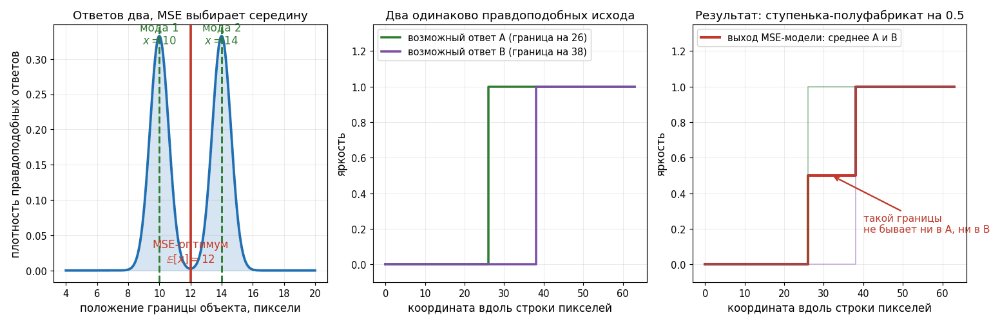
Слева: синим — плотность правдоподобных положений границы, две моды на $x=10$ и $x=14$ (зелёные пунктирные линии); красная сплошная линия — MSE-оптимум $\mathbb{E}[x]=12$, попадающий ровно в провал между модами. В центре: два возможных исхода на строке пикселей — зелёный со ступенькой на 26, фиолетовый на 38. Справа: красным — то, что выдаст обученная по MSE модель, среднее этих двух: вместо одной резкой ступеньки получаются две половинных, с плато на яркости 0.5. Такой границы нет ни в одном реальном исходе — это и есть механизм размытия. Из этого наблюдения выросли все генеративные модели. Способов уйти от «среднего» ровно три:
- Поменять лосс на неусредняющий. Перцептивные лоссы сравнивают не пиксели, а активации предобученной сети (VGG): картинка, размытая в пикселях, в пространстве признаков далека от резкой, поэтому размытие перестаёт быть выгодным.
- Сделать лосс обучаемым. Дискриминатор GAN сам учится отличать реальное от сгенерированного, и размытая картинка немедленно им отлавливается.
- Не предсказывать картинку целиком за один шаг. Диффузия и авторегрессия разбивают генерацию на много маленьких шагов, каждый из которых почти детерминирован — и усреднять становится нечего.
Подтипы генеративных задач
Выход у всех генеративных задач один и тот же: изображение. Различаются они форматом условия $c$:
- безусловная генерация — на входе только шум $z$, «нарисуй что-нибудь из этого домена»;
- text-to-image — на входе текстовый промпт;
- image-to-image — на входе другая картинка: стилизация, день $\to$ ночь, скетч $\to$ фото, раскрашивание чёрно-белого;
- inpainting — картинка с вырезанной областью плюс маска: дорисовать недостающее по контексту; outpainting — то же, но наружу за границы кадра;
- super-resolution — картинка низкого разрешения, надо выдать высокое;
- редактирование по инструкции — картинка плюс текст «сделай зиму».
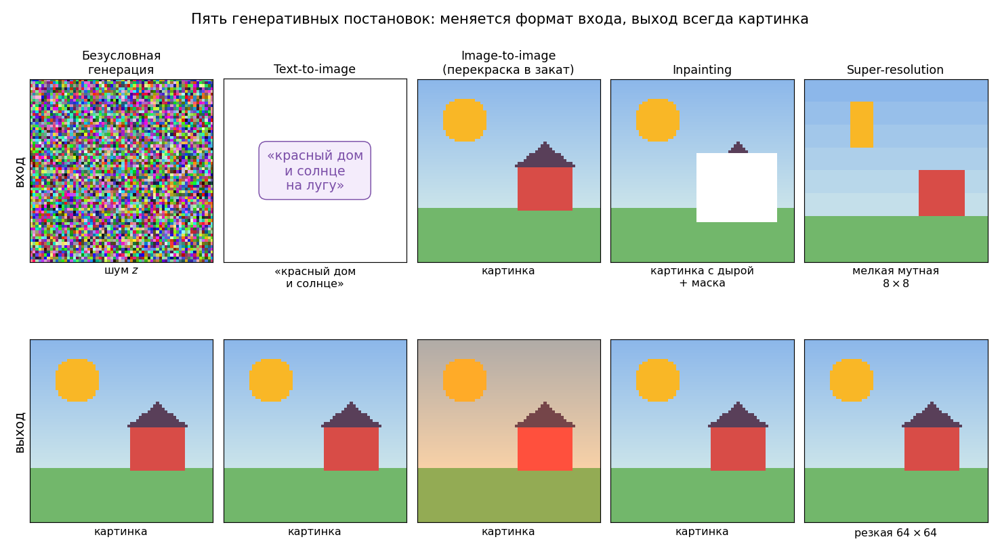
Пять колонок, в каждой верхний ряд — вход, нижний — выход. Слева направо: безусловная генерация (вход — цветной шум), text-to-image (вход — только текст в фиолетовой рамке, картинки на входе нет), image-to-image (вход — исходная сцена, выход — она же в тёплой закатной палитре), inpainting (вход — та же сцена с белой прямоугольной дырой поверх дома, выход — дорисованная сцена), super-resolution (вход — грубо пикселизованная версия, выход — резкая $64\times64$). Нижний ряд везде одного формата — это и есть смысл фразы, что у генерации меняется вход, а не выход. Семейства генеративных моделей
Вариационный автокодировщик кодирует картинку в распределение в латентном пространстве и декодирует обратно; обучается максимизацией ELBO — суммы реконструкционного члена и KL-регуляризатора.
Сэмплирование одношаговое и потому очень быстрое: взял $z$ из нормального распределения, прогнал через декодер, получил картинку.
Но реконструкционный член — это по сути $L_2$ или BCE по пикселям, а значит на него в полной мере действует эффект усреднения выше. Отсюда фирменная «размытость VAE». Именно поэтому VAE почти не используют как самостоятельный генератор — зато он идеален в роли сжимающего кодировщика внутри латентной диффузии.
В генеративно-состязательной сети генератор соревнуется с дискриминатором, и ключевое отличие в том, что лосс здесь не задан формулой, а выучивается. Дискриминатор сам находит признак, по которому подделку видно, — и размытие становится первым, за что генератор наказывают. Отсюда исторически лучшая резкость картинок.
Цена: нестабильность обучения (два игрока могут не сойтись) и mode collapse — схлопывание на узкое подмножество мод. Механика того и другого разобрана в вопросе про GAN; здесь важно только следствие для выбора семейства: GAN даёт качество за счёт разнообразия.
Диффузионная модель учится постепенно убирать шум. Обучение сводится к обычной регрессии на предсказание шума, поэтому оно стабильно, без состязательной динамики.
Мод покрывает лучше GAN — сеть учится восстанавливать любой пример из данных, схлопываться ей не выгодно. Расплата — десятки прогонов сети на одну картинку вместо одного.
Именно на диффузии построены Stable Diffusion, Midjourney, DALL·E 2/3. Механика — в отдельном вопросе.
Третий путь: сначала VQ-VAE или VQ-GAN кодирует картинку в решётку дискретных токенов (например $32 \times 32 = 1024$ индекса из словаря на 8192 записи), а затем трансформер генерирует эти токены один за другим — ровно как языковая модель генерирует текст. Так устроены DALL·E 1 и Parti.
Плюс: единый стек с языковыми моделями, что удобно для мультимодальных систем. Минусы: генерация строго последовательная и потому медленная, а порядок обхода токенов (обычно построчный) для картинки искусственен — у изображения нет естественного «слева направо».
Обратный перенос идеи тоже случился: диффузию стали применять к тексту — см. диффузионные языковые модели.
Normalizing flows строят обратимое преобразование шума в картинку и потому дают явную плотность $p(x)$ — можно честно посчитать правдоподобие. Расплата — жёсткие архитектурные ограничения (каждый слой обязан быть обратимым с вычислимым якобианом), из-за которых по качеству они долго проигрывали.
Современное продолжение — flow matching / rectified flow: вместо цепочки шумов учат прямое векторное поле, переносящее шум в данные. Обучается так же стабильно, как диффузия, но траектория почти прямая, поэтому шагов сэмплирования нужно меньше. На этом построены Stable Diffusion 3 и Flux.
Семейство Качество картинки Разнообразие Скорость сэмплинга Стабильность обучения Явная плотность VAE низкое (размыто) хорошее 1 прогон высокая нижняя оценка (ELBO) GAN высокое среднее, риск mode collapse 1 прогон низкая нет Диффузия высокое высокое 20–50 прогонов высокая нижняя оценка Авторегрессия по токенам высокое высокое сотни–тысячи шагов высокая да, точная Flow matching высокое высокое 4–20 прогонов высокая да Строки упорядочены исторически, и видно общий сюжет: от одношаговых моделей к многошаговым. Одношаговые (VAE, GAN) дешёвы на инференсе, но либо усредняют, либо нестабильны. Многошаговые (диффузия, авторегрессия) разбивают трудную задачу на много лёгких и потому обучаются спокойно, но платят прогонами сети.
Flow matching в последней строке — попытка получить и то и другое: качество многошаговых при 4–20 шагах вместо 50.
Где это применяется
- Дизайн и концепт-арт — черновики, мудборды, вариации логотипа: цена ошибки нулевая, скорость важнее точности.
- Реклама и e-commerce — генерация фонов и ассетов под товар, виртуальная примерка одежды.
- Синтетические данные для обучения детекторов и сегментаторов: редкие классы (авария на конвейере, редкая патология) проще нарисовать, чем набрать.
- Реставрация архивных фото — inpainting трещин, раскрашивание, апскейл.
- Медицина — аугментация редких патологий, синтез срезов для обучения, всегда под контролем врача.
- «Низкий лосс — хорошая генерация». Нет. Для диффузии лосс — это MSE по шуму, он не соотносится с красотой картинки; для GAN значение лосса вообще ничего не означает, потому что дискриминатор меняется вместе с генератором.
- Оценивать генератор по одной удачной картинке. Черри-пикинг — главный способ обмануть себя и читателя. Смотреть надо на выборку в тысячи сэмплов и на метрики распределения.
- Забывать про разнообразие. Модель, выучившая одну идеальную картинку, по любой попиксельной метрике на своём же сэмпле выглядит отлично. Разнообразие меряется отдельно.
- Обучать апскейлер под PSNR и удивляться, что он мылит. Это ровно эффект условного среднего из этого вопроса; подробности — в метриках генерации.
- Считать синтетические данные бесплатной заменой реальным. Между сгенерированным и настоящим доменом остаётся зазор (domain gap), и модель, обученная только на синтетике, на реальных кадрах проседает.
Чем генеративная задача принципиально отличается от дискриминативной?
В дискриминативной задаче у каждого входа есть один правильный ответ, записанный в разметке, и лосс меряет расхождение с ним. В генеративной правильных ответов бесконечно много: модель учит распределение $p(x \mid c)$ и умеет из него сэмплировать. Поэтому лосс перестаёт быть мерой качества, а метрики приходится строить как сравнение распределения с распределением, а не картинки с картинкой.
Почему обучение генератора по пиксельному $L_2$ даёт размытые картинки?
Минимум квадратичного лосса достигается на условном матожидании $\mathbb{E}[x \mid c]$ — на среднем по всем правдоподобным ответам, а не на одном из них. Если по входу возможны два исхода (граница в пикселе 10 или 14), MSE-оптимум ставит её в 12 с плавным переходом — картинка, которой не бывает ни в одном реальном исходе. Размытие возникает именно там, где данные неоднозначны: на границах и текстурах.
Какие есть три способа уйти от этого усреднения?
Первый — поменять лосс на неусредняющий: перцептивный лосс сравнивает активации предобученной сети, а не пиксели. Второй — сделать лосс обучаемым: дискриминатор GAN сам учится ловить размытие. Третий — не предсказывать картинку целиком за один шаг: диффузия и авторегрессия разбивают генерацию на много почти детерминированных шагов, и усреднять становится нечего.
Перечисли основные семейства генеративных моделей и их компромисс.
VAE — один прогон, стабильное обучение, но размытые картинки из-за реконструкционного $L_2$. GAN — резкие картинки за счёт обучаемого критика, но нестабильное обучение и mode collapse. Диффузия — высокое качество и разнообразие при стабильном обучении, ценой 20–50 прогонов сети. Авторегрессия по дискретным токенам — точное правдоподобие и общий стек с языковыми моделями, но сотни последовательных шагов. Flow matching — попытка получить качество диффузии за 4–20 шагов.
Какие бывают подтипы генеративных задач и что в них меняется?
Выход везде один — изображение; меняется формат условия. Безусловная генерация принимает только шум, text-to-image — текст, image-to-image — другую картинку, inpainting — картинку с маской, super-resolution — картинку низкого разрешения, редактирование по инструкции — картинку плюс текст. Именно поэтому одна и та же архитектура диффузии обслуживает все эти режимы: меняется лишь то, чем её обусловливают.
Почему VAE почти не используют как самостоятельный генератор, но постоянно используют внутри диффузии?
Как генератор он даёт размытые сэмплы: его реконструкционный член — попиксельный $L_2$ или BCE, со всеми последствиями усреднения. Но в роли сжимающего кодировщика он отличен: латентная диффузия использует VAE, чтобы уменьшить картинку $512\times512\times3$ до латента $64\times64\times4$, и запускает дорогой U-Net уже в 48 раз более компактном пространстве, а мелкие детали восстанавливает декодер.
-
Диффузионные модели: как из шума получается картинка
Диффузионная модель учится генерировать картинки, решая задачу «убрать шум». Берём настоящую картинку и постепенно портим её гауссовым шумом, пока от неё ничего не останется, — это прямой процесс, в нём нет обучаемых параметров. Затем учим сеть делать обратный шаг: по зашумлённой картинке предсказать, какой именно шум в неё добавили. Если сеть это умеет, генерация — это старт из чистого шума и многократное применение обратного шага.
Если совсем простыми словами: вместо того чтобы просить сеть нарисовать картинку с нуля (трудно), её просят чуть-чуть почистить почти готовую (легко) — и повторяют это 20–50 раз.
Прямой процесс: как портим картинку
Один шаг прямого процесса задаётся так:
$$q(x_t \mid x_{t-1}) = \mathcal{N}\!\left(x_t;\ \sqrt{1 - \beta_t}\, x_{t-1},\ \beta_t I\right)$$
Здесь $x_t$ — картинка на шаге $t$, $\beta_t \in (0, 1)$ — маленькое число из заранее заданного расписания (сколько шума добавить на этом шаге), $I$ — единичная матрица (шум независим по всем пикселям и каналам).
То есть: предыдущую картинку слегка приглушают множителем $\sqrt{1 - \beta_t}$ и подмешивают гауссов шум с дисперсией $\beta_t$. Приглушение нужно, чтобы суммарная дисперсия не разрасталась и в конце получилось ровно стандартное нормальное распределение.
Если бы каждый $x_t$ приходилось получать, прогоняя $t$ шагов подряд, обучение было бы разорительным. Но гауссовы шаги складываются в один гауссов, и получается замкнутая формула:
$$q(x_t \mid x_0) = \mathcal{N}\!\left(x_t;\ \sqrt{\bar\alpha_t}\, x_0,\ (1 - \bar\alpha_t) I\right), \qquad \alpha_t = 1 - \beta_t, \quad \bar\alpha_t = \prod_{s=1}^{t}\alpha_s$$
или, в виде рецепта:
$$x_t = \sqrt{\bar\alpha_t}\, x_0 + \sqrt{1 - \bar\alpha_t}\, \varepsilon, \qquad \varepsilon \sim \mathcal{N}(0, I)$$
$\bar\alpha_t$ — накопленное произведение, «сколько сигнала осталось» к шагу $t$. Оно монотонно падает от почти $1$ к почти $0$.
Пусть на каком-то шаге $\bar\alpha_t = 0.36$. Тогда
- вклад исходной картинки: $\sqrt{0.36} = 0.6$;
- вклад шума: $\sqrt{1 - 0.36} = \sqrt{0.64} = 0.8$.
То есть $x_t = 0.6\, x_0 + 0.8\, \varepsilon$: картинка ещё различима, но шум уже громче неё. Сумма квадратов коэффициентов равна $0.36 + 0.64 = 1$ — это и есть смысл нормировки, дисперсия $x_t$ сохраняется на всех шагах.
Практический вывод: чтобы получить пример для обучения на шаге $t = 700$, не надо делать 700 шагов — достаточно одного умножения и одного сложения.
Семь панелей слева направо для линейного расписания DDPM при $T=1000$. Слева $t=0$, $\bar\alpha_t=1.000$ — чистая сцена: голубое небо, жёлтое солнце слева вверху, красный дом с тёмной крышей, зелёная трава. При $t=100$ ($\bar\alpha_t=0.895$) сцена ещё узнаваема под зернистостью, при $t=250$ ($\bar\alpha_t=0.521$) дом различим, но цвета поплыли, при $t=400$ ($\bar\alpha_t=0.194$) от него осталось красноватое пятно, а начиная с $t=600$ ($\bar\alpha_t=0.026$) на глаз это уже чистый шум. Красная стрелка сверху — прямой процесс $q$, у него нет обучаемых параметров. Синяя стрелка снизу указывает в обратную сторону: это и есть то, чему учится сеть. Обратный процесс: чему учится сеть
Обратный шаг $p_\theta(x_{t-1} \mid x_t)$ тоже моделируют гауссианой, но её среднее выражают через предсказанный шум: сеть $\varepsilon_\theta(x_t, t)$ получает зашумлённую картинку и номер шага, а выдаёт оценку того самого $\varepsilon$, который в неё подмешали.
Лосс после всех упрощений оказывается обычным MSE:
$$L = \mathbb{E}_{x_0,\, t,\, \varepsilon}\left[\left\|\varepsilon - \varepsilon_\theta\!\left(\sqrt{\bar\alpha_t} x_0 + \sqrt{1 - \bar\alpha_t}\,\varepsilon,\ t\right)\right\|^2\right]$$
Матожидание берётся по трём случайным величинам: картинке из датасета, равномерно выбранному шагу $t \in \{1, \dots, T\}$ и сэмплу шума.
Честный вывод идёт от вариационной нижней оценки правдоподобия (той же ELBO, что и у VAE): диффузию можно рассматривать как иерархический VAE с фиксированным энкодером. В этой оценке каждый шаг даёт KL-дивергенцию между двумя гауссианами, а она сводится к квадрату разности средних с весовым коэффициентом, зависящим от $t$.
В DDPM авторы обнаружили, что если этот весовой коэффициент просто выбросить (положить равным 1 для всех $t$), качество картинок становится лучше, а лосс превращается в приведённый выше MSE. Так теоретически обоснованная, но громоздкая формула уступила место простой и работающей.
Сеть можно параметризовать тремя способами: предсказывать $x_0$ (исходную картинку), предсказывать $\varepsilon$ (шум) или предсказывать так называемую $v$-величину (их линейную комбинацию).
Предсказание шума победило на практике: на больших $t$ входная картинка почти неинформативна, и предсказывать $x_0$ означает угадывать её целиком — задача огромной дисперсии. Предсказывать $\varepsilon$ проще: значительная часть шума буквально видна во входе.
Ближе к нулевому шагу выгоднее уже $v$-параметризация, поэтому современные модели (SD 2.x и дальше) часто используют именно её.
Один шаг обучения диффузионной модели:
- взять картинку $x_0$ из датасета;
- вытянуть случайное $t$ равномерно из $1 \dots 1000$;
- вытянуть $\varepsilon \sim \mathcal{N}(0, I)$ того же размера, что картинка;
- собрать $x_t = \sqrt{\bar\alpha_t} x_0 + \sqrt{1 - \bar\alpha_t}\,\varepsilon$;
- посчитать $\varepsilon_\theta(x_t, t)$ и MSE с настоящим $\varepsilon$;
- шаг оптимизатора.
Ни дискриминатора, ни состязательной динамики, ни балансировки двух сетей — это обычная регрессия, и именно поэтому диффузия обучается стабильно.
Расписания шума
Линейное расписание (DDPM): $\beta_t$ растёт линейно от $10^{-4}$ до $0.02$ при $T = 1000$.
Проблема обнаружилась на маленьких разрешениях: линейное расписание уничтожает сигнал слишком рано, и заметная часть шагов тратится впустую — сеть на них учится восстанавливать картинку из практически чистого шума, что бесполезно.
Косинусное расписание (Improved DDPM) задаёт $\bar\alpha_t$ напрямую через косинус, так что сигнал убывает плавнее и середина диапазона остаётся содержательной.
Обе панели с линейными осями. Слева: $\bar\alpha_t$ против номера шага — красная кривая это линейное расписание DDPM, синяя косинусное из Improved DDPM. Точки на пунктирном уровне $\bar\alpha_t=0.5$ показывают, где теряется половина сигнала: у линейного уже на $t=258$, у косинусного только на $t=495$ — то есть линейное расходует картинку почти вдвое быстрее и оставляет вторую половину шагов работать по чистому шуму. Справа те же расписания в терминах коэффициентов формулы $x_t=\sqrt{\bar\alpha_t}x_0+\sqrt{1-\bar\alpha_t}\varepsilon$: сплошные линии — вес картинки, пунктирные — вес шума, красный с оранжевым это линейное расписание, синий с голубым косинусное. Есть тонкая, но заметная на практике деталь: у стандартных расписаний на последнем шаге $\bar\alpha_T$ не строго ноль, то есть в $x_T$ остаётся крошечная доля исходной картинки — в частности, её средняя яркость.
Обучение этим пользуется, а на инференсе мы стартуем из чистого шума, где такой подсказки нет. Результат — известный артефакт: модель плохо генерирует очень тёмные и очень светлые изображения, всё сползает к средней серости. Поправка zero-SNR принудительно доводит $\bar\alpha_T$ до нуля и чинит это.
Ускорение сэмплинга
Исходный сэмплер DDPM стохастичен и требует пройти все $T$ шагов — 1000 прогонов сети на картинку, что неприемлемо.
DDIM переформулирует обратный процесс как детерминированный: та же обученная сеть, но правило перехода не добавляет свежий шум на каждом шаге. Из этого следуют два выигрыша:
- можно идти по подпоследовательности шагов: $1000 \to 50$ или даже $\to 20$ почти без потери качества;
- результат однозначно определяется стартовым шумом, поэтому генерация воспроизводима, а интерполяция между двумя стартовыми шумами даёт осмысленный плавный переход между картинками.
Дальнейшее ускорение — дистилляция: LCM и модели с суффиксом Turbo обучают «студента» воспроизводить результат многошагового учителя за 1–4 шага.
Управление генерацией
Чтобы модель слушалась промпта сильнее, применяют classifier-free guidance (CFG). При обучении условие $c$ с вероятностью примерно $10\%$ заменяют на пустое $\varnothing$ — так одна и та же сеть учится работать и с условием, и без него.
На инференсе делают два прогона и комбинируют их:
$$\hat\varepsilon = \varepsilon_\theta(x_t, \varnothing) + w\left(\varepsilon_\theta(x_t, c) - \varepsilon_\theta(x_t, \varnothing)\right)$$
Здесь $w \ge 1$ — guidance scale. Разность в скобках — это направление «в сторону условия»: чем предсказание с промптом отличается от предсказания без него, тем сильнее промпт влияет. Множитель $w$ это направление усиливает.
При $w = 1$ формула вырождается в обычную условную генерацию — картинки разнообразные, но промпт соблюдается вяло.
При $w = 7$–$8$ (рабочий диапазон Stable Diffusion) картинка уверенно соответствует запросу.
При $w = 20$ начинаются артефакты: пересыщенные кислотные цвета, ломаная композиция, и все сэмплы на один промпт становятся похожи друг на друга — разнообразие падает.
Цена CFG — два прогона сети на каждом шаге, то есть инференс дорожает вдвое.
Схематические, но качественно верные кривые; обе панели с линейными осями. Слева: красная кривая с кружками — FID против guidance scale $w$ (левая ось, меньше лучше), синяя пунктирная с квадратами — CLIPScore (правая ось, больше лучше). Минимум FID здесь приходится на $w=3$ (зелёная звезда), тогда как CLIPScore продолжает расти и выходит на плато только к $w \approx 15$; жёлтая полоса отмечает рабочий диапазон Stable Diffusion $w \approx 7$–$8$, который лежит правее оптимума по FID. Справа те же данные как кривая компромисса: по горизонтали CLIPScore, по вертикали FID, точки подписаны значениями $w$. Видно, что после $w=3$ дальнейший рост guidance покупает соответствие промпту ценой ухудшения FID. Латентная диффузия
Диффузия в пикселях чудовищно дорога: U-Net приходится прогонять по тензору $512 \times 512 \times 3$, и так 20–50 раз.
Латентная диффузия (она же Stable Diffusion) переносит весь процесс в сжатое пространство:
- VAE-энкодер сжимает картинку $512 \times 512 \times 3$ (786 432 числа) в латент $64 \times 64 \times 4$ (16 384 числа) — в 48 раз меньше чисел;
- диффузионный U-Net работает уже с латентом;
- VAE-декодер разворачивает итоговый латент обратно в пиксели.
Разделение труда получается естественным: VAE отвечает за мелкие текстуры и высокие частоты (то, что он умеет и где его размытость не критична), а U-Net — за семантику и композицию.
Слева направо: картинка $512\times512\times3$ (786 432 числа) в голубой рамке пиксельного пространства, VAE-энкодер, латент $z$ на 16 384 числа, U-Net $\varepsilon_\theta(z_t,t,c)$ с красной петлёй на 20–50 шагов расшумления, VAE-декодер и готовая картинка. Оранжевая пунктирная рамка охватывает именно латентную часть — всё, что внутри неё, работает с тензором $64\times64\times4$. Снизу фиолетовая стрелка от текстового энкодера CLIP входит в U-Net: это cross-attention, через который латент обращается к эмбеддингам промпта. Подпись внизу фиксирует главный выигрыш: 786 432 / 16 384 = 48 раз. Текст кодируется CLIP-энкодером в последовательность эмбеддингов, а U-Net обращается к ней через cross-attention: запросы (queries) строятся из карт признаков картинки, ключи и значения (keys, values) — из токенов промпта. Механика внимания разобрана в отдельном вопросе, здесь важно только, что это единственный канал, через который промпт влияет на генерацию.
Сам U-Net — классическая энкодер-декодерная архитектура со skip-связями между симметричными уровнями и с обусловливанием на номер шага $t$ через синусоидальные эмбеддинги времени.
Практические режимы
img2img: исходную картинку кодируют в латент, зашумляют не до конца, а до промежуточного шага $t$, и оттуда расшумляют с новым промптом. Параметр
strengthзадаёт, до какого $t$ доводить: $0.3$ — лёгкая правка, силуэт и композиция сохраняются; $0.8$ — от оригинала останется только общая цветовая схема.Inpainting: на каждом шаге сэмплинга область вне маски принудительно заменяют на правильно зашумлённый оригинал, а свободно расшумляют только то, что внутри маски. Так дорисованный кусок оказывается согласован с контекстом, а остальная картинка не «плывёт».
- ControlNet — обучаемая копия энкодера U-Net, принимающая карту-условие: позу человека, карту краёв Canny, карту глубины, карту сегментации. Ключевая деталь — zero-convolution: связи от копии к основной сети инициализируются нулями, поэтому в начале дообучения ControlNet вообще ни на что не влияет и не может испортить базовую модель.
- LoRA — низкоранговые добавки к весам слоёв внимания. Веса замораживают, обучают только пару матриц малого ранга; файл получается на единицы–десятки мегабайт вместо гигабайтов, поэтому под каждый стиль или персонажа держат свою LoRA.
- IP-Adapter — обусловливание не текстом, а картинкой-референсом.
- Textual inversion — обучение одного нового токена-эмбеддинга под конкретный объект, при полностью замороженной модели.
- «При обучении модель проходит все $T$ шагов». Нет. На каждом шаге обучения берётся одно случайное $t$, и $x_t$ получается за одну операцию по замкнутой формуле. Цепочку проходят только на инференсе.
- Путать $T$ и число шагов сэмплинга. $T = 1000$ — длина расписания, с которым модель обучена. Сэмплеров вроде DDIM хватает на 20–50 шагов по подпоследовательности того же расписания. Это разные числа.
- Считать guidance scale ползунком качества. Это ползунок «соответствие промпту против разнообразия и естественности». По FID оптимум обычно достигается при куда меньшем $w$, чем по CLIPScore.
- Ждать, что низкий лосс означает хорошие картинки. Лосс диффузии — MSE по шуму; он не сопоставим между архитектурами и почти не коррелирует с качеством генерации. Мерить надо метриками распределения.
- Считать латентную диффузию «диффузией с VAE вместо декодера». VAE здесь не генерирует — он только сжимает и разжимает. Всё распределение картинок учит U-Net, но в латентном пространстве.
Опиши прямой процесс диффузии и его замкнутую форму.
Прямой процесс — марковская цепь, где на каждом шаге картинку приглушают множителем $\sqrt{1-\beta_t}$ и добавляют гауссов шум с дисперсией $\beta_t$; обучаемых параметров в нём нет. Благодаря складыванию гауссиан любой шаг получается напрямую: $x_t = \sqrt{\bar\alpha_t}\,x_0 + \sqrt{1-\bar\alpha_t}\,\varepsilon$, где $\bar\alpha_t = \prod_s \alpha_s$. Это принципиально для практики: на обучении не нужно прогонять $t$ шагов подряд, достаточно одного умножения и сложения.
Что предсказывает сеть и какой у диффузии лосс?
Сеть $\varepsilon_\theta(x_t, t)$ по зашумлённой картинке и номеру шага предсказывает тот шум, который в неё подмешали, а лосс — обычный MSE между настоящим $\varepsilon$ и предсказанным. Это упрощённая версия вариационной нижней оценки: весовые коэффициенты при слагаемых просто выбросили, и качество от этого стало лучше. Обучение поэтому сводится к стабильной регрессии без состязательной динамики.
Зачем нужно косинусное расписание вместо линейного?
Линейное расписание уничтожает сигнал слишком рано: половина картинки теряется уже к $t \approx 260$ из 1000, и оставшиеся сотни шагов сеть учится восстанавливать изображение практически из чистого шума, что бесполезно. Косинусное расписание убирает сигнал плавнее — половина теряется около $t \approx 495$, — поэтому содержательными остаются все шаги. Это особенно заметно на маленьких разрешениях.
Что такое classifier-free guidance и чем платят за большое $w$?
Сеть обучают одновременно с условием и без него, случайно заменяя промпт на пустой примерно в 10% случаев. На инференсе делают два прогона и экстраполируют: $\hat\varepsilon = \varepsilon_\theta(\varnothing) + w(\varepsilon_\theta(c) - \varepsilon_\theta(\varnothing))$, где разность — направление «в сторону промпта». Большое $w$ усиливает соответствие тексту, но пересыщает цвета, добавляет артефакты и сокращает разнообразие; плюс каждый шаг стоит двух прогонов сети.
Что такое латентная диффузия и какой выигрыш она даёт?
Это Stable Diffusion: VAE-энкодер сжимает картинку $512\times512\times3$ в латент $64\times64\times4$, диффузионный U-Net с cross-attention к тексту работает уже в этом пространстве, VAE-декодер разворачивает результат обратно. По числу чисел сжатие ровно в 48 раз (786 432 против 16 384), во столько же примерно дешевеет каждый шаг. Разделение труда: VAE отвечает за текстуры и высокие частоты, U-Net — за семантику и композицию.
Как из одной и той же модели получаются img2img, inpainting и ControlNet?
img2img кодирует исходник в латент, зашумляет его только до промежуточного $t$ (параметр strength) и расшумляет обратно с новым промптом. Inpainting на каждом шаге принудительно возвращает область вне маски к правильно зашумлённому оригиналу, свободно расшумляя только внутренность маски. ControlNet добавляет обучаемую копию энкодера U-Net, принимающую карту-условие (позу, края, глубину), с zero-convolution на выходе — в начале обучения она даёт нулевой вклад и не может испортить базовую модель.
-
Метрики генеративных моделей: FID, IS, KID, CLIPScore
Оценить генеративную модель — значит ответить на три разных вопроса:
- Реалистичность — похожи ли сгенерированные картинки на настоящие?
- Разнообразие — покрывает ли модель всё богатство реальных данных или крутит одно и то же?
- Управляемость — соответствует ли результат промпту или другому условию?
Ни на один из них попиксельное сравнение с эталоном ответить не может, потому что эталона нет. Поэтому все основные метрики генерации сравнивают выборку с выборкой, а не картинку с картинкой.
Самое частое заблуждение: «у модели A лосс 0.031, у модели B 0.028, значит B лучше».
Лосс диффузии — это MSE между настоящим шумом и предсказанным. Он усредняется по случайным $t$, и его значение почти целиком определяется тем, как распределены эти $t$ и какое расписание использовано. Модель, генерирующая шедевры, и модель, генерирующая усреднённую кашу, могут иметь одинаковый лосс.
Сравнивать значения лосса между разными архитектурами, расписаниями или разрешениями бессмысленно в принципе. Лосс годится только чтобы убедиться, что обучение идёт и не разошлось.
FID — основная метрика
FID сравнивает два набора картинок — реальные и сгенерированные — в пространстве признаков предобученного классификатора.
Процедура:
- прогнать обе выборки через InceptionV3 (архитектура Inception), обученную на ImageNet, и взять активации слоя pool3 — 2048-мерные векторы;
- по каждой выборке посчитать среднее $\mu$ и ковариационную матрицу $\Sigma$;
- посчитать расстояние Фреше между двумя гауссианами, подогнанными к этим облакам:
$$\text{FID} = \left\|\mu_r - \mu_g\right\|_2^2 + \operatorname{Tr}\!\left(\Sigma_r + \Sigma_g - 2\left(\Sigma_r \Sigma_g\right)^{1/2}\right)$$
Индекс $r$ — real (реальные), $g$ — generated (сгенерированные). Чем меньше, тем лучше; ноль означает совпадение первых двух моментов.
Формула распадается на два независимых по смыслу члена.
Первый, $\|\mu_r - \mu_g\|^2$ — квадрат расстояния между центрами двух облаков признаков. Он растёт, когда модель систематически смещена: генерирует всё чуть темнее, чуть более мультяшно, с другим типичным содержанием.
Второй, со следом матриц — расхождение форм облаков. Он растёт, когда у модели не тот разброс: слишком маленький (схлопывание разнообразия) или ориентированный в других направлениях.
Ключ: облака могут иметь один и тот же центр, но разный размер — и FID это увидит вторым слагаемым.
Три сценария, во всех синие точки и сплошные синие эллипсы — реальные картинки, красные точки и пунктирные красные эллипсы — сгенерированные; вместо 2048 измерений взяты два для наглядности, эллипсы соответствуют одной и двум сигмам. Слева облака практически совпали, оба слагаемых близки к нулю, FID = 0.04. В центре центры разъехались, при том что форма облака та же: первое слагаемое равно 10.37, след почти нулевой, FID = 10.37 — за расхождение отвечает только сдвиг. Справа центры совпали ($\|\mu_r-\mu_g\|^2 = 0.01$), но красное облако схлопнулось в маленькое пятно: работает уже второй член, след равен 1.04, FID = 1.05. Это ровно тот случай mode collapse, который первое слагаемое в одиночку не поймало бы. FID — смещённая оценка, и смещение зависит от числа сэмплов $N$: чем меньше выборка, тем больше получается FID, даже если обе выборки взяты из одного и того же распределения.
Практические следствия:
- де-факто стандарт — 50 000 сгенерированных сэмплов против полного реального набора;
- FID на 1–5 тысячах картинок заметно завышен и шумит;
- нельзя сравнивать значения, посчитанные на разном $N$, на разных реализациях Inception (веса TensorFlow и PyTorch дают разные числа), при разном способе ресайза к $299 \times 299$ или на разных реальных наборах.
Абсолютное число FID осмысленно только внутри одного протокола. Фраза «у нас FID 12» без указания протокола не значит ничего.
Слева: обе выборки взяты из одного и того же 64-мерного нормального распределения, так что истинный FID равен нулю (зелёная пунктирная линия). Ось $N$ логарифмическая, ось FID линейная. Красная кривая показывает, что при $N=200$ оценка равна примерно 11.1 — целиком артефакт малой выборки, никакой модели тут нет вообще, — и падает до примерно 0.04 только к $N=50\,000$. Справа: три гипотетические модели, синие столбики — precision, оранжевые — recall, красным подписан FID. У модели с mode collapse precision 0.88 при recall 0.11, у шумной модели наоборот 0.29 и 0.71, но FID у них почти одинаковый — 31.0 против 33.5. Одно число FID не различает эти две совершенно разные болезни, пара precision/recall различает сразу. Внутри стандартного протокола (50 000 сэмплов, InceptionV3 из torchmetrics) грубые ориентиры такие:
- FID 2–5 на ImageNet или FFHQ — уровень лучших современных моделей;
- FID 10–30 — работающая, но заметно отличимая от реальности модель;
- FID > 50 — картинки узнаваемо синтетические.
Ещё одна оговорка: признаки берутся из сети, обученной на ImageNet. Для доменов, далёких от ImageNet — рентген, спутниковые снимки, гистология, — эти признаки описывают данные плохо, и FID там надо интерпретировать очень осторожно или считать по домен-специфичному энкодеру.
Inception Score
$$\text{IS} = \exp\left(\mathbb{E}_{x}\left[\operatorname{KL}\!\left(p(y \mid x) \,\|\, p(y)\right)\right]\right)$$
Здесь $p(y \mid x)$ — распределение по 1000 классам ImageNet, которое InceptionV3 выдаёт на одну картинку, $p(y)$ — то же распределение, усреднённое по всей сгенерированной выборке, $\operatorname{KL}$ — расхождение Кульбака–Лейблера.
Смысл: метрика велика, когда каждая отдельная картинка классифицируется уверенно ($p(y\mid x)$ острое, низкая энтропия — значит на ней изображён распознаваемый объект), а по выборке в целом классы разнообразны ($p(y)$ близко к равномерному, высокая энтропия).
- IS вообще не смотрит на реальные данные. Он оценивает выборку саму по себе, поэтому не может заметить, что модель генерирует правдоподобные, но совершенно не такие картинки, как в датасете.
- Он привязан к 1000 классам ImageNet. Для лиц, медицинских снимков, спутниковых кадров классификатор выдаёт мусор, и число теряет смысл.
- Он слеп к внутриклассовому mode collapse. Модель, выучившая ровно одну картинку на каждый из 1000 классов, получит отличный IS: каждая уверенно классифицируется, классы разнообразны.
- Он легко накручивается — достаточно генерировать преувеличенно «прототипические» объекты.
FID лишён первых двух проблем, поэтому в статьях IS сегодня приводят разве что как дань традиции.
KID и метрики на малых выборках
KID меряет расхождение тех же 2048-мерных признаков через MMD (maximum mean discrepancy) с полиномиальным ядром — это оценка того, насколько различаются два распределения, построенная на попарных сходствах точек.
Два отличия от FID, оба практических:
- KID не предполагает гауссовость — он не подгоняет к облакам эллипсы, а работает с ними как есть;
- KID — несмещённая оценка, поэтому его можно считать на сотнях и тысячах сэмплов и сравнивать между экспериментами с разным $N$.
Именно поэтому KID предпочитают на маленьких датасетах и в исследованиях, где 50 000 сэмплов не сгенерировать.
Precision и recall для генеративных моделей
FID — одно число, в которое смешаны и реалистичность, и разнообразие. Модель со схлопнувшимися модами и модель, генерирующая разнообразный мусор, могут получить один и тот же FID, хотя чинить их надо противоположными способами.
Метрики precision/recall для генеративных моделей это разделяют. По признакам строят приближения многообразий: вокруг каждой точки берут шар радиусом до её $k$-го ближайшего соседа (обычно $k = 3$), объединение шаров и считают многообразием.
- Precision — доля сгенерированных точек, попавших в многообразие реальных. Это про качество: насколько то, что мы делаем, вообще похоже на правду.
- Recall — доля реальных точек, попавших в многообразие сгенерированных. Это про разнообразие: насколько мы покрыли то, что бывает.
- Mode collapse: precision высокий (то, что модель рисует, реалистично), recall низкий (рисует она одно и то же). Пример на графике выше: $0.88$ и $0.11$.
- Слишком широкая, шумная модель: precision низкий (много артефактов), recall высокий (разброс большой). Пример: $0.29$ и $0.71$.
FID у обеих оказался почти одинаковым — $31.0$ и $33.5$. Диагноз даёт только пара чисел.
Более устойчивые к выбросам версии тех же идей — density и coverage: они не так чувствительны к единичным далёким точкам, которые могут раздуть шар $k$-го соседа.
Метрики соответствия условию
CLIPScore — косинусная близость между эмбеддингом сгенерированной картинки и эмбеддингом промпта в общем пространстве CLIP:
$$\text{CLIPScore} = \max\left(0,\ \cos\left(E_{\text{img}}(x),\ E_{\text{text}}(c)\right)\right)$$
Он меряет соответствие тексту, а не качество: красивая, но не по теме картинка получит низкий CLIPScore, уродливая но точная по промпту — высокий.
Типичные значения — $0.25$–$0.35$. Это косинус, а не вероятность и не доля: числа около трети здесь нормальны, а $0.9$ не бывает никогда.
Эти две метрики тянут в разные стороны, и параметр, который их разводит, — guidance scale.
Рост $w$ прижимает генерацию к промпту: CLIPScore растёт. Одновременно распределение сэмплов сужается и уходит от реального: FID ухудшается.
Поэтому в статьях по text-to-image принято приводить не два числа, а кривую компромисса: для набора значений $w$ рисуют точки (CLIPScore, FID) и сравнивают модели по тому, чья кривая целиком лежит левее и ниже. Одно число без указания $w$ ничего не доказывает.
Парные метрики: когда эталон всё-таки есть
В части задач правильный ответ известен: в super-resolution есть оригинал высокого разрешения, в inpainting — исходный неповреждённый фрагмент, в реставрации — эталонный скан. Там можно сравнивать картинку с картинкой напрямую.
$$\text{PSNR} = 10 \log_{10} \frac{\text{MAX}^2}{\text{MSE}}$$
где $\text{MAX}$ — максимальное значение пикселя ($255$ для 8-битных изображений), $\text{MSE}$ — среднеквадратичная ошибка по всем пикселям. Единица измерения — децибелы, больше значит лучше.
Численно: при $\text{MSE} = 25$ получаем $10\log_{10}(65\,025 / 25) = 10\log_{10} 2601 \approx 34.15$ дБ. Если ошибка вырастет вчетверо, до $\text{MSE} = 100$, PSNR упадёт до $\approx 28.13$ дБ — то есть на $6$ дБ, что соответствует удвоению среднеквадратичной ошибки.
SSIM (structural similarity) сравнивает не пиксели напрямую, а локальные статистики: яркость, контраст и корреляцию структуры в скользящем окне. Значения от $0$ до $1$, больше лучше. Ближе к человеческому восприятию, чем PSNR, но всё ещё меряет низкоуровневое сходство.
LPIPS (learned perceptual image patch similarity) — расстояние между активациями предобученной свёрточной сети (AlexNet или VGG), с обучаемыми весами по каналам. Меньше значит лучше. Из трёх это единственная метрика, которую специально калибровали по человеческим суждениям, и она заметно лучше остальных предсказывает, какую из двух картинок человек назовёт более похожей на эталон.
Размытая картинка систематически выигрывает по PSNR у резкой, но чуть смещённой.
Причина ровно та же, что в основах генерации: PSNR — монотонная функция от MSE, а MSE-оптимум есть условное среднее по всем правдоподобным исходам. Модель, обученная максимизировать PSNR, учится хеджировать: там, где не уверена, где именно проходит граница, она рисует плавный переход.
Отсюда практическое правило: апскейлеры, обученные под PSNR, визуально мылят, и именно поэтому в super-resolution перешли на комбинации перцептивного лосса с состязательным (SRGAN, ESRGAN, Real-ESRGAN), а качество меряют по LPIPS, сознательно жертвуя PSNR.
Все автоматические метрики — суррогаты. FID считает признаки сетью, обученной на ImageNet под совсем другую задачу; CLIPScore наследует все смещения CLIP; LPIPS откалиброван на конкретном датасете попарных сравнений.
Поэтому финальный арбитр — люди: side-by-side сравнения (два сэмпла, вопрос «какой лучше») и ELO-рейтинги на аренах вроде Chatbot Arena для картинок. Это дорого и медленно, зато меряет ровно то, ради чего модель делается.
Разумный рабочий процесс: автоматические метрики для быстрых итераций и отбора кандидатов, человеческая оценка перед релизом.
- Сравнивать FID из разных статей. Без совпадения $N$, реализации Inception, способа ресайза и реального набора эти числа несопоставимы.
- Считать FID на 1000 сэмплов и радоваться числу. На малых выборках FID завышен в разы — при $N = 200$ он даёт около 11 даже там, где истинное значение ноль.
- Считать, что низкий FID означает высокое качество каждой картинки. FID — метрика распределения. Она ничего не говорит про конкретный сэмпл и не заметит, что каждая десятая картинка сломана, если статистики в целом сошлись.
- Читать CLIPScore как вероятность. Это косинус; $0.31$ — хороший результат, а не «31% правильности».
- Оптимизировать генератор напрямую под FID. Метрика тут же перестаёт работать: под неё можно подогнать статистики признаков, не улучшив картинки.
- Мерить text-to-image одним числом. Нужны минимум два: FID (или человеческая оценка) и CLIPScore, а лучше кривая по guidance scale.
Почему для генеративных моделей не работают обычные метрики и почему лосс не годится?
У сгенерированной картинки нет эталона, с которым её можно сравнить: правильных ответов бесконечно много. Лосс диффузии — это MSE между настоящим и предсказанным шумом; его величина определяется расписанием и распределением шагов $t$, а не красотой картинок, поэтому модель-шедевр и модель-каша могут иметь одинаковый лосс. Сравнивать лоссы между архитектурами бессмысленно; годятся только метрики, сравнивающие выборку с выборкой.
Как считается FID и что означают его два слагаемых?
Обе выборки прогоняют через InceptionV3 и берут 2048-мерные активации pool3, по каждой считают среднее $\mu$ и ковариацию $\Sigma$, затем меряют расстояние Фреше между подогнанными гауссианами. Первое слагаемое $\|\mu_r - \mu_g\|^2$ — насколько разъехались центры облаков признаков, то есть систематическое смещение модели. Второе, со следом матриц, — насколько разошлись формы облаков, то есть разброс и его направления; именно оно ловит схлопывание разнообразия при совпадающих центрах.
Почему FID нельзя сравнивать между разными протоколами?
FID — смещённая оценка, и смещение зависит от числа сэмплов: на выборках из одного и того же распределения он даёт около 11 при $N=200$ и около 0.04 при $N=50\,000$. Кроме $N$, на число влияют реализация Inception (веса TF и PyTorch дают разные значения), способ ресайза к $299\times299$ и выбор реального набора. Поэтому стандарт — 50 000 сэмплов, и любое значение FID осмысленно только внутри своего протокола.
В чём слабости Inception Score?
Он не смотрит на реальные данные вообще, поэтому не заметит, что модель генерирует правдоподобные, но совсем другие картинки. Он привязан к 1000 классам ImageNet и бессмыслен на лицах, медицине, спутниковых снимках. Он слеп к внутриклассовому mode collapse: модель, выучившая ровно одну картинку на класс, получит отличный IS. И он легко накручивается генерацией преувеличенно прототипических объектов.
Что дают precision и recall для генеративных моделей поверх FID?
Они разделяют то, что FID смешивает в одно число. По признакам строят многообразия через шары до $k$-го ближайшего соседа: precision — доля сгенерированных точек внутри многообразия реальных (качество), recall — доля реальных точек внутри многообразия сгенерированных (разнообразие). Модель с mode collapse даёт высокий precision при низком recall, шумная модель — наоборот, а FID у них может оказаться почти одинаковым.
Почему нельзя обучать апскейлер под PSNR?
PSNR — монотонная функция от MSE, а MSE-оптимальный ответ есть условное среднее по всем правдоподобным исходам. Там, где непонятно, где именно проходит граница, модель выгоднее нарисовать плавный переход, чем рискнуть резким краем в неверном месте, — поэтому размытая картинка систематически выигрывает по PSNR у резкой и чуть смещённой. Отсюда переход в super-resolution на перцептивные и состязательные лоссы и на LPIPS как метрику.
-
Интерпретация признаков: Grad-CAM и аналоги
Интерпретация предсказания в CV — задача построить по картинке $x$ и выбранному классу $c$ карту важности $M \in \mathbb{R}^{H \times W}$, значение которой в пикселе показывает, насколько этот пиксель повлиял на предсказание $y^c$.
Это не обучаемая задача: карта не имеет разметки, её не с чем сравнить и нельзя оптимизировать напрямую. Метод интерпретации — это функция от уже обученной модели, а не отдельная модель.
Формат:
- вход: обученная сеть $f$, изображение $x$, индекс интересующего класса $c$;
- выход: тепловая карта размером с изображение (или меньше, с последующим апсемплом), обычно нормированная в $[0, 1]$ и отрисованная поверх картинки.
Три разных причины, и путать их не стоит.
1. Отладка датасета. Классический сюжет: классификатор «волк против хаски» показывает accuracy $0.90$, а карта важности указывает на снег на заднем плане. Модель выучила не животное, а фон, потому что в обучающей выборке волки почти всегда сняты зимой. Это shortcut learning — сеть нашла признак, который коррелирует с меткой в данных, но не имеет отношения к задаче. Без карты важности такую проблему обнаруживают только в продакшене.
2. Доверие человека. В медицине врач не примет предсказание «вероятность патологии $0.87$» без указания области. Карта важности превращает чёрный ящик в инструмент, с которым можно спорить: врач видит, что сеть смотрела на нужную долю лёгкого — или на маркер производителя аппарата в углу снимка.
3. Аудит и регуляторика. В ряде юрисдикций автоматическое решение, затрагивающее человека, должно сопровождаться объяснением. Карта важности — минимальная форма такого объяснения.
Чего интерпретация не делает: она не доказывает причинность, не гарантирует корректность модели и не заменяет тестирование.
От CAM к Grad-CAM
CAM (Class Activation Mapping) — исходная идея. Она работает только для сетей строго определённой архитектуры: последний свёрточный слой $\to$ global average pooling $\to$ один линейный слой $\to$ логиты.
В такой сети логит класса $c$ раскладывается тривиально:
$$y^c = \sum_k w_k^c \cdot \frac{1}{Z}\sum_{i,j} A^k_{ij} = \frac{1}{Z}\sum_{i,j} \underbrace{\sum_k w_k^c A^k_{ij}}_{\text{карта } M^c_{ij}}$$
где $A^k$ — $k$-я карта активаций последнего свёрточного слоя, $w_k^c$ — вес линейного слоя. Перестановка сумм показывает: логит равен среднему по пространственным позициям некоторой карты $M^c$, и эта карта и есть CAM.
Ограничение фатальное: веса $w_k^c$ берутся из линейного слоя, поэтому между свёрткой и логитом не должно быть ничего, кроме GAP. Сеть с двумя полносвязными слоями, с дропаутом или с любой другой головой уже не подходит. Ради CAM архитектуру приходилось перестраивать и переобучать.
Grad-CAM снимает это ограничение одной заменой: вместо весов линейного слоя берутся усреднённые градиенты логита по картам активаций.
$$\alpha_k^c = \frac{1}{Z}\sum_{i,j} \frac{\partial y^c}{\partial A^k_{ij}}, \qquad M^c = \mathrm{ReLU}\left(\sum_k \alpha_k^c A^k\right)$$
Разберём по шагам:
- Прямой проход: получить карты активаций $A^k$ выбранного свёрточного слоя (обычно последнего) и логит $y^c$.
- Обратный проход: посчитать $\partial y^c / \partial A^k$ обычным backprop, остановившись на этом слое.
- Усреднить градиент по пространству — получить одно число $\alpha_k^c$ на карту. Интерпретация: насколько $k$-я карта важна для класса $c$.
- Взвесить и сложить карты с этими весами.
- Применить ReLU.
Для сети вида «свёртки $\to$ GAP $\to$ линейный слой» Grad-CAM сводится к CAM: прямое дифференцирование даёт $\alpha_k^c = w_k^c / Z$, то есть веса совпадают с точностью до одной положительной константы $1/Z$, где $Z$ — число пространственных позиций карты. Общий множитель исчезает при нормировке карты, поэтому итоговая тепловая карта та же самая. То есть Grad-CAM — честное обобщение CAM на произвольную голову, а не другой метод.
Зачем ReLU. Отрицательные значения $\sum_k \alpha_k^c A^k$ соответствуют областям, которые свидетельствуют против класса $c$. Обычно нас интересует вопрос «что говорит за», поэтому отрицательная часть отбрасывается. Без ReLU карта показывала бы смесь доводов за и против и была бы нечитаемой.
Пять панелей слева направо. Первая — входное синтетическое изображение в градациях серого: тёмный фон с двумя светлыми пятнами, крупным слева и мелким справа, подпись класс собака. Вторая — сетка из шести маленьких карт активаций A1–A6 в палитре viridis, каждая 7×7, подписана как последний свёрточный слой. Третья — столбчатая диаграмма весов alpha_k, полученных усреднением градиентов: зелёные положительные столбцы +0.92, +0.61, +0.18, +0.29 и красные отрицательные -0.55 и -0.74, то есть часть весов отрицательна. Четвёртая — взвешенная сумма в диверегентной палитре coolwarm с цветовой шкалой от -1.2 до 1.2: красное ядро слева вверху и синее, то есть отрицательное, пятно справа внизу. Пятая — та же входная картинка с наложенной сглаженной картой в палитре jet после ReLU и апсемпла: красное ядро точно поверх крупного левого пятна, обведённое белой изолинией, а правое мелкое пятно осталось невыделенным, потому что после ReLU отрицательный вклад отброшен. Панель 4 — ключевая для понимания. Взвешенная сумма содержит и положительные, и отрицательные значения: часть карт активаций входит с отрицательными весами $\alpha_k$, потому что соответствующие признаки говорят против класса «собака». На панели 5 после ReLU остаётся только положительная часть — и она совпадает с крупным объектом слева, а не с мелким объектом справа, который в этом синтетическом примере как раз и давал отрицательный вклад.
Варианты и на каком слое считать
Grad-CAM++ заменяет простое усреднение градиентов взвешенным, с весами, построенными из вторых и третьих производных. Практический эффект: лучше работает, когда на картинке несколько экземпляров одного класса — обычный Grad-CAM в такой ситуации склонен подсвечивать только один из них.
Score-CAM вообще не использует градиенты. Каждая карта активаций апсемплится до размера картинки, нормируется и используется как маска: сеть прогоняется на замаскированном изображении, и вес карты — это полученный score класса. Плюсы: не страдает от шумных и зашумлённых градиентов, работает с недифференцируемыми блоками. Минус: требует $K$ дополнительных forward-проходов, где $K$ — число каналов, то есть на порядки медленнее.
HiResCAM вместо усреднения градиента по пространству умножает активации на градиент поэлементно: $M = \mathrm{ReLU}\left(\sum_k \frac{\partial y^c}{\partial A^k} \odot A^k\right)$. Даёт гарантию, что подсвеченные области действительно участвуют в вычислении логита (для архитектур с линейной головой поверх свёрток), тогда как обычный Grad-CAM такой гарантии не даёт.
LayerCAM комбинирует карты с нескольких слоёв, получая более детализированный результат.
Стандарт — последний свёрточный слой. Причина в компромиссе между двумя свойствами:
- пространственное разрешение падает с глубиной: у ResNet-50 последний свёрточный блок даёт $7 \times 7$ при входе $224 \times 224$. Карта грубая, апсемпл в $32$ раза даёт размытое пятно;
- семантичность растёт с глубиной: ранние слои реагируют на края и текстуры одинаково для всех классов, поздние — на объектные части.
Ранний слой даст красивую детальную карту, не зависящую от класса: подсветятся все контуры на картинке независимо от того, спрашиваете вы про собаку или про самолёт. Такая карта бесполезна как объяснение — она не отвечает на вопрос «почему именно этот класс».
Поэтому берут последний слой, где семантика уже есть, а пространственная привязка ещё не потеряна полностью. Практический компромисс — LayerCAM или усреднение карт с двух последних блоков.
Три семейства методов, которые часто путают.
Градиент по входу (vanilla saliency). $M = \left|\partial y^c / \partial x\right|$ — производная логита прямо по пикселям. Полное разрешение, но карта крайне шумная: градиент глубокой сети по входу почти случаен из-за насыщения активаций. Варианты SmoothGrad усредняют градиент по зашумлённым копиям входа, чтобы снизить шум.
Integrated Gradients. Аксиоматический метод: берётся базовая точка $x'$ (обычно чёрное изображение) и интегрируется градиент вдоль прямой от $x'$ к $x$:
$$\text{IG}_i(x) = (x_i - x_i')\int_0^1 \frac{\partial f(x' + t(x - x'))}{\partial x_i}\,dt$$
На практике интеграл приближается суммой по $50$–$200$ точкам. Свойство completeness: сумма атрибуций по всем пикселям точно равна $f(x) - f(x')$, то есть вклады «сходятся» к разнице предсказаний. Минусы: дорого (десятки forward-backward проходов) и результат сильно зависит от выбора базовой точки — чёрное изображение неявно объявляет чёрный цвет «отсутствием информации», что неверно для тёмных снимков.
CAM-семейство. Работает не с пикселями, а с картами активаций. Отсюда низкое разрешение, но и низкий шум, и явная привязка к классу. Один backward-проход, то есть почти бесплатно.
Кратко: saliency и IG отвечают на вопрос «какие пиксели», CAM — «какая область». Для человека вторая формулировка обычно полезнее.
У трансформеров нет свёрточных карт активаций в привычном смысле, зато есть матрицы внимания. Наивная идея «просто отрисовать внимание последнего слоя от CLS-токена к патчам» работает плохо: из-за остаточных связей информация течёт мимо attention, и одна матрица не описывает весь путь.
Attention rollout учитывает это: в каждом слое матрица внимания $A_l$ заменяется на $\tilde{A}_l = 0.5 A_l + 0.5 I$ (половина веса — на остаточную связь), после чего матрицы всех слоёв перемножаются:
$$R = \tilde{A}_L \cdot \tilde{A}_{L-1} \cdots \tilde{A}_1$$
Строка, соответствующая CLS-токену, и даёт карту важности по патчам. Разрешение равно сетке патчей — например, $14 \times 14$ при патче $16$ и входе $224$.
Важно: rollout не зависит от класса — он показывает, куда сеть смотрит вообще, а не почему выбрала конкретный класс. Для классозависимого объяснения используют Grad-CAM по выходу последнего блока трансформера (с правильным решейпом токенов в сетку) или специализированные методы вроде Transformer Attribution. Механика внимания разобрана в self-attention, а обучаемые модули внимания внутри свёрточных сетей — в CBAM; их карты, кстати, тоже можно визуализировать, и это отдельный источник интуиции о том, куда смотрит сеть.
Как проверить, что объяснение честное
Карту важности нельзя сравнить с эталоном — эталона нет. Но её можно проверить косвенно: если карта правда указывает на важные пиксели, то удаление этих пикселей должно быстро ломать предсказание.
Deletion. Пиксели удаляются (заменяются на серый, размытый вариант или шум) в порядке убывания важности, и на каждом шаге замеряется вероятность истинного класса. Строится кривая «доля удалённых пикселей $\to$ вероятность». Чем ниже площадь под кривой (AUC), тем лучше: хорошая карта роняет предсказание сразу.
Insertion. Зеркальная процедура: старт с размытого изображения, пиксели возвращаются в порядке убывания важности. Чем выше AUC, тем лучше.
Обе метрики сравниваются с базовой линией — случайным порядком пикселей. Если карта не отличается от случайной, объяснение бессмысленно.
Insertion обычно надёжнее deletion: удаление пикселей создаёт изображения, которых не бывает в природе (дыры, артефакты), и падение вероятности может объясняться выходом за пределы обучающего распределения, а не потерей важной информации.
Две панели с линейными осями от 0 до 1. Слева deletion: по горизонтали доля удалённых пикселей, по вертикали вероятность истинного класса. Синяя кривая Grad-CAM резко падает почти до нуля уже к 30 процентам удалённых пикселей, площадь под ней залита бледно-синим, AUC = 0.14. Серая пунктирная кривая случайного порядка спадает почти линейно, AUC = 0.55; чем ниже AUC, тем лучше. Справа insertion: по горизонтали доля возвращённых пикселей. Зелёная кривая Grad-CAM круто растёт и к 40 процентам выходит на плато около 0.95, AUC = 0.82, площадь под ней залита бледно-зелёным; серая пунктирная кривая случайного порядка растёт медленно, AUC = 0.42; здесь чем выше AUC, тем лучше. Разрыв между цветной и серой кривой в обеих панелях и есть доказательство того, что карта указывает на действительно важные пиксели. Работа Adebayo et al. (2018) поставила методам объяснения простейший вопрос: если полностью испортить модель, изменится ли объяснение?
Два теста:
- Каскадная рандомизация весов. Веса модели переинициализируются случайными значениями слой за слоем, начиная с последнего (не обнуляются: зануление — качественно другой эксперимент, после которого сеть выдаёт константу). После каждого шага карта пересчитывается и сравнивается с исходной по ранговой корреляции. Осмысленный метод должен давать быстро падающую корреляцию: модель уже другая, объяснение обязано стать другим.
- Рандомизация меток. Модель переобучается на случайно перемешанных метках. Она запоминает шум и не выучивает ничего осмысленного — объяснения должны развалиться.
Результат оказался неприятным: Guided Backprop и Guided Grad-CAM тесты не проходят. Их карты почти не меняются при полном разрушении модели — они фактически работают как детектор границ на входном изображении. Красиво выглядящая карта, не зависящая от весов, объяснением не является.
Grad-CAM тесты проходит: его карта разваливается уже после рандомизации нескольких последних блоков.
Практический вывод: перед тем как показывать карты заказчику или врачу, прогоните sanity check на своей модели. Это десять строк кода и один вечер, а цена ошибки — доверие к системе, построенное на артефакте.
График с линейными осями. По горизонтали шесть стадий каскадной рандомизации весов слева направо: исходная модель, logits, block4, block3, block2, block1; подпись под осью гласит, что слева направо переинициализируется случайными значениями всё больше слоёв, от последнего к первому. По вертикали ранговая корреляция карты с исходной, от 0 до 1. Синяя кривая с круглыми маркерами — Grad-CAM: падает с 1.00 до 0.44 уже после рандомизации логитов и дальше до 0.03, подпись гласит, что карта разваливается и тест пройден. Красная кривая с квадратными маркерами — Guided Backprop: остаётся между 1.00 и 0.86 на всех стадиях, то есть карта почти не меняется при полностью разрушенной модели, и тест провален. Серая штриховая кривая с треугольниками — детектор границ, вообще не зависящий от модели, держится около 0.95 и служит опорной линией для сравнения. - Медицинская визуализация. Врач видит область, на которую смотрела сеть, и может её оспорить. Карта важности здесь — обязательный элемент интерфейса, а не приятное дополнение. Одновременно это способ поймать shortcut: сеть, «диагностирующая» пневмонию по маркеру портативного рентген-аппарата (который ставят тяжёлым пациентам), — реальный опубликованный случай.
- Отладка датасета. Прогнать карты важности по нескольким сотням верно классифицированных примеров и посмотреть, где сосредоточена масса. Если она регулярно оказывается на фоне, водяном знаке, рамке или подписи — в данных есть shortcut.
- Промышленный контроль. Оператор должен понимать, почему деталь отбракована. Карта показывает конкретный участок, который можно проверить глазами.
- Аудит и комплаенс. Формальное требование объяснимости решения; карта важности — минимальная форма, которую принимают регуляторы.
- Слабо-надзорная локализация. CAM-карты, полученные от классификатора, обученного только на метках уровня картинки, используются как дешёвая псевдоразметка для детекции и сегментации. Точность ниже настоящей разметки, но и стоимость — ноль.
- Считать Grad-CAM объяснением причинности. Карта показывает корреляцию активаций с логитом внутри данной модели. Она не говорит, что объект в подсвеченной области вызывает такое решение, и тем более ничего не говорит о реальном мире.
- Считать карту доказательством правильности модели. Правдоподобная карта на пяти удачных примерах — не валидация. Модель с неверной логикой часто даёт красивые карты.
- Строить карту по раннему слою. Она будет детальной и почти не зависящей от класса — то есть покажет контуры на картинке, а не причину решения. Стандарт — последний свёрточный слой.
- Сравнивать карты разных моделей без нормировки. Абсолютные значения активаций и градиентов зависят от архитектуры, масштаба весов и нормализаций. Сравнивать можно только после приведения обеих карт к $[0,1]$, а лучше — по метрикам deletion/insertion, а не глазами.
- Забывать про апсемпл. Карта $7 \times 7$, растянутая до $224 \times 224$, физически не может локализовать объект точнее, чем с точностью до клетки $32 \times 32$. Утверждения вида «сеть смотрит точно на край опухоли» по такой карте необоснованны.
- Использовать Guided Backprop как объяснение. Он не проходит sanity checks: его карта почти не меняется при полном разрушении модели.
- Смотреть карту для одного класса и делать вывод про модель. Полезно посмотреть карты для нескольких топовых классов: часто именно карта неверного класса объясняет, что сеть путает.
Что такое CAM и почему он требовал архитектуры с GAP?
CAM строит карту важности как взвешенную сумму карт активаций последнего свёрточного слоя с весами линейного классификатора: $M^c_{ij} = \sum_k w_k^c A^k_{ij}$. Это следует из перестановки сумм в выражении логита для сети вида свёртки — global average pooling — один линейный слой. Ограничение в том, что веса $w_k^c$ берутся именно из линейного слоя, поэтому между свёрткой и логитом не должно быть ничего, кроме GAP; ради CAM архитектуру приходилось перестраивать и переобучать.
Как считается Grad-CAM?
Прямым проходом получают карты активаций $A^k$ выбранного слоя и логит $y^c$; обратным проходом считают $\partial y^c / \partial A^k$; градиент усредняют по пространству, получая по одному весу на карту: $\alpha_k^c = \frac{1}{Z}\sum_{i,j} \partial y^c / \partial A^k_{ij}$; карты складывают с этими весами и применяют ReLU: $M^c = \mathrm{ReLU}(\sum_k \alpha_k^c A^k)$. ReLU нужен, чтобы отбросить области, свидетельствующие против класса, и оставить только доводы за. Для сети со схемой GAP плюс линейный слой Grad-CAM сводится к CAM: там $\alpha_k^c = w_k^c / Z$, то есть веса совпадают с точностью до положительной константы $1/Z$, которая исчезает при нормировке карты. Значит, Grad-CAM — обобщение CAM на произвольную голову.
На каком слое считать карту и почему именно на нём?
На последнем свёрточном. Это компромисс: с глубиной падает пространственное разрешение (у ResNet-50 последний блок даёт $7 \times 7$ при входе $224 \times 224$), но растёт семантичность признаков. Карта с раннего слоя выглядит детальной, но реагирует на края и текстуры одинаково для всех классов, то есть не зависит от класса и не объясняет решение. Карта с последнего слоя грубая, зато классозависимая. Промежуточные варианты — LayerCAM или усреднение двух последних блоков.
Чем CAM-семейство отличается от saliency-карт и Integrated Gradients?
Vanilla saliency берёт модуль градиента логита прямо по пикселям: полное разрешение, но очень шумно из-за насыщения активаций. Integrated Gradients интегрирует градиент вдоль прямой от базовой точки к изображению и обладает свойством completeness — сумма атрибуций равна разности предсказаний; стоит десятки проходов и сильно зависит от выбора базовой точки. CAM-методы работают не с пикселями, а с картами активаций: разрешение низкое, зато шум мал, привязка к классу явная, а стоимость — один обратный проход. Saliency и IG отвечают, какие пиксели важны, CAM — какая область.
Как строят карту важности для ViT?
Свёрточных карт активаций нет, но есть матрицы внимания. Отрисовка внимания одного последнего слоя работает плохо, потому что из-за остаточных связей информация течёт мимо attention. Attention rollout учитывает это: в каждом слое матрица заменяется на $\tilde{A}_l = 0.5 A_l + 0.5 I$, после чего матрицы всех слоёв перемножаются, и строка CLS-токена даёт карту по патчам с разрешением сетки патчей. Важное ограничение: rollout не зависит от класса — он показывает, куда сеть смотрит вообще. Для классозависимого объяснения применяют Grad-CAM по выходу последнего блока с решейпом токенов в сетку или специализированные методы.
Как проверить, что карта важности честная?
Двумя способами. Первый — deletion и insertion: пиксели удаляются или возвращаются в порядке убывания важности, и строится кривая вероятности истинного класса; у хорошей карты AUC deletion низкий, AUC insertion высокий, и обе заметно отличаются от случайного порядка пикселей. Второй — sanity checks Adebayo: веса модели каскадно переинициализируются случайными значениями слой за слоем от последнего к первому, и карта пересчитывается. Осмысленный метод обязан дать быстро падающую корреляцию с исходной картой; Grad-CAM этот тест проходит, а Guided Backprop и Guided Grad-CAM — нет, их карты почти не меняются при полностью разрушенной модели, то есть они работают как детектор границ, а не как объяснение.
-
Обучение без разметки: contrastive, distillation, masked modeling
Self-supervised learning (SSL) — обучение представлений на неразмеченных данных за счёт задачи, целевая переменная которой извлекается из самих данных.
Формально: есть выборка $\{x_i\}_{i=1}^{N}$ без меток. Строится вспомогательная задача (pretext task), у которой ответ известен по построению — например, «эти два кропа сделаны из одной картинки» или «здесь были такие пиксели». Обучив на ней энкодер $f_\theta$, мы получаем представления, которые дальше используются для настоящих задач.
Формат:
- вход обучения: картинки без меток;
- выход обучения: веса энкодера;
- применение: дообучение на маленькой размеченной выборке, линейный классификатор поверх замороженных признаков, поиск ближайших соседей, кластеризация.
Стандартный рецепт в CV — взять сеть, предобученную на ImageNet, и дообучить. Он ломается там, где целевой домен далёк от фотографий из интернета:
- медицина: КТ, МРТ, гистология. Снимков в архиве больницы — сотни тысяч, размеченных врачом — сотни. Разметка стоит времени специалиста, а не разметчика;
- производство: с конвейера идёт непрерывный поток кадров. Размеченных дефектов — десятки;
- спутники и аэросъёмка: терабайты снимков, разметка требует эксперта и дорогá;
- видеонаблюдение: часы записи, никакой разметки вообще.
Во всех случаях структура одна: неразмеченных данных на три-четыре порядка больше, чем размеченных. SSL позволяет использовать эту массу — сначала выучить представления на всём потоке, потом дообучить на том малом, что размечено.
Второе, менее очевидное соображение: ImageNet-предобучение переносит приоры фотографий с бытовыми объектами. Для рентгеновского снимка эти приоры сомнительны, и SSL прямо на целевом домене часто оказывается лучше.
Contrastive: SimCLR и MoCo
Идея простая: из одной картинки сделать две случайные аугментации; их представления должны быть близки, а представления разных картинок — далеки.
Устройство:
- Из батча в $N$ картинок сделать $2N$ видов (по две аугментации на картинку).
- Прогнать все через общий энкодер $f$ (обычно ResNet), затем через проекционную голову $g$ — небольшой MLP, выдающий $z \in \mathbb{R}^{128}$.
- Применить NT-Xent (normalized temperature-scaled cross entropy). Для пары $(i, j)$ из одной картинки:
$$L_{i,j} = -\log \frac{\exp\bigl(\mathrm{sim}(z_i, z_j)/\tau\bigr)}{\sum_{k \neq i}^{2N} \exp\bigl(\mathrm{sim}(z_i, z_k)/\tau\bigr)}$$
где $\mathrm{sim}$ — косинусная близость, $\tau$ — температура (типично $0.1$–$0.5$). По сути это softmax-классификация «какой из $2N-1$ кандидатов — мой позитив».
Два критических момента:
- Аугментации — не деталь, а сам метод. Абляции SimCLR показали: без сильного случайного кропа и без цветовых искажений качество разваливается. Причина в том, что без color jitter сеть решает задачу тривиально — по гистограмме цветов, ведь два кропа одной картинки имеют одинаковую цветовую статистику. Это shortcut, который надо закрыть аугментацией. Общий разбор — в аугментации данных.
- Проекционная голова выбрасывается после обучения. Признаки берутся с выхода энкодера $f$, а не $g$. Эмпирический факт: представления до проекции сохраняют больше информации, потому что голова «выжигает» из них всё, что не нужно для контрастивной задачи.
Главный минус: негативы берутся из батча, значит нужен очень большой батч — в статье $4096$ и $8192$, то есть десятки TPU. Для одной видеокарты метод в исходном виде неприменим.
MoCo решает ровно эту проблему: отвязать число негативов от размера батча.
Два механизма:
- Очередь (queue). Представления ключей из предыдущих батчей хранятся в очереди фиксированного размера ($K = 65536$). Негативы берутся оттуда, а не из текущего батча. Батч может быть маленьким — 256 и даже меньше.
- Momentum-энкодер. Если бы ключи в очереди считались энкодером, который быстро меняется, старые записи были бы несопоставимы со свежими. Поэтому вводится второй энкодер $f_k$, веса которого обновляются не градиентом, а экспоненциальным скользящим средним от весов основного:
$$\theta_k \leftarrow m\,\theta_k + (1 - m)\,\theta_q, \qquad m \approx 0.999$$
Медленно меняющийся энкодер делает содержимое очереди согласованным: ключ, положенный тысячу шагов назад, посчитан почти той же функцией, что и текущий.
Лосс — InfoNCE, по форме тот же NT-Xent, только негативы берутся из очереди.
MoCo v2 добавил проекционную голову и аугментации из SimCLR, MoCo v3 перенёс схему на ViT.
Без негативов: BYOL и SimSiam
BYOL (Bootstrap Your Own Latent) убирает негативы вообще. Остаётся только требование «два вида одной картинки должны давать близкие представления» — и на первый взгляд у такой задачи есть тривиальное решение: выдавать константу для любого входа. Это и называется коллапсом представлений.
BYOL не коллапсирует благодаря асимметрии между двумя ветками:
- online-ветка: энкодер $f$ $\to$ проектор $g$ $\to$ предиктор $h$. Обучается градиентом;
- target-ветка: энкодер $f'$ $\to$ проектор $g'$. Веса — EMA от online-ветки, градиент в неё не течёт (stop-gradient).
Лосс — MSE между нормированным выходом предиктора $p$ и нормированным выходом target-ветки $z'$.
Три элемента, которые вместе предотвращают коллапс:
- Предиктор $h$ есть только в одной ветке — задача становится «предскажи, что выдаст другая ветка», а не «сделай выходы одинаковыми»;
- stop-gradient на target-ветке — нельзя «подтянуть» цель к своему ответу;
- EMA делает цель медленно движущейся, но не мгновенно догоняющей.
SimSiam показал, что EMA не обязателен: достаточно предиктора и stop-gradient, а target-ветка может просто разделять веса с online. Это сильно упростило картину и стало главным аргументом в пользу того, что дело именно в асимметрии, а не в моментуме.
Строгого доказательства отсутствия коллапса нет — это эмпирический результат с несколькими предложенными объяснениями.
Self-distillation и masked modeling
DINO (self-DIstillation with NO labels) устроен как дистилляция без учителя: student и teacher имеют одинаковую архитектуру, teacher — это EMA от student, обучение идёт минимизацией кросс-энтропии между их softmax-распределениями по фиксированному числу «прототипов».
Ключевые детали:
- multi-crop: student видит много маленьких локальных кропов ($96 \times 96$), teacher — только два глобальных ($224 \times 224$). Задача student — по фрагменту предсказать то, что teacher видит на целом. Это очень сильный обучающий сигнал;
- centering и sharpening выхода teacher: центрирование (вычитание скользящего среднего) не даёт распределению схлопнуться в один прототип, заострение (низкая температура) не даёт ему стать равномерным. Два механизма уравновешивают друг друга и предотвращают коллапс.
Самое известное свойство DINO: у ViT, обученного DINO, карты внимания CLS-токена сами по себе выделяют объект — без какой-либо разметки сегментации. Это, по сути, бесплатная грубая сегментация переднего плана и одно из самых наглядных доказательств того, что SSL выучивает семантику, а не текстуры.
DINOv2 — масштабирование идеи: тщательно отобранный корпус в $142$ млн изображений, ViT-g, набор технических улучшений. Результат — универсальный «замороженный» энкодер: поверх его признаков без дообучения самого энкодера линейные головы дают конкурентоспособное качество в классификации, сегментации, оценке глубины и поиске соответствий. Практически DINOv2 сегодня — дефолтный выбор, если нужен сильный визуальный энкодер без разметки.
MAE (Masked Autoencoder) переносит идею BERT в зрение: закрыть часть входа и восстановить.
Схема:
- Картинка режется на патчи (как в ViT), случайные $75\,\%$ патчей выбрасываются;
- Энкодер — обычный ViT — обрабатывает только видимые $25\,\%$. Это ключ к эффективности: вычислений вчетверо меньше, чем при полном входе;
- К выходу энкодера добавляются обучаемые mask-токены на позиции выброшенных патчей, и лёгкий декодер (несколько блоков) восстанавливает пиксели;
- Лосс — MSE только по замаскированным патчам;
- После обучения декодер выбрасывается, энкодер идёт в дообучение.
Почему доля маски именно $75\,\%$. В тексте BERT маскирует $15\,\%$, потому что язык плотный по информации: убрав слово, его почти нельзя восстановить из контекста тривиально. Изображения избыточны: соседние пиксели сильно скоррелированы, и при маске в $15\,\%$ задача решается интерполяцией соседей — никакой семантики учить не нужно. Только при очень высокой доле маскирования восстановление требует понимания того, что изображено. Абляции MAE показывают оптимум в районе $75\,\%$.
Связь с автоэнкодерами. MAE — это по сути denoising autoencoder, где «шум» — это удаление патчей, а не гауссова добавка. Общая идея автоэнкодера — сжать и восстановить — здесь заменена на «восстановить недостающее», что даёт куда более полезные представления.
Четыре блок-схемы в сетке два на два. Слева вверху SimCLR: картинка x идёт в две ветки аугментаций, затем в общий энкодер f с пометкой общие веса, затем в проектор g, на выходе z1 и z2, зелёная двусторонняя стрелка между ними подписана притянуть; красная подпись внизу — негативы это остальные 2N-2 примера батча, нужен большой батч 4096. Справа вверху MoCo: картинка идёт в энкодер f_q с градиентом и в энкодер f_k с моментумом, серая штриховая стрелка между ними подписана формулой обновления EMA; выходы q и k+, зелёная стрелка InfoNCE, справа фиолетовый ряд прямоугольников — очередь на 65536 старых ключей; зелёная подпись внизу — негативы берутся из очереди, батч может быть маленьким. Слева внизу BYOL и SimSiam: online-ветка f, g и оранжевый предиктор h дают p, target-ветка f прим, g прим с пометкой EMA даёт z прим, между ними зелёная стрелка MSE сблизить, красная рамка посередине предупреждает про stop-grad, градиент не течёт в target-ветку. Справа внизу MAE: сетка четыре на четыре, где двенадцать патчей заштрихованы серым как замаскированные и четыре синие видимы, подпись маскировано 75 процентов, видно 4 патча из 16; энкодер ViT обрабатывает только видимые, лёгкий оранжевый декодер восстанавливает полную сетку пикселей. Как оценивают SSL
Обученный без меток энкодер надо как-то сравнить с другими. Стандарт — три протокола, каждый со своим смыслом.
Linear probe. Энкодер замораживается, поверх его выхода обучается один линейный слой на размеченных данных. Это измеряет линейную разделимость представлений: насколько классы уже разделены в пространстве признаков, без всякой подгонки самих признаков. Основная цифра в статьях по SSL. Ориентир: linear probe top-1 на ImageNet — около $69\,\%$ у SimCLR, $71\,\%$ у MoCo v2, $74\,\%$ у BYOL на ResNet-50 (для сравнения: полностью обученный с метками ResNet-50 даёт $\approx 76\,\%$), около $78\,\%$ у DINO с ViT-B/16 и около $86\,\%$ у DINOv2 с ViT-g/14. Сравнивать эти числа между собой напрямую нельзя: у них разные backbone и разный объём обучающего корпуса.
$k$-NN classifier. Ещё честнее: никаких обучаемых параметров вообще. Все обучающие картинки прогоняются через энкодер, для тестовой берутся $k$ ближайших соседей по косинусу и голосуют. Показывает качество метрической структуры пространства напрямую. DINO специально отчитывается по этому протоколу.
Few-shot и дообучение. Практически самый важный: дообучить всю сеть на $1\,\%$, $10\,\%$ размеченных данных целевого домена. Именно здесь SSL показывает главный выигрыш — и именно этот сценарий обычно соответствует реальной задаче.
Важно: MAE даёт слабый linear probe (заметно хуже contrastive-методов), но отличное полное дообучение. Это классическая ловушка сравнения: если смотреть только на linear probe, MAE выглядит хуже, чем есть. Причина в том, что представления MAE не линейно разделимы, но содержат много информации, которую извлекает нелинейное дообучение.
График: по горизонтали доля размеченных данных целевого домена в логарифмической шкале с тремя отметками 1, 10 и 100 процентов, по вертикали top-1 accuracy на тесте в линейной шкале от 0 до 1. Серая кривая с круглыми маркерами — обучение с нуля: 0.19, 0.48, 0.76. Оранжевая кривая с квадратами — ImageNet-претрейн с метками: 0.52, 0.69, 0.81. Синяя кривая с треугольниками — SSL-претрейн без меток с последующим дообучением: 0.67, 0.76, 0.83. Зелёные двусторонние стрелки между серой и синей кривыми подписаны величиной разрыва: +48 пунктов при одном проценте меток, +28 при десяти и всего +7 при ста. Выигрыш SSL максимален там, где меток мало, и почти исчезает при полной разметке. - Медицина. Предобучить энкодер на всём архиве неразмеченных снимков больницы, затем дообучить на нескольких сотнях случаев, размеченных врачом. Именно тот сценарий, ради которого SSL и разрабатывался.
- Производство. Поток кадров с конвейера — бесконечный источник неразмеченных данных. Обученный на них энкодер идёт дальше и в классификацию дефектов, и в детекцию аномалий, где признаки предобученной сети — основа метода.
- Спутники и аэросъёмка. Терабайты снимков без разметки; SSL-предобучение на целевом домене работает заметно лучше ImageNet, потому что вид сверху не похож на бытовые фотографии.
- Видеонаблюдение и ритейл. Часы записи, из которых размечены минуты.
- Поиск и дедупликация. Признаки DINOv2 дают сильный retrieval «из коробки», без обучения на целевых данных вообще.
Если вам нужен сильный визуальный энкодер и разметки мало, порядок действий такой:
- Сначала попробовать готовый DINOv2 или CLIP как замороженный энкодер. Обучить поверх линейную или лёгкую голову. Часто этого достаточно, и обучение SSL с нуля не понадобится.
- Если домен далёк от фотографий (медицина, спутники, микроскопия) — дообучить SSL-методом уже на своих неразмеченных данных, стартуя с готовых весов.
- Обучать SSL с нуля имеет смысл только при действительно большом корпусе (сотни тысяч изображений и больше) и специфичном домене.
- Для ViT-архитектур MAE дешевле в обучении (энкодер видит $25\,\%$ патчей), для свёрточных сетей естественнее contrastive-методы. Компактные ViT, обученные дистилляцией, — см. DeiT.
- Считать SSL заменой разметки. Это не так: SSL заменяет предобучение, а размеченные данные для дообучения и валидации нужны в любом случае. Валидация без меток невозможна в принципе.
- Ослаблять аугментации в contrastive-методах. Без сильного кропа и цветовых искажений сеть решает задачу по цветовой гистограмме и не учит семантику. Аугментации здесь — часть метода.
- Брать признаки с выхода проекционной головы. Их выбрасывают: голова специализирована под контрастивный лосс, признаки энкодера богаче.
- Запускать SimCLR с батчем 64. Метод в исходном виде требует тысяч негативов. При маленьком батче нужен MoCo с очередью или методы без негативов.
- Оценивать MAE только по linear probe. Он там слабее contrastive-методов, но выигрывает при полном дообучении. Протокол оценки надо выбирать под сценарий применения.
- Забыть про stop-gradient в BYOL/SimSiam. Без него представления гарантированно схлопываются в константу. Это не оптимизационная тонкость, а условие работоспособности метода.
- Оценивать SSL на $100\,\%$ размеченных данных и делать вывод, что он не нужен. При полной разметке разрыв невелик; весь смысл метода — в режиме $1$–$10\,\%$.
- Игнорировать утечки при формировании SSL-корпуса. Если неразмеченный корпус содержит изображения из тестовой выборки, все последующие оценки завышены.
Что такое self-supervised learning и зачем он нужен в CV?
Обучение представлений на неразмеченных данных за счёт вспомогательной задачи, ответ на которую извлекается из самих данных: «эти два кропа из одной картинки» или «здесь были такие пиксели». Нужен там, где неразмеченных данных на три-четыре порядка больше, чем размеченных: медицинские архивы, поток кадров с конвейера, спутниковая съёмка, видеонаблюдение. Второе соображение — ImageNet-предобучение переносит приоры бытовых фотографий, которые для рентгена или вида сверху сомнительны, поэтому SSL прямо на целевом домене часто оказывается лучше.
Как устроен SimCLR и в чём его главное ограничение?
Из каждой картинки батча делаются две аугментации, все $2N$ видов проходят общий энкодер и проекционную голову, после чего применяется NT-Xent: softmax-кросс-энтропия, где позитив — вторая аугментация той же картинки, а негативы — остальные $2N - 2$ примера батча; косинусные близости делятся на температуру $\tau$. Аугментации критичны: без сильного кропа и color jitter сеть решает задачу по цветовой гистограмме. Проекционная голова после обучения выбрасывается, признаки берутся с энкодера. Главное ограничение — негативы берутся из батча, поэтому нужен батч в 4096–8192 примера.
Что добавляет MoCo и зачем ему momentum-энкодер?
MoCo отвязывает число негативов от размера батча: представления ключей хранятся в очереди фиксированного размера, типично 65536, и негативы берутся оттуда, поэтому батч может быть маленьким. Но если ключи считать быстро меняющимся энкодером, старые записи очереди окажутся несопоставимы со свежими. Поэтому вводится второй энкодер, веса которого обновляются экспоненциальным скользящим средним от основного, $\theta_k \leftarrow m\theta_k + (1-m)\theta_q$ при $m \approx 0.999$. Медленное изменение делает содержимое очереди согласованным.
Почему BYOL и SimSiam не коллапсируют, хотя негативов у них нет?
Из-за асимметрии двух веток. Online-ветка содержит энкодер, проектор и дополнительный предиктор и обучается градиентом; target-ветка содержит только энкодер и проектор, её веса — EMA от online, и градиент в неё не течёт (stop-gradient). Задача формулируется как «предскажи, что выдаст другая ветка», а не «сделай выходы одинаковыми», и подтянуть цель к своему ответу нельзя. SimSiam показал, что EMA не обязателен: хватает предиктора и stop-gradient. Строгого доказательства отсутствия коллапса нет, это эмпирический результат.
Как устроены DINO и MAE и почему в MAE маскируют именно 75 процентов?
DINO — self-distillation: student и teacher одной архитектуры, teacher есть EMA от student, лосс — кросс-энтропия между их softmax-распределениями по прототипам; multi-crop заставляет student по маленькому фрагменту предсказывать то, что teacher видит на целом, а centering и sharpening выхода teacher уравновешивают друг друга и предотвращают коллапс. Побочный эффект — карты внимания CLS-токена сами выделяют объект без разметки сегментации. MAE выбрасывает 75 процентов патчей, энкодер обрабатывает только видимые 25 процентов, лёгкий декодер восстанавливает пиксели, лосс считается только по замаскированным патчам. Высокая доля маски нужна потому, что изображения избыточны: при 15 процентах, как в BERT, задача решалась бы интерполяцией соседних пикселей и не требовала бы понимания содержимого.
Какими протоколами оценивают SSL-модели?
Linear probe: энкодер замораживается, поверх обучается один линейный слой — измеряет линейную разделимость представлений; ориентиры на ImageNet — около 69 процентов у SimCLR, 71 у MoCo v2 и 74 у BYOL на ResNet-50 при 76 у обученного с метками ResNet-50, около 78 у DINO с ViT-B/16 и около 86 у DINOv2 с ViT-g/14, причём эти числа получены на разных backbone и разных корпусах, поэтому напрямую несравнимы. $k$-NN: вообще без обучаемых параметров, классификация голосованием ближайших соседей по косинусу — показывает качество метрической структуры. Few-shot и полное дообучение на 1 и 10 процентах размеченных данных — практически самый важный протокол, потому что именно там выигрыш максимален. Важная ловушка: MAE даёт слабый linear probe, но отличное полное дообучение, поэтому по одному протоколу его сравнивать нельзя.
-
CLIP и мультимодальность: zero-shot и open-vocabulary
Contrastive image-text pretraining — обучение двух энкодеров, зрительного и текстового, так, чтобы они отображали картинку и её описание в одно общее пространство, где правильная пара «картинка — текст» ближе, чем любая неправильная.
$$f_{\text{img}}: \text{изображение} \to \mathbb{R}^d, \qquad f_{\text{txt}}: \text{текст} \to \mathbb{R}^d$$
Обучающие данные — пары «изображение, подпись», собранные из интернета. CLIP обучен на $400$ млн таких пар, его открытые аналоги (LAION-5B) — на миллиардах. Ручной разметки нет: подпись рядом с картинкой уже есть на веб-странице.
Результат — не классификатор, а общее пространство эмбеддингов для двух модальностей. Именно из этого свойства и вытекают все дальнейшие применения.
CLIP — это метрическое обучение, у которого позитивная пара составлена из разных модальностей. Всё остальное совпадает:
- эмбеддинги $L_2$-нормируются, близость меряется косинусом;
- лосс — контрастивный, негативы берутся из батча;
- на инференсе всё сводится к поиску ближайших соседей.
Разница в источнике сигнала. В обычном метрическом обучении нужна разметка идентичности — «эти два снимка одного человека». В CLIP пара берётся бесплатно: подпись уже лежит рядом с картинкой. Это и позволило масштабировать обучение на сотни миллионов примеров.
Как обучается
В батче $N$ пар. Считаются эмбеддинги $v_1, \dots, v_N$ для картинок и $t_1, \dots, t_N$ для текстов, все нормированы. Строится матрица логитов:
$$S_{ij} = \frac{v_i^{\top} t_j}{\tau}$$
Правильные пары стоят на диагонали, все $N^2 - N$ внедиагональных элементов — негативы. Лосс симметричный: кросс-энтропия по строкам (для каждой картинки найти её текст) плюс кросс-энтропия по столбцам (для каждого текста найти его картинку):
$$\mathcal{L} = \tfrac{1}{2}\Bigl[\mathrm{CE}\bigl(\mathrm{softmax}_{\text{row}}(S),\ I\bigr) + \mathrm{CE}\bigl(\mathrm{softmax}_{\text{col}}(S),\ I\bigr)\Bigr]$$
Здесь $S$ — матрица логитов, $\mathcal{L}$ — скалярный лосс, $I$ — единичная матрица, то есть правильный ответ для строки $i$ — это столбец $i$.
Температура $\tau$ обучаемая. В CLIP хранится $\log(1/\tau)$ как параметр модели и клипится сверху, чтобы обучение не разошлось. Финальное значение — около $0.01$, то есть логиты умножаются примерно на $100$.
Зачем такая маленькая температура: косинусы лежат в $[-1, 1]$, и без масштабирования softmax по $N$ кандидатам был бы почти равномерным — градиент почти нулевой. Деление на $\tau$ заостряет распределение и делает задачу «найди свою пару» решаемой. Сделать $\tau$ обучаемой оказалось лучше, чем подбирать вручную: модель сама находит нужную остроту по ходу обучения.
Размер батча критичен. Негативы — это остальные элементы батча, поэтому чем он больше, тем труднее и полезнее задача. CLIP обучался с батчем $32\,768$.
Две тепловые карты размером 5 на 5. По вертикали тексты в батче — фото кошки, фото собаки, фото самолёта, фото яблока, фото гитары; по горизонтали изображения в батче — кошка, собака, самолёт, яблоко, гитара. Слева косинусные сходства в палитре viridis со шкалой от 0.00 до 0.36: на диагонали самые крупные значения 0.27, 0.32, 0.29, 0.34, 0.26, внедиагональные лежат в диапазоне от -0.01 до 0.24; пара кошка-собака даёт повышенное сходство 0.21 в обе стороны, то есть это трудный негатив. Справа та же матрица после softmax по строке при температуре 0.07 в палитре magma со шкалой от 0 до 1: диагональ становится доминирующей — 0.49, 0.76, 0.70, 0.76, 0.73, — а внедиагональные значения падают почти до нуля. Разница между двумя панелями показывает, что делает деление на температуру: превращает слабо различающиеся косинусы в острое распределение, пригодное для кросс-энтропии. На иллюстрации выше взято $\tau = 0.07$ — это стартовое значение, с которого CLIP начинает обучение. Оно выбрано для наглядности: при финальных $\tau \approx 0.01$ диагональ была бы почти единичной, а все остальные клетки — нулевыми, и картинка перестала бы что-либо показывать.
CLIP — dual encoder: две башни считаются независимо и встречаются только в скалярном произведении. У этого есть важные следствия.
Плюс — масштабируемость. Эмбеддинги каталога из миллиона картинок считаются один раз офлайн. Поиск сводится к перемножению вектора запроса на матрицу — или к приближённому поиску соседей. Добавление картинки в каталог стоит один forward.
Минус — нет тонкого взаимодействия. Модель видит только косинус между двумя векторами и не может «посмотреть на изображение с учётом текста». Поэтому CLIP плохо справляется с композиционными запросами: «красный куб слева от синего шара» кодируется примерно так же, как «синий куб слева от красного шара». Это известное ограничение (проблема binding).
Альтернатива — cross-attention архитектуры. Модели вроде BLIP, Flamingo и мультимодальных LLM (Pixtral как пример) пропускают текст через cross-attention к визуальным токенам. Это даёт куда более тонкое понимание, но требует прогонять каждую пару через модель — для поиска по миллионному каталогу неприменимо.
Стандартный компромисс в продакшене: dual encoder для отбора кандидатов, cross-attention модель для переранжирования топ-100.
Zero-shot классификация
CLIP не имеет классификационной головы. Классы задаются текстом:
- Для каждого класса $c$ составить промпт:
"a photo of a {c}". - Прогнать все $K$ промптов через текстовый энкодер, получить $t_1, \dots, t_K$. Это делается один раз — по сути, текстовые эмбеддинги играют роль весов классификатора.
- Прогнать картинку через зрительный энкодер, получить $v$.
- Ответ: $\hat{c} = \arg\max_c \cos(v, t_c)$; вероятности — softmax от $\cos(v, t_c)/\tau$.
Что здесь принципиально нового: набор классов задаётся на инференсе и может меняться в любой момент без единого шага обучения. Добавить класс — значит дописать строчку текста.
Блок-схема слева направо. Сверху одна картинка идёт в image encoder на базе ViT и превращается в вектор v. Снизу три оранжевых блока с текстовыми промптами — фото кошки, фото собаки, фото самолёта — идут в text encoder на базе трансформера и превращаются в векторы t_i. Обе ветки сходятся в фиолетовом блоке, где считается косинус v и t_i, делится на температуру и берётся softmax. Справа три горизонтальных столбца вероятностей: зелёный кошка 0.86, серый собака 0.11, серый самолёт 0.03; сверху зелёная подпись — предсказание без единой метки в обучении на этих классах. Число классов задаётся числом текстовых промптов и меняется на инференсе без переобучения. Формулировка промпта заметно влияет на качество. Известные факты из статьи CLIP:
- голое имя класса (
"cat") работает хуже, чем"a photo of a cat"— примерно на $1.3$ пункта top-1 на ImageNet. Причина в распределении обучающих данных: подписи в интернете — это фразы, а не отдельные слова; - добавление контекста домена помогает:
"a satellite photo of a {c}","a histology slide of {c}"; - ансамблирование промптов — усреднить (и заново нормировать) эмбеддинги $80$ разных шаблонов для одного класса — даёт ещё $+3.5$ пункта. Это самый дешёвый способ улучшить zero-shot;
- снятие омонимии критично: класс
"crane"в ImageNet — это журавль, а не подъёмный кран, и"a photo of a crane, a type of bird"работает заметно лучше.
Ориентир по качеству: zero-shot CLIP ViT-L/14 даёт около $75\,\%$ top-1 на ImageNet — сопоставимо с обученным на метках ResNet-50, но без единого размеченного примера ImageNet.
Retrieval
Общее пространство работает в обе стороны:
- text-to-image: по текстовому запросу найти картинки — семантический поиск по фотобанку или каталогу;
- image-to-text: по картинке найти подходящее описание из набора.
Метрика — Recall@K, ровно как в метрическом обучении: доля запросов, где правильный ответ попал в топ-$K$. Отчитываются обычно R@1, R@5, R@10 отдельно для обоих направлений на бенчмарках Flickr30k и MS-COCO.
Ориентир: zero-shot text-to-image R@1 на Flickr30k — около $65$–$70\,\%$ у CLIP, дообученные специализированные модели дают выше.
Инженерно всё сводится к тому же, что и в любом embedding-поиске: посчитать эмбеддинги каталога офлайн, построить индекс (FAISS, HNSW), на запрос делать один forward текстового энкодера и искать соседей.
Open-vocabulary детекция и сегментация
Обычный детектор обучен на фиксированном списке классов: COCO — 80 категорий, и 81-ю он выдать не может. Open-vocabulary детекция снимает это ограничение: список классов задаётся текстом на инференсе.
Механизм тот же: классификационная голова детектора заменяется на сравнение эмбеддинга региона с текстовыми эмбеддингами. Локализация («здесь что-то есть») учится на размеченных данных, а семантика («это что-то — жираф») приходит из текстового энкодера, обученного на веб-данных.
OWL-ViT. Берётся предобученный CLIP-ViT, к каждому выходному токену-патчу добавляются две лёгкие головы: одна предсказывает бокс, вторая — эмбеддинг для сравнения с текстом. Дообучается на стандартных детекционных датасетах. На инференсе принимает произвольный список текстовых запросов, а также image-conditioned запрос: показать одну картинку-образец и найти похожие объекты.
GroundingDINO. Идея глубже: текст вплетается в детектор на нескольких уровнях через cross-attention — в backbone-нейке, в энкодере запросов и в декодере. Из-за этого понимает не только имена классов, но и фразы с уточнениями: «человек в красной куртке», «левая рука». Обучается на смеси детекционных и grounding-данных (где текстовые фразы привязаны к областям картинки).
SAM с текстом. SAM сам по себе не понимает текста: он сегментирует по промпту-геометрии — точке, боксу или грубой маске. Связка называется Grounded-SAM: GroundingDINO по тексту выдаёт боксы, SAM превращает каждый бокс в точную маску. Получается open-vocabulary сегментация без единого размеченного пикселя в целевом домене.
Задача: найти на складских фотографиях «жёлтые каски без ремешка».
- Классический путь: определить классы, разметить несколько тысяч боксов, обучить детектор, ждать неделю. При изменении требования («теперь ещё оранжевые») — новый цикл разметки.
- Open-vocabulary путь: написать текстовый запрос, прогнать GroundingDINO, посмотреть результат за час. Качество ниже, чем у специально обученного детектора, но:
- это работающий прототип за день, на котором можно проверить саму идею;
- его выход — предразметка: человек правит боксы вместо того, чтобы рисовать их с нуля, а это в разы быстрее;
- для редких классов, где размечать нечего, это иногда единственный вариант.
Captioning и VQA
CLIP выдаёт вектор. Для задач, где на выходе нужен текст, нужна архитектура с декодером.
Image captioning — сгенерировать описание изображения. Метрики унаследованы из машинного перевода и все с оговорками:
- BLEU — точность по $n$-граммам, плохо коррелирует с человеческой оценкой на коротких описаниях;
- METEOR — учитывает синонимы и морфологию, чуть лучше;
- ROUGE-L — длиннейшая общая подпоследовательность;
- CIDEr — специально для captioning: взвешивает $n$-граммы по TF-IDF относительно корпуса, чтобы общие фразы вроде «на изображении» весили меньше. Основная метрика в статьях;
- SPICE — сравнивает графы сцен (объекты, атрибуты, отношения), а не строки;
- CLIPScore — косинусная близость между изображением и сгенерированным текстом в пространстве CLIP. Не требует эталонных описаний вообще — большое практическое преимущество.
Фундаментальная проблема всех первых пяти: у картинки много правильных описаний, а метрика сравнивает со списком из пяти эталонов. Хорошее описание, не похожее на эталоны, получает низкий балл.
VQA (Visual Question Answering) — ответить текстом на вопрос о картинке. В классической постановке (VQA v2) ответ выбирается из списка частых ответов, и метрика — accuracy с усреднением по десяти аннотаторам: ответ засчитывается полностью, если его дали хотя бы трое. В современной постановке ответ генерируется свободно, и оценивают либо точным совпадением, либо через LLM-судью. Бенчмарки: VQAv2, GQA (композиционные вопросы), TextVQA (нужно прочитать текст на картинке), MMMU (экспертные вопросы).
- Модерация контента без переобучения. Список запрещённых категорий меняется по требованию юристов и продукта. С CLIP это правка текстового конфига, а не цикл разметки и обучения.
- Поиск по каталогу. Пользователь пишет «зелёное платье в цветочек» — система ищет по эмбеддингам, а не по тегам, которые кто-то должен был проставить.
- Автоматическая предразметка. GroundingDINO или Grounded-SAM выдают черновые боксы и маски, разметчик их правит. Ускорение разметки в разы — самое массовое промышленное применение open-vocabulary моделей.
- Фильтрация датасетов. CLIP-скор между картинкой и её подписью используется, чтобы выкинуть мусорные пары из веб-корпусов. Так, в частности, собирался LAION. Тот же приём — для отсева нерелевантных изображений в своих данных.
- Оценка генеративных моделей. CLIPScore измеряет соответствие сгенерированной картинки текстовому промпту — см. метрики генеративных моделей.
- Мультимодальные ассистенты. Зрительный энкодер (обычно ViT, часто именно CLIP-овский) подключается к языковой модели — так устроены современные VLM.
- Считать zero-shot заменой обучения на своих данных. На специфичном домене (медицина, промышленность, спутники) zero-shot CLIP обычно слаб: таких изображений почти не было в веб-корпусе. Он хорош как быстрый прототип и как источник признаков, но не как финальное решение.
- Игнорировать формулировку промпта. Разница между
"cat"и ансамблем из 80 шаблонов — почти 5 пунктов top-1. Это не мелочь. - Ожидать понимания композиции и пространственных отношений. Двухбашенная архитектура почти не различает «красный куб слева от синего шара» и обратный порядок.
- Сравнивать CLIPScore между разными моделями CLIP. Абсолютные значения косинусов зависят от версии и от обучающего корпуса; сравнивать можно только внутри одной модели.
- Забывать про загрязнение бенчмарков. Веб-корпус мог содержать тестовые изображения популярных датасетов, поэтому часть «zero-shot» результатов завышена. Для своего домена это проверяется дедупликацией.
- Использовать open-vocabulary детектор там, где нужен высокий recall. Он даёт быстрый охват, но по качеству уступает специализированному детектору, обученному на размеченных данных целевого домена.
- Тащить cross-attention модель в поиск по большому каталогу. Она требует прогонять каждую пару; для миллиона объектов это неприменимо. Правильная схема — dual encoder для отбора, cross-attention для переранжирования.
Как обучается CLIP?
На парах «изображение — подпись», собранных из интернета без ручной разметки (400 млн пар у оригинального CLIP). Два независимых энкодера отображают картинку и текст в общее пространство, эмбеддинги нормируются. В батче из $N$ пар строится матрица логитов $L_{ij} = v_i^{\top} t_j / \tau$, где правильные пары стоят на диагонали, а все $N^2 - N$ внедиагональных элементов — негативы. Лосс симметричный: кросс-энтропия по строкам плюс кросс-энтропия по столбцам. Температура $\tau$ обучаемая, финальное значение около 0.01; без деления на маленькую температуру softmax по косинусам из $[-1,1]$ был бы почти равномерным и не давал градиента. Размер батча критичен — у CLIP он 32768.
Как CLIP делает zero-shot классификацию?
Классификационной головы нет; классы задаются текстом. Для каждого класса составляется промпт вида «a photo of a {класс}», все промпты один раз прогоняются через текстовый энкодер и играют роль весов классификатора. Картинка прогоняется через зрительный энкодер, ответ — класс с максимальным косинусом, вероятности — softmax от косинусов, делённых на температуру. Набор классов меняется на инференсе без единого шага обучения. Формулировка промпта важна: голое имя класса хуже фразы примерно на 1.3 пункта top-1, а ансамбль из 80 шаблонов добавляет ещё около 3.5 пункта.
Что такое двухбашенная архитектура и в чём её сильные и слабые стороны?
Зрительный и текстовый энкодеры считаются независимо и встречаются только в скалярном произведении. Плюс — масштабируемость: эмбеддинги каталога считаются офлайн один раз, поиск сводится к приближённому поиску ближайших соседей, добавление объекта стоит один forward. Минус — отсутствует тонкое взаимодействие модальностей, поэтому композиционные запросы вроде «красный куб слева от синего шара» кодируются почти так же, как с переставленными цветами. Альтернатива — cross-attention архитектуры (BLIP, Flamingo, мультимодальные LLM), но они требуют прогонять каждую пару. Стандартный компромисс: dual encoder для отбора кандидатов, cross-attention для переранжирования топа.
Что такое open-vocabulary детекция и как она устроена?
Это детекция, где список классов задаётся текстом на инференсе, а не фиксирован при обучении. Классификационная голова заменяется сравнением эмбеддинга региона с текстовыми эмбеддингами: локализация учится на размеченных данных, семантика приходит из текстового энкодера. OWL-ViT добавляет к токенам-патчам CLIP-ViT две лёгкие головы — бокс и эмбеддинг — и принимает как текстовые, так и image-conditioned запросы. GroundingDINO вплетает текст в детектор на нескольких уровнях через cross-attention и понимает фразы с уточнениями, а не только имена классов. Grounded-SAM соединяет GroundingDINO и SAM: первый по тексту выдаёт боксы, второй превращает их в точные маски.
Какими метриками оценивают captioning и VQA?
Для captioning: BLEU (точность по $n$-граммам), METEOR (учитывает синонимы), ROUGE-L (длиннейшая общая подпоследовательность), CIDEr (взвешивает $n$-граммы по TF-IDF, основная метрика в статьях), SPICE (сравнивает графы сцен) и CLIPScore (косинус между изображением и сгенерированным текстом, не требует эталонных описаний). Общая проблема первых пяти: у картинки много правильных описаний, а сравнение идёт с пятью эталонами. Для VQA в классической постановке — accuracy с усреднением по десяти аннотаторам, где ответ засчитывается полностью, если его дали хотя бы трое; в современной свободной постановке — точное совпадение или LLM-судья. Бенчмарки: VQAv2, GQA, TextVQA, MMMU.
Где мультимодальные модели применяют на практике?
Модерация контента без переобучения — список категорий правится в текстовом конфиге. Поиск по каталогу естественным языком вместо поиска по тегам. Автоматическая предразметка боксов и масок с последующей правкой человеком — самое массовое промышленное применение. Фильтрация веб-корпусов по CLIP-скору между картинкой и подписью. Оценка генеративных моделей через CLIPScore. Наконец, зрительный энкодер CLIP как визуальная башня мультимодальных языковых моделей. Ключевая оговорка: на специфичных доменах вроде медицины и промышленности zero-shot слаб, потому что таких изображений почти не было в веб-корпусе.
-
Детекция аномалий на изображениях
Детекция аномалий на изображениях — задача, в которой обучающая выборка содержит только нормальные объекты, а на инференсе нужно отличить норму от чего угодно, что нормой не является.
$$\text{train} = \{x_i\}\ \text{— только норма}, \qquad s(x) \in \mathbb{R}\ \text{— насколько } x \text{ не похож на норму}$$
Ключевые слова: one-class classification, out-of-distribution detection, novelty detection. Модель учит не границу между двумя классами, а описание одного класса — и всё, что в него не укладывается, объявляет аномалией.
Три независимые причины, и каждой по отдельности достаточно.
1. Дефекты не перечислимы. Классификатор учит границу между известными классами. Но множество способов, которыми деталь может быть бракованной, не ограничено: царапина, скол, вмятина, потёк краски, посторонний предмет, деформация — и завтра появится дефект нового типа, которого в обучении не было. Классификатор отнесёт его к ближайшему известному классу, скорее всего к «норме», потому что на неё он и настроен.
2. Дисбаланс запредельный. На налаженном производстве доля брака — $0.1\,\%$ и ниже. Классификатор, всегда отвечающий «норма», получает accuracy $0.999$. Чтобы собрать сбалансированную выборку, нужно накопить дефекты за месяцы, и всё равно каждого типа будет по несколько штук.
3. Разметка дефектов дорога. Чтобы обучить сегментацию дефекта, нужны попиксельные маски — $60$–$100$ секунд на объект, причём от эксперта, а не от разметчика с биржи. Нормальных же изображений с конвейера идёт непрерывный поток и они бесплатны.
Отсюда переформулировка задачи: вместо «отличи брак от нормы» — «выучи, как выглядит норма, и измерь отклонение». Обучающая выборка становится бесплатной и неограниченной.
У детектора аномалий два выхода одновременно, и это отличает его от всех ранее разобранных постановок:
- image-score $s(x) \in \mathbb{R}$ — одно число на изображение: насколько оно аномально. По нему принимается решение «брак / не брак». Это задача классификации;
- anomaly map $M \in \mathbb{R}^{H \times W}$ — карта, где именно находится аномалия. Это задача сегментации.
Связь между ними обычно простая: image-score равен максимуму по карте (или среднему по нескольким наибольшим значениям — так устойчивее к шуму).
Практически нужны оба: score решает, снимать ли деталь с конвейера, карта показывает оператору, что именно не так, и позволяет отнести дефект к типу.
Три семейства методов
Идея: обучить модель восстанавливать изображение, показав ей только норму. На норме она восстановит хорошо, на дефекте — «отремонтирует» его, потому что дефектов никогда не видела. Разность входа и реконструкции и есть карта аномалии:
$$M = |x - \hat{x}|, \qquad s(x) = \max M$$
Модели: автоэнкодер — обычно недополный, с узким бутылочным горлышком; denoising autoencoder; VAE, у которого дополнительно есть вероятностная интерпретация; современный вариант — диффузионная модель, которая зашумляет изображение до среднего уровня и расшумляет обратно, «стирая» тем самым аномалию.
Плюсы: концептуально прозрачно, карта получается бесплатно, обучение не требует ничего, кроме нормальных картинок.
Минусы, из-за которых чистая реконструкция редко побеждает:
- автоэнкодер обобщается слишком хорошо. Свёрточная сеть с достаточной ёмкостью восстанавливает и дефект тоже — особенно если он похож на нормальную текстуру. Разность оказывается близкой к нулю, и дефект не обнаруживается;
- пиксельная разность шумная. Реконструкция всегда слегка размыта, поэтому вокруг всех краёв изображения возникает ложный отклик — карта аномалии подсвечивает контуры нормальных деталей;
- баланс ёмкости — тонкая настройка. Слишком узкое горлышко — плохо восстанавливается и норма; слишком широкое — восстанавливается и дефект.
Идея, которая сегодня доминирует: не восстанавливать пиксели, а сравнивать признаки с признаками нормы. Признаки берутся из сети, предобученной на ImageNet, и не дообучаются вообще.
SPADE. Простейший вариант: сохранить признаки всех нормальных изображений; для тестового найти $k$ ближайших нормальных изображений и сравнить их карты признаков попиксельно.
PaDiM. Для каждой пространственной позиции $(i,j)$ карты признаков по всей нормальной выборке оценивается многомерное нормальное распределение $\mathcal{N}(\mu_{ij}, \Sigma_{ij})$. Score пикселя — расстояние Махаланобиса:
$$M_{ij} = \sqrt{(f_{ij} - \mu_{ij})^{\top}\Sigma_{ij}^{-1}(f_{ij} - \mu_{ij})}$$
Обучения нет вообще — только оценка среднего и ковариации. Ограничение: работает при жёстко выровненных изображениях (деталь всегда в одной позиции), потому что распределение привязано к конкретной позиции.
PatchCore. Текущий стандарт качества. Устройство:
- Взять признаки средних слоёв предобученной сети. Ранние слишком низкоуровневы, поздние слишком специфичны для ImageNet-классов;
- Усреднить признаки по локальной окрестности, чтобы патч-признак учитывал контекст;
- Сложить все патч-признаки всех нормальных изображений в memory bank;
- Проредить банк greedy coreset subsampling — оставить $1\,\%$ точек, максимально покрывающих исходное множество. Без этого банк не влезает в память и поиск слишком медленный;
- Score патча — расстояние до ближайшего соседа в банке; карта — эти расстояния, разложенные по позициям; image-score — максимум с поправкой на плотность окрестности.
Плюсы: нет обучения вообще (только построение банка), очень высокое качество, работает с десятками нормальных изображений. Минусы: память под банк, время на поиск ближайших соседей, чувствительность к сильному доменному сдвигу признаков.
Идея: превратить one-class задачу в обычную обучаемую, изготовив дефекты искусственно.
CutPaste. Вырезать случайный прямоугольник из изображения и вклеить его в другое место (или вклеить кусок из другой картинки). Получается локальная неоднородность, похожая на дефект по статистике. Обучается классификатор «оригинал против CutPaste» — как self-supervised задача; его признаки затем используются для скоринга.
DRAEM. Более прямой подход: дефект синтезируется наложением текстуры из постороннего датасета (например, шумовых текстур Perlin) на нормальное изображение. Поскольку маска наложения известна по построению, задача превращается в обычную сегментацию с учителем. DRAEM обучает две подсети: реконструирующую (убрать дефект) и дискриминативную (сегментировать разницу между входом и реконструкцией).
Плюсы: можно использовать весь арсенал обычной обучаемой сегментации, включая её метрики и лоссы. Главный риск: сеть учится детектировать именно ваш способ синтеза, а не дефекты вообще. Если реальные царапины не похожи на наложенные Perlin-текстуры, метрика на синтетике будет отличной, а на реальном браке — нет.
Три панели. Слева реконструкция: серое текстурное изображение с тёмной диагональной царапиной идёт в блок AE, VAE или диффузия и превращается в реконструкцию той же текстуры без царапины; из обеих картинок стрелки сходятся к третьему изображению внизу — карте модуля разности в палитре inferno, где на чёрном фоне ярко светится только линия царапины. В центре эмбеддинги и memory bank в стиле PatchCore: двумерное облако синих точек — патчи нормы в банке; зелёный кружок — патч теста из нормальной области, соединённый короткой зелёной линией с ближайшим соседом, расстояние 0.06; красный крестик — патч теста с дефектом, соединённый длинной красной штриховой линией с ближайшим соседом, расстояние 1.51. Справа синтетические аномалии: нормальное фото, из отдельного источника вырезан чужой тёмный кусок, он вклеен в нормальное фото и обведён оранжевой рамкой — получен дефект с известной маской, который дальше подаётся в обычную сегментацию с учителем. Метрики
Метрик две группы, потому что и выходов два.
Image-level:
- image-AUROC — площадь под ROC для image-score. Главное число во всех статьях. Не зависит от порога, поэтому позволяет сравнивать методы. Определения TPR и FPR — в метриках бинарной классификации;
- image-AUPR — площадь под PR-кривой. При сильном дисбалансе информативнее AUROC, потому что AUROC при $0.1\,\%$ аномалий выглядит хорошо даже у посредственной модели;
- $F_1$-max — максимум $F_1$ по всем порогам. Даёт представление о лучшем достижимом рабочем режиме.
Pixel-level:
- pixel-AUROC — ROC по всем пикселям всех изображений. Систематически завышена: дефект занимает доли процента пикселей, поэтому подавляющее большинство пикселей — тривиальные негативы. Значение $0.97$ здесь — не признак хорошей локализации;
- PRO (Per-Region Overlap) — правильная метрика локализации. Считается доля каждой связной области дефекта, покрытая предсказанием, и усредняется по областям, а не по пикселям. Итог интегрируется по порогам до FPR $= 0.3$. Смысл: маленький дефект весит столько же, сколько большой, и модель нельзя вытянуть за счёт крупных областей;
- pixel-AP и IoU / Dice на подобранном пороге — см. метрики сегментации.
Три панели. Слева серая текстура с диагональным дефектом и наложенной картой аномалии в палитре jet: красное ядро точно вдоль дефекта, вокруг него зелёно-синий ореол, остальная площадь без окраски; подпись — красное означает высокий score пикселя. В центре гистограмма image-score с логарифмической вертикальной осью числа изображений: синее распределение нормы, 900 штук, сосредоточено в диапазоне от 0 до 0.3, красное распределение дефектов, 90 штук, лежит от 0.45 до 0.9; чёрная штриховая вертикаль отмечает порог 0.40, который разделяет их почти без пересечений. Справа ROC-кривые с линейными осями FPR и TPR: синяя image-AUROC = 0.99 и оранжевая pixel-AUROC = 0.98 обе резко уходят в левый верхний угол и почти сливаются, серая точечная диагональ — случайный классификатор. Обе кривые прижаты к углу именно потому, что pixel-AUROC систематически завышается огромным числом тривиальных фоновых пикселей. MVTec AD — стандарт де-факто. 15 категорий: 5 текстур (ковёр, сетка, дерево, кожа, плитка) и 10 объектов (транзистор, винт, таблетка, зубная щётка и др.). В обучении — только норма, в тесте — норма и дефекты с попиксельными масками. Всего около $5\,300$ изображений.
Ориентиры на MVTec AD:
- автоэнкодер: image-AUROC около $0.80$–$0.88$;
- PaDiM: image-AUROC $\approx 0.95$, pixel-AUROC $\approx 0.97$;
- PatchCore: image-AUROC $\approx 0.99$, pixel-AUROC $\approx 0.98$, PRO $\approx 0.93$.
Бенчмарк почти насыщен: разница между сильными методами — доли процента, что делает его слабым инструментом для сравнения. Поэтому появился VisA — 12 категорий, 10 821 изображение, больше мелких и малоконтрастных дефектов, несколько экземпляров объекта в кадре. Там разброс между методами заметно больше.
Важное предупреждение: высокая метрика на MVTec не переносится на ваши данные автоматически. MVTec снят в лабораторных условиях: фиксированная камера, постоянный свет, выровненный объект. На реальном производстве вибрация, блики, смена партии сырья и загрязнение оптики дают вариацию, которую модель уверенно классифицирует как аномалию.
- Контроль качества на производстве. Основной сценарий: печатные платы, металлические детали, ткань, стекло, пищевая упаковка. Поток нормальных изображений бесплатен, дефекты редки и разнообразны — постановка попадает идеально.
- Медицина. Поиск редкой патологии: обучиться на снимках здоровых пациентов и подсвечивать отклонения. Особенно ценно для заболеваний, где размеченных случаев единицы.
- Видеонаблюдение. Нетипичное поведение, оставленные предметы, проникновение в зону. Постановка та же, только «норма» — это обычная динамика сцены.
- Инспекция инфраструктуры. Трещины в бетоне, коррозия труб, повреждения дорожного покрытия, дефекты лопастей ветрогенераторов по снимкам с дрона.
- Сельское хозяйство. Болезни растений на аэроснимках: здоровое поле — норма, очаги — аномалии.
Модель выдаёт непрерывный score; порог выбирается отдельно и под бизнес-ограничение, а не по максимуму $F_1$:
- пропущенный дефект дорог: рекламация, отзыв партии, в медицине — цена здоровья;
- ложная тревога тоже дорога: остановка линии, время оператора, потеря доверия к системе.
Практическая схема — два порога: выше верхнего — автоматический брак, ниже нижнего — автоматический пропуск, между ними — на ручную проверку. Доля попадающих в серую зону становится управляемым параметром: «мы автоматизируем $92\,\%$ решений, остальные $8\,\%$ смотрит человек».
Отдельно: аномальные данные, накопленные в эксплуатации, можно и нужно использовать для валидации, но не для обучения — иначе теряется главное свойство метода, способность ловить дефект нового типа.
- Пытаться решить задачу обычным классификатором при $0.1\,\%$ брака. Он выучит «всегда норма» и получит accuracy $0.999$. Дефекты не перечислимы, а новый тип дефекта классификатор отнесёт к норме.
- Отчитываться по accuracy. При такой доле аномалий она бессмысленна. Нужны image-AUROC, AUPR и $F_1$-max.
- Верить pixel-AUROC. Она завышена по построению: дефект занимает доли процента пикселей, остальные — тривиальные негативы. Для локализации смотрят PRO, где каждая связная область весит одинаково.
- Считать, что автоэнкодер не восстановит дефект. Свёрточная сеть с достаточной ёмкостью прекрасно восстанавливает и дефекты. Ёмкость приходится подбирать, и это хрупко.
- Обучать на «почти нормальных» данных. Если в обучающую выборку попало несколько бракованных деталей, модель включит их в описание нормы и перестанет их находить. Чистота обучающей выборки здесь критичнее, чем где-либо ещё.
- Переносить результат с MVTec на своё производство. MVTec снят при фиксированной камере и постоянном свете. Вибрация, блики и смена партии сырья дают вариацию, которую модель принимает за аномалию.
- Игнорировать доменный сдвиг во времени. Новая партия сырья, замена лампы, загрязнение оптики — и распределение нормы съехало. Нужен мониторинг распределения score и периодическое обновление банка признаков или модели.
- Ставить один порог по максимуму $F_1$. Цена пропуска и цена ложной тревоги в этой задаче почти всегда несимметричны; практичнее двухпороговая схема с серой зоной для ручной проверки.
В чём состоит постановка one-class и почему обычная классификация здесь не работает?
В обучении есть только нормальные объекты, а на инференсе нужно отличить норму от чего угодно, что нормой не является; модель учит описание одного класса, а не границу между двумя. Классификация не работает по трём причинам: дефекты не перечислимы, и новый тип дефекта классификатор отнесёт к ближайшему известному классу, скорее всего к норме; дисбаланс запределен — при 0.1 процента брака модель «всегда норма» даёт accuracy 0.999; разметка дефектов требует попиксельных масок от эксперта, тогда как поток нормальных изображений бесплатен и неограничен.
Почему выход детектора аномалий двойной?
Потому что задача одновременно классификационная и сегментационная. Image-score — одно число на изображение, по нему принимается решение «брак или не брак». Anomaly map — карта размером с изображение, показывающая, где именно находится аномалия. Связь обычно простая: image-score равен максимуму по карте или среднему по нескольким наибольшим значениям, что устойчивее к шуму. На практике нужны оба: score решает, снимать ли деталь с линии, карта показывает оператору, что именно не так.
Как работает семейство методов на реконструкции и в чём его слабости?
Модель — автоэнкодер, denoising autoencoder, VAE или диффузионная модель — обучается восстанавливать только нормальные изображения. На дефектном входе она «ремонтирует» дефект, потому что таких данных не видела, и карта аномалии считается как модуль разности входа и реконструкции. Слабости: свёрточная сеть с достаточной ёмкостью восстанавливает и дефект тоже, особенно похожий на нормальную текстуру; пиксельная разность шумная, и слегка размытая реконструкция даёт ложный отклик вдоль всех краёв; баланс ёмкости бутылочного горлышка приходится подбирать вручную и это хрупко.
Как устроен PatchCore и чем он отличается от PaDiM?
PatchCore берёт признаки средних слоёв предобученной на ImageNet сети без всякого дообучения, усредняет их по локальной окрестности, складывает все патч-признаки всех нормальных изображений в memory bank и прореживает его greedy coreset subsampling примерно до одного процента точек. Score патча — расстояние до ближайшего соседа в банке. PaDiM вместо банка оценивает для каждой пространственной позиции многомерное нормальное распределение по нормальной выборке и считает расстояние Махаланобиса; это требует жёстко выровненных изображений, потому что распределение привязано к конкретной позиции, тогда как PatchCore к выравниванию заметно терпимее.
Что такое синтетические аномалии и в чём их главный риск?
Способ превратить one-class задачу в обычную обучаемую, изготовив дефекты искусственно. CutPaste вырезает случайный прямоугольник и вклеивает его в другое место, создавая локальную неоднородность, и обучает self-supervised классификатор «оригинал против CutPaste». DRAEM накладывает постороннюю текстуру, например Perlin-шум, на нормальное изображение; маска наложения известна по построению, поэтому задача становится обычной сегментацией с учителем. Главный риск — сеть учится детектировать именно ваш способ синтеза: метрика на синтетике отличная, а на реальном браке нет, если реальные дефекты не похожи на синтетические.
Какими метриками оценивают детекцию аномалий и какие ориентиры считаются хорошими?
На уровне изображения: image-AUROC как главное число статей, image-AUPR как более информативная при сильном дисбалансе, $F_1$-max как оценка лучшего рабочего режима. На уровне пикселей: pixel-AUROC, который систематически завышен из-за огромного числа тривиальных фоновых пикселей, и PRO — доля покрытия каждой связной области дефекта, усреднённая по областям, а не по пикселям, так что маленький дефект весит столько же, сколько большой. Бенчмарки: MVTec AD (15 категорий, около 5300 изображений) и более сложная VisA (12 категорий, 10 821 изображение). Ориентиры на MVTec: автоэнкодер около 0.80–0.88 image-AUROC, PaDiM около 0.95, PatchCore около 0.99 при pixel-AUROC 0.98 и PRO 0.93. Бенчмарк почти насыщен, и высокие числа на нём не переносятся на реальное производство автоматически.
-
Как выбрать постановку задачи CV
Постановка задачи — это решение о том, что именно модель выдаёт на выходе: одну метку, одно число, множество боксов, попиксельную карту, набор координат или новое изображение.
Заказчик почти никогда не приходит с постановкой. Он приходит с фразой вроде «надо считать людей на входе», «надо ловить брак на линии», «надо мерить, сколько свободного места на полке». Одна и та же фраза разворачивается в три-четыре разные задачи компьютерного зрения — с разной разметкой, разными лоссами, разными метриками и разной ценой.
Если совсем простыми словами: выбор постановки — это выбор формата ответа, а всё остальное подтягивается за ним. Ошибка здесь стоит дороже, чем неудачный выбор архитектуры: архитектуру меняют за день, а разметку под другой формат выхода приходится собирать заново.
На собеседовании системный вопрос («как бы вы подошли к задаче X») задают чаще, чем вопрос про формулу Focal Loss. Проверяют ровно две вещи: умеете ли вы перевести бизнес-формулировку в формат выхода и понимаете ли, чем этот выбор оплачивается — разметкой, латентностью и качеством метрики.
Хороший ответ всегда звучит одинаково по структуре: «выход такой-то, значит разметка такая-то, лосс такой-то, метрика такая-то, а вот ограничения, которые могут заставить меня поменять решение».
Шаг 1. Дерево решений по формату выхода
Все задачи страницы раскладываются по плотности выхода — это первая и самая полезная развилка (подробно она разобрана в карте задач CV):
- один ответ на всё изображение — классификация (категория) или регрессия (число);
- ответ на каждый объект — детекция, instance-сегментация, ключевые точки;
- ответ на каждый пиксель — семантическая сегментация, оценка глубины;
- новое изображение на выходе — генеративные задачи.
То есть первый вопрос себе: «мне нужно одно число на кадр, число на объект или число на пиксель?»
Дерево решений: жёлтый корень сверху задаёт вопрос про формат выхода, голубые прямоугольники — уточняющие вопросы, зелёные — итоговые постановки. Четыре ветки первого уровня — это четыре уровня плотности выхода: один ответ на изображение, ответ на объект, ответ на пиксель, новое изображение. Две зелёные плашки внизу — постановки, до которых доходят из боковых веток: ключевые точки как альтернатива форме объекта и паноптическая сегментация как объединение экземпляров и фона. Серая плашка внизу напоминает, что ответ дерева — только черновик: его правят четыре ограничения — бюджет разметки, требование реалтайма, плотность объектов в кадре и то, что вообще есть в размеченных данных. Дерево даёт черновик постановки за три вопроса, а не окончательное решение. Практический порядок такой:
- пройти по дереву и получить кандидатную постановку;
- проверить её ограничениями из шага 2 — бюджетом разметки, реалтаймом, плотностью объектов и тем, что вообще есть в данных;
- если хотя бы одно ограничение нарушено — вернуться и взять постановку на уровень «дешевле» либо изменить саму бизнес-метрику.
Правило большого пальца: начинай с самой дешёвой постановки, которая закрывает бизнес-требование, а не с самой точной.
- «Показывай, есть ли на фото человек в каске» → один ответ на изображение → категория → классификация. Не детекция: считать и локализовать не просят.
- «Показывай, кто из рабочих без каски» → ответ на каждый объект → форма не нужна → детекция. Появилось слово «кто», а значит экземпляры надо разделять.
- «Посчитай, какая доля кадра занята разливом» → ответ на каждый пиксель → значение это класс → семантическая сегментация. Появилось слово «доля площади», а площадь по боксу считать нельзя.
Разница между этими тремя фразами — одно-два слова, а разница в стоимости разметки — порядок величины.
Шаг 2. Ограничения, которые правят черновик
Стоимость одной аннотации отличается на порядок в зависимости от формата:
- метка на всё изображение — 1–3 секунды;
- бокс — около 7 секунд на объект;
- полигон/маска — около 80 секунд на объект;
- 17 ключевых точек человека — около 30–60 секунд на человека;
- метрическая глубина — вообще не размечается руками, нужен LiDAR или стереопара.
То есть при фиксированном бюджете вы получите либо 100 000 изображений с метками, либо 10 000 с боксами, либо ~1000 с масками. Часто больше данных в дешёвой постановке лучше, чем мало данных в дорогой.
Требование «30 FPS на встроенном устройстве» вычёркивает часть постановок целиком.
- Двухстадийные детекторы (Faster R-CNN) на слабом железе не дают реалтайма — берут одностадийные (YOLO, подробнее про семейства).
- Instance-сегментация дороже детекции: маскная ветка добавляет работу на каждый найденный объект, и время растёт с числом объектов.
- Top-down поза линейно замедляется с числом людей в кадре, bottom-up — почти нет.
- Диффузия принципиально многошаговая: даже 20 шагов DDIM — это 20 прогонов U-Net.
Полезный приём: сначала зафиксируйте бюджет латентности, потом выбирайте постановку, а не наоборот.
Детекция хорошо работает, пока объекты различимы и не сливаются. При плотном перекрытии два соседних объекта дают почти одинаковые боксы, и NMS выбрасывает один из них как дубликат — модель систематически недосчитывает.
Порог наступает не по числу объектов, а по их перекрытию и размеру в пикселях: сотня хорошо разделённых машин на парковке детектору не мешает, а полсотни голов в очереди у турникета — уже мешает.
Отдельно проверяйте не «что хочется», а «что размечено и что можно разметить».
Если у вас 200 фотографий брака и 50 000 фотографий годных деталей — это подсказка выбрать не сегментацию дефекта, а детекцию аномалий: модель учат только на годных, а дефектом считают всё, что она не может воспроизвести. Постановка, которая не требует размеченных дефектов, часто выигрывает у более «правильной» просто потому, что для неё есть данные.
Шаг 3. Сведение бизнес-задачи к постановке
Формулировка одна, постановки две.
- Детекция + подсчёт боксов. Даёт не только число, но и координаты каждого человека — можно строить траектории, зоны, тепловые карты пребывания. Требует боксов в разметке.
- Density map (регрессия плотности). Сеть предсказывает вещественную карту $H \times W$, а ответ — сумма по карте. Разметка дешевле: достаточно поставить по точке на голову, а не рисовать бокс. Координат отдельных людей на выходе нет.
Граница проходит по плотности сцены: пока люди разделимы — детекция; когда сливаются в толпу — density map.
Три панели на светло-сером фоне. Слева редкая сцена: 12 человек, красные боксы вокруг каждого, детектор считает ровно 12. В центре та же постановка на плотной толпе из 250 человек: тонкие красные боксы сливаются, после NMS остаётся 143 бокса — детектор недосчитывает 43% людей. Справа density map для той же толпы в палитре inferno — от чёрного при нулевой плотности через фиолетовый и оранжевый к светло-жёлтому в самых плотных местах; шкала справа подписана в единицах плотности людей на пиксель. Сумма значений по всей карте равна 249.4, то есть почти точно 250 — интеграл плотности восстанавливает счёт там, где отдельные боксы уже неразличимы. Обе задачи выдают карту $H \times W$, но у сегментации в пикселе стоит класс, а у density map — вещественное число, которое суммируется в счётчик. Это регрессия по карте, и обучается она обычно MSE к «размазанной» гауссовым ядром разметке-точкам.
Поэтому в терминах карты задач density map ближе к оценке глубины, чем к сегментации: выход плотный и вещественный.
- Классификация патчей. Разбиваем деталь на плитки, каждую классифицируем «годно / брак». Разметка — одна метка на плитку, самая дешёвая. Ответ грубый: локализация с точностью до плитки, площадь дефекта не измерить.
- Семантическая сегментация. Точная маска дефекта, можно считать площадь, длину царапины, долю поражённой поверхности. Разметка дорогая — маски рисуют вручную.
- Детекция аномалий. Обучаемся только на годных деталях (автоэнкодер, PatchCore, нормализующие потоки), на инференсе строим карту аномальности и режем порогом. Размеченный брак не нужен вообще — критично, когда брака в принципе мало.
Одна и та же синтетическая деталь с тёмной царапиной, три постановки. Слева классификация патчей: серая сетка 8 на 8 плиток размером 32 на 32 пикселя, 11 плиток, задетых царапиной, обведены жирным красным — локализация с точностью до плитки. В центре семантическая сегментация: зелёная маска повторяет форму царапины, её площадь 910 пикселей, и только такая постановка позволяет измерить длину и площадь дефекта. Справа детекция аномалий: карта аномальности в палитре inferno, где чёрное это норма, а жёлто-оранжевое — высокая оценка аномальности по шкале от 0 до 1 справа; голубой контур — граница по порогу 0.35. В третьей постановке размеченный брак при обучении не нужен вообще. Ответ определяется тем, что заказчик сделает с ответом:
- «остановить линию, если брак» → достаточно классификации;
- «отбраковывать деталь, если царапина длиннее 5 мм» → нужна сегментация, потому что нужна длина;
- «мы не знаем заранее, какие бывают дефекты» → детекция аномалий, потому что список классов открыт.
Последний пункт — самая частая реальная ситуация в промышленности: новые виды брака появляются постоянно, и модель на закрытом списке классов их пропускает.
- «Считывать показания счётчика» → детекция области дисплея + распознавание цифр (OCR), а не классификация всего кадра на 10 000 возможных чисел. Разбить составную задачу на две — почти всегда правильное решение.
- «Измерить габариты коробки на конвейере» → сегментация (нужны границы с точностью до пикселя) плюс оценка глубины или калиброванная камера, иначе пиксели не переводятся в сантиметры.
- «Сделать фон размытым в видеозвонке» → бинарная сегментация человека, причём метрика на границе (Boundary IoU) важнее общего mIoU: артефакты на контуре волос видны сразу, а ошибка в центре силуэта — нет.
Итоговая таблица
Ниже — та же сводная таблица, что открывала страницу в карте задач CV. Разница в том, что теперь за каждой строкой стоит отдельный разобранный вопрос: почему именно такой лосс, почему именно такая метрика и где она врёт. Если вы можете воспроизвести эту таблицу по памяти и объяснить любую клетку — блок закрыт.
Задача Вход Выход Типичный лосс Типичная метрика Классификация (multi-class) изображение одна метка из $K$ Cross-Entropy поверх softmax accuracy, macro-$F_1$, ROC-AUC Классификация (multi-label) изображение подмножество из $K$ меток BCE по каждому классу независимо mAP по классам, macro-$F_1$ Регрессия изображение одно вещественное число MSE / MAE / Huber MAE, RMSE, $R^2$ Детекция изображение множество $(\text{bbox}, \text{class}, \text{score})$ переменной длины Focal/CE за класс + IoU-лосс за бокс mAP@[.50:.95] Семантическая сегментация изображение карта меток $H \times W$ CE + Dice mIoU, Dice Instance-сегментация изображение набор масок отдельных объектов лосс детектора + BCE по маске mask AP Паноптическая сегментация изображение things + stuff, каждый пиксель ровно в одном сегменте комбинированный $PQ = SQ \times RQ$ Ключевые точки изображение (часто + bbox) набор $(x, y, \text{visible})$ MSE по гауссову heatmap OKS-AP, PCK Оценка глубины изображение вещественная карта $H \times W$ SILog / BerHu AbsRel, $\delta < 1.25$ Генерация шум / текст / изображение изображение MSE по предсказанному шуму FID, CLIPScore Она задаёт скелет ответа на любой вопрос вида «как бы вы решали задачу X». Идёте слева направо по строке:
- Вход — что подаём и в каком разрешении;
- Выход — формат ответа, он же формат разметки;
- Лосс — чем оптимизируем и почему не чем-то другим;
- Метрика — по чему принимаем решение и на каком пороге.
Отдельным пятым пунктом добавьте бизнес-метрику: mAP растёт, а деньги приносит, например, доля правильно распознанных ценников. Кандидаты, которые называют обе метрики и объясняют разрыв между ними, выделяются сразу.
- Брать самую точную постановку вместо самой дешёвой. Сегментация вместо детекции «на всякий случай» умножает стоимость разметки примерно на десять и обычно не окупается, если площадь никому не нужна.
- Считать площадь по боксу. Бокс не приближает площадь: у диагонально вытянутого или изогнутого объекта внутри бокса больше половины фона. Нужна площадь — нужна маска.
- Считать объекты в толпе детектором. При сильном перекрытии NMS выбрасывает истинные объекты как дубликаты, и недосчёт становится систематическим, а не случайным.
- Оптимизировать метрику модели, а не бизнес-метрику. Рост mAP@[.50:.95] на 2 пункта может ничего не дать, если ошибки сосредоточены в классе, который никто не использует.
- Забывать про метрику на границе. mIoU у крупных объектов почти не реагирует на качество контура — а именно контур видит пользователь в задачах вроде замены фона.
- Выбирать постановку раньше, чем выяснено, какое решение принимается по ответу модели. Формат выхода должен ровно покрывать это решение — ни больше, ни меньше.
Что такое «выбор постановки задачи CV» и почему он важнее выбора архитектуры?
Это решение о формате выхода модели: метка, число, множество боксов, попиксельная карта, набор координат или изображение. За форматом выхода жёстко следуют формат разметки, лосс и метрика. Архитектуру можно поменять за день, а собранную под другой формат выхода разметку — нет, поэтому цена ошибки в постановке на порядок выше.
По какому признаку задачи CV делятся на первом уровне дерева решений?
По плотности выхода: один ответ на всё изображение (классификация, регрессия), ответ на каждый объект (детекция, instance-сегментация, ключевые точки), ответ на каждый пиксель (семантическая сегментация, оценка глубины) и порождение нового изображения (генеративные задачи). Вторым уровнем идут уточнения: категория или число, нужна ли форма объекта, класс или вещественное значение в пикселе.
Какие ограничения могут заставить отказаться от постановки, которую выдало дерево?
Четыре. Бюджет разметки (метка ~1–3 с, бокс ~7 с, маска ~80 с на объект — разница на порядок). Требование реалтайма и железо: двухстадийные детекторы, instance-сегментация и диффузия могут не уложиться в бюджет латентности. Плотность объектов в кадре: при сильном перекрытии NMS начинает систематически выбрасывать истинные объекты. И то, что вообще есть в данных: если размеченного брака почти нет, а годных образцов десятки тысяч, выигрывает детекция аномалий, а не «правильная» сегментация.
Задача «посчитать людей»: когда детекция, а когда density map?
Детекция, пока люди разделимы: она даёт не только счёт, но и координаты, что позволяет строить траектории и зоны. Density map — когда объекты сливаются в толпу: сеть предсказывает вещественную карту плотности, ответ равен сумме по карте, а разметка дешевле, потому что достаточно точки на голову вместо бокса. На плотной сцене детектор после NMS недосчитывает десятки процентов, а интеграл плотности остаётся точным.
Задача «найти дефект»: три постановки и критерий выбора между ними.
Классификация патчей — дёшево размечать, локализация с точностью до плитки, площадь не измерить. Семантическая сегментация — точная маска, можно считать длину и площадь дефекта, но разметка дорогая. Детекция аномалий — обучение только на годных образцах, размеченный брак не нужен вообще. Выбор определяется тем, какое решение принимается по ответу модели: остановить линию, отбраковать по размеру дефекта или ловить заранее неизвестные виды брака.
Почему площадь объекта нельзя оценивать по bounding box?
Бокс — прямоугольная оболочка, а не форма. У диагонально вытянутого, изогнутого или тонкого объекта большая часть площади бокса приходится на фон, и эта доля зависит от ориентации объекта, то есть ошибка не постоянна и не корректируется коэффициентом. Как только в требованиях появляется слово «площадь», «доля покрытия» или «длина», постановка обязана быть сегментационной.
Как по-хорошему выглядит ответ на вопрос «как бы вы решали задачу X»?
Пройти по строке сводной таблицы: вход и разрешение, формат выхода (он же формат разметки), лосс и почему именно он, метрика и порог принятия решения. Пятым пунктом назвать бизнес-метрику и объяснить, чем она отличается от метрики модели: рост mAP на два пункта может не дать никакого эффекта, если ошибки сосредоточены в классе, который не используется в продукте.